SAD – závěrečná zkouška · Celá skripta – SAD · https://balnerm.github.io/pripravy/sad/zkouska/skripta_vse.html
SAD – příprava na závěrečnou zkoušku
Skripta k předmětu Měření a zpracování biosignálů ke zkoušce. Po jedné kapitole procházejí přednášky – od signálu přes jeho úpravu, napájení a reference až po komparátor, A/D převod a multiplexaci. Elektrotechnické základy (dělič, zapojení s OZ, RC filtry…) nejsou zvlášť: jsou vložené přímo do přednášek jako připomenutí v místě, kde jsou poprvé potřeba. Skripta jsou psaná tak, aby se dala číst jako celek od začátku do konce bez přeskakování.
Měřicí řetězec: kde je která přednáška
Signál ze senzoru je slabý a zarušený, a tak se nejdřív upraví (zesílí, odfiltruje). Pak se jedním převodníkem postupně měří víc kanálů (multiplexace) a signál se přes izolační bariéru přenese dál k převodníku a počítači (galvanické oddělení – ochrana pacienta i obvodů). A/D převodník ho převede na čísla – uvnitř pracuje s komparátory a porovnává signál s referenčním napětím. Celý řetězec potřebuje stabilní napájení.
Přednášky
Kapitoly přednášek přibývají postupně.
| Přednáška | Téma | Kapitola |
|---|---|---|
| P1 | Úvod, signál | P1 · Úvod: signál a jeho převod na napětí |
| P2 | Úprava signálu | P2 · Úprava signálu: tranzistorové zesilovače a OZ |
| P3 | Napájení a zdroje referenčního napětí | P3 · Napájení a zdroje referenčního napětí |
| P4 | Aplikace OZ I – zapojení | P4 · Aplikace OZ: integrátor, derivátor, usměrňovač |
| P5 | Aplikace OZ II – aktivní filtry | P5 · Aplikace OZ II: aktivní filtry |
| P6 | Komparátor | P6 · Komparátor, omezovač a úvod do A/D převodu |
| P7 | A/D a D/A převodníky | P7 · A/D a D/A převodníky |
| P8 | Multiplexace signálů | P8 · Multiplexace signálů |
| P9 | Galvanické oddělení signálu | P9 · Galvanické oddělení signálu |
| P10 | další přednáška | zatím nevyšla |
Kde jsou základy
Látka základů je v přednáškách v čárkovaném rámečku ↺ Připomenutí ze základů: definice pojmu, princip, vzorec a schéma – tolik, aby šla daná část přednášky pochopit bez listování jinam. Pokud se pojem objeví znovu v pozdější přednášce, je u něj krátké připomenutí v textu a odkaz zpět.
| Základ | Kde je připomenutý | Proč právě tam |
|---|---|---|
| Ohmův a Kirchhoffovy zákony, dělič napětí, zátěž | P1 · měkký zdroj | zdroj a vstup přístroje jsou zatížený dělič |
| OZ, virtuální zkrat, invertující a neinvertující zesilovač, sledovač | P1 · převodník I/U | první zapojení s OZ |
| souhlasné napětí, CMRR, rozdílový a přístrojový zesilovač | P1 · high-side měření | malý rozdíl „posazený“ na velkém napětí |
| kondenzátor | P1 · převodník f/U | převodník počítá s nábojem \(Q = CU\) |
| decibel; přenos a mezní frekvence | P2 · zesílení, P2 · šířka pásma | zisk v dB, pokles zisku OZ s frekvencí |
| integrátor a derivátor | P4 · začátek | přednáška na ně přímo navazuje |
| RC filtry, Bodeho graf, pásmová propust a zádrž | P5 · začátek, PP, PZ | aktivní filtry vycházejí z pasivních |
Jak skripta používat
- Čti kapitoly popořadě: každá navazuje na předchozí a připomenutí ze základů jsou tam, kde je poprvé potřebuješ.
- Každá kapitola má stejnou stavbu: Definice pojmu → princip (Intuice) → odvození (Postup) → vzorec s vysvětlenými proměnnými (Vzorec) → řešený Příklad → obrázek s Co si z obrázku odnést.
- Rámeček Definice má dvě části: větu, kterou lze napsat jako definici, a pod čarou „Jinými slovy“. Všechny definice – i ty ze základů – jsou pohromadě ve Slovníku pojmů.
- Na konci každé kapitoly je shrnutí, take-home messages a otázky s rozbalovací odpovědí. Na poslední opakování slouží tahák ke zkoušce.
- PDF na tablet: tlačítko PDF v horní liště stáhne aktuální stránku; na této úvodní stránce stáhne celá skripta ke zkoušce v jednom PDF.
Kapitoly
Kapitoly přednášek se drží slidů; připomenutí základů vycházejí ze standardní elektrotechniky. Pokud přednášející používá jiné značení (např. \(K\) nebo \(P\) pro přenos, \(A_\text{cm}\) pro souhlasné zesílení), význam je stejný. Na půlsemestrální test (jen základy) jsou samostatná skripta k testu.
Přednáška 1
Úvod: signál a jeho převod na napětí
První přednáška ukazuje, kudy signál putuje od pacienta do počítače (akviziční cesta), co je signál a jak signály dělíme podle spojitosti v čase a v amplitudě. Hlavní myšlenka: nejlépe se měří a zpracovává elektrické napětí, a proto se každá jiná veličina – proud, frekvence, odpor – nejdřív převede na napětí. Kapitola ukazuje typická zapojení těchto převodníků a Wheatstoneův můstek pro měření malých změn odporu.
Akviziční cesta: od senzoru k počítači
Předmět SAD pokrývá první polovinu cesty signálu: fyzikální převodník → úprava signálu → analogově-digitální převod. Co se děje s čísly dál (počítač, přenos, zobrazení, záznam), je náplní navazujícího předmětu CTB.
Akviziční cesta (měřicí řetězec) je posloupnost bloků, kterými prochází signál od snímané fyzikální veličiny až po číslicová data v počítači: fyzikální převodník, úprava signálu, případně multiplexace a galvanické oddělení, a analogově-digitální převod.
„trubka“, kterou teče signál z pacienta do počítače. Každý blok má jednu práci: převést, zesílit a vyčistit, přepínat kanály, oddělit pacienta od sítě, převést na čísla.
Fyzikální převodník (senzor) je první blok akviziční cesty, který převádí měřenou fyzikální veličinu (teplotu, tlak, proud iontů, světlo…) na veličinu elektrickou – nejlépe na napětí.
„tlumočník“ mezi světem fyziky a elektronikou. Za ním už všechno zpracovávají elektrické obvody.
Úprava signálu je blok akviziční cesty mezi převodníkem a A/D převodem, který signál zesílí, odfiltruje rušení a přizpůsobí jeho rozsah vstupu převodníku.
signál ze senzoru je slabý a zarušený; úprava z něj udělá „čisté“ napětí ve správném rozsahu. Stavebními kameny jsou zesilovače s OZ (P2, P4) a filtry (P5).
Když měříme víc signálů (např. 12 svodů EKG), nemá každý kanál vlastní počítač. Kanály se postupně přepínají na společnou cestu – multiplexují – a to buď ještě analogově (před A/D převodem), nebo až číslicově (každý kanál má svůj A/D převodník).
Multiplexace (MPX) je proces, který kombinuje více analogových signálů nebo více digitálních datových toků do jednoho signálu na společné cestě (vodič, převodník, kanál přenosu), aby se tato cesta efektivně využila. Nejčastěji jde o postupné přepínání vstupů, kdy se signály o cestu dělí v čase.
jeden A/D převodník nebo jeden přenosový kanál obslouží víc signálů tím, že je „obchází“ jeden po druhém. Podrobně v přednášce P8.
Galvanické oddělení je přenos signálu mezi dvěma částmi obvodu bez vodivého (galvanického) spojení – např. opticky, magneticky nebo kapacitně – takže mezi nimi nemůže protékat proud.
signál „přeskočí“ přes izolační bariéru, ale proud ne. U zdravotnických přístrojů tak chrání pacienta před proudem ze sítě a přerušuje rušivé zemní smyčky.
Varianta a) vystačí s jedním A/D převodníkem, ale galvanicky se odděluje analogový signál. Ve variantě b) má každý kanál vlastní A/D převodník a multiplexuje i odděluje se už číslicový signál – to je jednodušší, protože přenést přes izolační bariéru jedničky a nuly je snazší než přesné analogové napětí.
Převodník → úprava → (MPX, galvanické oddělení) → A/D převod. SAD končí u čísel, CTB pokračuje počítačem, přenosem, zobrazením a záznamem.
Informace a signál
Signál je záměrný fyzikální jev nesoucí informaci. V (elektro)technice jde o sled informací v čase.
signál je „nosič“ informace – průběh nějaké veličiny v čase, ze kterého něco vyčteme (např. z EKG srdeční rytmus). Pro snímání a zpracování je nejvhodnějším nosičem elektrické napětí.
Proč právě napětí?
- Snadno měřitelná veličina s vysokou přesností měření a snadno měnitelným rozsahem.
- „Nesaturovatelnost“ detektoru – na rozdíl od chemických detektorů se detektor napětí „nenasytí“ a snadno se kalibruje.
- Lze měřit různé druhy signálů: stejnosměrné (DC), střídavé (AC), impulzní i modulované.
- Malé rozměry samotného detektoru.
- Napětí lze detekovat s minimálním, až téměř nulovým proudovým odběrem – zdroj signálu se nezatěžuje.
Měření napětí je tak stabilní, opakovatelné a jednoznačné.
Detektory napětí ve skutečnosti nedetekují napětí, ale elektrické pole. Pole je vytvářeno napětím a obě veličiny mají kauzální vztah: čím vyšší napětí, tím větší pole. K vytvoření pole není potřeba proud – proto lze napětí měřit téměř bez odběru proudu.
Druhy signálů podle spojitosti v čase a v amplitudě
Signál má dvě „osy“: čas (kdy hodnotu známe) a amplitudu (jaké hodnoty může nabývat). Každá z nich může být spojitá, nebo diskrétní.
Analogový, též spojitý signál nabývá nespočetného počtu hodnot.
amplituda může být jakékoliv reálné číslo v daném rozsahu – mezi dvěma hodnotami vždy leží další. Takové jsou signály v analogových obvodech.
Číslicový, též diskrétní signál nabývá spočetného počtu hodnot, tj. jeho hodnoty lze očíslovat, vyjádřit celými čísly a zakódovat do posloupnosti celých čísel.
amplituda smí mít jen některé hodnoty („schody“) – každou lze zapsat jako celé číslo, se kterým už umí pracovat počítač.
Signál se spojitým časem je signál, jehož definičním oborem je časový interval.
hodnotu signálu známe v každém okamžiku – \(x(t)\) pro libovolné \(t\).
Posloupnost je signál, jehož definičním oborem je spočetná množina hodnot času; nejčastěji jsou to okamžiky, ve kterých je signál určen vzorkováním.
hodnotu známe jen v jednotlivých okamžicích (vzorcích) – \(x(n)\), kde \(n\) je pořadové číslo vzorku.
Kombinací obou hledisek vzniknou čtyři druhy signálů (značení jako na slidech):
| čas spojitý | čas diskrétní (vzorky) | |
|---|---|---|
| amplituda spojitá | a) analogový \(x(t)\) – spojitá funkce definovaná pro libovolné \(t\); vyskytuje se v analogových obvodech | b) diskrétní v čase \(x(n)\) – libovolná amplituda v určitém pásmu; základ pro číslicové zpracování |
| amplituda kvantovaná | c) víceúrovňový, spojitý v čase \(x_q(t)\) – obvykle dvou- nebo tříúrovňový | d) vzorkovaný číslicový \(x_q(n)\) – vzniká digitalizací: vzorkováním, kvantováním, příp. kódováním |
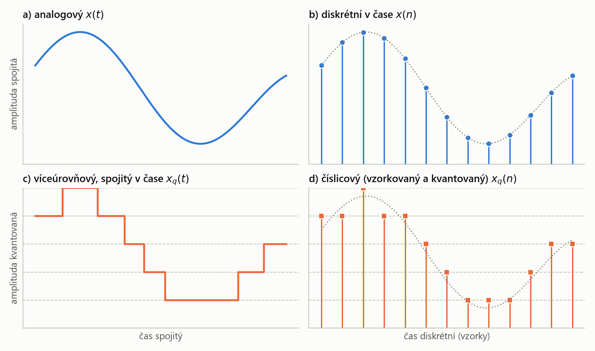
Vzorkování „řeže“ čas (svislé čáry v b, d), kvantování „řeže“ amplitudu (schody v c, d). Počítač umí pracovat jen se signálem d) – je diskrétní v obou osách. S tímto druhem signálů pracují všechny číslicové počítače včetně signálových procesorů; počet úrovní amplitudy je dán počtem bitů A/D převodníku nebo délkou registrů počítače.
„Diskrétní signál“ v definici výše znamená diskrétní v amplitudě (číslicový). Signál b) „diskrétní v čase“ má ale amplitudu spojitou. U zkoušky proto vždy řekni, v čem je signál diskrétní: v čase (vzorkování), v amplitudě (kvantování), nebo v obojím (číslicový signál).
Proč nezatěžovat zdroj signálu proudem
Každý reálný zdroj má vnitřní odpor \(R_i\). Když z něj odebíráme proud, část napětí „spadne“ na vnitřním odporu a na svorkách naměříme méně. Zdroje signálu, včetně biologických (tkáň, elektrody), bývají velmi měkké.
Tvrdý zdroj je zdroj s malým vnitřním odporem, jehož svorkové napětí se se zatěžovacím proudem mění jen málo. Měkký zdroj má velký vnitřní odpor a jeho svorkové napětí s odebíraným proudem výrazně klesá. Ideální zdroj napětí má nulový vnitřní odpor a stálé napětí \(U_e\) při jakémkoliv proudu.
tvrdý zdroj „vydrží“ zátěž, měkký se pod zátěží „prohne“. Biosignály jsou měkké zdroje – jakýkoliv větší odběr proudu by změnil tvar měřeného signálu.
| \(U\) | svorkové napětí zdroje (to, co naměříme) |
| \(U_e\) | napětí naprázdno (vnitřní napětí zdroje, bez odběru proudu) |
| \(R_i\) | vnitřní odpor zdroje: malý = tvrdý zdroj, velký = měkký zdroj |
| \(I\) | proud odebíraný ze zdroje |
| \(I_z\) | zkratový proud – při něm svorkové napětí klesne na nulu |
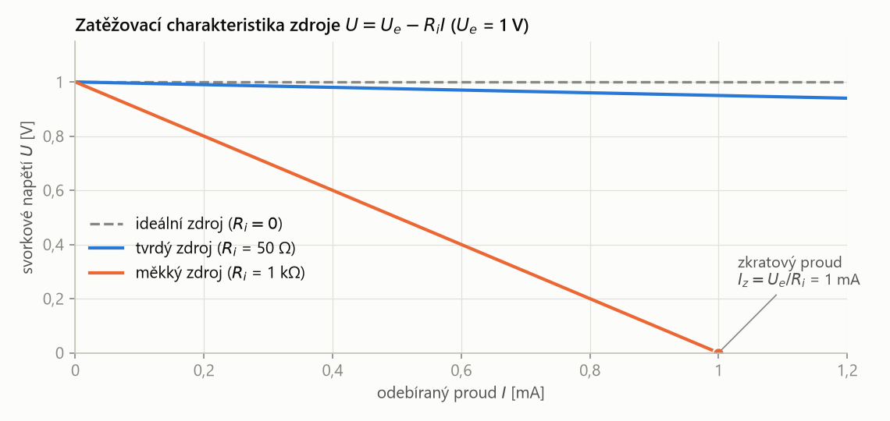
Čím je přímka strmější (větší \(R_i\)), tím víc napětí ztratíme při stejném odebíraném proudu. U měkkého zdroje měříme správně jen tehdy, když je proud téměř nulový – jsme vlevo u osy \(U\).
Připomenutí ze základů: Ohmův zákon, Kirchhoffovy zákony a dělič napětí
Zdroj s vnitřním odporem a vstup přístroje tvoří dělič napětí. Dělič je i ve zpětné vazbě zesilovačů s OZ a v RC filtrech, proto si ho tady zopakujeme i se zákony, ze kterých vychází.
Ohmův zákon říká, že proud procházející rezistorem je přímo úměrný napětí na rezistoru a nepřímo úměrný jeho odporu: \(I = U/R\), neboli \(U = R \cdot I\).
dvojnásobné napětí na stejném rezistoru = dvojnásobný proud; dvojnásobný odpor při stejném napětí = poloviční proud. Stačí znát dvě ze tří veličin a třetí dopočítám.
Elektrický výkon \(P\) je práce (energie), kterou elektrický proud vykoná za jednotku času. Na součástce je roven součinu napětí na součástce a proudu, který jí protéká: \[ P = U \cdot I \] Jednotkou je watt (W = V · A).
kolik energie za sekundu součástka spotřebuje – v rezistoru se celá mění na teplo. Po dosazení Ohmova zákona platí i \(P = R \cdot I^2 = U^2/R\), takže stačí znát dvě ze tří veličin. Rezistor z příkladu výše (9 V na 4,7 kΩ) hřeje výkonem asi 17 mW.
1. Kirchhoffův zákon říká, že algebraický součet proudů v každém uzlu je roven nule: \(\sum I_k = 0\). Proudy do uzlu vtékající bereme s jedním znaménkem, vytékající s opačným.
kolik proudu do uzlu přiteče, tolik z něj musí odtéct – náboj se v uzlu nehromadí ani neztrácí (zákon zachování náboje).
2. Kirchhoffův zákon říká, že algebraický součet všech napětí podél libovolné uzavřené smyčky je roven nule: \(\sum U_k = 0\). Napětí zdrojů a úbytky napětí na součástkách bereme se znaménkem podle zvoleného směru oběhu.
když obejdu smyčku a vrátím se na start, jsem na stejném potenciálu – kolik napětí zdroje „dodají“, tolik se ho na součástkách „spotřebuje“ (zákon zachování energie).
Sériově (teče jimi stejný proud) se odpory sčítají:
\[ R_s = R_1 + R_2 \]Paralelně (je na nich stejné napětí) pro dva rezistory „součin lomeno součet“:
\[ R_p = R_1 \parallel R_2 = \frac{R_1 R_2}{R_1 + R_2} \]| \(R_s\) | vždy větší než největší z rezistorů |
| \(R_p\) | vždy menší než nejmenší z rezistorů; velký odpor paralelně k malému skoro nic nezmění |
Dělič napětí je zapojení dvou sériově řazených rezistorů \(R_1\) a \(R_2\) připojených ke vstupnímu napětí \(U_1\); výstupní napětí \(U_2\) se odebírá z jednoho z rezistorů (\(R_2\)) a je částí vstupního napětí v poměru odporů. Nezatížený dělič je takový, z jehož výstupu se neodebírá žádný proud.
dva rezistory za sebou si rozdělí napětí – každý dostane podíl úměrný svému odporu. Výstup „odbočkou“ mezi nimi dá zmenšenou kopii vstupu.

Zátěž je obvod nebo součástka připojená k výstupu zdroje signálu, která z něj odebírá proud; modelujeme ji odporem \(R_\text{z}\). Zatížený dělič je dělič napětí, k jehož výstupu je zátěž připojena – zátěž je pak paralelně k rezistoru \(R_2\).
jakmile na výstup děliče něco připojím (voltmetr, další stupeň), odebírá to proud a výstupní napětí klesne pod hodnotu spočítanou pro nezatížený dělič.
Výstup naprázdno: oběma rezistory teče stejný proud a výstup je úbytek na \(R_2\):
\[ I = \frac{U_1}{R_1 + R_2} \] \[ U_2 = R_2 \cdot I = U_1 \cdot \frac{R_2}{R_1 + R_2} \]Se zátěží: \(R_\text{z}\) je paralelně k \(R_2\), takže místo \(R_2\) dosadím \(R_2 \parallel R_\text{z}\):
\[ U_{2\text{z}} = U_1 \cdot \frac{R_2 \parallel R_\text{z}}{R_1 + R_2 \parallel R_\text{z}} \]| \(U_1\), \(U_2\) | vstupní napětí (na celém děliči) a výstupní napětí (na \(R_2\)) |
| \(R_1\), \(R_2\) | „horní“ rezistor (vstup → výstup) a „dolní“ rezistor (výstup → zem) |
| \(\frac{R_2}{R_1+R_2}\) | dělicí poměr, vždy mezi 0 a 1 |
| \(R_\text{z}\) | odpor zátěže (vstupní odpor připojeného obvodu) |
Paralelní kombinace je vždy menší než \(R_2\), proto zátěž výstupní napětí vždy sníží. Dělič 10 kΩ / 10 kΩ z 10 V dá naprázdno 5 V, se zátěží 10 kΩ jen 3,33 V, se zátěží 100 kΩ 4,76 V. Pravidlo: když je \(R_\text{z}\) aspoň 10× větší než odpory děliče, je chyba pod 5 %, při 100× pod 0,5 %.
Měřený zdroj je přesně takový dělič: vnitřní odpor zdroje \(R_i\) je „horní“ rezistor, vstupní odpor přístroje \(R_\text{in}\) „dolní“. Proto musí být \(R_\text{in}\) mnohem větší než \(R_i\).
Na slidu je to shrnuto Ohmovým zákonem pro vstup měřicího přístroje:
\[ R_\text{in} = \frac{U}{I_s} \to \infty \]Má-li zůstat měřené napětí \(U\) stálé (= napětí zdroje), musí být proud do přístroje \(I_s \to 0\), a tedy jeho vstupní odpor \(R_\text{in} \to \infty\). Zdroj s vnitřním odporem a vstup přístroje tvoří zatížený dělič – tak, jak ho připomíná rámeček výše.
Zdroj signálu má napětí naprázdno \(U_e = 1\ \text{mV}\) a vnitřní odpor (tkáň + elektrody) \(R_i = 100\ \text{k}\Omega\). Jaké napětí naměří přístroj se vstupním odporem 1 MΩ a jaké s 1 GΩ?
1. Zdroj a vstup přístroje jsou dělič, měříme napětí na \(R_\text{in}\):
\[ U = U_e \, \frac{R_\text{in}}{R_i + R_\text{in}} \]2. Pro \(R_\text{in} = 1\ \text{M}\Omega\):
\[ U = 1\ \text{mV} \cdot \frac{1\ \text{M}\Omega}{1{,}1\ \text{M}\Omega} = 0{,}909\ \text{mV} \]Signál je o 9 % menší.
3. Pro \(R_\text{in} = 1\ \text{G}\Omega\):
\[ U = 1\ \text{mV} \cdot \frac{1000\ \text{M}\Omega}{1000{,}1\ \text{M}\Omega} = 0{,}9999\ \text{mV} \]Chyba je jen 0,01 %, proud do přístroje 1 pA. Proto mají biozesilovače na vstupu sledovač nebo přístrojový zesilovač s obrovským vstupním odporem.
„Biologické zdroje jsou měkké, mají velký vnitřní odpor. Kdybych z nich odebíral proud, napětí by kleslo na vnitřním odporu a změnil by se tvar signálu. Proto měřím napětí přístrojem s co největším vstupním odporem, aby proud byl téměř nulový.“
Signál v jiné veličině: proud
Všechny následující převodníky dělají totéž: převedou neelektrickou nebo „nevhodnou“ veličinu na napětí, se kterým už umí zbytek akviziční cesty pracovat. Proud se převádí rezistorem – převodníkem R na U (Ohmův zákon \(U = R I\)).
Připomenutí ze základů: operační zesilovač a jeho základní zapojení
Převodníky v této kapitole (a většina obvodů v dalších přednáškách) jsou postavené z operačního zesilovače. Stačí znát dvě pravidla a z nich odvodit každé zapojení.
Operační zesilovač je stejnosměrně vázaný rozdílový zesilovač s velmi velkým zesílením, se dvěma vstupy – neinvertujícím (+) a invertujícím (−) – a jedním výstupem. Výstupní napětí je úměrné rozdílu vstupních napětí: \(U_\text{výst} = A_0\,(U_+ - U_-)\).
„porovnává“ napětí na dvou vstupech a jejich rozdíl obrovsky zesílí. Sám o sobě je nepoužitelný (zesílení je příliš velké a nepřesné); teprve s rezistory ve zpětné vazbě z něj vznikne zesilovač s přesným zesílením.
| \(U_+\), \(U_-\) | napětí na neinvertujícím a invertujícím vstupu (proti zemi) |
| \(A_0\) | zesílení naprázdno, typicky \(10^5\) až \(10^6\); výstup nikdy nepřekročí napájení (saturace) |
Záporná zpětná vazba je přivedení části výstupního signálu zpět na vstup tak, aby působila proti změně, která ji vyvolala. U OZ se realizuje propojením výstupu s invertujícím vstupem (přímo nebo přes rezistory). Výsledné zesílení pak určují jen prvky ve zpětné vazbě, ne \(A_0\).
zesilovač „sám sebe hlídá“: když výstup vzroste víc, než má, zvedne se i napětí na invertujícím vstupu, rozdíl \(U_+ - U_-\) se zmenší a výstup klesne zpět. Ustálí se tam, kde jsou oba vstupy (téměř) stejné.
Virtuální zkrat je stav OZ se zápornou zpětnou vazbou v lineárním režimu, kdy je napětí mezi jeho vstupy prakticky nulové: \(U_+ \approx U_-\), protože \(U_d = U_\text{výst}/A_0\) a \(A_0\) je obrovské. Je-li neinvertující vstup uzemněn, je invertující vstup na potenciálu země – mluvíme o virtuální nule (zemi).
vstupy jsou na stejném napětí, jako by byly zkratované – ale proud mezi nimi neteče (proto „virtuální“). Pro výstup 10 V a \(A_0 = 10^5\) je rozdíl vstupů jen 0,1 mV.
- Virtuální zkrat: \(U_- = U_+\) (platí jen se zápornou zpětnou vazbou a mimo saturaci).
- Nulové vstupní proudy: do vstupů OZ neteče proud; co přiteče k invertujícímu vstupu, odteče zpětnou vazbou.
- 1. Kirchhoffův zákon v uzlu invertujícího vstupu + Ohmův zákon pro každý rezistor.
- Vyjádři \(U_\text{výst}\) a zesílení \(A = U_\text{výst}/U_\text{vst}\).
Invertující zesilovač je zapojení OZ, ve kterém je vstupní signál přiveden přes rezistor \(R_1\) na invertující vstup, neinvertující vstup je uzemněn a rezistor \(R_2\) tvoří zpětnou vazbu z výstupu na invertující vstup. Zesílení je \(A = -R_2/R_1\).
zesílí signál v poměru rezistorů a otočí jeho znaménko (fázový posun 180°). Zesílení může být i menší než 1 (zeslabení).

Invertující vstup je na 0 V, proud \(R_1\) celý teče přes \(R_2\):
\[ \frac{U_\text{vst}}{R_1} = -\frac{U_\text{výst}}{R_2} \] \[ A = -\frac{R_2}{R_1}, \qquad R_\text{vst} = R_1 \]| \(R_1\) | vstupní rezistor – zároveň vstupní odpor zapojení (malý, zatěžuje zdroj) |
| \(R_2\) | rezistor ve zpětné vazbě |
| znaménko − | výstup je otočený (fáze 180°); zesílení může být i menší než 1 |
Neinvertující zesilovač je zapojení OZ, ve kterém je vstupní signál přiveden přímo na neinvertující vstup a na invertující vstup se přivádí část výstupního napětí z děliče \(R_2\) (z výstupu) a \(R_1\) (k zemi). Zesílení je \(A = 1 + R_2/R_1\).
zesílí signál bez otočení znaménka, zesílení je vždy aspoň 1 a – hlavně – do vstupu neteče proud, takže zdroj signálu vůbec nezatěžuje.

Do invertujícího vstupu neteče proud, \(R_2\) a \(R_1\) jsou nezatížený dělič z výstupu. Virtuální zkrat: napětí z děliče se rovná vstupu.
\[ U_- = U_\text{výst} \cdot \frac{R_1}{R_1 + R_2} = U_\text{vst} \] \[ A = 1 + \frac{R_2}{R_1}, \qquad R_\text{vst} \to \infty \]| \(R_1\) | rezistor děliče mezi invertujícím vstupem a zemí |
| \(R_2\) | rezistor zpětné vazby mezi výstupem a invertujícím vstupem |
| \(A\) | vždy ≥ 1, ve fázi se vstupem; vstupní odpor je vstupní odpor OZ (MΩ až TΩ) |
Napěťový sledovač (impedanční oddělovač, buffer) je zapojení OZ, ve kterém je vstupní signál přiveden na neinvertující vstup a výstup je přímo spojen s invertujícím vstupem (100% záporná zpětná vazba). Výstupní napětí je rovno vstupnímu (\(A = 1\)), vstupní odpor je velmi velký a výstupní odpor velmi malý.
výstup „kopíruje“ vstup, ale proud pro zátěž dodává OZ ze svého napájení, ne zdroj signálu. Zdroj tak není zatěžován a zátěž dostane plné napětí.

Zesiluje proud, ne napětí: do vstupu neteče prakticky žádný proud, výstup se chová jako ideální zdroj napětí. Dělič 10 kΩ / 10 kΩ z 10 V se zátěží 1 kΩ dá jen 0,83 V; se sledovačem mezi děličem a zátěží zůstane dělič nezatížený a na zátěži je 5 V (proud dodá OZ ze svého napájení). Používá se na oddělení měkkého zdroje (elektrody, senzor, dělič, reference) od zátěže, mezi stupni filtrů a před A/D převodníkem.
- Neinvertující zesílení je \(1 + R_2/R_1\), ne \(R_2/R_1\). Se stejnými rezistory dá invertující −10, neinvertující 11.
- Virtuální zkrat platí jen se zápornou zpětnou vazbou (výstup → invertující vstup) a mimo saturaci.
- Výstup OZ nikdy nepřekročí napájení: zesílení 100 a vstup 0,5 V nedá 50 V, ale saturaci (~13 V).
Převodník proudu na napětí s OZ
Převodník proudu na napětí s OZ vychází z invertujícího zesilovače, u kterého je vynechán vstupní odpor \(R_1\): měřený proud teče přímo do invertujícího vstupu (virtuální nuly) a celý projde rezistorem \(R\) ve zpětné vazbě, takže výstupní napětí je \(U_2 = -i_1 R\).
proud „prochází“ zpětnou vazbou a vytvoří na ní napětí. Protože vstup je na 0 V, měří se proud bez úbytku napětí – měřený obvod nepozná, že v něm měříme.
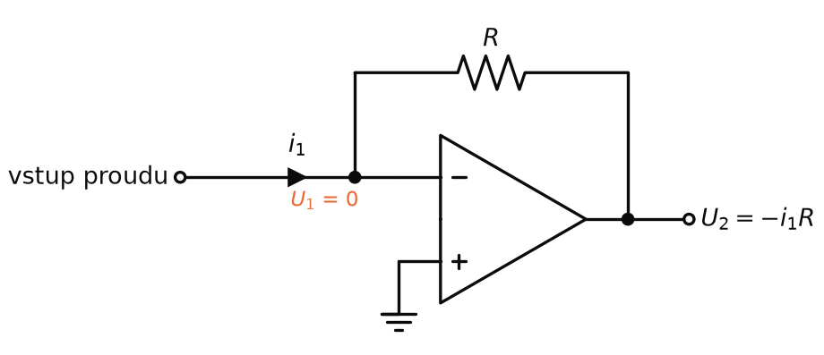
- Neinvertující vstup je uzemněn, díky virtuálnímu zkratu je invertující vstup také na 0 V: \(U_1 = 0\).
- Do vstupu OZ neteče proud, takže celý proud \(i_1\) teče rezistorem \(R\) z invertujícího vstupu k výstupu.
- Napětí na \(R\) je \(i_1 R\); levý konec má 0 V, proud teče doprava, takže výstup je o \(i_1 R\) níž než 0 V.
Fotodioda dává proud \(i_1 = 10\ \mu\text{A}\), ve zpětné vazbě je \(R = 100\ \text{k}\Omega\):
\[ U_2 = -10 \cdot 10^{-6}\ \text{A} \cdot 100 \cdot 10^{3}\ \Omega = -1\ \text{V} \]- Výstup má opačné znaménko než proud (jako u invertujícího zesilovače).
- Nevýhoda zapojení: jedna svorka měřeného obvodu musí být spojená se společným vodičem (zemí) – neinvertující vstup je uzemněný a invertující je na virtuální nule.
- Využití: měření proudu bez úbytku napětí, např. indikace nulového proudu.
- Na obrázku na slidu je v přívodu proudu nakreslen ještě rezistor R. Výsledek nemění: proud ze zdroje proudu je stejný s rezistorem i bez něj, a zesílení určuje jen \(R\) ve zpětné vazbě.
Snímací rezistor: High-Side a Low-Side
Snímací rezistor (bočník, shunt resistor, \(R_\text{SENSE}\)) je rezistor s malým a přesným odporem zařazený do proudové cesty; měřený proud na něm vytvoří úbytek napětí \(U = R_\text{SENSE} \cdot I\), který se měří.
„převodník R na U“ v nejjednodušší podobě. Odpor je malý (desetiny Ω), aby úbytek a ztrátový výkon byly malé a obvod se měřením skoro neovlivnil.
Při High-Side Current Sensing (měření v „horní větvi“) je snímací rezistor mezi napájecím zdrojem a zátěží a měří se úbytek na vysokém potenciálu. Při Low-Side Current Sensing (měření v „dolní větvi“) je snímací rezistor mezi zátěží a zemí a měří se úbytek mezi zemí a místem „po“ zátěži.
high-side = rezistor „nad“ zátěží (u plusu), low-side = rezistor „pod“ zátěží (u země). Rozdíl je v tom, na jakém napětí „sedí“ měřený úbytek.
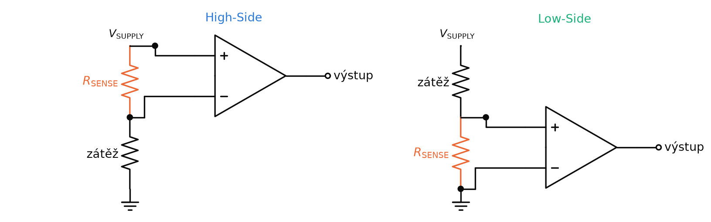
| High-Side | Low-Side | |
|---|---|---|
| výhody (+) | zátěž je stále přímo spojena se zemí („čistý GND“); lze detekovat zkrat na zem (proud se snímá ještě před zátěží); běžné v automotive, napájecích zdrojích, bateriových systémech | jednoduchá realizace – měřicí obvod může být přímo vztažen k zemi; stačí běžný OZ nebo přímo interní ADC mikrokontroléru |
| nevýhody (−) | oba vstupy jsou na vysokém napětí blízkém \(V_\text{CC}\); je potřeba speciální zesilovač, který diferencí změří malé napětí (mV) „posazené“ na vysokém napětí (i desítky V) | zemní bod zátěže už není „čistý GND“, posune se o úbytek na rezistoru (problém u citlivých zařízení); nelze detekovat zkrat na zátěži přímo proti zemi (rezistor je až „za“ zátěží) |
Zátěží teče \(I = 2\ \text{A}\), snímací rezistor má \(R_\text{SENSE} = 0{,}1\ \Omega\), napájení je 12 V.
1. Úbytek na rezistoru:
\[ U = R_\text{SENSE} \cdot I = 0{,}1\ \Omega \cdot 2\ \text{A} = 0{,}2\ \text{V} \]2. Napětí na vstupech zesilovače: 12 V a 11,8 V. Zesilovač musí změřit rozdíl 0,2 V a „nevšímat si“ společných 12 V – to je souhlasné napětí a schopnost ho potlačit popisuje CMRR.
3. Výkon ztracený na rezistoru:
\[ P = R_\text{SENSE} \cdot I^2 = 0{,}1 \cdot 2^2 = 0{,}4\ \text{W} \]Proto se volí co nejmenší odpor.
Připomenutí ze základů: rozdílový zesilovač, CMRR a přístrojový zesilovač
Užitečný rozdíl 0,2 V „sedí“ na 12 V. Zesilovač musí zesílit rozdíl vstupů a potlačit to, co mají oba vstupy společné. Stejný problém má EKG: srdeční signál je malý rozdíl mezi elektrodami, síťový brum 50 Hz je na obou skoro stejný.
Pro dvojici vstupních napětí \(U_1\), \(U_2\) je rozdílové napětí \(U_d = U_2 - U_1\) a souhlasné napětí \(U_s = \frac{U_1 + U_2}{2}\) (průměr obou vstupů, angl. common-mode, \(U_\text{cm}\)). Každou dvojici vstupů lze zapsat jako \(U_{1,2} = U_s \mp U_d/2\).
rozdílové napětí je to, co se mezi elektrodami liší (užitečný biosignál), souhlasné to, co mají obě elektrody společné (síťový brum 50 Hz, offset). Rušení se do těla indukuje skoro stejně všude, proto je souhlasné.
Rozdílový (diferenční) zesilovač je zapojení jednoho OZ se čtyřmi rezistory, které zesiluje rozdíl dvou vstupních napětí: signál \(U_1\) jde přes \(R_1\) na invertující vstup (zpětná vazba \(R_2\)), signál \(U_2\) přes dělič \(R_3\), \(R_4\) na neinvertující vstup. Při \(R_3 = R_1\) a \(R_4 = R_2\) platí \(U_\text{výst} = \frac{R_2}{R_1}(U_2 - U_1)\).
kombinace invertujícího a neinvertujícího zesilovače: co je na obou vstupech stejné, se odečte, zesílí se jen rozdíl. Přesně to potřebujeme u EKG – signál srdce je rozdíl napětí mezi elektrodami, rušení je na obou stejné.

| \(U_2 - U_1\) | rozdílové napětí – to se zesiluje |
| \(R_2/R_1\) | rozdílové zesílení \(A_d\) |
| \(R_3, R_4\) | dělič pro neinvertující vstup; jeho poměr musí přesně odpovídat \(R_1, R_2\) |
Slabiny: malý a pro oba vstupy různý vstupní odpor (zatěžuje elektrody) a citlivost na přesnost rezistorů – jediný rezistor s chybou 1 % srazí CMRR na asi 61 dB.
CMRR (common-mode rejection ratio, činitel potlačení souhlasného signálu) je poměr rozdílového zesílení \(A_d\) a souhlasného zesílení \(A_s\) zesilovače: \(\text{CMRR} = A_d / A_s\); obvykle se udává v decibelech: \(\text{CMRR}_\text{dB} = 20 \log_{10}(A_d/A_s)\).
kolikrát víc zesilovač zesílí užitečný rozdíl než společné rušení. Ideální rozdílový zesilovač má \(A_s = 0\) a CMRR nekonečné; reálný má 60–120 dB. Čím víc, tím čistší biosignál.
| \(A_d\) | rozdílové zesílení: výstup / rozdíl vstupů (souhlasné napětí nulové) |
| \(A_s\) | souhlasné zesílení: výstup / stejné napětí přivedené na oba vstupy |
| \(U_d\), \(U_s\) | rozdílové a souhlasné vstupní napětí |
Z dB zpět: \(A_s = A_d / 10^{\text{CMRR}_\text{dB}/20}\). Každých 20 dB navíc = 10× méně rušení.
Na elektrodách je EKG \(U_d = 1\) mV a souhlasný brum \(U_s = 0{,}5\) V. Zesilovač \(A_d = 1000\).
1. CMRR = 60 dB → \(A_s = 1000/10^{3} = 1\):
\[ \text{signál: } 1000 \cdot 1\ \text{mV} = 1\ \text{V} \] \[ \text{brum: } 1 \cdot 0{,}5\ \text{V} = 0{,}5\ \text{V} \]2. CMRR = 100 dB → \(A_s = 1000/10^{5} = 0{,}01\):
\[ \text{brum: } 0{,}01 \cdot 0{,}5\ \text{V} = 5\ \text{mV} \]S 60 dB je brum na výstupu poloviční než EKG, se 100 dB je 200× menší.
Přístrojový (instrumentační) zesilovač je rozdílový zesilovač složený ze tří OZ: dva neinvertující zesilovače na vstupu (s rezistory \(R\) ve zpětných vazbách propojenými rezistorem \(R_G\)) a za nimi rozdílový zesilovač. Má velmi velký a stejný vstupní odpor obou vstupů, vysoké CMRR a zesílení nastavitelné jediným rezistorem \(R_G\).
„vylepšený“ rozdílový zesilovač: vstupní stupeň nezatěžuje elektrody a sám zesílí rozdíl, výstupní stupeň odečte zbytek souhlasného napětí. Je základem každého EKG, EEG a EMG zesilovače.

| \(R\) | rezistory ve zpětné vazbě vstupních OZ (oba stejné) |
| \(R_G\) | rezistor, kterým se nastavuje zesílení (gain) |
| \(1 + 2R/R_G\) | zesílení 1. stupně – jen pro rozdílový signál, souhlasný má zesílení 1 |
| \(R_2/R_1\) | zesílení 2. stupně (rozdílový zesilovač) |
Proč má vysoké CMRR: při \(U_1 = U_2\) je na obou koncích \(R_G\) stejné napětí, neteče jím proud a výstupy 1. stupně jen kopírují vstupy. Rozdíl se tedy zesílí, souhlasný signál ne; zbytek odečte 2. stupeň.
Proudový transformátor
Proudový transformátor je transformátor určený ke snímání velkých (střídavých) proudů: měřený proud protéká primárním vinutím s malým počtem závitů \(N_P\) a v sekundárním vinutí s \(N_S\) závity vznikne proud zmenšený v poměru závitů, který se měří na zátěži.
velký proud se magneticky „zmenší“ na malý a bezpečný. Měřicí obvod není s měřeným vodičem vodivě spojen a sám skoro nic nespotřebuje – lze tak měřit i extrémně vysoké proudy.
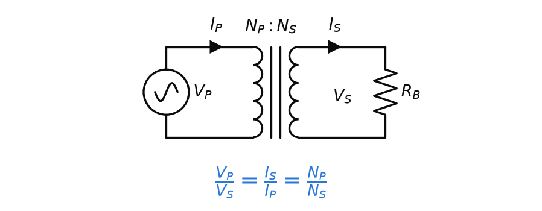
| \(V_P\), \(V_S\) | napětí primárního a sekundárního vinutí |
| \(I_P\), \(I_S\) | proud primárním (měřeným) a sekundárním vinutím |
| \(N_P\), \(N_S\) | počet závitů primárního a sekundárního vinutí |
Vodič s proudem \(I_P = 100\ \text{A}\) prochází jádrem (\(N_P = 1\)), sekundár má \(N_S = 1000\) závitů a zátěž \(R_B = 10\ \Omega\).
1. Sekundární proud:
\[ I_S = I_P \cdot \frac{N_P}{N_S} = 100\ \text{A} \cdot \frac{1}{1000} = 0{,}1\ \text{A} \]2. Napětí na zátěži:
\[ V_S = R_B \cdot I_S = 10\ \Omega \cdot 0{,}1\ \text{A} = 1\ \text{V} \]Proudy se transformují obráceně než napětí: víc závitů na sekundáru = menší proud, ale větší napětí. Slide zdůrazňuje, že je nutné transformační poměr uvážit – naměřený proud se musí vynásobit \(N_S/N_P\). Proudový transformátor se používá v energetice: napájecí zdroje, ovládání motorů a osvětlení, obvody vysokého napětí.
Proud → napětí: převodník s OZ (\(U_2 = -i_1 R\), bez úbytku napětí), snímací rezistor high-side / low-side (\(U = R_\text{SENSE} I\)), pro velké proudy proudový transformátor (\(I_S = I_P N_P/N_S\)).
Signál v jiné veličině: frekvence
Převodník frekvence na napětí (f/U) je kmitočtem řízený zdroj napětí: jeho výstupní napětí je úměrné frekvenci vstupního signálu. Jednou z možných realizací je převodník s nábojovou pumpou.
každá perioda vstupního signálu „napumpuje“ do výstupního obvodu stejnou dávku náboje. Čím víc period za sekundu, tím víc náboje a tím vyšší výstupní napětí.
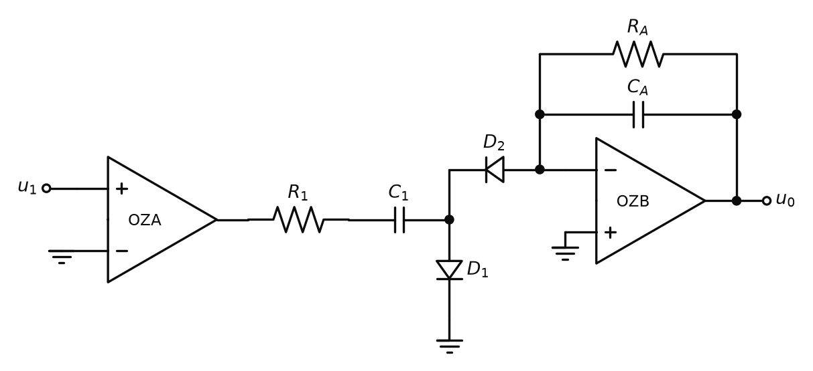
Připomenutí ze základů: kondenzátor a integrátor
Kondenzátor je součástka tvořená dvěma vodivými elektrodami oddělenými izolantem, která uchovává elektrický náboj. Kapacita \(C\) je poměr náboje na elektrodách a napětí mezi nimi: \(C = Q/U\); jednotkou je farad (F). Proud kondenzátorem je úměrný rychlosti změny napětí: \(i = C \cdot \frac{du}{dt}\).
kondenzátor je „zásobník náboje“. Stejnosměrným proudem neprochází (izolant), ale střídavý signál přes něj „projde“, protože se elektrody pořád nabíjejí a vybíjejí. Čím rychleji se napětí mění, tím větší proud teče.
Převodník pracuje s nábojem: kondenzátor nabitý na napětí \(U\) nese náboj \(Q = C \cdot U\). OZB s kondenzátorem \(C_A\) ve zpětné vazbě je integrátor (podrobně v P4): proud, který přiteče do jeho invertujícího vstupu (virtuální nula), nemůže do OZ, a tak celý nabíjí \(C_A\). Výstupní napětí tedy „sčítá“ přitékající náboj. Rezistor \(R_A\) paralelně k \(C_A\) ho zároveň pomalu vybíjí – proto „ztrátový“ integrátor.
- Tvarování: OZA je zapojen jako komparátor bez hystereze. Z libovolného střídavého průběhu \(u_1\) vyrobí obdélník: na výstupu se podle části periody střídá \(+U_\text{SAT}\) a \(-U_\text{SAT}\).
- Výstup OZA = \(+U_\text{SAT}\): teče proud \(i_1\) z výstupu OZA přes \(R_1\), \(C_1\) a \(D_1\) do země. \(C_1\) se nabíjí až na \(+U_\text{SAT}\), pak proud \(i_1\) zanikne.
- Výstup OZA = \(-U_\text{SAT}\): teče proud \(i_2\) z výstupu OZB přes \(C_A\), \(D_2\), \(C_1\), \(R_1\) do záporného výstupu OZA. \(C_1\) se přebíjí na opačnou polaritu, až napětí na něm dosáhne \(-U_\text{SAT}\), pak \(i_2\) zanikne.
- Opakování: děj se opakuje každou periodu vstupního signálu. Napětí na \(C_1\) se pokaždé změní z \(+U_\text{SAT}\) na \(-U_\text{SAT}\), tedy o \(2U_\text{SAT}\). Proud \(i_2\) tento náboj „přečerpá“ přes \(C_A\).
- Vybíjení: po celou dobu periody se \(C_A\) zároveň vybíjí rezistorem \(R_A\).
Náboj načerpaný za jednu periodu (změna napětí na \(C_1\) je \(2U_\text{SAT}\)):
\[ Q_1 = 2 \cdot C_1 \cdot U_\text{SAT} \]Je-li perioda dostatečně krátká vzhledem k rychlosti vybíjení \(C_A\), je vybíjecí proud prakticky konstantní:
\[ i_{RA} = \frac{u_0}{R_A} \]Za dobu periody \(T\) se tak na rezistoru \(R_A\) „změní na teplo“ náboj:
\[ Q_2 = \frac{u_0}{R_A} \cdot T \]V rovnovážném stavu (vstupní kmitočet se nemění a \(u_0\) se ustálí) se za periodu načerpá stejně náboje, kolik se vybije: \(Q_1 = Q_2\).
\[ 2\, C_1\, U_\text{SAT} = \frac{u_0}{R_A} \cdot T \]Vyjádříme \(u_0\) a dosadíme \(1/T = f\):
\[ u_0 = \frac{2\, C_1\, U_\text{SAT}\, R_A}{T} = 2 \cdot U_\text{SAT} \cdot C_1 \cdot R_A \cdot f \]| \(u_0\) | výstupní (ustálené) napětí |
| \(U_\text{SAT}\) | saturační napětí výstupu komparátoru OZA |
| \(C_1\) | pumpovací kondenzátor – určuje dávku náboje za periodu |
| \(R_A\) | vybíjecí rezistor ve zpětné vazbě OZB |
| \(f\) | frekvence vstupního signálu \(u_1\), \(f = 1/T\) |
Na slidu je výsledek napsán jako \(u_0 = 2 \cdot U_\text{SAT} \cdot C_1 \cdot R_1 \cdot f\). Z rovnosti \(Q_1 = Q_2\) ze stejných slidů ale vyjde \(R_A\) – vybíjecí rezistor, přes který odtéká náboj. \(R_1\) jen omezuje proudové špičky při nabíjení \(C_1\); pokud se \(C_1\) stihne za půlperiodu plně nabít, výsledek na něm nezávisí. U zkoušky výsledek odvoď z rovnosti nábojů, pak se nespleteš.
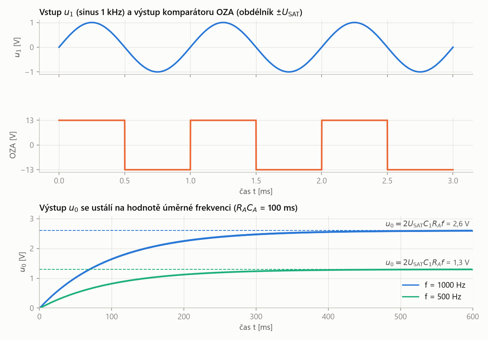
Výstup se ustálí tam, kde se načerpaný a vybitý náboj vyrovnají – a to je přesně hodnota ze vzorce (čárkovaně). Dvojnásobná frekvence = dvojnásobné napětí: převod je lineární. Ustálení trvá několik časových konstant \(R_A C_A\) (zde 100 ms), drobné zvlnění (26 mV) je v grafu neviditelné.
\(U_\text{SAT} = 13\ \text{V}\), \(C_1 = 1\ \text{nF}\), \(R_A = 100\ \text{k}\Omega\), vstupní frekvence \(f = 1\ \text{kHz}\).
1. Náboj za periodu:
\[ Q_1 = 2 \cdot 1 \cdot 10^{-9}\ \text{F} \cdot 13\ \text{V} = 26\ \text{nC} \]2. Výstupní napětí:
\[ u_0 = 2 \cdot 13 \cdot 1 \cdot 10^{-9} \cdot 100 \cdot 10^{3} \cdot 1000 = 2{,}6\ \text{V} \]3. Citlivost převodníku: 2,6 mV na 1 Hz; pro 500 Hz tedy 1,3 V.
„Komparátor udělá ze vstupu obdélník. Každou periodu se kondenzátor \(C_1\) přebije z \(+U_\text{SAT}\) na \(-U_\text{SAT}\), tím přečerpá do integrátoru náboj \(2C_1U_\text{SAT}\). Současně se \(C_A\) vybíjí přes \(R_A\) proudem \(u_0/R_A\). V ustáleném stavu se načerpaný a vybitý náboj rovnají, z toho \(u_0 = 2U_\text{SAT}C_1R_Af\) – výstup je úměrný frekvenci.“
Signál v jiné veličině: odpor
Odpor se měří podle Ohmova zákona: zdroj proudu vyvolá na měřeném odporu \(R_X\) úbytek napětí \(U_X = R_X \cdot I\). Protože \(R_X\) je z principu proměnný (to chceme měřit), je důležité, aby proud byl konstantní – jinak by se se změnou \(R_X\) měnil i proud a napětí by nebylo úměrné odporu.
Při měření odporu s OZ je měřený rezistor \(R_X\) zapojen do zpětné vazby invertujícího zesilovače; konstantní proud \(I_N = U_\text{REF}/R_N\) vytvoří zdroj referenčního napětí \(U_\text{REF}\) a normálový (přesný) odpor \(R_N\). Tento proud teče přes \(R_X\) a výstupní napětí OZ je úměrné \(R_X\).
díky virtuální nule je proud dán jen \(U_\text{REF}\) a \(R_N\), ať je \(R_X\) jakýkoliv – OZ tak funguje jako přesný zdroj proudu i jako voltmetr zároveň. Záměnou \(R_N\) se mění rozsah měření.
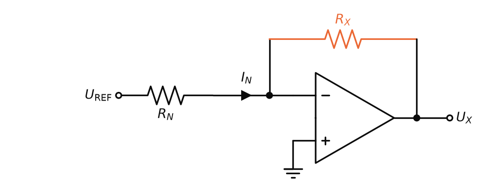
| \(U_\text{REF}\) | napětí zdroje referenčního napětí (stálé a přesné) |
| \(R_N\) | normálový (přesně známý) odpor; jeho výběrem se volí proud, a tím rozsah |
| \(I_N\) | konstantní měřicí proud, teče přes \(R_N\) i \(R_X\) |
| \(R_X\) | měřený odpor ve zpětné vazbě |
| \(U_X\) | výstupní napětí OZ, úměrné \(R_X\) (znaménko minus: invertující zapojení) |
\(U_\text{REF} = 1\ \text{V}\), \(R_N = 1\ \text{k}\Omega\), měříme Pt100 (100 Ω při 0 °C).
1. Měřicí proud:
\[ I_N = \frac{1\ \text{V}}{1000\ \Omega} = 1\ \text{mA} \]2. Výstup při 0 °C:
\[ U_X = -100\ \Omega \cdot 1\ \text{mA} = -0{,}1\ \text{V} \]3. Při 100 °C má Pt100 odpor 138,5 Ω:
\[ U_X = -138{,}5\ \Omega \cdot 1\ \text{mA} = -0{,}1385\ \text{V} \]4. Změna rozsahu: s \(R_N = 100\ \Omega\) je \(I_N = 10\ \text{mA}\) a při 0 °C \(U_X = -1\ \text{V}\) – desetkrát citlivější, ale čidlo se proudem víc ohřívá.
Měření malých změn: Wheatstoneův můstek
Wheatstoneův můstek, též odporový můstek, je zapojení čtyř rezistorů do dvou paralelních odporových děličů – větve \(R_1\), \(R_2\) a větve \(R_3\), \(R_X\) – napájených stejným napětím; mezi středy děličů (uzly B a D) se zapojuje měřidlo \(V_G\). Využívá se pro měření velmi malých změn odporu.
porovnáváme napětí dvou děličů. Nezajímá nás velké napětí na každém z nich, ale jen jejich rozdíl – a ten je u vyrovnaného můstku nulový, takže i malá změna \(R_X\) je dobře vidět.
Vyvážený můstek je stav Wheatstoneova můstku, kdy mezi uzly B a D neprotéká žádný proud (napětí \(V_G = 0\)). Pak platí \(R_1/R_2 = R_3/R_X\).
oba děliče dělí napětí ve stejném poměru, středy jsou na stejném potenciálu a měřidlo ukazuje nulu.

- Uzel A je na napětí \(U\), uzel C na nule. Levá větev je dělič \(R_1\), \(R_2\), pravá dělič \(R_3\), \(R_X\).
- Napětí středů děličů (nezatížený dělič – měřidlem neteče proud): \[ V_D = U \, \frac{R_2}{R_1 + R_2} \] \[ V_B = U \, \frac{R_X}{R_3 + R_X} \]
- Vyvážení: \(V_D = V_B\). Převrátíme oba zlomky a odečteme 1: \[ \frac{R_1 + R_2}{R_2} = \frac{R_3 + R_X}{R_X} \quad\Rightarrow\quad \frac{R_1}{R_2} = \frac{R_3}{R_X} \]
- Vyjádříme neznámý odpor: \[ R_X = \frac{R_3 \cdot R_2}{R_1} \]
Podmínka nezávisí na napájecím napětí \(U\) – můstek je vyvážený při jakémkoliv napájení.
| \(R_1\), \(R_3\) | pevné rezistory (horní polovina můstku) |
| \(R_2\) | často proměnný (trimr) – jím se můstek kalibruje (vyvažuje) |
| \(R_X\) | neznámý (měřený) odpor, např. teplotní čidlo Pt100, Pt1000 |
\(R_1 = 1\ \text{k}\Omega\), \(R_3 = 100\ \Omega\). Můstek se vyvážil při nastavení trimru \(R_2 = 1385\ \Omega\). Jaký je odpor čidla?
\[ R_X = \frac{R_3 \cdot R_2}{R_1} = \frac{100 \cdot 1385}{1000} = 138{,}5\ \Omega \]To odpovídá Pt100 při 100 °C. Kontrola: \(R_1/R_2 = 0{,}722\) a \(R_3/R_X = 0{,}722\).
Symetrický můstek, všechny rezistory 100 Ω, napájení 5 V. Pt100 se ohřeje o 1 °C, jeho odpor vzroste na 100,385 Ω.
1. Střed levého děliče se nemění:
\[ V_D = 5 \cdot \frac{100}{200} = 2{,}5\ \text{V} \]2. Střed pravého děliče:
\[ V_B = 5 \cdot \frac{100{,}385}{200{,}385} = 2{,}5048\ \text{V} \]3. Měřidlo ukáže rozdíl:
\[ V_G = V_B - V_D = 4{,}8\ \text{mV} \]Kdybychom měřili jen napětí na čidle, hledali bychom změnu 4,8 mV na hodnotě 2,5 V. Můstek velkou „společnou“ část odečte a zbude jen změna kolem nuly – tu lze zesílit třeba tisíckrát (rozdílovým nebo přístrojovým zesilovačem), aniž by zesilovač šel do saturace.
„Wheatstoneův můstek jsou dva odporové děliče napájené stejným napětím, mezi jejich středy je měřidlo. Když jím neteče proud, je můstek vyvážený a platí \(R_1/R_2 = R_3/R_X\), tedy \(R_X = R_3R_2/R_1\). \(R_2\) bývá trimr, kterým můstek vyvažuji. Používá se na velmi malé změny odporu, třeba u teplotních čidel Pt100.“
Shrnutí
Akviziční cesta vede signál přes fyzikální převodník a úpravu signálu (a při více kanálech přes multiplexaci a galvanické oddělení) k A/D převodu; SAD končí u čísel, dál pokračuje CTB. Signál je záměrný fyzikální jev nesoucí informaci; podle času a amplitudy je analogový, diskrétní v čase, víceúrovňový spojitý v čase, nebo číslicový. Nejvhodnějším nosičem je napětí: měří se přesně, stabilně a téměř bez odběru proudu – což je nutné, protože biologické zdroje jsou měkké. Ostatní veličiny se proto převádějí na napětí: proud převodníkem s OZ (\(U_2 = -i_1R\)), snímacím rezistorem (high-side / low-side) nebo proudovým transformátorem; frekvence převodníkem s nábojovou pumpou (\(u_0 = 2U_\text{SAT}C_1R_Af\)); odpor konstantním proudem (\(R_X\) ve zpětné vazbě OZ). Malé změny odporu měří Wheatstoneův můstek, vyvážený při \(R_1/R_2 = R_3/R_X\).
Take-home messages
- Akviziční cesta: převodník → úprava → (MPX, galvanické oddělení) → A/D převod.
- Vzorkování dělá diskrétní čas, kvantování diskrétní amplitudu; počítač pracuje s obojím (číslicový signál).
- Napětí je nejlepší nosič: přesné, stabilní, nesaturovatelný detektor, měření téměř bez proudu.
- Biologické zdroje jsou měkké → vstupní odpor přístroje \(\to \infty\), odebíraný proud \(\to 0\).
- Proud → napětí: OZ bez \(R_1\) dává \(U_2 = -i_1R\) bez úbytku napětí; high-side měří u napájení, low-side u země.
- Převodník f/U: \(Q_1 = 2C_1U_\text{SAT}\) za periodu, \(Q_2 = u_0T/R_A\); z \(Q_1 = Q_2\) plyne \(u_0 = 2U_\text{SAT}C_1R_Af\) (na slidu chybně \(R_1\)).
- Odpor se měří konstantním proudem; s OZ \(I_N = U_\text{REF}/R_N\), rozsah se mění záměnou \(R_N\).
- Wheatstoneův můstek: dva děliče, vyvážení \(R_1/R_2 = R_3/R_X\), tj. \(R_X = R_3R_2/R_1\).
Otázky ke zkoušce
Nakreslete a popište akviziční cestu pro více signálů. Kde může být multiplexace a galvanické oddělení?
Každý signál má svůj fyzikální převodník a úpravu signálu (zesílení, filtrace). Pak jsou dvě možnosti:
- analogová multiplexace → galvanické oddělení → jeden A/D převodník → počítač;
- každý kanál má vlastní A/D převodník → číslicová multiplexace → galvanické oddělení → počítač.
Druhá varianta je jednodušší: přes izolační bariéru se přenáší číslicový signál. Galvanické oddělení chrání pacienta a přerušuje zemní smyčky. SAD končí A/D převodem, počítač, přenos, zobrazení a záznam patří do CTB.
Definujte signál a rozdělte signály podle spojitosti v čase a v amplitudě.
Signál je záměrný fyzikální jev nesoucí informaci; v elektrotechnice sled informací v čase.
- Podle hodnot: analogový (spojitý) nabývá nespočetně hodnot, číslicový (diskrétní) spočetně – hodnoty lze očíslovat celými čísly.
- Podle definičního oboru: signál se spojitým časem (definován na časovém intervalu) a posloupnost (definována ve spočetně okamžicích, obvykle vzorcích).
Kombinace: a) analogový \(x(t)\), b) diskrétní v čase \(x(n)\), c) víceúrovňový spojitý v čase \(x_q(t)\), d) vzorkovaný číslicový \(x_q(n)\) – vzniká vzorkováním, kvantováním a kódováním; s ním pracují počítače, počet úrovní dává počet bitů ADC.
Proč se signály převádějí právě na elektrické napětí?
Napětí je snadno měřitelné s vysokou přesností a snadno měnitelným rozsahem, detektor je „nesaturovatelný“ (na rozdíl od chemických) a snadno kalibrovatelný, lze měřit DC, AC, impulzní i modulované signály, detektor je malý. Hlavně ho lze měřit s téměř nulovým proudovým odběrem – detektor ve skutečnosti cítí elektrické pole, které napětí vytváří. Měření je tak stabilní, opakovatelné a jednoznačné.
Proč se nesmí zdroj biosignálu zatěžovat proudem? Vysvětlete tvrdý a měkký zdroj.
Svorkové napětí zdroje je
\[ U = U_e - R_i I \]Tvrdý zdroj má malý \(R_i\) a napětí s proudem skoro neklesá; měkký má velký \(R_i\) a napětí výrazně klesá. Biologické zdroje jsou velmi měkké, takže odběr proudu by změnil tvar signálu. Měřicí přístroj proto musí mít vstupní odpor \(R_\text{in} = U/I_s \to \infty\), aby \(I_s \to 0\). Např. zdroj 1 mV se 100 kΩ naměříme přístrojem s 1 MΩ jako 0,909 mV, s 1 GΩ jako 0,9999 mV.
Jak lze převést proud na napětí? Porovnejte High-Side a Low-Side měření.
- Převodník s OZ: invertující zesilovač bez vstupního odporu, proud teče do virtuální nuly a přes \(R\) ve zpětné vazbě, \(U_2 = -i_1R\). Měří bez úbytku napětí (indikace nulového proudu); nevýhoda: jedna svorka musí být na zemi.
- Snímací rezistor: \(U = R_\text{SENSE}I\). High-side (mezi zdrojem a zátěží): zátěž má čistou zem, lze detekovat zkrat na zem, ale měří se malý rozdíl na vysokém napětí – potřeba speciální rozdílový zesilovač. Low-side (mezi zátěží a zemí): jednoduché, stačí běžný OZ nebo ADC mikrokontroléru, ale zem zátěže se posune a zkrat zátěže proti zemi nepoznáme.
- Proudový transformátor pro velké proudy: \(I_S = I_P N_P/N_S\), malá vlastní spotřeba, nutno uvážit transformační poměr.
Popište převodník frekvence na napětí s nábojovou pumpou a odvoďte výstupní napětí.
OZA jako komparátor bez hystereze dělá ze vstupu obdélník ±\(U_\text{SAT}\). Při \(+U_\text{SAT}\) se \(C_1\) nabije přes \(R_1\) a \(D_1\); při \(-U_\text{SAT}\) se přebije přes \(D_2\) z integrátoru OZB, takže do \(C_A\) se každou periodu přečerpá náboj:
\[ Q_1 = 2\,C_1\,U_\text{SAT} \]\(C_A\) se zároveň vybíjí přes \(R_A\) téměř konstantním proudem \(u_0/R_A\), za periodu:
\[ Q_2 = \frac{u_0}{R_A}\,T \]V ustáleném stavu \(Q_1 = Q_2\), odtud:
\[ u_0 = 2\,U_\text{SAT}\,C_1\,R_A\,f \]Výstup je úměrný frekvenci. (Na slidu je ve výsledku \(R_1\), z odvození ale vychází \(R_A\).)
Jak se měří odpor? Nakreslete zapojení s OZ a zdůvodněte, proč je proud konstantní.
Ohmovým zákonem: konstantní proud vytvoří na \(R_X\) úbytek \(U_X = R_X I\). Proud musí být konstantní, protože \(R_X\) se mění. S OZ: \(U_\text{REF}\) přes normálový odpor \(R_N\) do invertujícího vstupu, \(R_X\) ve zpětné vazbě, neinvertující vstup na zemi. Invertující vstup je na virtuální nule, proto
\[ I_N = \frac{U_\text{REF}}{R_N} \]nezávisle na \(R_X\). Celý proud teče přes \(R_X\):
\[ U_X = -\frac{R_X}{R_N}\,U_\text{REF} \]Rozsah se mění záměnou \(R_N\).
Odvoďte podmínku vyváženého Wheatstoneova můstku. K čemu se můstek používá?
Můstek jsou dva děliče \(R_1\)–\(R_2\) a \(R_3\)–\(R_X\) na stejném napětí \(U\). Středy mají napětí
\[ V_D = U\,\frac{R_2}{R_1 + R_2} \] \[ V_B = U\,\frac{R_X}{R_3 + R_X} \]Vyvážený můstek: mezi B a D neteče proud, \(V_D = V_B\), z toho
\[ \frac{R_1}{R_2} = \frac{R_3}{R_X} \quad\Rightarrow\quad R_X = \frac{R_3 \cdot R_2}{R_1} \]\(R_2\) bývá trimr pro vyvážení (kalibraci). Používá se k měření velmi malých změn odporu, např. teplotních čidel Pt100, Pt1000: měří se jen malý rozdíl kolem nuly, ne malá změna velkého napětí.
Přednáška 2
Úprava signálu: tranzistorové zesilovače a operační zesilovač
Biologický signál má mikrovolty až milivolty, obvody za ním ale pracují s volty. Základní úpravou signálu je proto zesílení. Přednáška ukazuje, jak zesiluje tranzistor (bipolární a MOSFET) a jak se jeho zapojení postupně vylepšují, aby byl zesilovač stabilní. Pak přechází k operačnímu zesilovači: čím se reálný OZ liší od ideálního (offset, rychlost přeběhu, pokles zisku s frekvencí), odkud se bere hranice −3 dB a jak OZ pracuje jako komparátor.
Proč signál zesilovat
Úprava signálu je v akviziční cestě krok před A/D převodem. Na slidech jsou dva důvody, proč je první úpravou zesílení:
- Biologické signály jsou v řádech µV až mV (EEG desítky µV, EKG jednotky mV).
- Zpracování probíhá v obvodech, které pracují s napětím na úrovni logiky TTL nebo CMOS, tedy jednotek voltů.
Zesilovač je obvod, jehož výstupní signál je zvětšenou kopií vstupního signálu; energii na zvětšení bere z napájecího zdroje. Napěťové zesílení je poměr výstupního a vstupního napětí, proudové zesílení poměr výstupního a vstupního proudu: \[ A_u = \frac{u_\text{výst}}{u_\text{vst}} \] \[ A_i = \frac{i_\text{výst}}{i_\text{vst}} \]
zesilovač „nafoukne“ slabý signál tak, aby s ním šlo dál pracovat. Nevyrábí energii z ničeho – bere ji z napájení a signál jen řídí, kolik jí pustí na výstup.
Připomenutí ze základů: decibel
Decibel (dB) je logaritmická jednotka poměru. Napěťový přenos v decibelech je \(A_\text{dB} = 20 \log_{10} |H|\).
místo násobení sčítám a velký rozsah (1 až 0,0001) se vejde do malého rozsahu čísel (0 až −80 dB). 0 dB = beze změny, záporné dB = zeslabení, kladné = zesílení. Každých 20 dB je desetinásobek.
| přenos \(|H|\) | v dB | význam |
|---|---|---|
| 1000 | +60 | zesílení 1000× |
| 10 | +20 | zesílení 10× |
| 2 | +6 | dvojnásobek |
| 1 | 0 | beze změny |
| \(1/\sqrt2 \approx 0{,}707\) | −3 | mezní frekvence |
| 0,5 | −6 | polovina |
| 0,1 | −20 | desetina |
EKG má amplitudu asi 1 mV, A/D převodník má rozsah asi 1 V. Potřebné zesílení:
\[ A_u = \frac{1\ \text{V}}{1\ \text{mV}} = 1000 \]V decibelech (viz decibel):
\[ 20 \log 1000 = 60\ \text{dB} \]Bipolární tranzistor jako zesilovač
Bipolární tranzistor (BJT, Bipolar Junction Transistor) je polovodičová součástka se třemi vývody – bází (B), kolektorem (C) a emitorem (E) –, u které malý proud bází řídí mnohem větší proud kolektorem. Oba proudy odtékají emitorem: \[ i_E = i_B + i_C \]
tranzistor je „ventil“: malým proudem do báze otevírám velký proud z kolektoru do emitoru. Emitorem teče součet obou proudů.
Proudový zesilovací činitel \(\beta\), v katalozích \(h_{21E}\), je poměr proudu kolektorem a proudu bází tranzistoru: \[ \beta = h_{21E} = \frac{i_C}{i_B} \]
říká, kolikrát se zesílí proud bází – je to proudové zesílení tranzistoru. Typicky bývá ve stovkách.
Na slidu je tranzistor v měřicím zapojení: zdroj \(V_{BE}\) posílá přes mikroampérmetr proud do báze, zdroj \(V_{CC}\) přes miliampérmetr proud do kolektoru, emitor je na společné zemi. Závislost \(i_C\) na \(i_B\) je přímka:

Závislost je lineární – kolektorový proud je pořád stejný násobek proudu bází. Sklon přímky je \(\beta\). Z trojúhelníku na slidu: zvětšení proudu bází o 10 µA zvětší proud kolektorem o 3,84 mA.
\[ \beta = \frac{\Delta i_C}{\Delta i_B} = \frac{3{,}84\ \text{mA}}{10\ \mu\text{A}} = 384 \]Zapojení se společným emitorem (SE) je základní zapojení tranzistorového zesilovače: vstupní signál se přivádí do báze, výstup se odebírá z kolektoru a emitor je společný vstupu i výstupu (je na zemi, případně přes rezistor).
signál „pootvírá“ tranzistor přes bázi a změna kolektorového proudu vytvoří na rezistoru v kolektoru velkou změnu napětí. Zesiluje napětí i proud a výstup je obrácený (invertovaný).
Odpor emitoru a vstupní odpor
Vnitřní odpor emitoru \(r_E\) (na slidu \(R_E\)) je odpor, přes který uvnitř tranzistoru prochází proud z báze do emitoru; u bipolárních tranzistorů je typicky kolem 25 Ω. Při pohledu do báze se jeví zvětšený \(\beta\)-krát.
do báze teče jen malý proud, ale emitorem teče \(\beta\)-krát větší. Proto se odpor v emitoru „z pohledu báze“ jeví \(\beta\)-krát větší.
| \(R_\text{in}\) | vstupní odpor tranzistoru při pohledu do báze |
| \(\beta\) | proudový zesilovací činitel (\(h_{21E}\)) |
| \(r_E\) | vnitřní odpor emitoru, typicky asi 25 Ω |
\(h_{21E} = 400\), \(r_E = 25\ \Omega\):
\[ R_\text{in} = 400 \cdot 25\ \Omega = 10\ \text{k}\Omega \]Tranzistorový zesilovač SE má tedy poměrně malý vstupní odpor. Pro měkký biologický zdroj (viz P1) je to málo – zdroj by se zatěžoval.
Hodnota 25 Ω platí pro proud emitorem asi 1 mA. Obecně se udává \(r_E \approx 25\ \text{mV} / I_E\), takže při menším proudu je \(r_E\) větší. Na slidu se pracuje s typickou hodnotou 25 Ω a ta stačí.
Pracovní bod a stabilita zapojení SE
Tranzistor zesiluje jen tehdy, když je trochu otevřený už bez signálu. Střídavý signál pak kolektorový proud zvětšuje i zmenšuje kolem této klidové hodnoty. Klidový stav nastavují rezistory a říká se mu pracovní bod.
Pracovní bod (klidový bod) tranzistoru jsou stejnosměrné hodnoty proudů a napětí tranzistoru bez vstupního signálu (klidový proud báze \(I_B\), kolektoru \(I_C\) a napětí na kolektoru), nastavené rezistory v okolí tranzistoru.
nastavení pracovního bodu = „lehce otevřít tranzistor“. Napětí na kolektoru se volí zhruba na polovinu napájecího napětí, aby se výstup mohl stejně daleko hýbat nahoru i dolů.

Pracovní bod nastavuje jediný rezistor \(R_1\) z napájení do báze. Kondenzátory \(C_1\) a \(C_2\) propustí střídavý signál, ale stejnosměrné napětí ne – pracovní bod se tak nepřenáší do zdroje signálu ani na výstup.
\(V_{CC}\) = 15 V, \(R_1\) = 4,7 MΩ, \(R_2\) = 7,5 kΩ, \(\beta\) = 400, na přechodu báze–emitor je asi 0,7 V.
1. Proud bází:
\[ I_B = \frac{15 - 0{,}7}{4{,}7\ \text{M}\Omega} = 3{,}04\ \mu\text{A} \]2. Proud kolektorem:
\[ I_C = \beta\, I_B = 400 \cdot 3{,}04\ \mu\text{A} = 1{,}22\ \text{mA} \]3. Napětí na kolektoru:
\[ U_C = 15 - 7{,}5\ \text{k}\Omega \cdot 1{,}22\ \text{mA} = 5{,}9\ \text{V} \]Kolektor je zhruba na polovině napájení – pracovní bod je nastavený dobře. Ale jen pro \(\beta = 400\).
Slide uvádí hlavní nevýhodu tohoto zapojení: horší stabilitu, která je navíc velmi závislá na teplotě okolí. Proud bází je tu pevný, takže proud kolektorem je přímo úměrný \(\beta\) – a \(\beta\) se liší kus od kusu a mění se s teplotou.
Stejné zapojení, ale tranzistor s \(\beta = 600\) (jiný kus nebo teplejší):
\[ I_C = 600 \cdot 3{,}04\ \mu\text{A} = 1{,}83\ \text{mA} \] \[ U_C = 15 - 7{,}5\ \text{k}\Omega \cdot 1{,}83\ \text{mA} = 1{,}3\ \text{V} \]Kolektor je skoro na zemi a výstup se už nemá kam hýbat dolů – zesilovač ořezává signál. S \(\beta = 200\) je naopak \(U_C = 10{,}4\ \text{V}\). Pracovní bod „ujíždí“.
Zlepšení 1: R1 z kolektoru
Slide „Stabilita zesilovače“: kladný vývod \(R_1\) se nepřipojí na napájení, ale do kolektoru.
- \(R_1\) je teď připojen „na polovinu“ napájecího napětí, takže se jeho odpor může zmenšit na polovinu (4M7 → 2M2) při stejném proudu bází jako předtím.
- Zapojení neovlivňuje zesílení, ale má vliv na stabilitu.

Je to záporná zpětná vazba, stejný princip jako u OZ (P1: část výstupu se vrací proti změně, která ji vyvolala). Když se proud kolektorem zvětší (větší \(\beta\), teplo), klesne napětí na kolektoru. Tím klesne i napětí na \(R_1\) a do báze teče menší proud – a ten proud kolektorem zase zmenší. Tranzistor se sám „brzdí“.
Kontrola, že 2M2 dává stejný proud bází (kolektor na polovině, 7,5 V):
\[ I_B = \frac{7{,}5 - 0{,}7}{2{,}2\ \text{M}\Omega} = 3{,}09\ \mu\text{A} \]Zlepšení 2: dělič v bázi a rezistor v emitoru
Nejpoužívanější zapojení SE (slidy „Stabilizace zapojení SE s napěťovým děličem“):
- Napěťový dělič \(R_1\)–\(R_2\) definuje klidové napětí na bázi.
- Další zlepšení přinese \(R_4\) mezi emitor a zem, přičemž \(R_4 \gg R_E\) (vnitřní odpor emitoru).
- Při \(I_C\) asi 1 mA je na \(R_4\) = 1 kΩ úbytek 1 V.
- Dělič musí nastavit napětí báze alespoň o 0,7 V vyšší (úbytek na přechodu báze–emitor), tedy aspoň 1,7 V.

Napětí báze drží dělič (P1; jeho vzorec je v rámečku níže), napětí emitoru je o 0,7 V níž a proud emitorem pak určuje \(R_4\), ne \(\beta\). Proto je pracovní bod stabilní.
Pracovní bod:
\[ U_B = V_{CC}\,\frac{R_2}{R_1 + R_2} \] \[ I_C \approx I_E = \frac{U_B - 0{,}7\ \text{V}}{R_4} \]Vstupní odpor a napěťové zesílení (podle slidu):
\[ R_\text{IN} = R_1 \parallel R_2 \parallel (\beta R_4) \] \[ A_u = -\frac{R_3}{R_4} \]| \(U_B\) | klidové napětí báze (z nezatíženého děliče) |
| \(V_{CC}\) | napájecí napětí |
| \(R_1\), \(R_2\) | dělič v bázi |
| \(R_3\) | kolektorový rezistor |
| \(R_4\) | emitorový rezistor; „z pohledu báze“ se jeví jako \(\beta R_4\) |
| \(\parallel\) | paralelní spojení odporů |
| \(A_u\) | napěťové zesílení; minus = výstup je obrácený |
Změní-li se napětí báze o \(u_\text{vst}\), změní se o totéž napětí emitoru (rozdíl 0,7 V zůstává). Proud emitorem se tedy změní o \(u_\text{vst}/R_4\). Stejná změna proudu teče kolektorem a na \(R_3\) vytvoří změnu napětí \(R_3 \cdot u_\text{vst}/R_4\). Větší proud = větší úbytek na \(R_3\) = nižší napětí kolektoru, odtud minus. Zesílení tak závisí jen na poměru dvou rezistorů, ne na \(\beta\) – stejná myšlenka jako u invertujícího zesilovače s OZ.
Proudové zesílení je dáno zesilovacím činitelem \(\beta\).
\(V_{CC}\) = 15 V, \(R_1\) = 240 kΩ, \(R_2\) = 33 kΩ, \(R_3\) = 7,5 kΩ, \(R_4\) = 1 kΩ, \(\beta\) = 400.
1. Napětí báze z děliče:
\[ U_B = 15 \cdot \frac{33}{240 + 33} = 1{,}81\ \text{V} \]To je víc než požadovaných 1,7 V.
2. Proud emitorem a kolektorem:
\[ I_C \approx \frac{1{,}81 - 0{,}7}{1\ \text{k}\Omega} = 1{,}11\ \text{mA} \]3. Vstupní odpor (\(\beta R_4 = 400\ \text{k}\Omega\)):
\[ R_\text{IN} = 240\ \text{k}\Omega \parallel 33\ \text{k}\Omega \parallel 400\ \text{k}\Omega = 27\ \text{k}\Omega \]4. Napěťové zesílení:
\[ A_u = -\frac{7{,}5\ \text{k}\Omega}{1\ \text{k}\Omega} = -7{,}5 \]
Postup na slidech je vidět v jednom grafu: s \(R_1\) z napájení se proud mění přímo úměrně \(\beta\) (při \(\beta\) = 200 / 600 je 0,61 / 1,83 mA). Zpětná vazba z kolektoru změnu zmírní (0,77 / 1,28 mA). S děličem a \(R_4\) je proud skoro konstantní (0,97 / 1,06 mA) – pracovní bod je stabilní.
„Tranzistor musím nejdřív lehce otevřít – nastavit pracovní bod, aby kolektor byl zhruba na polovině napájení. Když to udělám jen rezistorem do báze, proud kolektoru je \(\beta\)-krát proud báze a \(\beta\) se mění s teplotou i kus od kusu, takže pracovní bod ujíždí. Proto se báze napájí z děliče a do emitoru se dá rezistor \(R_4\): proud pak určuje \(R_4\), ne \(\beta\). Napěťové zesílení je \(-R_3/R_4\), proudové je dáno \(\beta\), vstupní odpor je \(R_1 \parallel R_2 \parallel \beta R_4\).“
Zapojení se společným kolektorem (emitorový sledovač)
Zapojení se společným kolektorem (SC, emitorový sledovač) je tranzistorový zesilovač, u kterého je kolektor připojen přímo na napájení, signál se přivádí do báze a výstup se odebírá z emitoru. Napěťové zesílení je 1, ale zapojení zesiluje proud (a tím výkon).
napětí chci zachovat, proud posílit. Emitor „sleduje“ bázi (o 0,7 V níž), ale výstup může dodat \(\beta\)-krát větší proud, než odebírá vstup. Je to tranzistorová obdoba sledovače s OZ.

Chceme pracovní napětí emitoru na \(\tfrac{1}{2} V_{CC} = 7{,}5\ \text{V}\), emitorový rezistor \(R_3 = 7{,}5\ \text{k}\Omega\).
1. Proud kolektorem (≈ emitorem):
\[ I_C \approx \frac{7{,}5\ \text{V}}{7{,}5\ \text{k}\Omega} = 1\ \text{mA} \]2. Napětí, které musí nastavit dělič na bázi:
\[ U_B = 7{,}5 + 0{,}7 = 8{,}2\ \text{V} \]3. Kontrola děliče ze slidu (\(R_1 = 130\ \text{k}\Omega\), \(R_2 = 160\ \text{k}\Omega\)):
\[ U_B = 15 \cdot \frac{160}{130 + 160} = 8{,}28\ \text{V} \]Darlingtonovo zapojení
Darlingtonovo zapojení (Darlingtonův pár) jsou dva tranzistory zapojené tak, že emitorový proud prvního tranzistoru \(T_1\) je proudem báze druhého \(T_2\) a kolektory jsou spojené. Navenek se chová jako jeden tranzistor se třemi vývody C, B, E a s proudovým zesílením přibližně rovným součinu zesílení obou tranzistorů.
první tranzistor zesílí proud báze, druhý zesílí výsledek ještě jednou – celkové zesílení je zesílení jednoho krát zesílení druhého.

- Pár může vzniknout propojením dvou tranzistorů, většinou se ale vyrábí jako celek na jednom čipu.
- Má tři standardní vývody: C, B, E.
- Tranzistory nemusí být stejného typu – velmi často je \(T_1\) nízkonapěťový a \(T_2\) výkonový.
| \(\beta\) | proudový zesilovací činitel celého páru |
| \(\beta_1\), \(\beta_2\) | zesilovací činitele tranzistorů \(T_1\) a \(T_2\) |
Odvození: proud báze \(i_B\) se v \(T_1\) zesílí na \(\beta_1 i_B\); tento proud (přesněji emitorový proud \(T_1\)) vtéká do báze \(T_2\) a ten ho zesílí \(\beta_2\)-krát. Přesně vyjde \(\beta_1\beta_2 + \beta_1 + \beta_2\), ale pro velká \(\beta\) jsou poslední dva členy zanedbatelné.
\(T_1\) nízkonapěťový s \(\beta_1 = 400\), \(T_2\) výkonový s \(\beta_2 = 50\):
\[ \beta \approx 400 \cdot 50 = 20\,000 \]Proud báze 0,1 mA tak řídí proud kolektorem 2 A.
Rozdílový zesilovač s tranzistory
Rozdílový zesilovač s tranzistory (diferenční pár) tvoří dva stejné tranzistory se spojenými emitory, které napájí společný rezistor (zdroj proudu) z napětí \(V_{EE}\). Signály se přivádějí do obou bází a výstupní napětí na kolektoru je úměrné rozdílu vstupních napětí.
oba tranzistory se „přetahují“ o stejný proud z \(R_3\). Když jeden vstup převýší druhý, jeho tranzistor si vezme víc proudu a druhý méně. Stejná změna na obou vstupech nic nezmění. Je to vstupní stupeň každého OZ.


Výstup nekopíruje ani jeden vstup, ale jejich rozdíl. Rozdíl dvou sinusovek 120 mV posunutých o čtvrt periody má amplitudu
\[ 120\ \text{mV} \cdot \sqrt{2} = 170\ \text{mV} \]a výstup 850 mV je jeho pětinásobek (\(5 \cdot 170 = 849\)). Kdyby byly oba vstupy stejné, výstup by se nehýbal – to je potlačení souhlasného signálu.
Báze jsou bez signálu na 0 V, emitory tedy na −0,7 V.
1. Proud rezistorem \(R_3\) do \(V_{EE} = -15\ \text{V}\):
\[ I_{R3} = \frac{-0{,}7 - (-15)}{75\ \text{k}\Omega} = 0{,}19\ \text{mA} \]2. Rozdělí se rovným dílem, každým tranzistorem teče 0,095 mA.
3. Napětí kolektoru:
\[ U_C = 15 - 75\ \text{k}\Omega \cdot 0{,}095\ \text{mA} = 7{,}85\ \text{V} \]Kolektor je zase zhruba na polovině kladného napájení.
Zesilovač? Laděný (selektivní) zesilovač
Slide „Zesilovač?“ ukazuje SE s děličem, kde je místo kolektorového rezistoru paralelní obvod LC (\(C_3\) = 820 pF, \(L_1\) = 3,3 mH), a ptá se: k čemu slouží toto zapojení?

Selektivní (laděný) zesilovač je zesilovač, který má místo kolektorového rezistoru paralelní rezonanční obvod LC; zesiluje jen signály v úzkém pásmu kolem rezonanční frekvence \(f_0\) obvodu LC, ostatní frekvence téměř nezesiluje.
tranzistor zesiluje selektivně jen určitou frekvenci. Paralelní LC má na rezonanční frekvenci velkou impedanci (a zesílení je velké jako u velkého \(R_3\)), mimo ni malou. Podobně funguje třeba rádio – naladí se jen na jednu stanici.
| \(f_0\) | rezonanční frekvence – frekvence, kterou zesilovač zesiluje nejvíc |
| \(L\) | indukčnost cívky (\(L_1\)) |
| \(C\) | kapacita kondenzátoru (\(C_3\)) |
\(L_1 = 3{,}3\ \text{mH}\), \(C_3 = 820\ \text{pF}\).
1. Součin pod odmocninou:
\[ LC = 3{,}3 \cdot 10^{-3} \cdot 820 \cdot 10^{-12} = 2{,}706 \cdot 10^{-12}\ \text{s}^2 \]2. Rezonanční frekvence:
\[ f_0 = \frac{1}{2\pi \cdot 1{,}645 \cdot 10^{-6}\ \text{s}} \cong 96{,}7\ \text{kHz} \]MOSFET
MOSFET (Metal Oxide Semiconductor Field Effect Transistor) je unipolární tranzistor řízený elektrickým polem: napětí na izolované řídicí elektrodě gate (g) ovládá vodivost kanálu mezi elektrodami source (s) a drain (d).
bipolární tranzistor se řídí proudem do báze, MOSFET napětím na gate. Gate je od kanálu izolovaná oxidem, takže do ní neteče stejnosměrný proud – vstupní odpor je obrovský.
Prahové napětí \(V_\text{th}\) (threshold) je napětí mezi gate a source, od kterého začne kanálem MOSFETu protékat proud drainem; pod prahem tranzistor nevede.
MOSFET se „neotevírá“ od nuly. Dokud napětí gate nepřekročí práh (na slidu 1,8 V), je zavřený a na signál nereaguje.

VA charakteristika je „zatížena“ prahovým napětím: do 1,8 V se nic neděje, pak proud prudce roste. Aby tranzistor zesiloval i malý střídavý signál, musí být gate předem posunuta nad práh – předpětí.
Tranzistor je řízen polem na vstupu gate (hradlo) – odtud zkratka g. Nejde o „gain“ (zisk).
Zapojení SS a SD
MOSFET má stejná základní zapojení jako bipolární tranzistor, jen se vývody jmenují jinak: společný source (SS) odpovídá SE, společný drain (SD) odpovídá SC.
- SS: kvůli prahovému napětí se gate předpíná děličem \(R_1\)–\(R_2\) (zde asi 4 V).
- SD: napěťový sledovač s MOSFETem – výstup ze source, zesílení asi 1.


\(V_{DD}\) = 15 V, \(R_1\) = 910 kΩ, \(R_2\) = 330 kΩ. Do gate neteče proud, dělič je nezatížený:
\[ U_G = 15 \cdot \frac{330}{910 + 330} = 3{,}99\ \text{V} \approx 4\ \text{V} \]To je nad prahem 1,8 V, tranzistor je otevřený. Vstupní odpor celého stupně je jen dělič:
\[ R_\text{IN} = 910\ \text{k}\Omega \parallel 330\ \text{k}\Omega = 242\ \text{k}\Omega \]To je asi devětkrát víc než 27 kΩ u bipolárního SE s děličem – a dělič lze udělat ještě vysokoohmovější.
Pár zajímavých aplikací
Poslední slide o tranzistorech ukazuje dvě zapojení s otázkou „k čemu slouží?“. Odpověď na slidu není; níže je výklad podle obecné teorie.

- a) Spínač k zemi: když je na „control“ napětí nad prahem, MOSFET sepne a stáhne výstup k 0 V – signál se umlčí. Když je zavřený, prochází signál přes \(R_1\) na výstup.
- b) Sériový (analogový) spínač: MOSFET je v sérii se signálem. Otevřený kanál vede v obou směrech, proto jsou svorky označeny „VIN/VOUT“ a „VOUT/VIN“. Takové spínače tvoří analogové multiplexery (přednáška P8).
BJT: proud báze řídí \(\beta\)-krát větší proud kolektoru. SE zesiluje napětí i proud, stabilní je s děličem a \(R_4\) (\(A_u = -R_3/R_4\)). SC (sledovač) zachová napětí a posílí proud, Darlington má \(\beta \approx \beta_1\beta_2\). Diferenční pár zesiluje rozdíl, LC v kolektoru dělá laděný zesilovač. MOSFET je řízen napětím na gate, má práh a potřebuje předpětí.
Operační zesilovač
Připomenutí ze základů: OZ bez zpětné vazby a se zpětnou vazbou
Operační zesilovač (P1) zesiluje rozdíl napětí svých vstupů obrovským zesílením \(A_0\):
\[ U_\text{výst} = A_0 \, (U_+ - U_-) \]
Bez zpětné vazby stačí rozdíl vstupů ±130 µV a výstup je v saturaci (narazí na napájení). OZ pak jen rozhoduje, „který vstup je větší“ – to je komparátor na konci kapitoly. Aby lineárně zesiloval, zapojuje se se zápornou zpětnou vazbou: pak platí virtuální zkrat \(U_+ = U_-\), do vstupů neteče proud a zesílení určují jen rezistory.
| zapojení (P1) | zesílení | vstupní odpor | k čemu |
|---|---|---|---|
| invertující | \(-R_2/R_1\) | \(R_1\) (malý) | zesílení i zeslabení s inverzí |
| neinvertující | \(1 + R_2/R_1\) | velmi velký | zesílení měkkého zdroje |
| sledovač | 1 | velmi velký | oddělení zdroje od zátěže |
| rozdílový | \(\frac{R_2}{R_1}(U_2 - U_1)\) | malý, nestejný | odečtení dvou signálů |
| přístrojový | \(\left(1 + \frac{2R}{R_G}\right)\frac{R_2}{R_1}\) | velmi velký, stejný | biosignály, můstky |
Slidy k tomu přidávají:
- OZ jsou precizní diferenciální zesilovače s vysokým ziskem. Původně sloužily k matematickým operacím v analogových počítačích (odtud „operační“); tuto funkci dnes převzaly mikroprocesory.
- OZ lze sestavit z jednotlivých tranzistorů a rezistorů, prakticky všechny se ale vyrábějí jako integrované obvody – desítky typů s různými kombinacemi vlastností.
- Standardně se napájejí symetrickým napětím, obvykle ±5 V až ±18 V; existují i speciální OZ pro ±1 V.
- Mohou být napájeny i nesymetricky (jen kladné napětí a zem); pak je omezen rozsah vstupního napětí.
Vstupy a výstup
- Invertující (−) a neinvertující (+) vstup jsou první částí zesilovače a společně tvoří diferenciální vstup – uvnitř je to diferenční pár z obr. P2.8.
- V pouzdře bývají další korekční vstupy, např. pro nastavení offsetu.
- Při symetrickém napájení je GND na 0 V. Výstup je kladný, když je napětí na (+) větší než na (−), a záporný, když je napětí na (−) větší. Při stejných napětích je na výstupu 0 V.
Ideální a reálný OZ
| Vlastnost ideálního OZ | Reálný OZ (podle slidu) |
|---|---|
| nekonečné napěťové zesílení (gain) | bez zpětné vazby až 200 000×, omezeno též napájecím napětím |
| zisk nezávislý na frekvenci | zisk závisí na frekvenci, definováno v katalogovém listu |
| nekonečně vysoký vstupní odpor | min. 2 MΩ, až \(10^{14}\) Ω |
| nulový výstupní odpor | jednotky mΩ, typizované hodnoty, např. 75 Ω |
| nulový posun vstupního napětí (offset) | offset existuje, lze ho dodatečně nastavit |
| výstup dosáhne napájecího napětí (rail-to-rail) | „kéž by…“ – ve skutečnosti se k němu jen téměř přiblíží |
| výstup se změní okamžitě (slew rate) | stovky V/µs |
Obě čísla ze slidu platí, každé jinde. Asi 75 Ω je výstupní odpor samotného OZ bez zpětné vazby (typická hodnota z katalogu, např. 741). Se zápornou zpětnou vazbou se výstupní odpor zapojení zmenší mnohokrát, až na jednotky mΩ.
Co je uvnitř: OZ 741
Slide ukazuje vnitřní zapojení klasického OZ 741 (asi 20 tranzistorů) rozdělené na barevné bloky:
- diferenční zesílení – vstupní diferenční pár (vstupy 2 a 3) a vývody 1 a 5 pro vyrovnání offsetu (offset null);
- proudová zrcadla – napájejí ostatní stupně stálým proudem;
- napěťové zesílení – hlavní zesilovací stupeň;
- výstupní zesilovač – koncový stupeň, který dodá proud do zátěže (výstup 6);
- kondenzátor 30 pF – kompenzační; určuje rychlost přeběhu a pokles zisku s frekvencí.
Pouzdro DIP-8: 2 = invertující vstup, 3 = neinvertující vstup, 6 = výstup, 7 = kladné napájení, 4 = záporné napájení, 1 a 5 = nastavení offsetu.
Offset vstupního napětí
Offset vstupního napětí (input voltage offset) je napětí, které je na výstupu OZ (přepočteno na vstup), když jsou na oba vstupy připojena stejná napětí. Je dán nedokonalostí (nesymetrií) vnitřních impedancí a tranzistorů; v ideálním případě je 0,000 000 V.
dva vstupní tranzistory nejsou nikdy úplně stejné, takže OZ „vidí“ malý rozdíl i tam, kde žádný není. Měří se tak, že se oba vstupy spojí a připojí na stejné napětí.
U některých OZ lze offset externě vynulovat: u 741 se mezi vývody 1 a 5 připojí trimr 10 kΩ, jehož jezdec je na záporném napájení, a otáčí se jím, dokud není výstup nulový.
OZ má offset 1 mV a zesiluje biosignál 1000×. Na výstupu je i bez signálu chyba
\[ 1000 \cdot 1\ \text{mV} = 1\ \text{V} \]– stejně velká jako zesílený signál EKG. Proto se offset u přesných zesilovačů nuluje.
Rychlost přeběhu (slew rate)
Rychlost přeběhu (slew rate, SR) je maximální rychlost změny výstupního napětí zesilovače; vyjadřuje se ve voltech za mikrosekundu (V/µs).
výstup OZ se nemůže změnit skokem – „dojede“ na novou hodnotu nejvýš touto rychlostí. Způsobuje to hlavně kapacita uvnitř zesilovače (u 741 kondenzátor 30 pF), která se nabíjí omezeným proudem.
- SR se pohybuje od jednotek po stovky V/µs; obvyklá a dostatečná hodnota je 10 V/µs.
- Vyšší SR předurčuje OZ pro vysokofrekvenční (vf) aplikace.
1. Výstup má skočit o 10 V, OZ má SR = 10 V/µs. Trvá to nejméně
\[ t = \frac{10\ \text{V}}{10\ \text{V}/\mu\text{s}} = 1\ \mu\text{s} \]2. Sinus s amplitudou \(U_p\) a frekvencí \(f\) se nejrychleji mění při průchodu nulou, rychlostí \(2\pi f U_p\) (nad rámec slidu). OZ ho přenese nezkreslený jen do frekvence
\[ f_\text{max} = \frac{SR}{2\pi U_p} = \frac{10\ \text{V}/\mu\text{s}}{2\pi \cdot 10\ \text{V}} = 159\ \text{kHz} \]
Když signál vyžaduje rychlejší změnu, než OZ zvládne, výstup jede s konstantním sklonem SR a ze sinusu je trojúhelník s menší amplitudou. Nejde o pomalý pokles zisku jako u filtru, ale o tvrdé zkreslení – proto se pro rychlé signály volí OZ s vyšší SR.
Vliv frekvence na zisk
- Tabulková hodnota zisku se často udává pro „plný výkon“ zesilovače bez zpětné vazby při DC, tj. \(f = 0\ \text{Hz}\).
- Zisk s rostoucí frekvencí klesá.
- „Plný výkon“ OZ trvá až do frekvence, kde výkon klesne na polovinu – to je pokles o 3 dB. Tato aktivní část je šířka pásma.
- Na klesající části je součin zisku a šířky pásma konstantní, až zisk klesne na 1 (tranzitní frekvence).
Připomenutí ze základů: přenos a mezní frekvence
Přenos (napěťový) obvodu je poměr výstupního a vstupního napětí harmonického signálu: \(H = U_\text{výst}/U_\text{vst}\). Jeho závislost na frekvenci je frekvenční (přenosová) charakteristika; skládá se z amplitudové charakteristiky \(|H(f)|\) (kolikrát se změní amplituda) a fázové charakteristiky \(\varphi(f)\) (o kolik se posune fáze).
pošlu na vstup sinusovku dané frekvence a podívám se, jak velká a jak posunutá vyjde na výstupu. Když to udělám pro všechny frekvence, dostanu „otisk“ filtru. (V literatuře se přenos značí také \(K\) nebo \(P\).)
Mezní frekvence \(f_c\) (zlomová, −3dB frekvence) je frekvence, při které modul přenosu klesne na \(1/\sqrt{2} \approx 0{,}707\) své hodnoty v propustném pásmu, tj. o 3 dB. Pro RC článek 1. řádu (dolní i horní propust) platí \(f_c = \frac{1}{2\pi RC}\).
„hranice“ mezi propustným a nepropustným pásmem. Je to frekvence, kdy má kondenzátor stejnou reaktanci jako rezistor (\(X_C = R\)), výstupní výkon klesne na polovinu a amplituda na 70,7 %.
Kondenzátor má pro sinusový signál „odpor“ – reaktanci \(X_C = 1/(2\pi f C)\) –, který s frekvencí klesá. V RC článku se proto s frekvencí mění poměr napětí na R a na C; na mezní frekvenci jsou \(X_C\) a \(R\) stejné. Frekvenční charakteristika OZ bez zpětné vazby (obr. P2.16 níže) má stejný tvar jako RC dolní propust 1. řádu: do mezní frekvence je zisk stálý, za ní klesá o 20 dB na dekádu (desetinásobek frekvence = desetina zisku). RC filtry jsou podrobně připomenuté na začátku P5.
Šířka pásma (bandwidth) zesilovače je rozsah frekvencí od 0 Hz (DC) po mezní frekvenci \(f_M\), na které výkon výstupního signálu klesne na polovinu oproti DC, tj. zisk klesne o 3 dB.
pásmo, ve kterém zesilovač „jede naplno“. Nad ním zesílení klesá. Stejný pojem je u filtrů mezní frekvence.
Součin zisku a šířky pásma (gain-bandwidth product, GBW) je konstantní součin zesílení a frekvence na klesající části frekvenční charakteristiky OZ. Rovná se tranzitní frekvenci, na které zisk OZ klesne na 1 (0 dB).
zesílení a šířku pásma lze „vyměnit“: čím menší zesílení nastavím zpětnou vazbou, tím širší pásmo zesilovač přenese.

Obrovský zisk platí jen pro velmi nízké frekvence – v modelu už od 5 Hz klesá. Bod −3 dB určuje šířku pásma, bod 0 dB tranzitní frekvenci. Na šikmé části platí zisk · frekvence = 1 MHz (GBW).
OZ s GBW = 1 MHz zapojíme jako zesilovač se zesílením 100. Šířka pásma:
\[ f_M = \frac{\text{GBW}}{A} = \frac{1\ \text{MHz}}{100} = 10\ \text{kHz} \]Pro EKG nebo EEG (do stovek Hz) je to víc než dost.
Kde a proč se vlastně vzaly 3 dB?
Mezní frekvence je definována jako pokles výkonu signálu na polovinu. Slidy krok po kroku ukazují, proč to v decibelech dělá právě −3 dB a proč napětí klesne na 0,707.
1. Výkon signálu daného napětím a proudem na odporu \(R\):
\[ P = U \cdot I = U \cdot \frac{U}{R} = \frac{U^2}{R}\ [\text{W}] \]2. Výkonový zisk v decibelech je \(10 \log\) poměru výkonů. Dosadíme výkony, \(R\) se zkrátí a kvadrát se vytkne před logaritmus:
\[ \begin{aligned} G_\text{dB} &= 10 \cdot \log \frac{P_2}{P_1} = 10 \cdot \log \frac{U_2^2 / R}{U_1^2 / R} \\ &= 10 \cdot \log \frac{U_2^2}{U_1^2} = 20 \cdot \log \frac{U_2}{U_1}\ [\text{dB}] \end{aligned} \]3. Modelově mějme jednotkový vstup: \(U_1 = 1\ \text{V}\), tedy i \(U_1^2 = 1\). Polovina výkonu znamená \(U_2^2 = 1/2\). Napětí na výstupu:
\[ U_2 = \sqrt{U_2^2} = \sqrt{\tfrac{1}{2}} = \frac{\sqrt{2}}{2} = 0{,}707\ldots \]4. Zisk v decibelech:
\[ G_\text{dB} = 20 \cdot \log \frac{\sqrt{2}}{2} = -3{,}0102999\ldots\ \text{dB} \]Decibel je definovaný pro výkon: \(10 \log (P_2/P_1)\). Výkon je úměrný kvadrátu napětí a kvadrát se v logaritmu změní na dvojnásobek – proto je u napětí \(20 \log\). Poloviční výkon je tedy −3 dB, ale napětí přitom klesne jen na 70,7 %, ne na polovinu. Plný přenos = pokles o 0 dB.
Slide „Vliv frekvence na zisk“ říká, že plný výkon trvá „do frekvence, na které je poloviční zisk oproti DC“. Myslí se poloviční výkon. Napěťový zisk je v tom bodě 0,707násobek, ne polovina. Napěťový zisk poloviční (0,5) by byl pokles o 6 dB.
„Mezní frekvence je tam, kde výkon klesne na polovinu. Výkon je \(U^2/R\), takže v decibelech platí
\[ 10\log\frac{P_2}{P_1} = 20\log\frac{U_2}{U_1} \]Polovina výkonu znamená \(U_2^2 = 1/2\), tedy napětí klesne na \(\sqrt{2}/2 = 0{,}707\), a to je
\[ 20\log 0{,}707 = -3{,}01\ \text{dB} \]Proto se mezní frekvence a šířka pásma určují na −3 dB.“
Napěťový komparátor
Napěťový komparátor je zapojení OZ bez zpětné vazby s maximálním zesílením, jehož výstup nabývá jen hodnoty maxima nebo minima napětí (saturace) podle toho, které ze dvou vstupních napětí je větší.
komparátor neměří, o kolik se napětí liší, jen které je větší. Výstup je „ano / ne“ – most mezi analogovým signálem a logikou. Je to jediná běžná aplikace OZ bez zpětné vazby.

- Výstup je negativní (záporná saturace), je-li \(V_1 \gg V_2\).
- Výstup je pozitivní (kladná saturace), je-li \(V_2 \gg V_1\).
Na slidu je \(V_1 \gg V_2\), ale kvůli obrovskému zesílení stačí nepatrný rozdíl. Při zisku 200 000 a saturaci 13 V:
\[ \Delta U = \frac{13\ \text{V}}{200\,000} = 65\ \mu\text{V} \]Prakticky tedy výstup přeskočí, jakmile jedno napětí převýší druhé (viz převodní charakteristika OZ výše). Komparátorům se podrobně věnuje přednáška P6.
Shrnutí
Biosignály mají µV až mV, obvody pracují s volty – základní úpravou je zesílení. Bipolární tranzistor zesiluje proud: proud kolektorem je \(\beta\)-krát větší než proud bází. Zapojení SE potřebuje nastavený pracovní bod (kolektor asi na polovině napájení). S rezistorem z napájení do báze je pracovní bod nestabilní, protože závisí na \(\beta\) a teplotě. Pomáhá zpětná vazba z kolektoru a hlavně dělič v bázi s rezistorem v emitoru: zesílení pak dává poměr dvou rezistorů. SC (emitorový sledovač) má napěťové zesílení 1, ale zesiluje proud; Darlington má zesílení rovné součinu zesílení obou tranzistorů. Diferenční pár zesiluje rozdíl vstupů a je vstupem každého OZ; s LC v kolektoru vznikne laděný zesilovač na rezonanční frekvenci. MOSFET je řízen napětím na gate, má prahové napětí a potřebuje předpětí. Reálný OZ má konečný zisk klesající s frekvencí, offset a omezenou rychlost přeběhu. Šířka pásma končí na −3 dB = polovina výkonu = 0,707 napětí. OZ bez zpětné vazby je komparátor.
Take-home messages
- β (\(h_{21E}\)) = proudové zesílení tranzistoru, \(i_C = \beta i_B\); ze slidu β = 3,84 mA / 10 µA = 384.
- Vstupní odpor do báze \(\approx \beta r_E\) (400 · 25 Ω = 10 kΩ) – BJT zesilovač má malý vstupní odpor.
- Pracovní bod = lehce otevřený tranzistor, kolektor zhruba na polovině napájení.
- Stabilní SE: dělič \(R_1\)–\(R_2\) + \(R_4\) v emitoru; \(A_u = -R_3/R_4 = -7{,}5\), \(R_\text{IN} = 27\ \text{k}\Omega\).
- SC: napětí zachová (\(A_u = 1\)), proud posílí; Darlington: \(\beta \approx \beta_1 \beta_2\).
- Paralelní LC v kolektoru = selektivní zesilovač, \(f_0 = 1/(2\pi\sqrt{LC}) = 96{,}7\ \text{kHz}\).
- MOSFET: řízení napětím na gate, práh 1,8 V → předpětí děličem (4 V); SS ≈ SE, SD = sledovač.
- Reálný OZ: zisk až 200 000, klesá s frekvencí (GBW = konst.), offset, SR obvykle 10 V/µs.
- −3 dB = polovina výkonu; \(20\log(\sqrt{2}/2) = -3{,}01\ \text{dB}\), napětí 0,707.
Otázky ke zkoušce
Proč je základní úpravou signálu zesílení? Co je bipolární tranzistor a parametr β?
Biologické signály mají µV až mV, ale obvody za nimi (TTL, CMOS logika, A/D převodník) pracují s jednotkami voltů. Signál se proto musí zesílit.
Bipolární tranzistor má bázi, kolektor a emitor; malý proud bází řídí velký proud kolektorem a emitorem teče jejich součet:
\[ i_E = i_B + i_C \]Parametr \(\beta\) (\(h_{21E}\)) je proudové zesílení – kolikrát se zesílí proud bází:
\[ \beta = \frac{i_C}{i_B} \]Na slidu: přírůstek \(i_B\) o 10 µA dá přírůstek \(i_C\) o 3,84 mA, tedy \(\beta = 384\).
Nakreslete zapojení SE s napěťovým děličem. Proč je stabilnější než zapojení s jedním rezistorem do báze? Jaký má vstupní odpor a zesílení?
Dělič \(R_1\)–\(R_2\) z napájení nastaví napětí báze, \(R_3\) je v kolektoru, \(R_4\) mezi emitorem a zemí, vstup přes \(C_1\) do báze, výstup přes \(C_2\) z kolektoru.
S jedním rezistorem do báze je pevný proud bází a \(I_C = \beta I_B\) – pracovní bod závisí na \(\beta\), které se mění s teplotou a kus od kusu. S děličem je pevné napětí báze, emitor je o 0,7 V níž a proud určuje \(R_4\):
\[ I_C \approx \frac{U_B - 0{,}7}{R_4} \]Vstupní odpor a zesílení:
\[ R_\text{IN} = R_1 \parallel R_2 \parallel \beta R_4 \] \[ A_u = -\frac{R_3}{R_4} \]Proudové zesílení je dáno \(\beta\). Na slidu: 240 kΩ ∥ 33 kΩ ∥ 400 kΩ = 27 kΩ a \(A_u = -7{,}5\).
Popište zapojení se společným kolektorem a Darlingtonovo zapojení. Jaké je celkové zesílení Darlingtona?
SC (emitorový sledovač): kolektor přímo na napájení, vstup do báze, výstup z emitoru. Napěťové zesílení je 1 (emitor sleduje bázi o 0,7 V níž), ale zesiluje proud, a tím výkon – napětí chci zachovat, proud posílit. Na slidu: emitor na 7,5 V, \(I_C\) = 1 mA, dělič musí dát 8,2 V.
Darlington: emitorový proud \(T_1\) je proudem báze \(T_2\), kolektory jsou spojené, navenek vývody C, B, E. Často bývá \(T_1\) nízkonapěťový a \(T_2\) výkonový. Celkové zesílení je zesílení jednoho krát zesílení druhého:
\[ \beta \approx \beta_1 \cdot \beta_2 \]Jak funguje rozdílový zesilovač s tranzistory? K čemu slouží zapojení s LC obvodem v kolektoru?
Rozdílový zesilovač: dva tranzistory se spojenými emitory napájenými přes společný rezistor ze záporného napětí. Oba se dělí o stejný proud; převýší-li jeden vstup druhý, jeho tranzistor si vezme víc proudu. Výstup z kolektoru je úměrný rozdílu vstupů, souhlasná změna se potlačí. Je to vstupní stupeň OZ.
LC v kolektoru: selektivní (laděný) zesilovač. Paralelní LC má velkou impedanci jen na rezonanční frekvenci, takže zesiluje jen ji – podobně funguje rádio. Na slidu:
\[ \begin{aligned} f_0 &= \frac{1}{2\pi\sqrt{LC}} = \frac{1}{2\pi\sqrt{3{,}3\ \text{mH} \cdot 820\ \text{pF}}} \\ &\cong 96{,}7\ \text{kHz} \end{aligned} \]Čím se liší MOSFET od bipolárního tranzistoru? Proč se u něj používá předpětí gate?
MOSFET je řízen elektrickým polem: napětí na izolované gate ovládá vodivost kanálu mezi source a drain. Do gate neteče proud, takže vstupní odpor je velmi velký. Bipolární tranzistor je řízen proudem do báze.
VA charakteristika má prahové napětí (na slidu 1,8 V) – pod ním MOSFET nevede. Aby zesiloval malý střídavý signál, gate se předpíná děličem nad práh (na slidu 910 k / 330 k z 15 V, tedy asi 4 V). Zapojení SS odpovídá SE, SD je napěťový sledovač.
Jaké vlastnosti má ideální OZ a jak se od nich liší reálný? Vysvětlete offset a rychlost přeběhu.
- Zesílení: ideálně nekonečné, reálně bez zpětné vazby až 200 000, omezené napájením.
- Frekvence: ideálně bez vlivu, reálně zisk klesá; konstantní je součin zisku a šířky pásma.
- Vstupní odpor: ideálně nekonečný, reálně 2 MΩ až \(10^{14}\) Ω.
- Výstupní odpor: ideálně nulový, reálně např. 75 Ω (se zpětnou vazbou až mΩ).
- Výstup: ideálně až k napájení (rail-to-rail), reálně jen téměř.
Offset je výstupní napětí při stejných napětích na obou vstupech, dané nesymetrií vnitřních tranzistorů a impedancí. U 741 se nuluje trimrem 10 kΩ mezi vývody 1 a 5.
Rychlost přeběhu je maximální rychlost změny výstupu ve V/µs (jednotky až stovky, obvykle 10 V/µs). Je daná hlavně vnitřní kapacitou (u 741 30 pF). Vyšší SR je potřeba pro vf aplikace.
Kde a proč se vzaly 3 dB? Odvoďte.
Mezní frekvence je pokles výkonu na polovinu. Výkon:
\[ P = \frac{U^2}{R} \]Zisk v decibelech:
\[ G_\text{dB} = 10 \log \frac{P_2}{P_1} = 10 \log \frac{U_2^2}{U_1^2} = 20 \log \frac{U_2}{U_1} \]Pro \(U_1 = 1\ \text{V}\) a poloviční výkon \(U_2^2 = 1/2\):
\[ U_2 = \frac{\sqrt{2}}{2} = 0{,}707 \] \[ G_\text{dB} = 20 \log 0{,}707 = -3{,}01\ \text{dB} \]Na mezní frekvenci tedy napětí klesne na 70,7 % a výkon na polovinu.
Jak funguje OZ jako napěťový komparátor?
OZ je zapojen bez zpětné vazby s maximálním zesílením – jediná taková aplikace OZ. Neměří velikost rozdílu, výstup nabývá jen maxima nebo minima (saturace). Je-li \(V_1\) na invertujícím vstupu větší než \(V_2\) na neinvertujícím, výstup je záporný; je-li \(V_2\) větší, je kladný. Díky zisku kolem 200 000 stačí rozdíl desítek µV.
Přednáška 3
Napájení a zdroje referenčního napětí
Každé měření je porovnání s něčím známým. V elektronice je tím „známým“ referenční napětí: A/D převodník podle něj určuje, kolik voltů má signál, a když se reference posune, posune se celé měření. Přednáška proto nejdřív popisuje, čím se kvalita reference měří (přesnost a stabilita), a pak ukazuje, jak se z nestálého napájení udělá stálé napětí: stabilizátor se Zenerovou diodou a OZ, posílení proudu tranzistorem, omezení proudu při zkratu, symetrické napájení a zdroj konstantního proudu.
V akviziční cestě patří přednáška do bloku úprava signálu, těsně před analogově-digitální převod. Slide „Úprava signálu“ jmenuje tři témata: zdroj referenčního napětí, zdroj napětí a proudu a omezovač proudu.
Zdroj referenčního napětí
Napěťová reference (zdroj referenčního napětí) je vysoce precizní zdroj napětí, který dlouhodobě, v čase i při různé teplotě udržuje neměnný potenciál. Nejdůležitějšími vlastnostmi reference jsou přesnost a stabilita.
reference je „elektrické pravítko“. Napětí ze senzoru má smysl jen ve srovnání s něčím, co se nemění – proto se jí říká reference. Hraje velkou roli všude, kde se měří elektrické veličiny, hlavně v A/D převodníku.
Chyba reference je odchylka skutečného napětí reference od jeho definované (jmenovité) hodnoty.
o kolik „lže pravítko“. Chyba má několik složek: výrobní odchylku (počáteční přesnost), vliv teploty (teplotní drift a hystereze) a stárnutí (dlouhodobá stabilita).
A/D převodník neměří napětí přímo – říká, jakou část referenčního napětí signál má. Když je reference o 0,1 % vyšší, než si myslíme, ukáže převodník každý signál o 0,1 % menší. Chyba reference se tak přenese do každého naměřeného vzorku a dodatečně ji ze signálu nepoznáme.
Jednotka ppm
Chyby referencí jsou malé, a proto se neudávají v procentech, ale v ppm (parts per million, miliontiny).
| \(\Delta U\) | odchylka napětí reference ve voltech |
| \(U_\text{REF}\) | jmenovité napětí reference |
| chyba [ppm] | relativní chyba v miliontinách |
Příklad: přesnost 0,025 % (nejlepší hodnota ze slidu) je 250 ppm; u reference 2,5 V to je odchylka 0,625 mV.
Parametry reference
Počáteční přesnost reference udává možný rozdíl jejího napětí od definovaného napětí, měřený obvykle při teplotě \(\tau\) = 25 °C.
výrobní tolerance: jak moc se smí konkrétní kus lišit od hodnoty v katalogu hned po vybalení. Bez dalších vlivů (teplota, čas) se chyba z tohoto rozmezí nevychýlí.
Reference má napětí \((5 \pm 0{,}005)\) V. Dodává tedy napětí v rozmezí:
\[ 5 - 0{,}005 = 4{,}995\ \text{V} \quad\text{až}\quad 5 + 0{,}005 = 5{,}005\ \text{V} \]Relativně (vlastní přepočet):
\[ \frac{0{,}005\ \text{V}}{5\ \text{V}} = 0{,}001 = 0{,}1\ \% = 1000\ \text{ppm} \]Počáteční chyba je u konkrétního kusu trvalá a konstantní – např. stále −0,003 V. Taková odchylka by mohla přímo posunout vstupní rozsah AD převodníku, ale protože se nemění, dá se změřit a ošetřit vhodnou kalibrací. Kalibrací se ale neodstraní složky, které se mění s teplotou a časem – ty popisují další parametry.
Teplotní drift (teplotní koeficient) udává, jak se mění odchylka napětí reference s teplotou. Uvádí se v ppm/°C a představuje možnou odchylku napětí při změně teploty o 1 °C.
o kolik se „pravítko roztáhne“, když se ohřeje. Příčinou je nedokonalost polovodičové struktury a nelinearity referenčních prvků. Samotný drift je nelineární; na menším rozsahu teplot je proto menší.
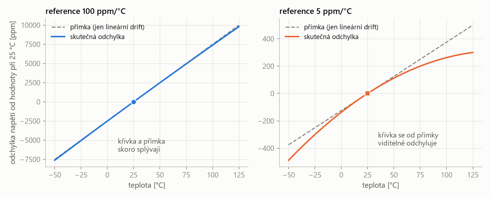
Slide: reference se 100 ppm/°C se může jevit jako lineární v celém rozsahu teplot, protože velký drift zamaskuje výchozí nelinearity. U přesnější reference (5 ppm/°C) je drift tak malý, že nelineární povahu už zamaskovat nemusí – křivka se zřetelně ohýbá.
Reference 2,5 V, přístroj se ohřeje z 25 °C na 65 °C, tedy \(\Delta T = 40\ °\text{C}\).
1. Reference 5 ppm/°C:
\[ 5\ \text{ppm/°C} \cdot 40\ °\text{C} = 200\ \text{ppm} \] \[ \Delta U = 2{,}5\ \text{V} \cdot 200 \cdot 10^{-6} = 0{,}5\ \text{mV} \]2. Reference 100 ppm/°C:
\[ 100\ \text{ppm/°C} \cdot 40\ °\text{C} = 4000\ \text{ppm} \] \[ \Delta U = 2{,}5\ \text{V} \cdot 4000 \cdot 10^{-6} = 10\ \text{mV} \]12bitový převodník s referencí 2,5 V má krok 2,5 V / 4096 = 0,61 mV. Horší reference tedy po ohřátí posune měření asi o 16 kroků převodníku.
Dlouhodobá stabilita reference popisuje sklon referenčního napětí ke změnám v čase nezávisle na dalších proměnných či podmínkách. Odpovídá „stárnutí“ obvodu reference a zahrnuje změny elektrických vlastností obvodu, např. ustálení některých hodnot. Často se udává v jednotkách drift/\(\sqrt{\text{kHr}}\).
jak pravítko „stárne“. Nejvíc se napětí mění na začátku provozu, pak se součástky ustálí a změny se zpomalují – proto se drift počítá s odmocninou času, ne s časem.
| \(k\) | dlouhodobá stabilita z katalogu, např. 200 ppm/\(\sqrt{\text{kHr}}\) |
| \(t\) | doba provozu v tisících hodin (kHr); jeden rok = 8,766 kHr |
| drift | celková změna napětí reference za dobu \(t\) [ppm] |
Reference má dlouhodobou stabilitu 200 ppm/\(\sqrt{\text{kHr}}\). Jeden rok trvá:
\[ 365{,}25 \cdot 24\ \text{h} = 8766\ \text{h} = 8{,}766\ \text{kHr} \]1. Drift za rok:
\[ 200 \cdot \sqrt{8{,}766} = 200 \cdot 2{,}961 = 592\ \text{ppm} \]2. Drift za 10 let (\(t\) = 87,66 kHr):
\[ 200 \cdot \sqrt{87{,}66} = 200 \cdot 9{,}363 \approx 1873\ \text{ppm} \]Na slidu je zaokrouhleno na 1875 ppm. Není to 10× tolik (5921 ppm), ale jen \(\sqrt{10} \approx 3{,}16\)×.
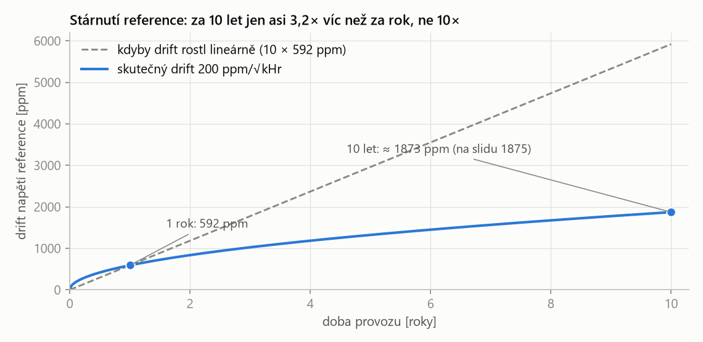
Křivka je nejstrmější na začátku a pak se zplošťuje. Kdyby drift rostl lineárně (čárkovaně), bylo by za 10 let 5921 ppm; skutečně je to asi 1873 ppm.
Teplotní hystereze reference je změna výstupního napětí při dané teplotě, která následuje po teplotním cyklu s větší tepelnou náročností. Je to přirozená vlastnost, která odráží různé teplotní namáhání obvodu v jednotlivých cyklech.
po ohřátí a zchladnutí zpět na stejnou teplotu už reference nemá úplně stejné napětí jako předtím – „pamatuje si“, čím prošla. Nezávisí na teplotním koeficientu ani na časovém driftu, ale dokáže snížit účinnost výchozí napěťové kalibrace.
Slide uvádí jako příklady katalogových referencí Texas Instruments REF35 a Linear Technology LT1634.
„Napěťová reference je přesný zdroj napětí, se kterým se porovnává měřený signál, typicky v AD převodníku. Nejdůležitější je přesnost a stabilita. Počáteční přesnost je výrobní odchylka při 25 °C – je konstantní, takže jde odstranit kalibrací. Teplotní drift v ppm/°C říká, jak se napětí mění s teplotou, a je nelineární. Dlouhodobá stabilita je stárnutí, udává se v ppm/\(\sqrt{\text{kHr}}\), takže za 10 let není drift desetkrát větší než za rok, ale jen asi třikrát. Teplotní hystereze je změna napětí po teplotním cyklu.“
Typické hodnoty referencí
Napětí referencí bývají výrobcem definována v konkrétních hodnotách, např. 1,024 V, 1,25 V, 2,048 V, 2,5 V, 3 V, 3,3 V, 4,5 V, 4,096 V, 5 V, 7,2 V. Zvýrazněné hodnoty jsou mocniny dvou v milivoltech – a to má svůj důvod.
10bitový AD převodník má k dispozici
\[ 2^{10} = 1024\ \text{kvantizačních úrovní} \]1. S referencí \(U_\text{REF}\) = 1,024 V připadá na jednu úroveň:
\[ \frac{1{,}024\ \text{V}}{1024} = 1\ \text{mV} \]2. S referencí \(U_\text{REF}\) = 1,000 V:
\[ \frac{1{,}000\ \text{V}}{1024} = 0{,}9765625\ \text{mV} \]To je nevýhodné – každý údaj převodníku by se musel přepočítávat. S 1,024 V je číslo z převodníku rovnou počet milivoltů. Stejně tak 2,048 V pro 11bitový a 4,096 V pro 12bitový převodník dá 1 mV na úroveň (vlastní doplnění).
Slide „Některé důležité parametry v hodnotách“ ukazuje, čeho dnešní reference dosahují:
| Parametr | Nejlepší hodnoty |
|---|---|
| přesnost dané hodnoty napětí | až 0,025 % |
| vlastní šum | až po 0,25 ppmP-P |
| teplotní drift | až k 1 ppm/°C |
| vlastní proudová spotřeba | až < 20 µA |
| pracovní rozsah teplot | −50 °C až +125 °C |
| výstupní proud | poměrně malý, jednotky mA |
| vstupní napětí | poměrně velké, až 40 V |
Graf na slidu (reference 2,5 V, LT1009) ukazuje výstupní napětí v rozsahu teplot −50 až 125 °C: typická křivka je oblouk s maximem kolem 25 °C a výrobce garantuje, že napětí zůstane mezi zaručeným minimem a maximem.
Reference je přesná, ale dá jen jednotky mA. Na napájení obvodů se nepoužívá; když je potřeba referenční napětí zatížit, zařadí se za ni napěťový sledovač nebo stabilizátor s OZ (viz dále).
Zdroj napětí, nesymetrické a symetrické napájení
Zdroj napětí je elektrický zdroj, který na svém výstupu udržuje stálé elektrické napětí bez ohledu na odebíraný elektrický proud. Reálný zdroj napětí má limit odebíraného proudu.
ideální zdroj napětí je dokonale tvrdý: ať odebírám jakýkoli proud, napětí se nepohne. Skutečný zdroj dá jen omezený proud.
Nesymetrické napájecí napětí je takové, kdy zdroj udržuje vůči referenčnímu potenciálu v obvodu (tj. zemi, GND, 0 V) jednu hodnotu napětí, např. +5 V měřeno proti GND.
jedna větev: „plus“ a zem. Tak je napájena většina číslicových obvodů.
Symetrické napájecí napětí je takové, kdy je zdrojem dodáváno vůči GND napětí ve dvou větvích stejné velikosti a opačné polarity, např. ±5 V.
dvě větve, kladná a záporná, a zem uprostřed. Potřebuje ho např. OZ, který zpracovává střídavé napětí – výstup se musí umět pohnout nad i pod nulu. Důležité je zachovat symetrii i při chybových stavech v napájení.
Stabilizace napětí
Stabilizátor napětí je obvod, který z kolísajícího vstupního napětí vytváří stálé výstupní elektrické napětí. Stabilizátory mohou být pevné (konkrétní hodnota napětí) nebo regulovatelné.
„uhlazovač“ napájení: na vstupu napětí kolísá (síť, baterie, zátěž), na výstupu je pořád stejné. Uvnitř je vždy nějaká reference, se kterou se výstup porovnává.
Zenerova dioda
Slide se ptá: „Nejjednodušší stabilizátor, který již znáte? Zenerova dioda – jaké jsou její nevýhody?“
Zenerova dioda (ZD) je dioda určená k práci v závěrném směru, ve kterém při dosažení Zenerova napětí \(U_Z\) začne vést a napětí na ní se pak při změnách proudu mění jen málo. V propustném směru se chová jako běžná dioda (asi 0,7 V).
ZD zapojená přes rezistor do závěrného směru „drží“ své napětí: přebytečné napětí zůstane na rezistoru a na diodě je pořád zhruba \(U_Z\). Je to nejjednodušší reference i stabilizátor.
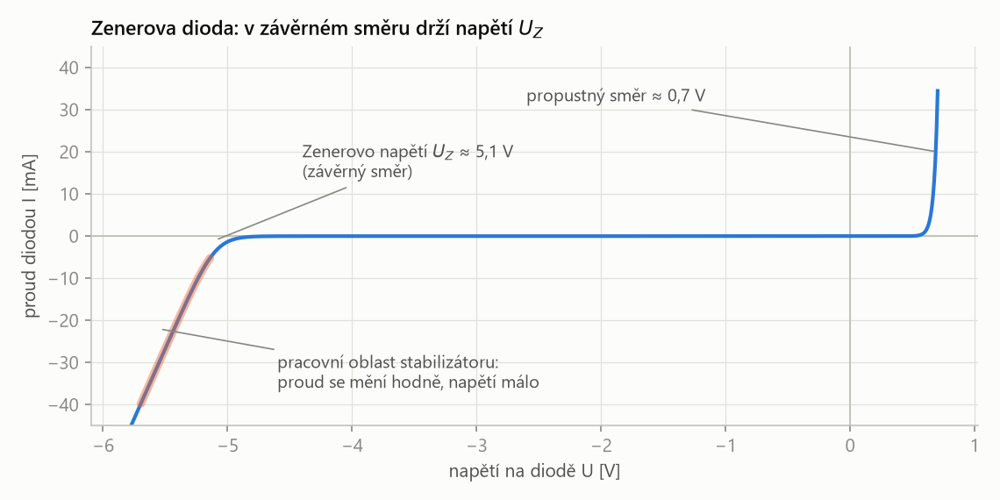
V závěrném směru je charakteristika za \(U_Z\) skoro svislá: velká změna proudu dá jen malou změnu napětí. Na tom stojí stabilizace. „Skoro“ je ale důležité – čára není úplně svislá.
- Napětí se s proudem přece jen mění (charakteristika není svislá) – když kolísá napájení nebo zátěž, kolísá trochu i \(U_Z\).
- \(U_Z\) závisí na teplotě.
- ZD šumí – proto je v zapojení na dalším slidu filtr \(R_3 C_1\).
- Sama dá jen malý proud a vyrábí se jen v pevných hodnotách napětí, výstup nejde jemně nastavit.
Proto se ZD používá jako reference a o výkon a nastavení se stará OZ.
Stabilizátor s referenční Zenerovou diodou a OZ
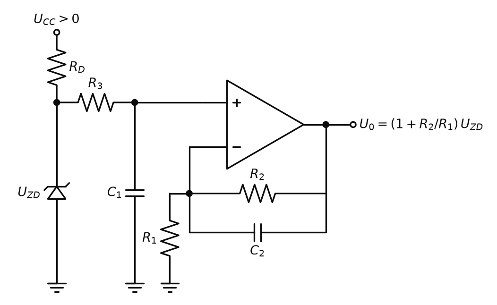
OZ je zapojen jako neinvertující zesilovač (P1: zpětnou vazbu tvoří dělič \(R_2\), \(R_1\) a OZ nastaví výstup tak, aby napětí z děliče bylo rovno vstupu), jehož vstupem je napětí Zenerovy diody. Výstup je tedy zesílená reference:
| \(U_0\) | stabilizované výstupní napětí |
| \(U_{ZD}\) | napětí Zenerovy diody (reference) |
| \(R_1\), \(R_2\) | dělič zpětné vazby; \(R_2\) z výstupu na invertující vstup, \(R_1\) z invertujícího vstupu na zem |
| \(R_D\) | rezistor, přes který teče proud \(I_D\) do Zenerovy diody z napájení \(U_{CC}\) |
- Filtr \(R_3 C_1\) (RC dolní propust: kondenzátor svede rychlé šumové změny k zemi, pomalé napětí projde; viz P5) potlačuje nežádoucí šumová napětí ZD.
- Kondenzátor \(C_2\) řeší frekvenční stabilitu (aby se zesilovač nerozkmital).
- Variantně pro \(U_0 < 0\) V: napájení \(U_{CC} < 0\) a Zenerova dioda otočená.
Zenerova dioda 5,1 V, \(R_1 = R_2 = 10\ \text{k}\Omega\):
\[ U_0 = \left(1 + \frac{10\ \text{k}\Omega}{10\ \text{k}\Omega}\right) \cdot 5{,}1\ \text{V} = 10{,}2\ \text{V} \]Výstupní napětí jde nastavit poměrem rezistorů, i když ZD existuje jen v pevných hodnotách. Musí ale platit \(U_0 \ge U_{ZD}\) – neinvertující zesilovač zeslabit neumí.
Alternativní zapojení Zenerovy diody
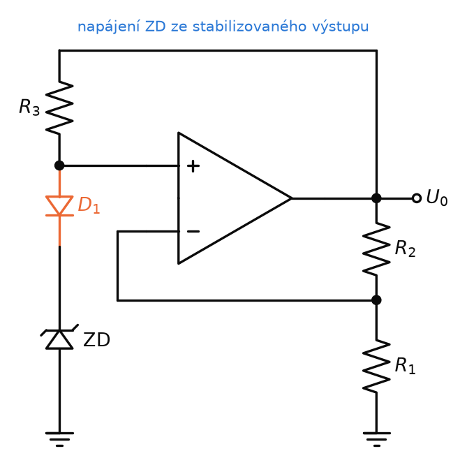
- Výstupní napětí je stejné jako výše: \(U_0 = (1 + R_2/R_1) \cdot U_{ZD}\).
- Zenerova dioda je ale zapojena v již stabilizované cestě – proud do ní teče přes \(R_3\) z výstupu \(U_0\), ne z napájení.
- Díky tomu je zaručena stabilita při kolísání napájení \(U_{CC}\).
V prvním zapojení teče do ZD proud z \(U_{CC}\) přes \(R_D\). Když napájení kolísá, kolísá proud diodou, a protože charakteristika ZD není úplně svislá, kolísá trochu i reference. V alternativním zapojení teče proud z výstupu, který je už stabilní – proud diodou je stálý, a tím i \(U_{ZD}\). Stabilizátor si „čistí“ vlastní referenci.
Co by se mohlo stát, pokud by došlo k příchodu rušení v podobě záporné napěťové špičky?
Mohlo by dojít ke vzniku záporného napájecího napětí na výstupu. Když se výstup na okamžik dostane do záporu, Zenerova dioda napájená z výstupu se ocitne v propustném směru a místo \(U_{ZD}\) drží asi −0,7 V. To je teď „reference“ – a OZ ji poslušně zesílí, takže výstup v záporu zůstane. Obvod se sám nevrátí.
Řešením je dioda \(D_1\) v sérii se ZD (obr. P3.5): slouží jako ochrana a blokuje záporné napětí v propustném směru ZD.
Nad rámec slidu: s \(D_1\) v sérii je na neinvertujícím vstupu přesně vzato \(U_{ZD}\) plus úbytek na \(D_1\); slide vzorec pro \(U_0\) neupravuje.
Stabilizátor s proudovým zesílením
Výstup OZ je zatížitelný jen malým odběrem (jednotky až desítky mA). Proudové posílení lze provést již známým emitorovým sledovačem za výstupem OZ.
Emitorový sledovač je v P2 zapojení se společným kolektorem (SC): vstup do báze, výstup z emitoru, napěťové zesílení 1, zesiluje proud. Na schématu je přesně tohle (výstup \(U_0\) z emitoru), takže u zkoušky říkej emitorový sledovač / SC, ne společný emitor (SE).
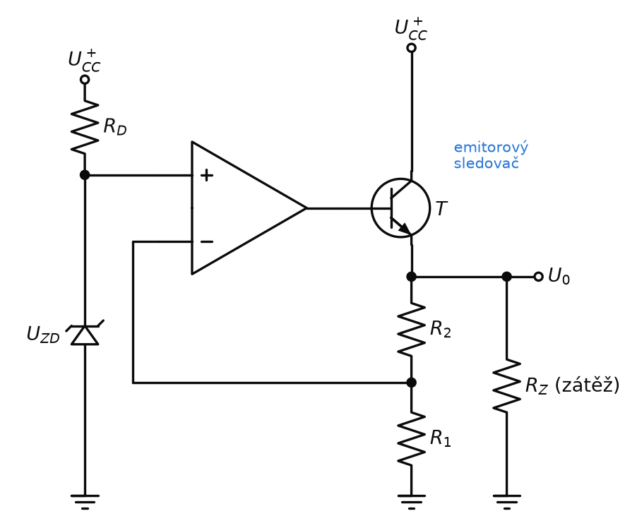
Velký proud do zátěže teče z \(U_{CC}^+\) přes tranzistor, OZ dodává jen malý proud do báze. Zpětná vazba se bere až z emitoru, takže OZ sám vyrovná úbytek asi 0,7 V na přechodu báze–emitor a výstup je opět \(U_0 = (1 + R_2/R_1)\,U_{ZD}\).
Pro záporné výstupní napětí se použije komplementární zapojení s PNP emitorovým sledovačem (pravé schéma na slidu, \(U_0 < 0\)).
Stabilizace napětí s proudovým omezením
Často, především u samostatných laboratorních zdrojů, je zdroj zatížen neúměrným proudem – chybou v obvodu nebo jeho destrukcí, kdy zátěž přejde do zkratu. Kdyby byl zdroj ideálně tvrdý, vzrostl by výstupní proud až „do nekonečna“. Proto se do obvodu zařazuje prvek, který maximální proud omezí (s různou strmostí) a ochrání napájecí zdroj.
Proudové omezení (omezovač proudu) je část zdroje, která při překročení nastaveného maximálního výstupního proudu \(I_{omax}\) přestane udržovat výstupní napětí a dál proud nezvyšuje.
do \(I_{omax}\) se zdroj chová jako zdroj napětí, nad ním jako zdroj proudu. Při zkratu nic neshoří – teče jen nastavený maximální proud.
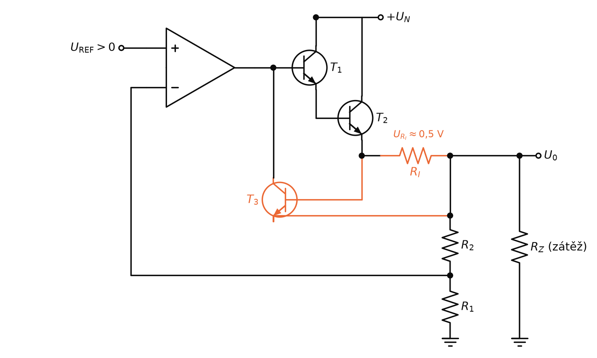
Bez omezení (černá část) jde o neinvertující zesilovač \(U_\text{REF}\) se zesílením proudu Darlingtonovým tranzistorem (viz Darlington v P2, běžně \(\beta > 800\)). \(T_1\) a \(T_2\) tvoří výkonový zesilovač.
1. Díky virtuálnímu zkratu je na \(R_1\) stejné napětí jako na neinvertujícím vstupu:
\[ U_{R1} = U_\text{REF} \]2. Proud děličem:
\[ I_d = \frac{U_\text{REF}}{R_1} \]3. Stejný proud teče i přes \(R_2\), výstupní napětí je na obou rezistorech:
\[ U_0 = I_d \,(R_1 + R_2) = U_\text{REF}\left(1 + \frac{R_2}{R_1}\right) \]Celý výstupní proud \(I_o\) teče přes malý snímací rezistor \(R_I\). Kouzlo spočívá v „měření“ úbytku napětí \(U_I = R_I I_o\) na \(R_I\). Tento úbytek je přímo napětí mezi bází a emitorem tranzistoru \(T_3\).
- Za normálního provozu je úbytek malý a \(T_3\) je zavřený – nic nedělá.
- Když proud vzroste tak, že úbytek dosáhne prahové hodnoty \(U_{R_I} \approx 0{,}5\) V, otevře se báze \(T_3\).
- Otevřený \(T_3\) začne odvádět proud z výstupu OZ – „odbudí“ bázi \(T_1\). Darlington se přivře a výstupní proud dál neroste.
| \(I_{OMAX}\) | maximální výstupní proud, při kterém začne omezení |
| \(U_{R_I}\) | prahové napětí báze–emitor \(T_3\), na slidu \(\approx\) 0,5 V |
| \(R_I\) | snímací rezistor v cestě výstupního proudu |
Zdroj má omezit proud na 1 A. Potřebný snímací rezistor:
\[ R_I = \frac{U_{R_I}}{I_{OMAX}} = \frac{0{,}5\ \text{V}}{1\ \text{A}} = 0{,}5\ \Omega \]Při běžném proudu 0,2 A je na něm jen 0,1 V – \(T_3\) je zavřený a zdroj normálně stabilizuje.
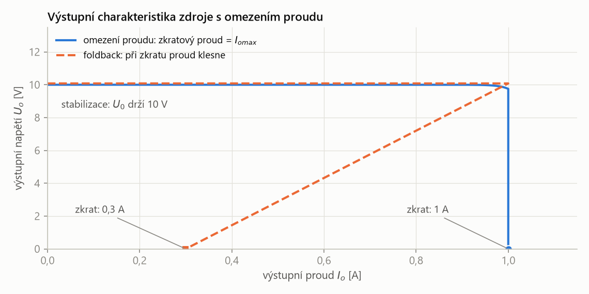
Do \(I_{omax}\) drží zdroj napětí \(U_\text{REF}(1 + R_2/R_1)\). U \(I_{omax}\) se charakteristika láme téměř svisle dolů: na slidu se \(T_3\) při \(U_{BE3} \approx 0{,}5\) V začne otevírat, při 0,6 V už napětí klesá a při 0,7 V je výstup skoro na nule – proud se přitom změní jen nepatrně. Čárkovaná čára je varianta s poklesem proudu (foldback).
Slide „Zajímavé variantní řešení?“ ukazuje zapojení, kde se báze \(T_3\) nebere přímo z konce \(R_I\), ale z děliče \(R_1\)–\(R_2\) připojeného za emitor \(T_2\), a emitor \(T_3\) je na výstupu. Když výstupní napětí klesá ke zkratu, \(T_3\) se otevře už při menším proudu. Proud při zkratu \(I_{OLmin}\) je proto menší než maximální proud \(I_{OLmax}\) při plném napětí (na slidu 10 V a 1 A).
Proč to má smysl (vlastní čísla, \(U_N\) = 15 V): při zkratu je celé napájecí napětí na výkonovém tranzistoru. S obyčejným omezením se v něm mění na teplo
\[ P = 15\ \text{V} \cdot 1\ \text{A} = 15\ \text{W} \]S foldbackem a zkratovým proudem 0,3 A jen
\[ P = 15\ \text{V} \cdot 0{,}3\ \text{A} = 4{,}5\ \text{W} \]Ve foldback zapojení jsou \(R_1\), \(R_2\) dělič pro bázi \(T_3\) a zpětnovazební dělič se jmenuje \(R_3\), \(R_4\). V základním zapojení s omezením jsou \(R_1\), \(R_2\) zpětnovazební dělič. U zkoušky vždy řekni, který rezistor co dělá.
„Stabilizátor s omezením je neinvertující zesilovač referenčního napětí, za OZ je Darlington jako výkonový zesilovač, výstup je \(U_\text{REF}(1 + R_2/R_1)\). Výstupní proud teče přes malý rezistor \(R_I\) a úbytek na něm je napětí báze–emitor tranzistoru \(T_3\). Když proud překročí asi \(0{,}5\ \text{V}/R_I\), \(T_3\) se otevře, odvede proud z báze Darlingtonu a proud dál neroste. Při zkratu tak teče jen \(I_{OMAX}\).“
Symetrické napájení – vlečný zdroj
Při použití symetrického napájení je nutné zachovat stejné hodnoty napětí v kladné i záporné větvi. K tomu slouží nastavení „virtuální nuly“ mezi OZ+ a OZ−.
Vlečný zdroj je zdroj symetrického napětí, ve kterém se napětí jedné větve nastavuje a napětí druhé větve je od něj odvozeno tak, aby mělo vždy stejnou velikost a opačnou polaritu.
záporná větev se „vleče“ za kladnou: nastavím kladné napětí a záporné ho automaticky kopíruje se znaménkem minus. Symetrie se zachová, i když kladnou větev přenastavím.
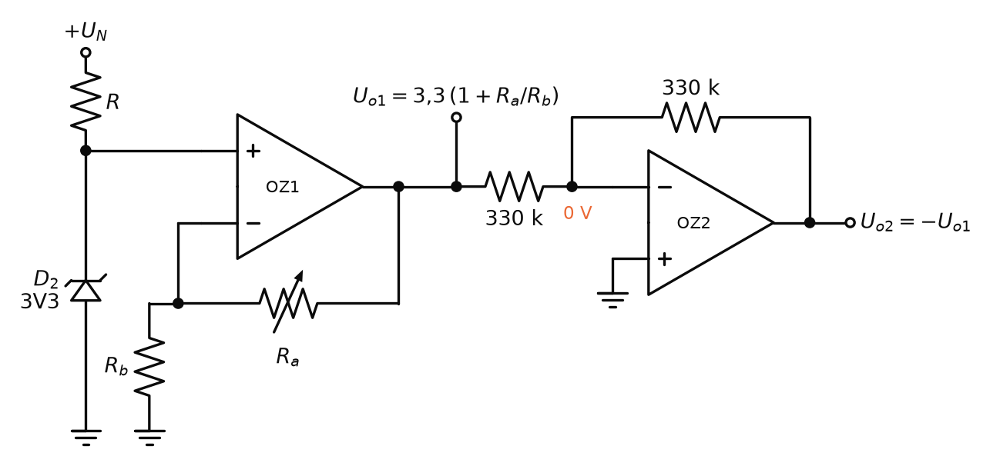
Zapojení na slidu (rozbor schématu):
- Kladná větev: OZ1 (TL071) je neinvertující zesilovač reference ze Zenerovy diody \(D_2\) 3V3. Zisk se nastavuje potenciometrem 25 kΩ (\(R_a\)) s rezistorem 2,2 kΩ (\(R_b\)).
- Záporná větev: OZ2 je invertující zesilovač se dvěma stejnými rezistory 330 kΩ, tedy se zesílením −1. Jeho invertující vstup drží virtuální nulu (0 V) a výstup je přesně opačný než \(U_{o1}\).
- Napájení \(U_N^+ = 25\ \text{V}\), \(U_N^- = -25\ \text{V}\). Zenerova dioda je na slidu napájena přes \(R_2\) (6k8) z uzlu, kam vede dioda \(D_1\) z výstupu a \(R_1\) (330k) z kladného napájení – tedy opět ze stabilizované cesty jako v alternativním zapojení ZD.
| \(U_{o1}\), \(U_{o2}\) | kladné a záporné výstupní napětí [V] |
| 3,3 | napětí Zenerovy diody \(D_2\) [V] |
| \(R_a\), \(R_b\) | zpětnovazební dělič OZ1, poměr se nastavuje potenciometrem |
Potenciometr nastavíme na \(R_a / R_b = 2\):
\[ U_{o1} = 3{,}3 \cdot (1 + 2) = 9{,}9\ \text{V} \] \[ U_{o2} = -U_{o1} = -9{,}9\ \text{V} \]Zdroj dává ±9,9 V. Když potenciometrem změním kladnou větev, záporná se změní stejně.
Slide dodává, že vlečný zdroj bude jako laboratorní úloha.
Zdroje konstantního proudu
Zdroj konstantního proudu je zdroj, který do zátěže dodává stálý proud nezávisle na napětí na zátěži. Ideální proudový zdroj má nekonečně velký výstupní odpor (výstup nezávislý na napětí).
opak zdroje napětí: tady se drží proud a napětí se přizpůsobí zátěži. Používá se při měření odporů, napájení LED, generování pilového průběhu apod.
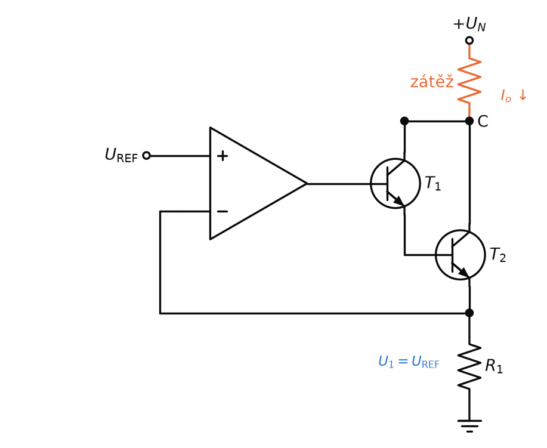
1. OZ se zpětnou vazbou z emitoru udrží na \(R_1\) stejné napětí jako na vstupu:
\[ U_1 = U_\text{REF} \]2. Přes \(R_1\) teče proud kolektorem \(I_o\) a malý proud báze \(I_B\):
\[ I_o + I_B = \frac{U_\text{REF}}{R_1} \]3. U Darlingtonu je proud báze zanedbatelný, takže
\[ I_o \approx \frac{U_\text{REF}}{R_1} \]Proud kolektorem tedy nezávisí na tom, jaká zátěž je v kolektoru – dokud má tranzistor na sobě dost napětí.
\(U_\text{REF}\) = 1,25 V, \(R_1\) = 120 Ω:
\[ I_o \approx \frac{1{,}25\ \text{V}}{120\ \Omega} = 10{,}4\ \text{mA} \]LED svítí stejně, i když se její napětí s teplotou mění.
Teče-li známý stálý proud \(I\) neznámým odporem, je napětí na něm podle Ohmova zákona přímo úměrné odporu: \(U = R I\). Teče-li stálý proud do kondenzátoru, napětí na něm roste rovnoměrně s časem – vznikne lineární náběh, tedy pilový průběh. Viz také měření odporu s OZ v P1.
Reference je přesné „pravítko“ (malý proud, vysoká stabilita); stabilizátor je zesílená reference (OZ jako neinvertující zesilovač), proud dodá tranzistor, ochranu proti zkratu tranzistor snímající úbytek na malém rezistoru; zdroj proudu drží napětí \(U_\text{REF}\) na rezistoru, a tím i proud.
Shrnutí
Napěťová reference je přesný zdroj napětí, se kterým se porovnává měřený signál; nejdůležitější je přesnost a stabilita. Chybu reference popisuje počáteční přesnost (výrobní odchylka při 25 °C, odstranitelná kalibrací), teplotní drift v ppm/°C (nelineární), dlouhodobá stabilita v ppm/\(\sqrt{\text{kHr}}\) (stárnutí, roste s odmocninou času) a teplotní hystereze. Hodnoty jako 1,024 V dávají s 10bitovým převodníkem krok přesně 1 mV. Reference dá jen jednotky mA. Zdroj napětí drží napětí bez ohledu na proud, napájení může být nesymetrické (+5 V) nebo symetrické (±5 V). Stabilizátor se Zenerovou diodou a OZ je neinvertující zesilovač reference – výstup je napětí ZD zesílené poměrem rezistorů; ZD napájená z výstupu je stabilnější, ale potřebuje ochrannou diodu proti záporné špičce. Proud posílí emitorový sledovač nebo Darlington, proudové omezení tranzistorem \(T_3\) snímá úbytek na \(R_I\) a omezí proud na hodnotu danou prahem asi 0,5 V a velikostí \(R_I\); foldback při zkratu proud ještě sníží. Vlečný zdroj drží symetrii invertorem se ziskem −1. Zdroj konstantního proudu s OZ drží na emitorovém rezistoru napětí reference, a tím i stálý proud.
Take-home messages
- Reference = přesné a stabilní „pravítko“ měření; chyba reference se přenese do každého vzorku.
- Počáteční přesnost je konstantní → kalibrace; teplotní drift (ppm/°C) a hystereze kalibraci znehodnocují.
- Dlouhodobá stabilita roste s \(\sqrt{t}\): 200 ppm/\(\sqrt{\text{kHr}}\) → 592 ppm za rok, ≈ 1875 ppm za 10 let (ne 10×).
- 1,024 V / 1024 úrovní = 1 mV na úroveň; s 1,000 V by to bylo 0,977 mV.
- Stabilizátor = neinvertující zesilovač reference: \(U_0 = (1 + R_2/R_1)\,U_{ZD}\); \(R_3C_1\) filtruje šum ZD, \(C_2\) stabilita.
- ZD napájená z výstupu nezávisí na kolísání \(U_{CC}\); záporná špička by ji otevřela v propustném směru → ochranná dioda \(D_1\).
- Omezení proudu: \(I_{OMAX} = U_{R_I}/R_I\) (\(U_{R_I} \approx 0{,}5\) V); \(T_3\) „odbudí“ bázi Darlingtonu.
- Vlečný zdroj: \(U_{o2} = -U_{o1}\) díky invertoru 330k/330k; zdroj proudu: \(I_o \approx U_\text{REF}/R_1\), ideálně nekonečný výstupní odpor.
Otázky ke zkoušce
Co je napěťová reference a jakými parametry se popisuje její kvalita?
Napěťová reference je vysoce precizní zdroj napětí, který dlouhodobě, v čase i při různé teplotě udržuje neměnný potenciál. Slouží k porovnání s měřeným napětím (např. v AD převodníku). Nejdůležitější je přesnost a stabilita; chyba reference je odchylka od definované hodnoty.
- Počáteční přesnost – odchylka od jmenovité hodnoty při 25 °C, např. \((5 \pm 0{,}005)\) V = 4,995 až 5,005 V. Je konstantní, dá se odstranit kalibrací.
- Teplotní drift – změna napětí s teplotou v ppm/°C; je nelineární, u velkého driftu (100 ppm/°C) se nelinearita schová, u malého (5 ppm/°C) ne.
- Dlouhodobá stabilita – stárnutí, v ppm/\(\sqrt{\text{kHr}}\).
- Teplotní hystereze – změna napětí po teplotním cyklu, snižuje účinnost kalibrace.
Dobré reference: přesnost až 0,025 %, šum 0,25 ppmP-P, drift 1 ppm/°C, spotřeba pod 20 µA, výstupní proud ale jen jednotky mA.
Reference má dlouhodobou stabilitu 200 ppm/√kHr. Jaký bude drift za rok a za 10 let? Proč to není desetinásobek?
Rok má 8,766 kHr, drift roste s odmocninou času:
\[ 200 \cdot \sqrt{8{,}766} = 592\ \text{ppm} \]Za 10 let (87,66 kHr):
\[ 200 \cdot \sqrt{87{,}66} \approx 1873\ \text{ppm} \](na slidu 1875 ppm). Desetinásobek času dá jen \(\sqrt{10} \approx 3{,}16\)× větší drift, protože stárnutí je nejrychlejší na začátku – součástky se postupně ustálí.
Proč se vyrábějí reference s hodnotami 1,024 V, 2,048 V nebo 4,096 V?
Jsou to mocniny dvou v milivoltech, stejně jako počet úrovní AD převodníku. 10bitový převodník má \(2^{10} = 1024\) úrovní:
\[ \frac{1{,}024\ \text{V}}{1024} = 1\ \text{mV} \]Číslo z převodníku je pak přímo počet milivoltů. S referencí 1,000 V by jedna úroveň byla 0,9765625 mV, což je nevýhodné.
Nakreslete stabilizátor napětí se Zenerovou diodou a OZ. Jaké je výstupní napětí a k čemu slouží jednotlivé součástky?
Z napájení \(U_{CC}\) přes \(R_D\) teče proud do Zenerovy diody; její napětí jde přes \(R_3\) na neinvertující vstup OZ, \(C_1\) je z tohoto vstupu na zem. Invertující vstup je na děliči: \(R_1\) na zem, \(R_2\) z výstupu, paralelně k \(R_2\) je \(C_2\). Je to neinvertující zesilovač reference:
\[ U_0 = \left(1 + \frac{R_2}{R_1}\right) U_{ZD} \]\(R_3 C_1\) je filtr, který potlačuje šum ZD, \(C_2\) zajišťuje frekvenční stabilitu. Pro \(U_0 < 0\) se otočí napájení i dioda. Samotná ZD má nevýhody: napětí se s proudem a teplotou trochu mění, šumí a dá malý proud – proto je jen referencí a výkon dodává OZ.
V čem je lepší alternativní zapojení Zenerovy diody a co by se stalo při záporné napěťové špičce?
V alternativním zapojení je ZD napájena přes \(R_3\) z již stabilizovaného výstupu, ne z \(U_{CC}\). Proud diodou proto nekolísá s napájením a reference je stabilnější. Výstupní napětí je stejné, \(U_0 = (1 + R_2/R_1)U_{ZD}\).
Při záporné špičce by se výstup dostal do záporu, ZD napájená z výstupu by byla v propustném směru (asi 0,7 V) a na výstupu by mohlo vzniknout trvalé záporné napětí. Proto je v sérii se ZD dioda \(D_1\), která blokuje záporné napětí v propustném směru ZD.
Jak se posílí výstupní proud stabilizátoru a jak funguje proudové omezení?
Výstup OZ dá jen malý proud, proto se za něj zařadí emitorový sledovač (pro záporné napětí PNP) nebo Darlington \(T_1 T_2\) (\(\beta > 800\)). Zpětná vazba se bere z výstupu za tranzistorem, takže platí \(U_{R1} = U_\text{REF}\), \(I_d = U_\text{REF}/R_1\) a
\[ U_0 = I_d(R_1 + R_2) = U_\text{REF}\left(1 + \frac{R_2}{R_1}\right) \]Omezení: výstupní proud teče přes snímací rezistor \(R_I\), jehož úbytek je napětí báze–emitor tranzistoru \(T_3\). Při úbytku asi 0,5 V se \(T_3\) otevře a „odbudí“ bázi \(T_1\), proud dál neroste:
\[ I_{OMAX} = \frac{U_{R_I}}{R_I} \]Výstupní charakteristika je do \(I_{omax}\) vodorovná, pak klesá téměř svisle. Varianta foldback při zkratu proud ještě sníží, aby se výkonový tranzistor nepřehřál.
Co je symetrické napájení a jak funguje vlečný zdroj?
Symetrické napájení dodává vůči GND napětí ve dvou větvích, např. ±5 V (nesymetrické jen jednu, např. +5 V). Potřebují ho např. OZ zpracovávající střídavý signál a symetrie se musí zachovat i při chybových stavech.
Vlečný zdroj: kladnou větev tvoří neinvertující zesilovač reference 3,3 V, \(U_{o1} = 3{,}3(1 + R_a/R_b)\). Zápornou větev tvoří invertor se dvěma rezistory 330 kΩ (zesílení −1); jeho invertující vstup drží virtuální nulu, takže \(U_{o2} = -U_{o1}\). Záporná větev se „vleče“ za kladnou.
Popište zdroj konstantního proudu s OZ. Kde se používá?
Ideální zdroj proudu dodává stálý proud bez ohledu na napětí – má nekonečný výstupní odpor. Zapojení: \(U_\text{REF}\) na neinvertujícím vstupu OZ, výstup budí Darlington, v emitoru je \(R_1\) na zem a z něj zpětná vazba na invertující vstup, zátěž je v kolektoru. Na \(R_1\) je napětí \(U_\text{REF}\), takže
\[ I_o \approx \frac{U_\text{REF}}{R_1} \](přesně \(I_o + I_B\), proud báze je zanedbatelný). Používá se při měření odporů, napájení LED a generování pilového průběhu.
Přednáška 4
Aplikace OZ: integrátor, derivátor, usměrňovač, vrcholový detektor
Operační zesilovač neumí jen zesilovat. Když do zpětné vazby nebo na vstup dáme kondenzátor, OZ signál integruje nebo derivuje. Když do zpětné vazby dáme diodu, vznikne přesný usměrňovač, který usměrní i signál menší než 0,7 V, a s kondenzátorem za diodou vrcholový detektor, který si „pamatuje“ nejvyšší napětí. Přednáška ukazuje, jak tato zapojení pracují a jaké mají praktické problémy (saturace, nestabilita, úbytek na diodě).
V akviziční cestě patří přednáška do bloku úprava signálu, před analogově-digitální převod. Slide „Úprava signálu“ jmenuje čtyři témata: integrační zesilovač, derivační zesilovač, usměrňovač a vrcholový detektor. Základní integrátor a derivátor jsou připomenuté hned níže; přednáška na ně navazuje.
Připomenutí ze základů: integrátor a derivátor
Obě zapojení vzniknou z invertujícího zesilovače (P1), když jeden rezistor nahradíme kondenzátorem. Invertující vstup je na virtuální nule, takže proud vstupní součástkou závisí jen na vstupu, a protože do OZ neteče, projde celý zpětnou vazbou. Proud kondenzátorem je \(i = C\,du/dt\) (P1).
Integrátor je zapojení OZ odvozené z invertujícího zesilovače, ve kterém je rezistor ve zpětné vazbě nahrazen kondenzátorem \(C\) (na vstupu zůstává rezistor \(R\)). Výstupní napětí je úměrné časovému integrálu vstupního napětí: \(u_\text{výst}(t) = -\frac{1}{RC}\int u_\text{vst}\,dt\).
výstup „sčítá“ vstup v čase. Stálé vstupní napětí dá na výstupu lineárně rostoucí (klesající) rampu; obdélník se změní na trojúhelník.
Derivátor je zapojení OZ odvozené z invertujícího zesilovače, ve kterém je vstupní rezistor nahrazen kondenzátorem \(C\) (ve zpětné vazbě zůstává rezistor \(R\)). Výstupní napětí je úměrné časové derivaci vstupního napětí: \(u_\text{výst}(t) = -RC\,\frac{du_\text{vst}}{dt}\).
výstup ukazuje, jak rychle se vstup mění. Stálé napětí dá nulu, rampa dá stálé napětí, trojúhelník se změní na obdélník.
Integrátor (R na vstupu, C ve zpětné vazbě) – proud \(u_\text{vst}/R\) nabíjí kondenzátor:
\[ u_\text{výst}(t) = -\frac{1}{RC} \int_0^t u_\text{vst}\,dt + u_\text{výst}(0) \]Derivátor (C na vstupu, R ve zpětné vazbě) – proud \(C\,du_\text{vst}/dt\) teče přes R:
\[ u_\text{výst}(t) = -RC \, \frac{du_\text{vst}}{dt} \]Pro sinusový signál zisk integrátoru klesá o 20 dB/dek (jako dolní propust) a zisk derivátoru o 20 dB/dek roste (jako horní propust):
\[ \begin{aligned} |A_\text{int}| &= \frac{1}{\omega RC} \\ |A_\text{der}| &= \omega RC \end{aligned} \]| \(RC\) | integrační / derivační časová konstanta [s] |
| \(u_\text{výst}(0)\) | počáteční napětí (náboj kondenzátoru na začátku integrace) |
| znaménko − | obě zapojení jsou invertující |

- Integrátor: kladný vstup → výstup lineárně klesá (inverze), záporný → roste; sklon je \(u_\text{vst}/(RC)\).
- Derivátor: výstup je úměrný sklonu vstupu; stálé napětí dá nulu.
- Praktické problémy, které přednáška řeší: integrátor „ujede“ kvůli offsetu do saturace, derivátor zesiluje šum.
Integrační zesilovač – Millerův integrátor
Millerův integrátor je název přednášky pro integrátor z připomenutí výše: invertující zesilovač, který má na vstupu rezistor \(R\) a ve zpětné vazbě kondenzátor \(C\). Podle slidu provádí integraci invertovaného vstupního napětí v čase. Na neinvertujícím vstupu je rezistor \(R\) na zem (stejně velký jako vstupní, aby vstupní proudy OZ vytvořily na obou vstupech stejný úbytek).

Kondenzátor ve zpětné vazbě integrátoru integruje napětí v čase a slouží jako analogová paměť: náboj, který na něm vstupní proud nahromadil, na něm zůstane, a výstupní napětí \(u_o = -u_C\) se proto nemění, dokud je vstupní napětí nulové.
kondenzátor je „kbelík na náboj“. Vstup do něj přilévá nebo z něj ubírá; když vstup přestane, hladina (napětí) zůstane stát. Výstup integrátoru tak ukazuje součet všeho, co na vstup přišlo od začátku integrace.
- Invertující vstup je díky virtuálnímu zkratu na 0 V, rezistorem teče proud \(i(t) = u_i(t)/R\).
- Do vstupu OZ proud neteče, celý proud nabíjí kondenzátor. Napětí na kondenzátoru je náboj lomeno kapacitou: \[ u_C = \frac{q}{C} = \frac{1}{C} \int i(t)\,dt = \frac{1}{C} \int \frac{u_i(t)}{R}\,dt \]
- Levá strana kondenzátoru je na 0 V, pravá na výstupu, takže výstupní napětí je \[ u_o = -u_C \]
| \(u_o(t)\) | výstupní napětí v čase \(t\) od spuštění integrátoru |
| \(u_i(t)\) | vstupní napětí |
| \(RC\) | integrační časová konstanta [s] |
| \(u_o(0)\) | výstupní napětí v čase spuštění integrátoru \(t = 0\) (daná nábojem kondenzátoru na začátku) |
Počáteční stav integrátoru lze zapsat dvěma rovnocennými způsoby. Pomocí napětí kondenzátoru \(u_C(0)\) je znaménko minus, protože \(u_o = -u_C\):
\[ u_o(t) = -\frac{1}{RC} \int_0^t u_i(t)\,dt - u_C(0) \]Pomocí výstupního napětí \(u_o(0)\) je znaménko plus (vzorec výše). Fyzikálně jde o totéž: integrátor pokračuje z napětí, které na kondenzátoru už bylo.
Časové průběhy Millerova integrátoru

- Kladný vstup → výstup klesá (přímka se sklonem \(-U_i/RC\)), záporný vstup → výstup roste. Integrátor je invertující.
- Výstup nemůže překročit napájení: po dosažení asi ±12 V zůstane v saturaci a integrace končí.
- Bez zásahu by integrátor v saturaci zůstal i po skončení vstupního signálu – proto potřebuje nulovací obvod (níže).
\(R\) = 100 kΩ, \(C\) = 100 nF, na vstupu skok na \(U_i\) = 0,5 V, napájení ±12 V. Časová konstanta:
\[ RC = 10^5 \cdot 10^{-7} = 0{,}01\ \text{s} = 10\ \text{ms} \]1. Rychlost změny výstupu:
\[ \frac{du_o}{dt} = -\frac{U_i}{RC} = -\frac{0{,}5}{0{,}01} = -50\ \text{V/s} \]2. Za 20 ms je na výstupu:
\[ u_o = -50 \cdot 0{,}02 = -1\ \text{V} \]3. Saturace −12 V nastane za:
\[ t = \frac{12\ \text{V}}{50\ \text{V/s}} = 0{,}24\ \text{s} = 240\ \text{ms} \]4. Pokud byl kondenzátor na začátku nabitý tak, že \(u_o(0) = +2\) V, potřebuje výstup urazit 14 V:
\[ t = \frac{14\ \text{V}}{50\ \text{V/s}} = 0{,}28\ \text{s} \]Millerův integrátor s nulovacím obvodem
V průběhu integrace je průběžně integrováno vstupní napětí. Pro zahájení „nové“ integrace je třeba obvod vybít – k tomu slouží nulovací obvod.
Nulovací obvod je spínač (na slidu tranzistor \(T_1\) řízený napětím \(U_G\)) zapojený paralelně ke kondenzátoru ve zpětné vazbě integrátoru. Před začátkem integrace je sepnut, kondenzátor zkratuje, a tím jej vybije; po vypnutí tranzistoru je zahájena integrace.
tlačítko „vynulovat“. Integrátor si pamatuje všechno, co se na vstup dostalo; nulovací obvod paměť smaže, aby se další měření začalo počítat od nuly.


- Během pulzu −1 V výstup roste rychlostí 100 V/s, za 20 ms o 2 V. Po skončení pulzu je vstup nulový a výstup drží 2 V – to je analogová paměť.
- Sepnutím \(T_1\) se kondenzátor zkratuje a výstup spadne na 0 V. Po vypnutí \(T_1\) začne nová integrace od nuly.
Neinvertující integrační zesilovač
Neinvertující integrační zesilovač je zapojení OZ, které integruje vstupní napětí bez změny znaménka:
\[ u_o = \frac{1}{RC} \int u_i(t)\,dt \]
Signál se přivádí přes rezistor \(R\) na neinvertující vstup, ze kterého je kondenzátor \(C\) na zem; invertující vstup má rezistor \(R\) na zem a kondenzátor \(C\) ve zpětné vazbě.
stejný integrátor jako Millerův, jen bez minus: kladný vstup dá rostoucí výstup.

Ve frekvenční oblasti (\(s = j\omega\)) jde o dva bloky za sebou.
1. Článek \(RC\) na neinvertujícím vstupu je dolní propust:
\[ u_+ = \frac{u_i}{1 + sRC} \]2. OZ s \(R\) na zem a \(C\) ve zpětné vazbě je neinvertující zesilovač se zesílením \(1 + Z_2/Z_1\):
\[ \frac{u_o}{u_+} = 1 + \frac{1}{sRC} = \frac{1 + sRC}{sRC} \]3. Vynásobením se člen \((1 + sRC)\) zkrátí:
\[ \frac{u_o}{u_i} = \frac{1}{sRC} \]A \(1/s\) je ve frekvenční oblasti integrál – proto \(u_o = \frac{1}{RC}\int u_i\,dt\). Podmínkou je, že oba rezistory i oba kondenzátory jsou stejné.
Diferenční integrační zesilovač
Diferenční integrační zesilovač integruje obě vstupní napětí rozdílově (diferenčně). Výsledné napětí je
\[ u_o = \frac{1}{RC} \int (u_2 - u_1)\,dt \]
je to neinvertující integrátor, u kterého rezistor invertujícího vstupu nevede na zem, ale na druhý vstup \(u_1\). Integruje se jen rozdíl vstupů, stejná napětí na obou vstupech se odečtou.

\(RC\) = 10 ms, \(u_1\) = 1 V, \(u_2\) = 1,5 V (stálá). Rozdíl je 0,5 V, výstup roste rychlostí:
\[ \frac{du_o}{dt} = \frac{u_2 - u_1}{RC} = \frac{0{,}5}{0{,}01} = 50\ \text{V/s} \]Za 20 ms:
\[ u_o = 50 \cdot 0{,}02 = 1\ \text{V} \]Kdyby byly oba vstupy 1 V, výstup by se neměnil.
Frekvenční závislost integrátoru
Zapojení je však frekvenčně velmi závislé: s dvojnásobkem frekvence klesá zisk na polovinu – o 6 dB na oktávu. Zisk se počítá stejně jako u invertujícího zesilovače, jen místo odporů dosadíme impedance (vedlejší poznámka na slidu: \(R_\text{in} \approx \bar Z_1 = R\), \(R_\text{ZV} \approx \bar Z_2 = 1/(j\omega C)\)).
| \(\bar A\) | komplexní zisk (přenos) zesilovače |
| \(\bar Z_1\), \(\bar Z_2\) | impedance na vstupu (\(R\)) a ve zpětné vazbě (\(1/(j\omega C)\)) |
| \(\omega\) | úhlová frekvence, \(\omega = 2\pi f\) [rad/s] |
| \(j\) | imaginární jednotka; \(j\) v čitateli = výstup předbíhá vstup o 90° |
Oktáva je frekvenční interval, ve kterém se frekvence zdvojnásobí (\(f \to 2f\)). Sklon 6 dB na oktávu znamená, že se zisk při každém zdvojnásobení frekvence změní dvakrát:
\[ 20 \log_{10} 2 \approx 6{,}02\ \text{dB} \]
jiný zápis téhož sklonu jako 20 dB na dekádu (desetinásobek frekvence). Integrátor má −6 dB/okt (zisk klesá), derivátor +6 dB/okt (zisk roste).
| \(f\) [Hz] | \(\omega = 2\pi f\) [rad/s] | \(|A| = 1/(\omega RC)\) | zisk [dB] |
|---|---|---|---|
| 159,2 | 1000 | 1 | 0 |
| 318,3 | 2000 | 0,5 | −6,02 |
| 636,6 | 4000 | 0,25 | −12,04 |
Každé zdvojnásobení frekvence zisk půlí – o 6 dB.
Derivační zesilovač
Derivační zesilovač je derivátor z připomenutí na začátku kapitoly. Podle slidu provádí derivaci invertovaného vstupního signálu podle času. Na vstupu je připojen kondenzátor, který lépe propouští vyšší kmitočty a nepropouští stejnosměrnou složku – derivace konstanty je nula (\(c' = 0\)).

V čase (proud kondenzátorem \(i_C = C\,du_i/dt\) teče celý přes \(R\)):
\[ u_o = -R \cdot i_C = -RC\,\frac{du_i}{dt} \]Ve frekvenční oblasti:
\[ \bar A_d = -\frac{\bar Z_2}{\bar Z_1} = -j\omega RC \]| \(i_C\) | proud kondenzátorem na vstupu |
| \(du_i/dt\) | rychlost změny vstupního napětí [V/s] |
| \(\bar Z_1 = 1/(j\omega C)\) | impedance kondenzátoru na vstupu |
| \(\bar Z_2 = R\) | rezistor ve zpětné vazbě |
| \(|\bar A_d| = \omega RC\) | zisk roste s frekvencí: +6 dB/okt |
Ošetření nestability derivačního zesilovače
Stejně jako u integrujícího zesilovače, resp. naopak, dochází ke zvýšení zisku o 6 dB na oktávu (při každém zdvojnásobení frekvence). Vysoké frekvence mohou způsobit nestabilitu OZ (resp. fázový posun proudu na vstupu).
Zisk derivátoru roste s frekvencí neomezeně, ale zisk samotného OZ s frekvencí klesá (GBW, P2). Někde nahoře se obě křivky setkají a fázové posuvy kondenzátoru na vstupu a vnitřku OZ se sečtou až na 180°. Záporná zpětná vazba se pak změní na kladnou a zapojení se rozkmitá. K tomu derivátor nejvíc zesiluje vysokofrekvenční šum.
Toto lze ošetřit zapojením \(R_1\) pro omezení zisku (zeslabení vstupu) a \(C_1\) do zpětné vazby pro kmitočtově závislé omezení zisku. Vazba \(R \cdot C_1\) frekvenčně omezí horní pásmo derivačního zesilovače – zesilovač se stává derivačně-integračním.
Derivačně-integrační zesilovač je derivační zesilovač ošetřený proti nestabilitě: do série se vstupním kondenzátorem \(C\) je zařazen rezistor \(R_1\) a paralelně k rezistoru \(R\) ve zpětné vazbě kondenzátor \(C_1\). Pod zlomovou frekvencí \(\omega_K\) derivuje, kolem ní zesiluje (propust) a nad ní integruje.
derivátor, kterému jsme „přistřihli“ zisk na vysokých frekvencích. Pomalé změny derivuje jako dřív, ale šum a rychlé zákmity už nezesiluje, takže se nerozkmitá.

| \(\omega_K\) | zlomová úhlová frekvence – střed propustného pásma [rad/s] |
| \(R_1 C\) | časová konstanta vstupu (sériové \(R_1\) a \(C\)) |
| \(R C_1\) | časová konstanta zpětné vazby (paralelní \(R\) a \(C_1\)); součástky se volí tak, aby obě byly stejné |
Asymptoty zisku (vlastní odvození z \(|\bar Z_2 / \bar Z_1|\)):
- pod \(\omega_K\): \(|A| \approx \omega C R\) – derivace, +6 dB/okt,
- kolem \(\omega_K\): \(|A| \approx R / R_1\) – propust, zisk omezený rezistorem \(R_1\),
- nad \(\omega_K\): \(|A| \approx 1/(\omega C_1 R_1)\) – integrace, −6 dB/okt.

- Vlevo zisk roste (+6 dB/okt) – obvod derivuje. Vpravo klesá (−6 dB/okt) – obvod integruje, takže vysoké frekvence (šum) už nezesiluje.
- Uprostřed je propust: asymptoty se protnou v \(R/R_1\) = 100 (40 dB). Skutečná křivka je ve vrcholu o 6 dB níž (50×, 34 dB), protože se v \(\omega_K\) sejdou dva zlomy po 3 dB.
- Derivátor tedy derivuje jen signály pod \(\omega_K\) – frekvence \(\omega_K\) se volí nad nejvyšší užitečnou frekvencí signálu.
\(R\) = 100 kΩ, \(C\) = 1 µF, zisk v propustném pásmu omezíme na 100 rezistorem \(R_1\) = 1 kΩ.
1. Zlomová frekvence ze vstupu:
\[ \omega_K = \frac{1}{R_1 C} = \frac{1}{10^3 \cdot 10^{-6}} = 1000\ \text{rad/s} \] \[ f_K = \frac{\omega_K}{2\pi} \approx 159{,}2\ \text{Hz} \]2. Kondenzátor do zpětné vazby, aby \(R C_1 = R_1 C\):
\[ C_1 = \frac{R_1 C}{R} = \frac{10^3 \cdot 10^{-6}}{10^5} = 10\ \text{nF} \]3. Kontrola (přesný výpočet z impedancí): při \(\omega\) = 100 rad/s je zisk 9,90 (asymptota \(\omega CR\) = 10), při \(\omega_K\) je 50 (34,0 dB), při 10 000 rad/s opět 9,90.
Klesající asymptota je \(1/(\omega C_1 R_1)\). Kontrola: v \(\omega_K = 1/(R_1 C)\) dává
\[ \frac{1}{\omega_K C_1 R_1} = \frac{C}{C_1} = \frac{R}{R_1} \]tedy stejný zisk jako propust, takže obě asymptoty na sebe navazují (v příkladu 100).
Reakce derivátoru na trojúhelník
Ukázka na slidu: na vstupu je trojúhelníkový průběh napětí a zapojení reaguje na změny. Dochází tak k „modulaci“ průběhu se změnami (např. trojúhelníků) na pravoúhlé signály, které je snadné čítat nebo detekovat hrany (RE – rising edge, náběžná hrana; FE – falling edge, sestupná hrana).

- Výstup je obdélník: dokud trojúhelník roste, je výstup záporný (derivátor je invertující), když klesá, kladný. Hrany obdélníku jsou přesně ve vrcholech trojúhelníku.
- Výška obdélníku udává rychlost změny, ne velikost signálu: rychlý trojúhelník (1000 V/s) dá ∓1 V, pomalý (500 V/s) jen ∓0,5 V.
Trojúhelník ±1 V s periodou 4 ms urazí 2 V za půl periody (2 ms):
\[ \frac{du_i}{dt} = \frac{2\ \text{V}}{2\ \text{ms}} = 1000\ \text{V/s} \] \[ u_o = -RC\,\frac{du_i}{dt} = -10^{-3} \cdot 1000 = -1\ \text{V} \]Při periodě 8 ms je sklon poloviční (500 V/s) a výstup ∓0,5 V.
Této reakce na změny lze využít v aplikaci např. při měření rychlosti vibrací (derivace polohy podle času je rychlost), tedy v aplikaci měření rychlých změn v pomalých signálech.
Usměrňovač
Použití klasického diodového usměrňovače na malých signálech by vedlo k deformaci signálu. Kromě malé (vstupní) impedance, která zatěžuje zdroj signálu, se projevuje i napěťový práh PN přechodu.
Aby bylo jasné, odkud práh pochází a co s ním OZ udělá, nejdřív krátká vsuvka o samotné diodě.
Vsuvka: dioda a její VA charakteristika
Dioda je polovodičová součástka se dvěma vývody, anodou (A) a katodou (K), tvořená PN přechodem. Proud vede jen jedním směrem: v propustném směru (anoda kladnější než katoda alespoň o prahové napětí) proud teče, v závěrném směru (katoda kladnější než anoda) prakticky neteče.
elektrický „jednosměrný ventil“. Šipka ve schematické značce ukazuje směr, kterým proud projde. Toho využívá usměrňovač: půlvlnu jedné polarity propustí, druhou zablokuje.
- Polovodič typu P má přebytek kladných nosičů náboje (děr), typ N přebytek volných elektronů.
- Na jejich styku se díry a elektrony navzájem „vyruší“ a vznikne tenká vrstva bez volných nosičů – hradlová (ochuzená) vrstva. Ta působí jako potenciálová bariéra, u křemíku asi 0,6 – 0,7 V.
- Propustný směr (+ na P, − na N): vnější napětí bariéru snižuje. Jakmile ji překoná, nosiče přes přechod volně přecházejí a proud prudce roste.
- Závěrný směr (+ na N, − na P): napětí bariéru ještě zvětší a teče jen nepatrný závěrný proud. Při velkém závěrném napětí nastane průraz – toho záměrně využívá Zenerova dioda (P3).
VA (voltampérová) charakteristika je graf závislosti proudu procházejícího součástkou (nebo obvodem) na napětí, které je na ni přivedeno, \(I = f(U)\).
„portrét“ součástky. Rezistor má přímku (Ohmův zákon), dioda zalomenou křivku: vlevo skoro nulový proud, vpravo za prahem prudký nárůst.
| \(I\) | proud diodou (kladný v propustném směru) |
| \(U\) | napětí mezi anodou a katodou |
| \(I_S\) | saturační (závěrný) proud, velmi malý – u malé křemíkové diody řádově \(10^{-14}\) A |
| \(n\) | činitel ideality, 1 až 2 |
| \(U_T\) | tepelné napětí, při pokojové teplotě asi 26 mV |
Proud roste s napětím exponenciálně: při \(n = 1\) se zvýší desetkrát na každých asi 60 mV. Proto se zdá, že dioda má ostrý práh – pod 0,5 V teče jen několik µA, kolem 0,65 V už miliampéry.

- Charakteristika je silně nelineární: v závěrném směru i v propustném směru pod prahem je proud prakticky nulový, nad prahem roste strmě vzhůru.
- Na vedoucí diodě je proto skoro stálé napětí (asi 0,65 – 0,7 V), ať jí teče 1 mA, nebo 30 mA. V příkladech se počítá s prahovým modelem (tečkovaně): do 0,7 V dioda nevede, nad ním na ní zůstane 0,7 V.
- Schottkyho dioda má stejný tvar křivky, jen posunutý k nižšímu napětí (asi 0,25 V).
Napěťový práh PN přechodu je napětí v propustném směru (u křemíkové diody asi 0,35 – 0,7 V), pod kterým dioda prakticky nevede proud. Teprve nad ním proud diodou prudce roste.
dioda je „dveře se pružinou“: dokud signál netlačí aspoň 0,7 V, neprojde nic. Signál 0,5 V obyčejná dioda vůbec neusměrní a signálu 1 V „ukousne“ 0,7 V.
Schottkyho dioda je dioda s přechodem kov–polovodič, která má malý úbytek napětí v propustném směru (asi 0,1 – 0,3 V).
dioda s „lehčí pružinou“. Ani ona ale práh neodstraní úplně – to dokáže až zapojení s OZ.
Jak se VA charakteristika změní, když diodu zapojíme do zpětné vazby OZ, a jak vypadá u dvoucestného usměrňovače, ukazuje obr. P4.17 na konci oddílu o usměrňovačích.
Usměrňovač s OZ
Usměrňovač s OZ (precizní, aktivní usměrňovač) je zapojení, ve kterém je dioda zapojena do obvodu operačního zesilovače, takže se usměrní i napěťově malé signály. Vysoká vstupní impedance OZ nezatíží vstupní signál a k jeho usměrnění dochází na výstupu, ve zpětné vazbě, nebo v kaskádě mezi více OZ.
OZ „přidá“ diodě přesně tolik napětí, kolik potřebuje na otevření. Zpětná vazba hlídá výstup, ne výstup OZ, takže úbytek na diodě se ve výsledku neprojeví. Výhodné je navíc použít diody s malým úbytkem, např. Schottkyho.

- Samotná dioda propustí jen to, co je nad prahem: z půlvlny 1 V zbude špička 0,3 V a změní se i tvar. Signál pod 0,7 V by zmizel úplně.
- Usměrňovač s OZ propustí celou kladnou půlvlnu (jednocestný), nebo udělá absolutní hodnotu \(|u_i|\) (dvoucestný).
Jednocestný usměrňovač
Jednocestný usměrňovač propustí na výstup jen jednu polaritu vstupního signálu (jednu půlvlnu); druhou polaritu zablokuje a výstup je při ní nulový. V zapojení ze slidu je dioda \(D\) mezi výstupem OZ a zátěží \(R_L\) a zpětná vazba se bere až za diodou.
„ventil“, který pustí jen kladné půlvlny. Protože OZ hlídá napětí za diodou, propustí i milivoltové signály celé.

- \(u_i > 0\): výstup OZ \(u_1\) jde nahoru, dioda se otevře a obvod je sledovač: \(u_o \approx u_i\). OZ si sám nastaví \(u_1 = u_o + U_D\), tedy o úbytek diody výš.
- \(u_i < 0\): výstup OZ jde dolů, dioda D je v závěrném směru. \(u_o\) by pak mohl tvořit jen výstupní proud OZ přes diodu, ten je však (ideálně) nulový – přes \(R_L\) neteče proud a \(u_o = 0\).
Reálnou hodnotu zesílení ovlivňuje úbytek \(U_D\). Z \(u_1 = A\,(u_i - u_o)\) a \(u_1 = u_o + U_D\) plyne vztah ze slidu:
\[ u_i = \frac{U_D}{A} + \frac{u_o}{A} + u_o \]Pro výstup (vlastní úprava):
\[ u_o = \frac{A\,u_i - U_D}{A + 1} \approx u_i - \frac{U_D}{A} \]| \(u_i\), \(u_o\) | vstupní a výstupní napětí |
| \(U_D\) | úbytek na diodě v propustném směru (0,35 – 0,7 V, Schottky 0,1 – 0,3 V) |
| \(A\) | zesílení OZ bez zpětné vazby (např. \(10^5\)); práh diody se jím dělí |
\(A = 10^5\), \(U_D\) = 0,7 V, na vstupu \(u_i\) = 10 mV.
1. Efektivní práh diody:
\[ \frac{U_D}{A} = \frac{0{,}7}{10^5} = 7\ \mu\text{V} \]2. Výstup:
\[ u_o = \frac{10^5 \cdot 0{,}01 - 0{,}7}{10^5 + 1} \approx 9{,}993\ \text{mV} \]3. Výstup OZ je o úbytek diody výš:
\[ u_1 = u_o + U_D \approx 0{,}710\ \text{V} \]Samotná dioda by signál 10 mV vůbec nepropustila, s OZ projde s chybou 7 µV.
Jednocestný usměrňovač – různá řešení
Slide ukazuje další dvě zapojení (jen schémata a průběhy). Obě vycházejí z invertujícího zesilovače s diodami ve zpětné vazbě; rozbor je vlastní.

- Vstup kladný: výstup OZ jde do záporu, otevře se \(D_1\) a uzavře zpětnou vazbu; \(D_2\) je zavřená. Výstupní svorka je přes \(R_2\) spojena s virtuální nulou → výstup 0 V.
- Vstup záporný: výstup OZ jde do kladu, \(D_1\) se zavře, otevře se \(D_2\). Obvod je invertující zesilovač: \[ u_\text{výst} = -\frac{R_2}{R_1}\,u_\text{vst} > 0 \]
- Výstupem jsou tedy kladné půlvlny (invertované záporné půlvlny vstupu). Výhoda proti obr. P4.13 (nad rámec slidu): OZ má zpětnou vazbu vždy uzavřenou přes jednu z diod, nikdy nejde do saturace, a proto je rychlejší.

- Vstup kladný: výstup OZ jde do záporu, vede \(D_1\): \(u_A = -\frac{R_1}{R}\,u_\text{vst}\) (záporné půlvlny), \(D_2\) zavřená, \(u_B = 0\).
- Vstup záporný: vede \(D_2\): \(u_B = -\frac{R_2}{R}\,u_\text{vst}\) (kladné půlvlny), \(u_A = 0\).
Precizní dvoucestný usměrňovač
Precizní dvoucestný usměrňovač je zapojení s OZ, jehož výstupní napětí je při obou polaritách vstupního napětí kladné a rovné absolutní hodnotě vstupu, \(u_o = |u_i|\). Zapojení ze slidu má tři OZ: OZ1 a OZ3 tvoří napěťové sledovače, OZ2 invertuje příchozí napětí.
„převracečka“ záporných půlvln: kladné projdou beze změny, záporné se otočí nahoru. Díky OZ to funguje i pro signály v milivoltech.

- OZ1 (sledovač) má velký vstupní odpor – nezatíží zdroj signálu s vnitřním odporem \(R_s\) a na svém výstupu dá \(u_i\).
- Je-li \(u_i\) záporné: výstup OZ2 jde do kladu, dioda D je v propustném směru a napětí projde na OZ3. OZ2 je invertor se dvěma \(R_1\) (zesílení −1): \[ u_+ = -u_i = |u_i| \]
- Je-li \(u_i\) kladné: výstup OZ2 jde do záporu, D je v závěrném směru a napětí projde přímo přes \(R_1\). Do OZ3 neteče proud, na obou \(R_1\) tedy není úbytek: \[ u_+ = u_i = |u_i| \]
- OZ3 (sledovač) přenese \(u_+\) na výstup, aniž by zátěž zatížila cestu přes rezistory \(R_1\).
| \(u_i\) | vstupní napětí (libovolné polarity) |
| \(u_o\) | výstupní napětí, vždy kladné |
1. \(u_i = -0{,}3\) V: D vede, OZ2 invertuje:
\[ u_+ = -\frac{R_1}{R_1} \cdot (-0{,}3) = 0{,}3\ \text{V} \]2. \(u_i = +0{,}3\) V: D nevede, proud rezistory neteče:
\[ u_+ = u_i = 0{,}3\ \text{V} \]V obou případech \(u_o\) = 0,3 V. Obyčejný diodový můstek by při 0,3 V nepropustil nic (dvě diody v sérii, asi 1,4 V).
Jak se změní VA charakteristika: kompenzace OZ a dvoucestné usměrnění
Usměrňovač můžeme brát jako celek a nakreslit jeho VA charakteristiku: na vodorovné ose vstupní napětí \(u_i\), na svislé proud zátěží \(I_L = u_o / R_L\). Srovnáme samotnou diodu s diodou ve zpětné vazbě OZ a diodový můstek s precizním dvoucestným usměrňovačem.

- Kompenzace OZ: zlom charakteristiky se posune z asi 0,7 V na \(U_D/A \approx 7\ \mu\text{V}\), tedy prakticky do nuly. Nad ním je charakteristika přímka \(I_L = u_i/R_L\) bez zaoblení – zapojení se chová jako ideální dioda (nulový práh, v závěrném směru nulový proud).
- Úbytek na diodě přitom nezmizel: OZ ho jen „doplatí“ tím, že má svůj výstup o \(U_D\) výš (\(u_1 = u_o + U_D\)). Na zátěži se proto neprojeví.
- Dvoucestné usměrnění: záporná polarita se už neblokuje, ale převrací. Charakteristika je souměrná podle svislé osy a má tvar písmene V, \(I_L = |u_i|/R_L\).
- Diodový můstek má také tvar V, ale proud jde vždy přes dvě diody v sérii, takže se prahy sečtou: vzniká mrtvé pásmo asi ±1,3 V, kde neteče nic. Precizní dvoucestný usměrňovač má zlom přímo v nule.
| zapojení | \(u_i = +1\) V | \(u_i = -1\) V |
|---|---|---|
| samotná dioda | 0,38 mA | 0 |
| dioda ve zpětné vazbě OZ | 1,00 mA | 0 |
| diodový můstek | 0,003 mA | 0,003 mA |
| precizní dvoucestný | 1,00 mA | 1,00 mA |
U samotné diody zbude na zátěži jen asi 0,38 V, zbytek „spolkne“ dioda. U zapojení s OZ (vztah jednocestného usměrňovače):
\[ u_o = \frac{10^5 \cdot 1 - 0{,}7}{10^5 + 1} \approx 0{,}99999\ \text{V} \]Můstek při 1 V prakticky nevede, protože je pod součtem dvou prahů.
Vrcholový detektor
Vrcholový detektor je zapojení s OZ, diodou a kondenzátorem, které slouží k detekci a zapamatování si předchozího vyššího napětí na vstupu. Kondenzátor se přes diodu dobíjí na vrcholovou hodnotu vstupního napětí a dioda mu nedovolí se zpět vybít.
„ručička maxima“ na teploměru: ukazuje nejvyšší hodnotu, kterou signál od posledního vynulování dosáhl. Používá se např. k měření amplitudy signálu.

- Je-li \(u_i > u_C\): dioda je otevřena, dobíjí se C na vrcholovou hodnotu napětí. Zpětná vazba OZ1 se bere až za diodou, takže \(u_C = u_i\) přesně (úbytek diody se neprojeví).
- Je-li \(u_i < u_C\): dioda D je v závěrném směru, kondenzátor C je vybíjen pouze vnitřním odporem a odporem OZ2 (\(R_{OZ2} \approx 10^{12}\ \Omega\)). Napětí na C se tedy prakticky nemění.
- OZ2 je sledovač: na výstup dá \(u_o = u_C\) a kondenzátor přitom nezatíží.
- Obnovení „nuly“: sepnutím spínače se \(u_C\) vybije přes \(R_V\) do GND a detektor začne hledat nový vrchol.
Obnovení nuly je vybíjecí obvod vrcholového detektoru, který po sepnutí spínače vybíjí napětí kondenzátoru \(u_C\) přes rezistor \(R_V\) do GND.
„vynulování ručičky maxima“ – stejná myšlenka jako nulovací obvod integrátoru. \(R_V\) omezí vybíjecí proud, aby spínač nezatížil kondenzátor zkratem.

- Když vstup roste nad dosavadní maximum, \(u_C\) ho sleduje. Když vstup klesá, \(u_C\) drží poslední vrchol (vodorovné úseky – na slidu označené šipkami).
- Rozdíl mezi vstupem a \(u_C\) v době držení je rozdílové napětí OZ1 \(|u_d|\) (na slidu).
- Menší vrchol po větším se nezaznamená – detektor zná jen maximum. Po obnovení nuly začne znovu od nuly.
Srovnání zapojení
| zapojení | klíčové součástky | výstup | použití, problém |
|---|---|---|---|
| Millerův integrátor | \(R\) na vstupu, \(C\) ve ZV | \(-\frac{1}{RC}\int u_i\,dt\) | saturace → nulovací obvod (T1) |
| neinvertující integrátor | \(RC\) na +, \(R\) na zem a \(C\) ve ZV na − | \(+\frac{1}{RC}\int u_i\,dt\) | integrace bez inverze |
| diferenční integrátor | jako neinvertující, \(R\) na − ze vstupu \(u_1\) | \(\frac{1}{RC}\int (u_2 - u_1)\,dt\) | −6 dB/okt |
| derivátor | \(C\) na vstupu, \(R\) ve ZV | \(-RC\,\frac{du_i}{dt}\) | +6 dB/okt → nestabilita, šum |
| derivačně-integrační | + \(R_1\) v sérii s \(C\), \(C_1 \parallel R\) | derivace pod \(\omega_K\) | ωK = 1/(R1C) = 1/(RC1) |
| jednocestný usměrňovač | D ve zpětné vazbě | jedna půlvlna | práh UD/A místo UD |
| dvoucestný usměrňovač | OZ1, OZ3 sledovače, OZ2 invertor s D | \(|u_i|\) | malé signály obou polarit |
| vrcholový detektor | OZ1 + D nabíjí C, OZ2 sledovač | maximum \(u_i\) | obnovení nuly přes RV |
„Millerův integrátor je invertující zesilovač s kondenzátorem ve zpětné vazbě. Proud \(u_i/R\) nabíjí kondenzátor, ten slouží jako analogová paměť a výstup je \(-\frac{1}{RC}\int u_i\,dt\) plus počáteční stav. Při stálém vstupu výstup lineárně roste nebo klesá až do saturace, proto je paralelně ke kondenzátoru tranzistor, který ho před novou integrací vybije. Existuje i neinvertující a diferenční integrátor, který integruje rozdíl \(u_2 - u_1\); zisk integrátoru klesá 6 dB na oktávu. Derivátor má kondenzátor na vstupu, výstup je \(-RC\,du_i/dt\) a zisk roste 6 dB na oktávu, takže je nestabilní a zesiluje šum. Ošetří se rezistorem \(R_1\) v sérii s kondenzátorem a kondenzátorem \(C_1\) paralelně k \(R\) – vznikne derivačně-integrační zesilovač, který nad \(\omega_K\) integruje. Diodový usměrňovač má práh 0,7 V, proto se malé signály usměrňují s OZ: dioda je ve zpětné vazbě a práh se zmenší \(A\)-krát. Precizní dvoucestný usměrňovač dává \(|u_i|\). Vrcholový detektor nabíjí přes diodu kondenzátor na maximum vstupu, dioda ho nenechá vybít, OZ2 jako sledovač ho nezatíží a obnovení nuly ho vybije přes \(R_V\).“
Kondenzátor ve zpětné vazbě = integrace (paměť, nulování), kondenzátor na vstupu = derivace (ošetřit \(R_1\), \(C_1\)); dioda ve zpětné vazbě OZ = usměrnění bez prahu, dioda + kondenzátor = paměť vrcholu.
Shrnutí
Millerův integrátor má rezistor \(R\) na vstupu a kondenzátor \(C\) ve zpětné vazbě; vstupní proud nabíjí kondenzátor, který slouží jako analogová paměť, a výstup je \(u_o = -\frac{1}{RC}\int u_i\,dt\) plus počáteční stav. Při stálém vstupu výstup lineárně klesá (kladný vstup) nebo roste (záporný vstup), až narazí na saturaci (±12 V při napájení ±12 V). Novou integraci umožní nulovací obvod: tranzistor \(T_1\) paralelně ke kondenzátoru ho před integrací zkratuje.
Neinvertující integrátor integruje bez minus, diferenční integrátor integruje rozdíl \(u_2 - u_1\). Integrátor je frekvenčně velmi závislý: \(|A| = 1/(\omega RC)\), s dvojnásobkem frekvence klesá zisk na polovinu (−6 dB na oktávu).
Derivační zesilovač má kondenzátor na vstupu, \(u_o = -RC\,du_i/dt\), stejnosměrnou složku nepropustí a zisk mu roste o 6 dB na oktávu. Vysoké frekvence ho mohou rozkmitat; ošetří se rezistorem \(R_1\) (omezení zisku na \(R/R_1\)) a kondenzátorem \(C_1\) ve zpětné vazbě – vznikne derivačně-integrační zesilovač se zlomem \(\omega_K = 1/(R_1C) = 1/(RC_1)\). Trojúhelník mění na obdélník, jehož výška udává rychlost změny (měření rychlosti vibrací, detekce hran).
Dioda je PN přechod, který vede proud jen v propustném směru. Její VA charakteristika je exponenciální: pod napěťovým prahem 0,35 – 0,7 V (Schottkyho 0,1 – 0,3 V) neteče skoro nic, nad ním proud strmě roste, takže obyčejná dioda malé signály zdeformuje. Usměrňovač s OZ má diodu ve zpětné vazbě, takže se práh zmenší na \(U_D/A\) – VA charakteristika celku je přímka ze samé nuly, jako u ideální diody. Jednocestný propustí jednu půlvlnu, precizní dvoucestný se třemi OZ dává \(u_o = |u_i|\) a jeho VA charakteristika má tvar V bez mrtvého pásma, které má diodový můstek (±1,3 V). Vrcholový detektor nabíjí přes diodu kondenzátor na vrcholovou hodnotu vstupu, dioda brání vybití, sledovač OZ2 (\(10^{12}\ \Omega\)) ho nezatíží a obnovení nuly ho vybije přes \(R_V\) do GND.
Take-home messages
- Millerův integrátor: \(u_o = -\frac{1}{RC}\int u_i\,dt + u_o(0)\); kondenzátor = analogová paměť.
- Bez nulování skončí integrátor v saturaci; tranzistor \(T_1\) paralelně k \(C\) ho před novou integrací vybije.
- Neinvertující integrátor \(+\frac{1}{RC}\int u_i\,dt\), diferenční \(\frac{1}{RC}\int(u_2 - u_1)\,dt\).
- Integrátor: \(|A| = 1/(\omega RC)\), −6 dB/okt; derivátor: \(|A| = \omega RC\), +6 dB/okt.
- Derivátor je nestabilní a šumí → \(R_1\) do série s \(C\), \(C_1\) paralelně k \(R\), \(\omega_K = 1/(R_1C) = 1/(RC_1)\).
- Derivátor mění trojúhelník na obdélník; výška obdélníku = rychlost změny (vibrace, hrany RE/FE).
- Dioda: VA charakteristika s prahem asi 0,7 V. Ve zpětné vazbě OZ práh \(U_D/A\) (µV) → chová se jako ideální dioda; precizní dvoucestný usměrňovač dává \(|u_i|\), VA charakteristika ve tvaru V.
- Vrcholový detektor: D + C drží maximum, OZ2 sledovač nezatíží C, obnovení nuly přes \(R_V\).
Otázky ke zkoušce
Nakreslete Millerův integrátor, odvoďte výstupní napětí a vysvětlete, proč se kondenzátoru říká analogová paměť.
Invertující zesilovač: \(R\) ze vstupu na invertující vstup, \(C\) ve zpětné vazbě, neinvertující vstup přes \(R\) na zem. Invertující vstup je na virtuální nule, rezistorem teče \(i = u_i/R\) a celý nabíjí kondenzátor:
\[ u_C = \frac{q}{C} = \frac{1}{C}\int \frac{u_i}{R}\,dt \]Výstup je \(u_o = -u_C\), tedy
\[ u_o = -\frac{1}{RC}\int u_i\,dt + u_o(0) \]Když vstup klesne na nulu, proud neteče, náboj na kondenzátoru zůstane a výstup drží poslední hodnotu – kondenzátor si „pamatuje“ integrál vstupu.
Co se stane s výstupem integrátoru při stálém kladném vstupu a k čemu je nulovací obvod?
Výstup lineárně klesá se sklonem \(-U_i/RC\) (např. 0,5 V a \(RC\) = 10 ms dá −50 V/s), až dosáhne záporného napájení – při ±12 V zůstane v saturaci kolem −12 V (za 240 ms). Záporný vstup dá rostoucí výstup až do +12 V.
Pro zahájení nové integrace je třeba kondenzátor vybít. Nulovací obvod je tranzistor \(T_1\) paralelně ke kondenzátoru: před začátkem integrace je sepnut a kondenzátor zkratuje, po jeho vypnutí začne integrace od nuly.
Nakreslete neinvertující a diferenční integrační zesilovač. Proč je integrátor „frekvenčně velmi závislý“?
Neinvertující: vstup přes \(R\) na neinvertující vstup, z něj \(C\) na zem; invertující vstup přes \(R\) na zem a \(C\) do výstupu. \(u_o = \frac{1}{RC}\int u_i\,dt\). Diferenční: stejné, jen rezistor invertujícího vstupu vede ze vstupu \(u_1\), signál \(u_2\) jde na neinvertující:
\[ u_o = \frac{1}{RC}\int (u_2 - u_1)\,dt \]Zisk integrátoru je \(\bar A = -\bar Z_2/\bar Z_1 = -1/(j\omega RC)\), tedy \(|A| = 1/(\omega RC)\). S dvojnásobkem frekvence klesne zisk na polovinu, o 6 dB na oktávu.
Nakreslete derivační zesilovač. Proč je nestabilní a jak se to ošetří?
Kondenzátor \(C\) na vstupu, \(R\) ve zpětné vazbě:
\[ u_o = -R\,i_C = -RC\,\frac{du_i}{dt} \] \[ \bar A_d = -j\omega RC \]Zisk roste o 6 dB na oktávu, takže se nejvíc zesílí vysoké frekvence a šum; s fázovým posunem OZ to vede ke kmitání. Ošetření: rezistor \(R_1\) do série se vstupním \(C\) omezí zisk na \(R/R_1\), kondenzátor \(C_1\) paralelně k \(R\) zisk nad zlomem snižuje. Vznikne derivačně-integrační zesilovač: pod \(\omega_K\) derivuje, nad ním integruje,
\[ \omega_K = \frac{1}{R_1C} = \frac{1}{RC_1} \]Co udělá derivátor s trojúhelníkovým signálem a k čemu se to dá využít?
Trojúhelník má po částech stálý sklon, derivace je proto po částech konstantní – výstup je obdélník (při růstu vstupu záporný, při poklesu kladný, protože zapojení invertuje). Výška obdélníku je úměrná rychlosti změny: s \(RC\) = 1 ms dá trojúhelník ±1 V s periodou 4 ms (1000 V/s) obdélník ∓1 V, pomalejší s periodou 8 ms jen ∓0,5 V. Využití: měření rychlosti vibrací, rychlých změn v pomalých signálech; pravoúhlé signály se snadno čítají a detekují se na nich hrany (RE, FE).
Co je dioda a jak vypadá její VA charakteristika? Proč se malé signály neusměrňují obyčejnou diodou a jak funguje jednocestný usměrňovač s OZ?
Dioda je polovodičová součástka s PN přechodem, která vede proud jen jedním směrem (anoda → katoda). Na přechodu je potenciálová bariéra: v propustném směru ji vnější napětí snižuje, v závěrném zvětšuje. VA charakteristika je proto exponenciální – v závěrném směru teče jen nepatrný proud, v propustném nad prahem proud strmě roste.
Napěťový práh je 0,35 – 0,7 V (Schottkyho 0,1 – 0,3 V): signál pod prahem neprojde a větší signál se zdeformuje. Klasický usměrňovač má navíc malou vstupní impedanci a zatěžuje zdroj.
V jednocestném usměrňovači s OZ je dioda mezi výstupem OZ a zátěží \(R_L\) a zpětná vazba se bere za diodou. Pro \(u_i > 0\) dioda vede a obvod je sledovač, OZ si sám přidá úbytek diody. Pro \(u_i < 0\) je dioda zavřená a výstup je nulový. Z rovnice ze slidu
\[ u_i = \frac{U_D}{A} + \frac{u_o}{A} + u_o \]plyne, že se práh zmenší \(A\)-krát: s \(A = 10^5\) je to 7 µV místo 0,7 V. VA charakteristika celého zapojení (proud zátěží proti \(u_i\)) je tedy přímka \(u_i/R_L\) zalomená prakticky v nule, jako u ideální diody. U precizního dvoucestného usměrňovače má tvar V, \(|u_i|/R_L\); diodový můstek má V s mrtvým pásmem kolem ±1,3 V.
Nakreslete precizní dvoucestný usměrňovač se třemi OZ a vysvětlete, co se děje při kladném a záporném vstupu.
OZ1 je sledovač (nezatíží zdroj s \(R_s\)), jeho výstup jde přes \(R_1\) na invertující vstup OZ2 a dalším \(R_1\) na uzel \(u_+\); výstup OZ2 jde přes diodu D na \(u_+\), neinvertující vstup OZ2 je na zemi. \(u_+\) jde na OZ3 zapojený jako sledovač.
- \(u_i < 0\): D vede, OZ2 je invertor se ziskem −1, \(u_+ = -u_i\).
- \(u_i > 0\): D je zavřená, napětí projde přímo přes \(R_1\); do OZ3 neteče proud, takže \(u_+ = u_i\).
Výsledek \(u_o = |u_i|\) – výstupní napětí je vždy kladné.
Popište vrcholový detektor. Proč je za kondenzátorem sledovač a k čemu je obnovení nuly?
Vstup \(u_i\) jde na OZ1, jeho výstup přes diodu D nabíjí kondenzátor C; zpětná vazba OZ1 se bere z kondenzátoru, takže úbytek diody se neprojeví. Je-li \(u_i > u_C\), dioda je otevřená a C se dobije na vrcholovou hodnotu. Je-li \(u_i < u_C\), dioda je v závěrném směru a C se vybíjí jen vnitřním odporem a vstupním odporem OZ2 (asi \(10^{12}\ \Omega\)) – napětí drží.
OZ2 je sledovač, aby výstup šlo zatížit, aniž by se kondenzátor vybíjel. Obnovení nuly je vybíjecí obvod: spínač vybije \(u_C\) přes \(R_V\) do GND a detektor může hledat nový vrchol.
Přednáška 5
Aplikace OZ II: aktivní filtry
Biosignál je vždy smíchaný s rušením jiných frekvencí: drift izolinie, síťový brum 50 Hz, šum svalů. Filtr propustí jen pásmo, které nás zajímá. Pasivní RC články (připomenuté níže) mají dvě slabiny: signál vždy zeslabí a strmost jejich charakteristiky je jen 20 dB na dekádu. Aktivní filtr přidá operační zesilovač – filtr pak může zesilovat, články se navzájem nezatěžují a ze dvou rezistorů a dvou kondenzátorů vznikne filtr 2. řádu se strmostí 40 dB na dekádu. Přednáška ukazuje, jak se filtr popisuje (přenosová funkce, řád, strmost, činitel jakosti), standardní zapojení Sallen-Key a MFB pro všechny čtyři typy filtrů a tři aproximace (Butterworth, Čebyšev, Bessel), mezi kterými se při návrhu vybírá.
V akviziční cestě patří filtry do bloku úprava signálu, před analogově-digitální převod. Slide „Úprava signálu“ jmenuje čtyři témata: pasivní filtry, aktivní filtry, antialiasingové filtry a filtry typu DP, HP, PP, PZ. Pojmy ze základů, na které přednáška navazuje – filtr, typy DP, HP, PP, PZ, mezní frekvence, řád a Bodeho graf –, připomíná rámeček níže.
U základních dolních a horních propustí 1. řádu je přenos odvozený krok za krokem. U zapojení 2. řádu (Sallen-Key, MFB, pásmová propust, zádrže) je popsaný princip – proč zapojení filtruje – a co se stane s výstupním signálem, když změním některou součástku.
Připomenutí ze základů: pasivní RC filtry
Přenos, decibel a mezní frekvence jsou připomenuté v P2: přenos \(H = U_\text{výst}/U_\text{vst}\), v decibelech \(20\log_{10}|H|\), na mezní frekvenci \(|H| = 0{,}707\), tj. −3 dB. RC článek je dělič napětí (P1), ve kterém je jeden rezistor nahrazen kondenzátorem.
Analogový filtr je obvod, který propouští složky spojitého signálu v určitém rozsahu frekvencí (propustné pásmo) a potlačuje složky v jiném rozsahu (nepropustné pásmo). Podle polohy propustného pásma rozlišujeme dolní propust, horní propust, pásmovou propust a pásmovou zádrž.
„síto na frekvence“ – co je v propustném pásmu, projde beze změny, co je v nepropustném, se ztlumí. Filtr je pasivní, pokud obsahuje jen R, C (L), a aktivní, pokud obsahuje i zesilovač.

- Dolní propust (DP) propouští frekvence pod mezní frekvencí – v EKG odstraní vysokofrekvenční šum.
- Horní propust (HP) propouští frekvence nad mezní frekvencí – odstraní stejnosměrnou složku a drift izolinie.
- Pásmová propust (PP) propouští jen pásmo mezi dvěma frekvencemi, pásmová zádrž (PZ) jedno pásmo potlačí (např. 50 Hz).
Kapacitní reaktance \(X_C\) je „odpor“ kondenzátoru vůči harmonickému (sinusovému) proudu, tedy poměr amplitud napětí a proudu na kondenzátoru: \(X_C = \frac{1}{2\pi f C} = \frac{1}{\omega C}\). Je nepřímo úměrná frekvenci; proud kondenzátorem předbíhá napětí o 90°.
pro nízké frekvence má kondenzátor obrovský odpor (stejnosměrně = rozpojený obvod), pro vysoké frekvence malý (blíží se zkratu). Právě tato závislost na frekvenci dělá z RC článku filtr.

Dolní propust (low-pass filter) je filtr, který propouští složky signálu s frekvencí nižší než mezní frekvence \(f_c\) a složky s vyšší frekvencí potlačuje. Pasivní dolní propust 1. řádu tvoří rezistor v podélné větvi a kondenzátor v příčné větvi (výstup na kondenzátoru).
pomalé změny projdou, rychlé „zahladí“. Výstup je vyhlazená verze vstupu.
Horní propust (high-pass filter) je filtr, který propouští složky signálu s frekvencí vyšší než mezní frekvence \(f_c\) a složky s nižší frekvencí (včetně stejnosměrné) potlačuje. Pasivní horní propust 1. řádu tvoří kondenzátor v podélné větvi a rezistor v příčné větvi (výstup na rezistoru).
rychlé změny projdou, pomalé a stálé hodnoty se odstraní. V EKG tak zmizí stejnosměrný offset elektrod a pomalé „plavání“ izolinie.
- Nízká frekvence: \(X_C \gg R\), kondenzátor je skoro rozpojený. V DP (výstup na C) je výstup ≈ vstup, v HP (C v podélné větvi) zůstane celé napětí na C a výstup ≈ 0.
- Vysoká frekvence: \(X_C \ll R\), kondenzátor je skoro zkrat. V DP svede signál do země (výstup ≈ 0), v HP signál propustí na R (výstup ≈ vstup).
Výstup se bere z té součástky, na které má zůstat napětí v propustném pásmu. Rezistor omezuje proud, kterým se kondenzátor nabíjí; časová konstanta je \(\tau = RC\).
| \(Z_C\) | impedance kondenzátoru \(1/(j\omega C)\); její velikost je \(X_C\) |
| \(f_c\) | mezní frekvence, stejná pro DP i HP; tam \(X_C = R\) |
| \(|H|\) | DP: 1 → 0,707 v \(f_c\) → \(\approx f_c/f\); HP zrcadlově |
| fáze | DP 0° → −45° v \(f_c\) → −90°; HP +90° → +45° → 0° |
\(R = 10\) kΩ, \(C = 100\) nF.
\[ f_c = \frac{1}{2\pi \cdot 10^4 \cdot 10^{-7}} \approx 159\ \text{Hz} \]Jako dolní propust: signál 1 kHz projde s přenosem
\[ |H| = \frac{1}{\sqrt{1 + (1000/159)^2}} \approx 0{,}157 \] \[ 20 \log_{10} 0{,}157 \approx -16{,}1\ \text{dB} \]Řád filtru je řád přenosové funkce, u pasivních RC filtrů daný počtem kondenzátorů (nezávislých reaktančních prvků). Filtr \(n\)-tého řádu má v nepropustném pásmu sklon amplitudové charakteristiky \(20n\) dB na dekádu.
jeden RC článek = 1. řád = pokles o 20 dB na každý desetinásobek frekvence. Chci-li strmější „hranu“, řadím víc článků (2. řád = 40 dB/dek atd.).
Bodeho graf je zobrazení frekvenční charakteristiky ve dvou grafech nad společnou logaritmickou osou frekvence: amplitudová charakteristika v decibelech (\(20\log_{10}|H|\)) a fázová charakteristika ve stupních.
díky logaritmům na obou osách se z křivek stanou téměř přímky, které jde nakreslit od ruky – stačí znát mezní frekvenci a sklon.

- Kreslení: logaritmická osa frekvence, asymptota 0 dB do \(f_c\), pak přímka −20 dB/dekádu (1. řád).
- Skutečná křivka je v \(f_c\) o 3 dB pod zlomem a fáze tam je −45°; dekádu od zlomu splývá s asymptotami.
- Horní propust zrcadlově: zleva stoupá +20 dB/dek až do \(f_c\), pak 0 dB.
Filtr a jeho přenosová funkce
Podle slidu je filtr obvod, který propouští signál v požadovaném frekvenčním pásmu, zatímco signály nežádoucích frekvencí jsou potlačovány. Ideální přenosové charakteristiky filtrů \(|\bar H(j\omega)|\) mají ostrý zlom amplitudové charakteristiky a maximální strmost poklesu na okraji propustného kmitočtového pásma (\(\omega_0\)) – na slidu jsou nakreslené jako „obdélníky“ pro DP, HP, PP a PZ (stejný tvar jako v připomenutí výše, jen se svislými hranami).
Přenosová funkce \(H(p)\) je podíl výstupního a vstupního napětí v operátorovém tvaru. Obecně je to podíl dvou polynomů v proměnné \(p = j\omega\) s reálnými koeficienty \(c\) a \(b\), přičemž stupeň čitatele \(m\) není větší než stupeň jmenovatele \(n\):
\[ H(p) = \frac{U_o(p)}{U_i(p)} = \frac{c_m p^m + \dots + c_1 p + c_0}{b_n p^n + \dots + b_1 p + b_0} \]
vzorec, který o filtru říká všechno. Dosadím-li \(p = j\omega\), dostanu komplexní číslo: jeho velikost je zesílení na frekvenci \(\omega\), jeho úhel fázový posun. Stupeň jmenovatele \(n\) je řád filtru.
V ustáleném stavu (tedy mimo přechodové děje) se přenos rozloží na velikost a fázi:
\[ \bar H(j\omega) = |\bar H(j\omega)| \cdot e^{j\varphi(\omega)} \]| \(U_o(p)\), \(U_i(p)\) | výstupní a vstupní napětí v operátorovém tvaru |
| \(p = j\omega\) | komplexní proměnná; v ustáleném harmonickém stavu je to \(j\) krát úhlová frekvence |
| \(c_i\), \(b_i\) | reálné koeficienty dané součástkami filtru; \(m \le n\) |
| \(|\bar H(j\omega)|\) | modul přenosové funkce – frekvenční (amplitudová) charakteristika |
| \(\varphi(\omega)\) | frekvenční fázová charakteristika; \(\omega = 2\pi f\) |
Ideální a reálný filtr
Ideální filtr má v propustném pásmu přenos beze změny (\(A = 1\)), na mezní frekvenci \(\omega_0\) absolutní strmost a za mezní frekvencí nulový přenos. Odpovídá filtru nekonečného řádu, \(n \to \infty\).
dokonalé „síto“: všechno pod \(\omega_0\) projde beze změny, nic nad \(\omega_0\) neprojde. Takový filtr nejde postavit – každý skutečný filtr má mezi propouštěním a potlačením přechod.
Amplitudová charakteristika reálného filtru má tři části. Pásmo propustnosti sahá k mezní frekvenci \(\omega_0\), kde přenos neklesne pod \(A_1\). Pásmo útlumu začíná na frekvenci \(\omega_1\), od které přenos nepřekročí \(A_2\). Mezi nimi leží přechodová oblast, kde přenos postupně klesá; nemá absolutní strmost.
„tolerance“ filtru. Čím menší je přechodová oblast (\(\omega_1\) blíž \(\omega_0\)), tím je filtr lepší, ale potřebuje vyšší řád.

- Ideální filtr (čárkovaně) je „schod“: přenos 1 (0 dB) a za \(\omega_0\) okamžitě nula.
- Reálný filtr má na mezní frekvenci pokles 3 dB a za ní klesá konečnou strmostí. Mezi \(\omega_0\) a \(\omega_1\) je přechodová oblast – signál tam už není propuštěn celý, ale ještě není dost potlačen.
- Podle slidu se v praxi používají řády \(n\) = 2, 3, 6, nejvýš asi 10; v propustném pásmu je přenos \(A \cong 1\).
Řád filtru a strmost charakteristiky
Za mezní frekvencí přenos klesá tím rychleji, čím vyšší je řád filtru. Rychlost poklesu se udává ve dvou jednotkách: v decibelech na oktávu nebo na dekádu.
Strmost charakteristiky filtru je změna přenosu (v dB) v nepropustném pásmu na jednotku logaritmu frekvence. Udává se v dB na oktávu (dB/okt, změna při zdvojnásobení nebo zpoložení frekvence) nebo v dB na dekádu (dB/dek, změna při desetinásobné nebo desetinové frekvenci). Filtr \(n\)-tého řádu má strmost \(n \cdot 6\) dB/okt, tedy \(n \cdot 20\) dB/dek.
jak prudký je „sráz“ za mezní frekvencí. 1. řád: o oktávu dál je signál zhruba poloviční (−6 dB), o dekádu dál desetinový (−20 dB). Každý další řád přidá stejný kus.
Dekáda je frekvenční interval, ve kterém se frekvence zdesetinásobí, resp. klesne na desetinu (\(f \to 10f\) nebo \(f \to f/10\)).
jeden „dílek“ na logaritmické ose: 10 Hz → 100 Hz → 1 kHz. Oktáva (P4) je menší krok – dvojnásobek frekvence; do jedné dekády se vejde asi 3,3 oktávy.
Příklad ze slidů: horní propust s \(f_M\) = 1,8 kHz
Slidy vysvětlují oktávu a dekádu na horní propusti s mezní frekvencí \(f_M\) = 1,8 kHz. Pro horní propust leží nepropustné pásmo pod mezní frekvencí, takže „o oktávu dál“ znamená poloviční frekvenci: 900 Hz, 450 Hz…, „o dekádu dál“ desetinovou: 180 Hz, 18 Hz.

- Daleko od mezní frekvence je křivka přímka se sklonem 6 dB/okt = 20 dB/dek: 180 Hz → −20 dB, 18 Hz → −40 dB.
- Těsně u mezní frekvence se skutečná křivka od asymptoty odchyluje: v \(f_M\) je −3 dB, o oktávu níž −7 dB (asymptota −6 dB), o dvě oktávy níž −12,3 dB (asymptota −12 dB).
Přenos horní propusti 1. řádu (připomenutí výše):
\[ |H| = \frac{f/f_M}{\sqrt{1 + (f/f_M)^2}} \]1. Oktáva pod mezní frekvencí, \(f\) = 900 Hz, \(f/f_M = 0{,}5\):
\[ |H| = \frac{0{,}5}{\sqrt{1{,}25}} = 0{,}447 \;\Rightarrow\; -6{,}99\ \text{dB} \]2. Dvě oktávy, \(f\) = 450 Hz, \(f/f_M = 0{,}25\):
\[ |H| = \frac{0{,}25}{\sqrt{1{,}0625}} = 0{,}243 \;\Rightarrow\; -12{,}30\ \text{dB} \]3. Dekáda a dvě dekády: 180 Hz → −20,04 dB, 18 Hz → −40,00 dB.
- Strmost 6 dB/okt = 20 dB/dek má filtr 1. řádu (jeden RC článek, řád filtru). Filtr 2. řádu má 12 dB/okt = 40 dB/dek, 3. řádu 18 dB/okt = 60 dB/dek.
- 3 dB je pokles v mezní frekvenci (tím je mezní frekvence definovaná). 6 dB/okt (krát řád) je strmost daleko za ní. Nepleť si je: o oktávu za mezní frekvencí není 1. řád na −6 dB, ale na −7,0 dB, o dvě oktávy na −12,3 dB (příklad výše).
- Asymptota (přímka 6 dB/okt) dává 0 / −6 / −12 dB, skutečná křivka −3,0 / −7,0 / −12,3 dB. Čím dál od mezní frekvence, tím víc se obě shodují (o dekádu −20,04 dB, o dvě dekády −40,00 dB).
Přepočet mezi dB/oktávu a dB/dekádu
| \(A_\text{dek}\) | strmost v dB na dekádu |
| \(A_\text{okt}\) | strmost v dB na oktávu |
| \(\log_2 10 \approx 3{,}3219\) | kolik oktáv se vejde do jedné dekády (\(2^{3{,}32} = 10\)) |
1. Filtr se strmostí 3 dB/okt:
\[ A_\text{dek} = 3{,}3219 \cdot 3 = 9{,}97\ \text{dB/dek} \approx 10\ \text{dB/dek} \]2. Filtr se strmostí 6 dB/okt:
\[ A_\text{dek} = 3{,}3219 \cdot 6 = 19{,}93\ \text{dB/dek} \approx 20\ \text{dB/dek} \]3. Přesně: „6 dB“ jsou ve skutečnosti \(20 \log_{10} 2 = 6{,}0206\) dB a „3 dB“ jsou \(20\log_{10}\sqrt 2 = 3{,}0103\) dB (slide: „3 dB nejsou 3, ale 3,010299…“). S nimi vychází přesně 20 dB/dek:
\[ 3{,}3219 \cdot 6{,}0206 = 20{,}00\ \text{dB/dek} \]V praxi se zaokrouhluje: 3 dB/okt ≈ 10 dB/dek, 6 dB/okt ≈ 20 dB/dek.
Pasivní a aktivní, analogové a digitální filtry
Pasivní filtr je tvořen jen pasivními obvodovými prvky (R, L, C), přinejmenším jedním prvkem s reaktancí, tedy prvkem s frekvenční závislostí (L, C).
RC nebo LC článek bez zesilovače. Nepotřebuje napájení, ale signál může jen zeslabit.
Aktivní filtr používá kromě pasivních obvodových prvků i aktivní prvky, především operační zesilovače. Vyžaduje externí zdroj energie (napájení OZ \(\pm U_{CC}\)).
RC článek „obalený“ operačním zesilovačem. OZ dodá energii, takže filtr může signál i zesílit, a díky zpětné vazbě dosáhne RC zapojení stejné strmosti jako cívky.
| pasivní filtr | aktivní filtr | |
|---|---|---|
| prvky | R, L, C | R, C a OZ (induktory nepotřebuje, postačují RC) |
| napájení | nepotřebuje | potřebuje externí zdroj (\(\pm U_{CC}\) OZ) |
| amplituda signálu | vždy snižuje amplitudu procházejícího signálu | může signál současně i zesilovat |
| frekvenční rozsah | teoreticky neomezený – není limitován parametry aktivních prvků (T, OZ) | omezený vlastnostmi OZ (GBW, slew rate) |
| rozměry, strmost | cívky jsou velké a těžké | kompaktnější; umožňuje ostřejší strmost na krajích pásma |
Slidy ukazují oba typy jako dolní propust 2. řádu: pasivní LC článek (cívka \(L\) a rezistor \(R\) v sérii, kondenzátor \(C\) na zem) a aktivní zapojení Sallen-Key se dvěma rezistory, dvěma kondenzátory a OZ (níže).
- Zisk: OZ dodává energii z napájení, takže filtr může signál v propustném pásmu zesílit. Pasivní článek ho vždy jen zeslabí.
- Oddělení (impedanční): OZ má velký vstupní a malý výstupní odpor. Filtr nezatěžuje zdroj signálu, další stupeň nezatěžuje filtr a přenos nezávisí na tom, co je připojeno za ním. Proto jdou články řadit za sebe a počítat každý zvlášť (kaskáda).
- Náhrada cívky: dva RC články za sebou dají pasivně jen „líný“ filtr 2. řádu s \(Q < 0{,}5\) (ohyb je pozvolný). Ostrý ohyb jako u LC článku (\(Q \ge 0{,}5\), rezonance) dá RC zapojení až se zpětnou vazbou z výstupu OZ – ta kolem mezní frekvence signál „podpoří“ a nahradí tím chování cívky.
- Cena: potřebuje napájení a pracuje jen do frekvencí, které zvládne OZ (GBW, slew rate); výstup nepřekročí napájecí napětí.
Analogové vs. digitální filtry
- Aktivní analogové filtry nemohou být svými parametry obrazem ideálních filtrů.
- Praktický návrh analogového filtru se proto obvykle zaměřuje na optimalizaci zvoleného kritéria – např. na linearizaci (fázové) charakteristiky, nebo strmost přechodu (to jsou aproximace níže).
- U zařízení s digitálním zpracováním signálu je vhodné (i výhodné) přenechat maximum operací se signálem do digitální oblasti. Analogový filtr pak dělá jen to, co digitálně udělat nejde – hlavně antialiasingovou filtraci před A/D převodníkem (doplnění, viz definice níže).
Základní popis: normovaná frekvence a koeficienty
Slide „Základní popis“ ukazuje, jak se přenos zapisuje tak, aby nezávisel na konkrétní mezní frekvenci. Výchozí je RC dolní propust z připomenutí na začátku kapitoly:
\[ A(s) = \frac{\frac{1}{RC}}{s + \frac{1}{RC}} = \frac{1}{1 + sRC} \]Normovaná frekvence \(\Omega\) je frekvence vztažená k mezní frekvenci filtru:
\[ \Omega = \frac{f}{f_c} = \frac{\omega}{\omega_c} \]
Normovaná komplexní proměnná je \(s = j\omega/\omega_c = j\Omega\).
místo „kolik je to hertzů“ se ptám „kolikrát je to nad mezní frekvencí“. Mezní frekvence je pak vždy \(\Omega = 1\) a jeden graf platí pro filtr na 10 Hz i na 10 kHz.
| \(s = j\Omega\) | normovaná komplexní frekvence |
| \(\Omega = f/f_c\) | normovaná frekvence; \(\Omega = 1\) je mezní frekvence (\(|A| = 1/\sqrt2\), −3 dB) |
| \(|A|\) | modul přenosu (zisk) |
Dolní propust:
\[ A(s) = \frac{A_0}{1 + a_1 s + b_1 s^2} \]Horní propust (záměna \(s \to 1/s\)):
\[ A(s) = \frac{A_\infty}{1 + \frac{a_1}{s} + \frac{b_1}{s^2}} \]| \(A_0\) | zisk dolní propusti v propustném pásmu (pro \(f \to 0\)) |
| \(A_\infty\) | zisk horní propusti v propustném pásmu (pro \(f \to \infty\)) |
| \(a_1\), \(b_1\) | koeficienty článku; článek 1. řádu má \(b_1 = 0\). Hodnoty určuje aproximace (tabulky), součástky se pak dopočítají ze vzorců pro konkrétní zapojení |
Filtr vyššího řádu je kaskáda takových článků: přenosy se násobí, každý článek \(i\) má svoje \(a_i\), \(b_i\).
Činitel jakosti \(Q\) popisuje, jak výrazný „hrb“ má článek 2. řádu kolem mezní frekvence. Pro dolní nebo horní propust 2. řádu je
\[ Q = \frac{\sqrt{b_1}}{a_1} \]
a pro pásmovou propust nebo zádrž je to poměr střední frekvence a šířky pásma:
\[ Q = \frac{f_m}{B} \]
„ostrost“ filtru. U pásmové propusti či zádrže znamená velké \(Q\) úzké pásmo (\(Q\) = 10 propustí jen desetinu \(f_m\)). U dolní propusti malé \(Q\) dá pozvolný ohyb, velké \(Q\) převýšení před zlomem.
Aktivní dolní propust
Dolní propust 1. řádu
Slide „Aktivní filtr – DP 1. řádu“ ukazuje dvě zapojení. Obě jsou RC článek 1. řádu doplněný OZ, který určuje zisk \(A_0\).


Neinvertující (obr. P5.3):
\[ A_0 = 1 + \frac{R_2}{R_3}, \qquad a_1 = \omega_c R_1 C_1 \]Invertující (obr. P5.4):
\[ A_0 = -\frac{R_2}{R_1}, \qquad a_1 = \omega_c R_2 C_1 \]| \(A_0\) | zisk v propustném pásmu |
| \(a_1\) | koeficient článku; pro samostatný filtr 1. řádu \(a_1 = 1\) |
| \(\omega_c = 2\pi f_c\) | mezní úhlová frekvence |
| \(R_1 C_1\), resp. \(R_2 C_1\) | časová konstanta, která určuje mezní frekvenci |
Počítáme s operátorovou proměnnou \(p = j\omega\); impedance kondenzátoru je \(1/(pC)\). Na konci dosadíme \(p = s\,\omega_c\) (normovaný tvar).
Neinvertující (obr. P5.3) = dělič \(R_1 C_1\) a za ním neinvertující zesilovač.
1. Napětí na neinvertujícím vstupu (do vstupu OZ neteče proud, dělič je nezatížený):
\[ U_+ = U_i \cdot \frac{\frac{1}{pC_1}}{R_1 + \frac{1}{pC_1}} = \frac{U_i}{1 + pR_1C_1} \]2. Neinvertující zesilovač ho zesílí:
\[ U_o = \left(1 + \frac{R_2}{R_3}\right) U_+ \]3. Přenos:
\[ A(p) = \frac{1 + R_2/R_3}{1 + pR_1C_1} = \frac{A_0}{1 + s\,\omega_c R_1 C_1} \]Invertující (obr. P5.4) = invertující zesilovač, jen místo \(R_2\) je ve zpětné vazbě \(R_2 \parallel C_1\).
1. Impedance zpětné vazby:
\[ Z_2 = \frac{R_2 \cdot \frac{1}{pC_1}}{R_2 + \frac{1}{pC_1}} = \frac{R_2}{1 + pR_2C_1} \]2. Zisk invertujícího zesilovače \(-Z_2/R_1\):
\[ A(p) = -\frac{R_2/R_1}{1 + pR_2C_1} = \frac{A_0}{1 + s\,\omega_c R_2 C_1} \]Porovnáním se vzorem \(A_0/(1 + a_1 s)\) dostaneme \(A_0\) a \(a_1\) z rámečku výše.
V invertujícím zesilovači je zisk \(-Z_2/R_1\). Pro nízké frekvence je kondenzátor \(C_1\) rozpojený, ve zpětné vazbě je jen \(R_2\) a zisk je \(-R_2/R_1\). Pro vysoké frekvence kondenzátor zpětnou vazbu „zkratuje“, \(Z_2 \to 0\) a zisk klesá. Zlom nastane tam, kde \(X_C = R_2\), proto v \(a_1\) vystupuje \(R_2 C_1\).
Pro filtr 1. řádu je \(a_1 = 1\), tedy \(R_1 C_1 = 1/\omega_c\). Zvolíme \(C_1\) = 10 nF:
\[ R_1 = \frac{1}{2\pi f_c C_1} = \frac{1}{2\pi \cdot 1000 \cdot 10^{-8}} = 15{,}9\ \text{k}\Omega \]Zisk \(A_0 = 2\) neinvertujícího zapojení:
\[ 1 + \frac{R_2}{R_3} = 2 \;\Rightarrow\; R_2 = R_3 = 10\ \text{k}\Omega \]Invertující varianta se ziskem −1: \(R_2 = 15{,}9\) kΩ (z \(a_1 = \omega_c R_2 C_1 = 1\)) a \(R_1 = R_2 = 15{,}9\) kΩ.
Dolní propust typu Sallen-Key
Sallen-Key je zapojení aktivního filtru 2. řádu se dvěma rezistory, dvěma kondenzátory a OZ zapojeným jako sledovač (nebo neinvertující zesilovač). Jeden reaktanční prvek vede na zem z neinvertujícího vstupu, druhý vede kladnou zpětnou vazbu z výstupu do uzlu mezi oběma vstupními prvky.
dva RC články za sebou, ale druhý kondenzátor (u DP) není na zemi – je připojen k výstupu. Výstup tak „pomáhá“ signálu kolem mezní frekvence a charakteristika se v ohybu zostří. Zisk je kladný (neinvertující).

- Nízké frekvence: oba kondenzátory jsou „rozpojené“, signál projde přes \(R_1\), \(R_2\) na sledovač beze změny – zisk 1.
- Vysoké frekvence: \(C_1\) zkratuje neinvertující vstup na zem – výstup je nulový. Dva RC články za sebou dávají 40 dB/dek.
- Kolem mezní frekvence: kdyby \(C_2\) vedl na zem, odváděl by signál z uzlu mezi \(R_1\) a \(R_2\) a ohyb by byl pozvolný jako u dvou pasivních RC článků. \(C_2\) je ale připojen na výstup, který kopíruje napětí \(U_+\). Výstup tak přes \(C_2\) vrací signál zpět do uzlu, „drží“ jeho napětí nahoře a oddálí pokles. To je ta kladná zpětná vazba, která z pozvolného ohybu udělá ostrý.
- Výstup je v propustném pásmu stejně velký jako vstup a ve stejné fázi (zisk 1, neinvertující). Za mezní frekvencí klesá 40 dB/dek.
- Všechny R (nebo všechna C) větší: mezní frekvence klesne (dvojnásobné hodnoty → poloviční \(f_c\)), tvar křivky zůstane stejný – celá charakteristika se jen posune po ose frekvence.
- Větší \(C_2\) proti \(C_1\): silnější kladná zpětná vazba → ostřejší ohyb (větší \(Q\)); při velkém poměru se před zlomem objeví převýšení – výstup je kolem mezní frekvence větší než vstup. Menší poměr dá pozvolný ohyb. Butterworth (nejplošší průběh) vyjde pro \(C_2 = 2C_1\) a stejné rezistory.
- Varianta se ziskem (OZ jako neinvertující zesilovač s \(R_3\), \(R_4\)): zvětšení zisku zesílí i kladnou zpětnou vazbu – výstup je větší, ohyb ostřejší a roste převýšení. Při zisku 3 a víc (se stejnými součástkami) se obvod rozkmitá a přestane filtrovat.
Tabulka ze slidu dává koeficienty pro filtr 2. řádu podle tří aproximací:
| 2. řád | Bessel | Butterworth | Čebyšev 3 dB |
|---|---|---|---|
| \(a_1\) | 1,3617 | 1,4142 | 1,065 |
| \(b_1\) | 0,618 | 1 | 1,9305 |
| \(Q\) | 0,58 | 0,71 | 1,3 |
| \(R_4/R_3\) | 0,268 | 0,586 | 1,234 |
Řádek \(R_4/R_3\) patří k variantě Sallen-Key se stejnými součástkami (\(R_1 = R_2\), \(C_1 = C_2\)), u které se tvar charakteristiky nastavuje jen ziskem neinvertujícího zesilovače (dělič \(R_3\), \(R_4\) jako u HP Sallen-Key). Čím větší požadované \(Q\), tím větší poměr \(R_4/R_3\), tedy větší zisk: Bessel 0,268, Butterworth 0,586, Čebyšev 1,234.
Zapojení se ziskem 1 (obr. P5.5) žádné \(R_3\), \(R_4\) nemá – tam se \(Q\) nastavuje poměrem kondenzátorů.

- Zapojení je pořád stejné (obr. P5.5) – liší se jen hodnoty součástek, a tím \(a_1\), \(b_1\) a \(Q\).
- Malé \(Q\) (Bessel 0,58): pozvolný ohyb. \(Q = 0{,}71\) (Butterworth): nejplošší propustné pásmo. Velké \(Q\) (Čebyšev 1,3): převýšení asi 3 dB před zlomem, ale nejstrmější pokles hned za ním.
- Všechny tři mají v \(\Omega = 1\) pokles 3 dB a daleko za zlomem stejnou strmost 40 dB/dek (2. řád).
Dolní propust typu MFB
MFB (Multiple FeedBack, vícenásobná zpětná vazba) je zapojení aktivního filtru 2. řádu s OZ v invertujícím zapojení, ve kterém vedou z výstupu dvě zpětné vazby: jedna na invertující vstup a druhá do uzlu mezi vstupními prvky.
invertující zesilovač se dvěma zpětnými vazbami. Zisk je záporný (signál se otočí), zapojení je málo citlivé na tolerance součástek a hodí se i pro velké \(Q\) (pásmové propusti).

- Kostra je invertující zesilovač \(R_1\) → \(R_2\): zisk je daný poměrem \(R_2\) a \(R_1\) a je záporný. Na nízkých frekvencích jsou kondenzátory rozpojené a zbude jen on.
- První filtrační článek: \(R_1\) a \(C_2\) na zem tvoří RC dolní propust – na vysokých frekvencích \(C_2\) uzel uzemní.
- Druhý článek: \(R_3\) s \(C_1\) ve zpětné vazbě je invertující integrátor / DP 1. řádu – na vysokých frekvencích \(C_1\) zkratuje výstup na virtuální zem.
- Dvě zpětné vazby: \(C_1\) (na invertující vstup) a \(R_2\) (z výstupu zpět do uzlu). Smyčka uzel → integrátor → \(R_2\) → uzel posouvá fázi tak, že kolem mezní frekvence vznikne mírná rezonance (jako u LC článku). Proto je ohyb ostrý a ne pozvolný jako u dvou pasivních RC článků.
- Výstup je v propustném pásmu otočený o 180° (invertovaný) a zesílený poměrem \(R_2/R_1\); za mezní frekvencí klesá 40 dB/dek.
- \(R_1\) menší (nebo \(R_2\) větší): výstup je větší. Protože \(R_1\) a \(R_2\) jsou zároveň součástí filtru, posune se trochu i tvar ohybu.
- Větší \(C_2\) proti \(C_1\): ostřejší ohyb (větší \(Q\)), případně převýšení před zlomem; menší poměr = pozvolnější ohyb.
- Všechny R nebo všechna C větší: mezní frekvence klesne, tvar zůstane.
| Sallen-Key | MFB | |
|---|---|---|
| OZ | neinvertující (sledovač) | invertující, neinvertující vstup na zemi |
| zisk | kladný, nejsnáz 1 | záporný, \(-R_2/R_1\) – zisk je „zadarmo“ |
| zpětná vazba | jedna, kladná | dvě (proto „multiple feedback“) |
| citlivost na součástky | větší, hlavně při zisku blízko 3 | menší, snese i vyšší \(Q\) |
| vstupní odpor | velký (do OZ neteče proud) | daný \(R_1\) (virtuální zem) |
Aktivní horní propust
Slide „Pásmová propust“ ukazuje šipkou (⇒), jak z dolní propusti Sallen-Key vznikne horní: rezistory se nahradí kondenzátory a kondenzátory rezistory. V přenosu to odpovídá záměně \(s \to 1/s\): co dolní propust propouštěla na nízkých frekvencích, propouští horní propust na vysokých. Platí to pro všechna zapojení – 1. řádu, Sallen-Key i MFB.
Horní propust 1. řádu


Neinvertující (obr. P5.8):
\[ A_\infty = 1 + \frac{R_2}{R_3} \]Invertující (obr. P5.9):
\[ A_\infty = -\frac{R_2}{R_1} \]Obě varianty:
\[ a_1 = \frac{1}{\omega_c R_1 C_1} \]| \(A_\infty\) | zisk v propustném pásmu (vysoké frekvence) |
| \(a_1\) | koeficient článku; pro samostatný filtr 1. řádu \(a_1 = 1\), tedy \(\omega_c = 1/(R_1 C_1)\) |
| \(R_1 C_1\) | časová konstanta vstupního článku |
Stejně jako u DP, jen si \(R_1\) a \(C_1\) vymění místa.
Neinvertující (obr. P5.8): dělič \(C_1\) – \(R_1\) a za ním zesilovač:
\[ U_+ = U_i \cdot \frac{R_1}{R_1 + \frac{1}{pC_1}} = \frac{U_i}{1 + \frac{1}{pR_1C_1}} \] \[ A(p) = \frac{1 + R_2/R_3}{1 + \frac{1}{pR_1C_1}} \]Invertující (obr. P5.9): na vstupu je místo \(R_1\) impedance \(Z_1 = R_1 + \frac{1}{pC_1}\):
\[ A(p) = -\frac{R_2}{Z_1} = -\frac{R_2/R_1}{1 + \frac{1}{pR_1C_1}} \]Po dosazení \(p = s\,\omega_c\) je v obou případech \(\frac{1}{pR_1C_1} = \frac{1}{\omega_c R_1 C_1} \cdot \frac{1}{s}\), tedy \(a_1 = \frac{1}{\omega_c R_1 C_1}\).
\(f_c\) = 0,5 Hz, \(C_1\) = 1 µF:
\[ R_1 = \frac{1}{2\pi \cdot 0{,}5 \cdot 10^{-6}} = 318\ \text{k}\Omega \]Zisk \(A_\infty = 10\) neinvertující variantou, \(R_3\) = 1 kΩ:
\[ 1 + \frac{R_2}{R_3} = 10 \;\Rightarrow\; R_2 = 9\ \text{k}\Omega \]Pasivní článek by EKG jen propustil; aktivní ho zároveň desetkrát zesílí a OZ odděluje filtr od další zátěže.
Horní propust typu Sallen-Key

HP na obr. P5.10 vznikne z DP na obr. P5.5 výměnou prvků:
- podélné \(R_1\), \(R_2\) (DP) → dva kondenzátory \(C\) (HP),
- \(C_1\) na zem (DP) → \(R_1\) na zem (HP),
- \(C_2\) na výstup (DP) → \(R_2\) na výstup (HP).
Princip je zrcadlový. Na vysokých frekvencích jsou kondenzátory „zkrat“ a signál projde na sledovač beze změny. Na nízkých jsou rozpojené a signál neprojde. Kolem mezní frekvence vrací výstup přes \(R_2\) signál do uzlu mezi kondenzátory (kladná zpětná vazba) a ohyb se zostří.
- Výstup je ve vysokých frekvencích stejný jako vstup (zisk 1, ve fázi); pod mezní frekvencí klesá 40 dB/dek – nízké složky (např. drift izolinie) jsou potlačeny.
- Větší R nebo větší C: mezní frekvence klesne, propustí se i nižší frekvence; tvar zůstane.
- Poměr rezistorů určuje ostrost ohybu: větší \(R_1\) (na zem) proti \(R_2\) (na výstup) = silnější kladná zpětná vazba = ostřejší ohyb, případně převýšení (zrcadlově k poměru kondenzátorů u DP).
- Obecná varianta se ziskem (slide vlevo, neinvertující zesilovač \(R_3\), \(R_4\), různé \(C_1\), \(C_2\)): větší zisk = větší výstup a zároveň silnější kladná zpětná vazba → ostřejší ohyb a převýšení u mezní frekvence. Mezní frekvenci zisk nemění. Při příliš velkém zisku (u stejných součástek 3 a víc) se filtr rozkmitá.
Horní propust typu MFB

Je to DP MFB (obr. P5.7) s prohozenými R a C: vstupní kondenzátor \(C\) do uzlu, z uzlu \(R_2\) na zem, \(C_2\) na výstup a druhý \(C\) na invertující vstup; \(R_1\) mezi invertujícím vstupem a výstupem.
- Nízké frekvence: kondenzátory jsou rozpojené, signál k OZ neprojde – výstup je nulový.
- Vysoké frekvence: kondenzátory vedou a zapojení se chová jako invertující zesilovač, jen místo rezistorů v něm „rozhodují“ kondenzátory.
- Výstup je v propustném pásmu (vysoké frekvence) invertovaný; pod mezní frekvencí klesá 40 dB/dek.
- Zisk neurčuje poměr odporů, ale poměr kondenzátorů – vstupního \(C\) proti zpětnovazebnímu \(C_2\). Menší \(C_2\) = větší výstup.
- Větší \(R_1\), \(R_2\) nebo větší kondenzátory: mezní frekvence klesne.
- Poměr rezistorů určuje ostrost ohybu: větší \(R_1\) (zpětná vazba) proti \(R_2\) (na zem) = ostřejší ohyb (zrcadlově k poměru kondenzátorů u DP MFB).
Pásmová propust
Připomenutí ze základů: pasivní pásmová propust
Pásmová propust (band-pass filter) je filtr, který propouští složky signálu s frekvencemi mezi dolní mezní frekvencí \(f_d\) a horní mezní frekvencí \(f_h\) a potlačuje frekvence pod \(f_d\) i nad \(f_h\). Šířka pásma je \(B = f_h - f_d\).
„okno“ ve frekvencích – propustí jen pásmo, ve kterém je užitečný signál (EKG asi 0,05–150 Hz), a ořízne drift i šum zároveň.

| \(f_d\), \(f_h\) | dolní a horní mezní frekvence (z HP a z DP); musí být \(f_d < f_h\) |
| \(B\) | šířka pásma [Hz] |
| \(f_0\) | střední frekvence – geometrický průměr |
Přenosy článků se násobí (v dB sčítají). Pozor na zatěžování: druhý článek je zátěží prvního (jako zatížený dělič), proto se články oddělují sledovačem – nebo se použije aktivní filtr.
Pásmovou propust lze chápat jako překryv dolní a horní propusti (slide ukazuje graf, kde se charakteristiky DP se ziskem \(A_0\) a HP se ziskem \(A_\infty\) protínají v \(\Omega = 1\)). Pro širokou propust stačí horní a dolní propust za sebou (připomenutí výše). Úzká propust se navrhuje transformací dolní propusti: charakteristika DP s mezní frekvencí \(\Omega = 1\) se „zrcadlí“ kolem střední frekvence \(\Omega_m = 1\) a z jejího propustného pásma vznikne pásmo šířky \(\Delta\Omega\) (obrázek na slidu).
| \(\Omega_1\), \(\Omega_2\) | normovaná dolní a horní mezní frekvence (−3 dB pod vrcholem) |
| \(\Delta\Omega\) | normovaná šířka pásma |
| \(\Omega_m = 1\) | normovaná střední frekvence; leží uprostřed na logaritmické ose, proto \(\Omega_1 \Omega_2 = 1\) |
| \(f_m\), \(B\) | střední frekvence a šířka pásma v Hz, \(B = f_2 - f_1\) |
| \(Q\) | činitel jakosti – čím větší, tím užší pásmo |
Pásmová propust MFB

- Nízké frekvence: kondenzátor mezi uzlem a invertujícím vstupem je rozpojený – signál se k OZ vůbec nedostane, výstup je nulový (horní propust).
- Vysoké frekvence: oba kondenzátory jsou „zkrat“. Uzel je spojený s výstupem i s virtuální zemí, takže výstup je přitažen k nule (dolní propust).
- Mezi nimi, kolem \(f_m\), projde signál nejvíc – vrchol s výškou \(|A_m|\). Jeden OZ tak dělá horní i dolní propust zároveň.
- Výstup je největší na střední frekvenci \(f_m\) a je invertovaný (otočený o 180°); na obě strany od \(f_m\) klesá.
- \(R_2\) (zpětná vazba) určuje šířku pásma: větší \(R_2\) = užší pásmo = větší \(Q\). Zároveň roste zisk.
- \(R_1\) (vstup) určuje hlavně zisk – menší \(R_1\) = větší výstup na \(f_m\).
- \(R_3\) (na zem) doladí střední frekvenci a nezmění zisk ani šířku pásma – vrchol se jen posune po ose frekvence. Menší \(R_3\) = vyšší \(f_m\).
- \(C\) (oba stejné): větší kondenzátory posunou celou křivku k nižším frekvencím.
- Omezení: velký zisk a zároveň malé \(Q\) (široké pásmo) nejde nastavit – při příliš velkém zisku by pro \(R_3\) nevyšla žádná použitelná hodnota.

- Vrchol je vždy na \(f_m\) a má stejnou výšku (zisk 2 = 6 dB) – mění se jen šířka. \(Q = 5\): pásmo 200 Hz, \(Q = 2\): 500 Hz.
- Daleko od středu klesá přenos 20 dB/dek na obě strany – pásmová propust 2. řádu je jedna „půlka“ DP a jedna „půlka“ HP.
Pásmová zádrž
Připomenutí ze základů: pasivní pásmová zádrž a dvojitý T-článek
Pásmová zádrž (band-stop filter) je filtr, který potlačuje složky signálu v pásmu frekvencí kolem střední frekvence \(f_0\) a frekvence pod tímto pásmem i nad ním propouští. Úzká pásmová zádrž potlačující jedinou frekvenci se nazývá notch filtr (odlaďovač).
opak pásmové propusti – „vyřízne“ jedno pásmo a vše ostatní nechá. Typické použití: odstranění síťového brumu 50 Hz z EKG nebo EEG.

Horní cesta (R–R, 2C k zemi) je dolní propust a fázi zpožďuje, dolní cesta (C–C, R/2 k zemi) je horní propust a fázi předbíhá. Na frekvenci \(f_0\) jsou oba příspěvky stejně velké a v protifázi, takže se na výstupu odečtou a přenos je teoreticky nulový. (Jiná možnost: DP a HP vedle sebe a sečíst – na rozdíl od pásmové propusti, kde jsou za sebou.)
| \(R, C\) | hodnoty v podélných větvích; příčné prvky mají \(R/2\) a \(2C\) |
Pro 50 Hz a \(C = 100\) nF vyjde \(R \approx 31{,}8\) kΩ. Pasivní článek má ale široký zářez (−3 dB už na 11,8 Hz a 212 Hz) – proto aktivní varianta níže.
Pásmová zádrž vznikne podobnou transformací dolní propusti, jen se pásmo „vyřízne“: přenos má na střední frekvenci \(f_m\) nulu.
- Daleko od \(f_m\) (pod i nad) projde signál beze změny tvaru se ziskem propustného pásma.
- Přímo na \(f_m\) je výstup teoreticky nulový – složka s touto frekvencí (např. brum 50 Hz) zmizí.
- Činitel jakosti \(Q\) (střední frekvence / šířka potlačeného pásma) určuje jen šířku zářezu, ne jeho hloubku ani polohu: velké \(Q\) = úzký zářez, který vezme jen \(f_m\); malé \(Q\) = široký zářez, který ubere i sousední užitečné frekvence.
- Prakticky není zářez nekonečně hluboký – jeho hloubku omezuje přesnost součástek.

- Na \(f_m\) je přenos teoreticky nulový pro každé \(Q\). \(Q\) určuje jen šířku zářezu: \(Q = 10\) potlačí pásmo 5 Hz, \(Q = 0{,}25\) pásmo 200 Hz.
- Pro odstranění brumu 50 Hz z EKG chceme velké \(Q\) – zářez má vzít 50 Hz a nechat užitečné složky kolem.
Aktivní dvojitý T-článek
Pasivní dvojitý T-článek (připomenutí výše, slide vpravo) má \(f_m = 1/(2\pi RC)\), ale velmi široký zářez (\(Q = 0{,}25\)). Aktivní varianta ze slidu ho doplní OZ.
Aktivní dvojitý T-článek je pásmová zádrž, ve které je výstup dvojitého T-článku připojen na neinvertující zesilovač se ziskem \(G = 1 + R_2/R_1\) a příčný rezistor \(R/2\) není uzemněn, ale připojen na výstup OZ. Činitel jakosti pak závisí na zisku: \(Q = 1/(2(2 - G))\).
stejný T-článek jako pasivní dvojitý T výše, jen jeho „zemní“ rezistor dostává zpět výstupní signál. Tím se zářez zúží – a jak úzký bude, nastavím jedním poměrem rezistorů.

| \(k = G\) | zisk neinvertujícího zesilovače, zároveň zisk v propustném pásmu \(A_0\) |
| \(R\), \(C\) | podélné prvky T-článků; příčné jsou \(R/2\) a \(2C\) |
| \(R_1\), \(R_2\) | dělič zpětné vazby OZ (\(R_1\) na zem, \(R_2\) na výstup) |
| \(Q\) | činitel jakosti; roste, když se \(G\) blíží 2 |
- Vstupní signál jde ke vstupu OZ dvěma cestami: R – R (s \(2C\) dolů) je dolní propust, C – C (s \(R/2\) dolů) je horní propust.
- Na \(f_m = 1/(2\pi RC)\) mají obě cesty stejně velký výstup, ale v opačné fázi – v uzlu na vstupu OZ se odečtou na nulu. Jinde jedna z cest převáží a signál projde.
- Pasivně je zářez široký (\(Q = 0{,}25\)): pokles začíná daleko od \(f_m\) a „ukousne“ i užitečné frekvence.
- Aktivně se příčný rezistor \(R/2\) nepřipojí na zem, ale na výstup OZ. Mimo \(f_m\) výstup vrací do T-článku signál (kladná zpětná vazba) a ten „dorovná“ útlum, který by tam pasivní článek způsobil. Přímo na \(f_m\) je ale výstup nulový, \(R/2\) je tedy jako uzemněný a zářez zůstane. Útlum se tak soustředí jen do úzkého okolí \(f_m\).
- Zisk \(G\) (poměr \(R_2/R_1\)) ovládá jen šířku zářezu: \(G = 1\) (sledovač) dá \(Q = 0{,}5\), \(G = 1{,}9\) dá \(Q = 5\). Střední frekvenci nemění.
- \(R\) a \(C\) T-článku ovládají jen střední frekvenci. Obě veličiny se ladí nezávisle – to je hlavní výhoda zapojení.
- Pro \(G \to 2\) jde \(Q \to \infty\); při \(G \ge 2\) se obvod rozkmitá (kladná zpětná vazba převáží). Velké \(Q\) proto vyžaduje přesné rezistory.
- Hloubku zářezu určuje přesnost T-článku: nedodrží-li se poměry \(R/2\) a \(2C\), obě cesty se přesně neodečtou a na \(f_m\) zbude nenulový přenos.
Wienův-Robinsonův můstek
Wienův-Robinsonův můstek je pásmová zádrž tvořená dvěma děliči ze stejného vstupního napětí: frekvenčně závislým (sériový \(RC\) a paralelní \(RC\)) a odporovým (\(2R_1\) a \(R_1\)). Výstupní napětí se bere mezi středy obou děličů. Na frekvenci \(f_m = 1/(2\pi RC)\) dávají oba děliče třetinu vstupního napětí a výstup je nulový.
dvě „váhy“ vedle sebe. Odporový dělič dá vždy 1/3 vstupu, RC dělič dá 1/3 jen na \(f_m\) – jinde víc nebo méně. Rozdíl mezi nimi je proto nulový právě na \(f_m\).

- Pravý (odporový) dělič \(2R_1\) a \(R_1\) dává na každé frekvenci třetinu vstupního napětí, bez fázového posunu.
- Levý (RC) dělič: na nízkých frekvencích blokuje sériový kondenzátor, na vysokých zkratuje paralelní kondenzátor – v obou případech je jeho střed blízko nuly. Mezi tím, právě na \(f_m\), je reaktance kondenzátoru rovna \(R\) a dělič dává také třetinu vstupu a fázové posuny obou větví se vyruší.
- Oba středy jsou tedy na \(f_m\) na stejném napětí ve stejné fázi – rozdíl (výstup) je nulový. Na jiných frekvencích se RC dělič od třetiny odchýlí a výstup nenulový je.
Aktivní zapojení na slidu (vlevo) má dva OZ: první sčítá vstup (přes \(R_4\)) a výstup (přes \(R_3\)) s rezistorem \(R_2\) ve zpětné vazbě a napájí můstek; druhý OZ měří napětí mezi středy obou větví (dělič \(R_1\), \(2R_1\)). Zpětná vazba přes \(R_3\) zužuje zářez.
- Výstup je mimo \(f_m\) invertovaný (zisk je záporný) a na \(f_m\) nulový – stejný zářez jako u ostatních zádrží.
- \(R\), \(C\) můstku určují střední frekvenci: větší \(R\) nebo \(C\) posune zářez k nižším frekvencím.
- \(R_3\) (zpětná vazba z výstupu) určuje šířku zářezu: menší \(R_3\) = silnější zpětná vazba = užší zářez (větší \(Q\)). Bez zpětné vazby je zářez široký jako u pasivního můstku.
- \(R_4\) (vstup) nastaví zisk v propustném pásmu. Protože zisk závisí i na \(R_3\), musí se při zúžení zářezu upravit i \(R_4\), aby výstup zůstal stejně velký.
- Stejně jako u dvojitého T-článku: hloubka zářezu závisí na přesném vyvážení můstku.
Kaskáda filtrů
Kaskáda filtrů je sériové řazení filtračních článků, kdy výstup jednoho článku je vstupem dalšího. Je-li každý článek oddělen OZ (nízký výstupní a vysoký vstupní odpor), přenosy článků se násobí (v dB sčítají) a řády se sčítají.
filtry „za sebou“. Čtyři články 1. řádu dají filtr 4. řádu (80 dB/dek). OZ mezi nimi zajistí, aby se nezatěžovaly – každý článek se pak dá spočítat samostatně.


- Kaskáda 4 článků má daleko za zlomem strmost 4. řádu (80 dB/dek) a fázi až −360° (4 × −90°).
- Ohyb je ale pozvolný: na \(\Omega = 2\) je kaskáda jen na −9,8 dB, Butterworth 4. řádu (graf „ideal 4th order“ na slidu se tvarem blíží jemu) už na −24,1 dB; na \(\Omega = 10\) −52,0 dB proti −80,0 dB.
- Dobrý filtr vyššího řádu proto není řada stejných článků, ale kaskáda článků 2. řádu s různými \(a_i\), \(b_i\) podle aproximace.
Má-li každý ze 4 článků mezní frekvenci \(f_c\), je v ní každý na −3,01 dB a celek na \(4 \cdot (-3{,}01) = -12{,}04\) dB. Aby celek měl −3 dB na \(f_c\), musí mít každý článek mezní frekvenci
\[ \frac{f_c}{\sqrt{2^{1/4} - 1}} = 2{,}30\, f_c \](vlastní výpočet, z podmínky \((1 + \Omega^2)^4 = 2\)).
Aproximace filtrů
Aproximace filtru je volba koeficientů přenosové funkce (\(a_i\), \(b_i\)) daného řádu tak, aby se charakteristika co nejvíc přiblížila ideálnímu filtru podle jednoho zvoleného kritéria – plochosti propustného pásma, strmosti přechodu nebo linearity fáze.
ideální filtr postavit nejde, tak si vyberu, v čem se mu má reálný filtr podobat nejvíc. Zapojení zůstane stejné (Sallen-Key, MFB), změní se jen hodnoty součástek.
Butterworthova aproximace
Butterworthův filtr má maximálně plochou amplitudovou charakteristiku v propustném pásmu (bez zvlnění). Dolní propust \(n\)-tého řádu má
\[ |A| = \frac{1}{\sqrt{1 + \Omega^{2n}}} \]
„nejrovnější vršek“: signál v propustném pásmu projde se stejným zesílením, žádná frekvence se nezvýrazní. Proto se podle slidu používá jako antialiasingový filtr pro precizní zpracování signálů.

- Všechny řády mají v \(\Omega = 1\) přesně −3 dB a pod ní plochý průběh.
- Vyšší řád = strmější přechod. O oktávu za zlomem (\(\Omega = 2\)): 1. řád −7,0 dB, 2. řád −12,3 dB, 4. řád −24,1 dB, 10. řád −60,2 dB.
Antialiasingový filtr je analogová dolní propust zařazená před A/D převodník, která potlačí složky signálu s frekvencí nad polovinou vzorkovací frekvence, aby se po vzorkování nepřeložily do užitečného pásma (aliasing).
„strážce“ před převodníkem. Co by převodník nedokázal správně navzorkovat, musí se odfiltrovat dřív, než se to stane – digitálně už to opravit nejde. Vzorkování a aliasing patří k přednášce o A/D převodnících.
Čebyševova aproximace
Čebyševův filtr má rychlý pokles útlumu mezi propustným a nepropustným pásmem za cenu zvlnění přenosu ke konci propustného pásma. Velikost zvlnění (např. 3 dB) je parametrem návrhu.
nejstrmější „sráz“ při daném řádu, ale vršek není rovný – v propustném pásmu se zesílení trochu „vlní“.
Besselova aproximace
Besselův filtr má lineární fázi do mezního kmitočtu, tedy konstantní skupinové zpoždění v propustném pásmu. Jeho amplitudová charakteristika má nejpozvolnější přechod ze tří aproximací.
filtr, který nemění tvar signálu: všechny složky v propustném pásmu zpozdí o stejný čas. Hodí se tam, kde záleží na tvaru křivky (např. QRS komplex v EKG) a ne na ostrém oddělení frekvencí.
Skupinové zpoždění je záporná derivace fázové charakteristiky podle úhlové frekvence:
\[ \tau_g = -\frac{d\varphi}{d\omega} \]
Udává, o jakou dobu filtr zpozdí složky signálu kolem frekvence \(\omega\).
je-li fáze lineární (přímka), je \(\tau_g\) konstantní: všechny frekvence dorazí se stejným zpožděním a tvar signálu se zachová. Kde \(\tau_g\) kolísá, se signál „rozmaže“ nebo zakmitá.

- Amplituda: Čebyšev je za zlomem nejstrmější, ale v propustném pásmu se vlní o 3 dB; Butterworth je plochý; Bessel klesá nejpozvolněji.
- Skupinové zpoždění: Bessel ho má konstantní až k mezní frekvenci (lineární fáze) – tvar signálu se nezkreslí. Čebyšev má u zlomu velkou špičku – signál s ostrými hranami zakmitá.
- Žádná aproximace není nejlepší ve všem: strmost se platí zvlněním nebo nelineární fází.
| aproximace | propustné pásmo | přechod | fáze | použití |
|---|---|---|---|---|
| Butterworth | maximálně ploché | střední | mírně nelineární | antialiasing, precizní zpracování |
| Čebyšev | zvlněné | nejstrmější | nelineární | ostré oddělení pásem |
| Bessel | mírně klesající | nejpozvolnější | lineární do \(f_c\) | zachování tvaru signálu |
Jak správně navrhnout filtr?
Slide doporučuje vyzkoušet nástroj Filter Designer firmy Texas Instruments (webench.ti.com/filter-design-tool). Nástroj podle zadání zvolí aproximaci, rozloží filtr na články 2. řádu a spočítá součástky.
- Typ filtru: DP, HP, PP nebo PZ podle toho, které frekvence propustit.
- Požadavky: mezní (střední) frekvence, zisk, útlum v nepropustném pásmu a šířka přechodové oblasti (\(A_1\), \(A_2\), \(\omega_0\), \(\omega_1\)).
- Aproximace: Butterworth (ploché pásmo), Čebyšev (strmost), Bessel (lineární fáze).
- Řád: tak vysoký, aby strmost (\(n \cdot 20\) dB/dek) splnila útlum.
- Zapojení: Sallen-Key (neinvertující, málo součástek) nebo MFB (invertující, vyšší \(Q\)); filtr vyššího řádu jako kaskáda článků 2. řádu s koeficienty \(a_i\), \(b_i\) z tabulek.
- Součástky: zvolit kondenzátory, dopočítat rezistory ze vzorců pro \(a_i\), \(b_i\).
Ukázka na slidu: pásmová zádrž MFB, Bessel, 10. řád, 5 stupňů (každý stupeň je článek 2. řádu), střední frekvence 50 Hz, ideální OZ, zisk 1 V/V (0 dB), pokles 3 dB na okraji pásma, potlačení −45 dB, šířka propustného pásma 5 Hz, šířka pásma útlumu 1 Hz, povolené zvlnění 1 dB. Výsledek je pět MFB článků za sebou a na konci sčítací zesilovač (OpAmpAdder). Zádrž s takto úzkým zářezem (\(Q = 50/5 = 10\)) by z jednoho článku 2. řádu nevznikla.
Srovnání zapojení
| zapojení | řád, výstup | co ovládá co | poznámka |
|---|---|---|---|
| DP 1. řádu neinv. / inv. | 1; \(1 + R_2/R_3\) / \(-R_2/R_1\) | \(a_1 = \omega_c R_1 C_1\) / \(\omega_c R_2 C_1\) | RC článek + zesilovač |
| HP 1. řádu neinv. / inv. | 1; \(1 + R_2/R_3\) / \(-R_2/R_1\) | \(a_1 = 1/(\omega_c R_1 C_1)\) | R ↔ C proti DP |
| Sallen-Key DP | 2; ve fázi, zisk 1 | velikost R, C → \(f_c\); \(C_2/C_1\) (nebo zisk) → ostrost ohybu | neinvertující, kladná ZV přes \(C_2\) |
| Sallen-Key HP | 2; ve fázi, zisk 1 | velikost R, C → \(f_c\); \(R_1/R_2\) (nebo zisk) → ostrost ohybu | R ↔ C proti DP |
| MFB DP | 2; invertovaný | \(R_2/R_1\) → zisk; \(C_2/C_1\) → ohyb; velikost R, C → \(f_c\) | invertující, dvě ZV |
| MFB HP | 2; invertovaný | poměr kondenzátorů → zisk; velikost R, C → \(f_c\) | R ↔ C proti DP MFB |
| MFB PP | 2; invertovaný, vrchol na \(f_m\) | \(R_2\) → šířka pásma; \(R_1\) → zisk; \(R_3\) → \(f_m\) | jeden OZ = HP i DP |
| dvojitý T aktivní | 2; \(G\) | \(f_m = 1/(2\pi RC)\), \(Q = 1/(2(2-G))\) | \(R/2\) na výstup |
| Wien-Robinson | 2; invertovaný, nula na \(f_m\) | R, C → \(f_m\); \(R_3\) → šířka zářezu; \(R_4\) → zisk | můstek, dva OZ |
„Filtr propouští signál v požadovaném pásmu a ostatní frekvence potlačuje. Popisuje ho přenosová funkce \(H(p)\), podíl dvou polynomů v \(p = j\omega\); její modul je amplitudová a úhel fázová charakteristika. Ideální filtr má přenos 1 v propustném pásmu, nulu za mezní frekvencí a svislou hranu – odpovídá nekonečnému řádu. Reálný filtr má mezi pásmem propustnosti a pásmem útlumu přechodovou oblast; strmost je \(n\) krát 6 dB na oktávu, neboli \(n\) krát 20 dB na dekádu. Pasivní filtry z R, L, C signál vždy zeslabí, aktivní filtry s OZ ho mohou i zesílit, nepotřebují cívky a články se nezatěžují. Základní články 2. řádu jsou Sallen-Key (neinvertující, kladná zpětná vazba přes kondenzátor) a MFB (invertující, dvě zpětné vazby); horní propust vznikne z dolní záměnou R a C. Přenos článku je \(A_0/(1 + a_1 s + b_1 s^2)\) v normované frekvenci \(\Omega = f/f_c\), koeficienty určuje aproximace: Butterworth má maximálně ploché propustné pásmo a používá se jako antialiasingový filtr, Čebyšev má nejstrmější přechod se zvlněním, Bessel lineární fázi. Pásmová propust a zádrž se popisují střední frekvencí a činitelem jakosti \(Q = f_m/B\); zádrž na 50 Hz se dělá např. aktivním dvojitým T-článkem, kde \(Q = 1/(2(2 - G))\). Filtry vyššího řádu jsou kaskádou článků 2. řádu.“
Aktivní filtr = RC články + OZ: zesiluje, nezatěžuje se, článek 2. řádu (Sallen-Key, MFB) dá 40 dB/dek; řád × 20 dB/dek, aproximace (Butterworth / Čebyšev / Bessel) volí mezi plochostí, strmostí a lineární fází, \(Q\) určuje šířku pásmové propusti či zádrže.
Shrnutí
Filtr propouští signál v požadovaném pásmu a potlačuje nežádoucí frekvence. Popisuje ho přenosová funkce \(H(p)\), podíl polynomů v \(p = j\omega\) (\(m \le n\)), v ustáleném stavu modul a fáze. Ideální filtr má přenos 1, svislou hranu v \(\omega_0\) a nulový přenos za ní (\(n \to \infty\)); reálný filtr má pásmo propustnosti, přechodovou oblast a pásmo útlumu, na mezní frekvenci pokles 3 dB a strmost \(n \cdot 6\) dB/okt = \(n \cdot 20\) dB/dek (přepočet \(\log_2 10 \approx 3{,}32\)).
Pasivní filtry (R, L, C) signál vždy zeslabí, ale nejsou omezeny aktivními prvky; aktivní filtry s OZ potřebují napájení, nepotřebují cívky, jsou kompaktní, strmější a mohou zesilovat. Kde se signál zpracovává digitálně, nechává se co nejvíc operací digitální části. Přenos se zapisuje v normované frekvenci \(\Omega = f/f_c\) jako \(A_0 / (1 + a_1 s + b_1 s^2)\) pro DP a \(A_\infty / (1 + a_1/s + b_1/s^2)\) pro HP.
Články 1. řádu jsou RC článek s neinvertujícím (\(A_0 = 1 + R_2/R_3\)) nebo invertujícím (\(A_0 = -R_2/R_1\)) zesilovačem. Články 2. řádu: Sallen-Key (neinvertující, OZ jako sledovač, kladná zpětná vazba) a MFB (invertující, dvě zpětné vazby). Horní propust vznikne z dolní záměnou R a C. Pásmová propust MFB má invertovaný výstup s vrcholem na \(f_m\); \(R_2\) určuje šířku pásma, \(R_1\) zisk a \(R_3\) doladí \(f_m\). Pásmová zádrž má na \(f_m\) nulový výstup a \(Q\) určuje šířku zářezu; aktivní dvojitý T-článek má \(Q = 1/(2(2 - G))\) a \(f_m = 1/(2\pi RC)\), u Wienova-Robinsonova můstku zužuje zářez zpětná vazba přes \(R_3\).
Filtr vyššího řádu je kaskáda článků; stejné články dají pozvolný ohyb, proto se koeficienty volí podle aproximace: Butterworth (maximálně ploché pásmo, antialiasing), Čebyšev (rychlý pokles, zvlnění), Bessel (lineární fáze, konstantní skupinové zpoždění). Návrh usnadní nástroj TI Filter Designer.
Take-home messages
- Přenosová funkce \(H(p)\) = podíl polynomů v \(p = j\omega\); modul = amplitudová, úhel = fázová charakteristika.
- Ideální filtr: \(A = 1\), svislá hrana, \(n \to \infty\). Reálný: pásmo propustnosti, přechodová oblast, pásmo útlumu.
- Strmost \(n \cdot 6\) dB/okt = \(n \cdot 20\) dB/dek; \(A_\text{dek} \approx 3{,}32 \cdot A_\text{okt}\); na mezní frekvenci −3 dB.
- Pasivní filtr signál vždy zeslabí; aktivní (OZ) může zesilovat, nepotřebuje cívky, potřebuje napájení.
- Normovaný článek: DP \(A_0/(1 + a_1 s + b_1 s^2)\), HP \(s \to 1/s\) = záměna R a C.
- Sallen-Key = neinvertující, kladná zpětná vazba; MFB = invertující, dvě zpětné vazby.
- Pásmová propust a zádrž: \(Q = f_m/B = 1/\Delta\Omega\); zádrž 50 Hz aktivním dvojitým T (\(Q = 1/(2(2-G))\)) nebo Wienovým-Robinsonovým můstkem.
- Butterworth: ploché pásmo (antialiasing); Čebyšev: strmost se zvlněním; Bessel: lineární fáze. Vyšší řád = kaskáda článků 2. řádu.
Otázky ke zkoušce
Jak se obecně popisuje přenos filtru? Čím se liší ideální a reálný filtr?
Přenosovou funkcí – podílem výstupního a vstupního napětí, obecně podílem dvou polynomů v \(p = j\omega\):
\[ H(p) = \frac{c_m p^m + \dots + c_0}{b_n p^n + \dots + b_0}, \qquad m \le n \]V ustáleném stavu \(\bar H(j\omega) = |\bar H(j\omega)| \cdot e^{j\varphi(\omega)}\): modul je amplitudová a \(\varphi\) fázová charakteristika. Ideální filtr má v propustném pásmu přenos 1, na mezní frekvenci absolutní strmost a za ní nulový přenos – odpovídá řádu \(n \to \infty\). Reálný filtr má pásmo propustnosti (přenos \(\cong 1\)), přechodovou oblast bez absolutní strmosti a pásmo útlumu; v mezní frekvenci klesne o 3 dB a pak klesá strmostí danou řádem (prakticky \(n\) = 2 až 10).
Co znamená strmost v dB/oktávu a v dB/dekádu a jak se převádí? Kolik dB ztratí HP 1. řádu s \(f_M\) = 1,8 kHz na 900 Hz a na 180 Hz?
Oktáva je dvojnásobná nebo poloviční frekvence, dekáda desetinásobná nebo desetinová. Strmost udává, o kolik dB se změní přenos v nepropustném pásmu na oktávu, resp. dekádu. Filtr \(n\)-tého řádu má \(n \cdot 6\) dB/okt = \(n \cdot 20\) dB/dek. Převod:
\[ A_\text{dek} = \log_2 10 \cdot A_\text{okt} \approx 3{,}3219 \cdot A_\text{okt} \]takže 6 dB/okt ≈ 19,93 ≈ 20 dB/dek. HP 1. řádu s \(f_M\) = 1,8 kHz: na 900 Hz (oktáva) −6,99 dB, na 180 Hz (dekáda) −20,04 dB; v samotné \(f_M\) −3 dB.
Porovnejte pasivní a aktivní filtry. Proč se u zařízení s digitálním zpracováním nechává co nejvíc filtrace digitální části?
Pasivní filtr je z R, L, C (aspoň jeden reaktanční prvek), nepotřebuje napájení, má teoreticky neomezený frekvenční rozsah, ale vždy snižuje amplitudu signálu a pro strmé charakteristiky potřebuje cívky. Aktivní filtr přidá OZ: potřebuje napájení \(\pm U_{CC}\), nepotřebuje induktory (stačí RC), je kompaktnější, umožňuje strmější charakteristiku a signál může současně zesilovat; frekvenční rozsah omezuje OZ. Analogové filtry nemohou být ideální a jejich návrh optimalizuje jen jedno kritérium; digitální zpracování je přesnější a pružnější, proto se analogově dělá jen nutné minimum (antialiasingová filtrace).
Nakreslete dolní propust Sallen-Key a vysvětlete, jak funguje. Co ovlivní mezní frekvenci a tvar ohybu? Jak z ní vznikne horní propust?
Vstup přes \(R_1\) a \(R_2\) v sérii na neinvertující vstup OZ, z něj \(C_1\) na zem; z uzlu mezi \(R_1\) a \(R_2\) vede \(C_2\) na výstup; OZ je sledovač. Na nízkých frekvencích signál projde beze změny (zisk 1, ve fázi), na vysokých ho \(C_1\) svede na zem a výstup klesá 40 dB/dek. Kolem mezní frekvence vrací výstup přes \(C_2\) signál do uzlu (kladná zpětná vazba) a ohyb se zostří.
- Větší všechny R nebo C → nižší mezní frekvence, stejný tvar.
- Větší \(C_2\) proti \(C_1\) → ostřejší ohyb, případně převýšení; Butterworth pro \(C_2 = 2C_1\).
- Ve variantě se ziskem: větší zisk → větší výstup a zároveň ostřejší ohyb; při zisku 3 a víc obvod kmitá.
Horní propust vznikne záměnou rezistorů za kondenzátory a naopak: dva kondenzátory \(C\) v sérii, \(R_1\) na zem, \(R_2\) na výstup. Pak propouští vysoké frekvence a potlačuje nízké.
Čím se liší zapojení Sallen-Key a MFB? Nakreslete dolní propust MFB a popište, jak se změní výstup při změně součástek.
Sallen-Key používá OZ v neinvertujícím zapojení (sledovač), výstup je ve fázi se vstupem a zpětná vazba přes kondenzátor (u DP) je kladná. MFB (Multiple FeedBack) používá OZ v invertujícím zapojení se dvěma zpětnými vazbami; výstup je otočený o 180°, zisk se nastaví poměrem rezistorů, zapojení je méně citlivé na tolerance a hodí se i pro vysoké \(Q\). DP MFB: vstup přes \(R_1\) do uzlu, z uzlu \(C_2\) na zem, \(R_3\) na invertující vstup a \(R_2\) na výstup; mezi invertujícím vstupem a výstupem \(C_1\); neinvertující vstup na zemi.
- Menší \(R_1\) nebo větší \(R_2\) → větší výstup (zisk).
- Větší \(C_2\) proti \(C_1\) → ostřejší ohyb.
- Větší všechny R nebo C → nižší mezní frekvence.
Co je činitel jakosti Q? Vysvětlete, jak funguje pásmová propust MFB a co v ní ovládají jednotlivé rezistory.
\(Q = f_m / B = 1/\Delta\Omega\) – poměr střední frekvence a šířky pásma; velké \(Q\) = úzké pásmo. U DP/HP 2. řádu \(Q = \sqrt{b_1}/a_1\) určuje tvar ohybu (Butterworth 0,71).
Pásmová propust MFB: vstup přes \(R_1\) do uzlu, z něj \(R_3\) na zem a dva stejné kondenzátory \(C\) – jeden na invertující vstup, druhý na výstup; \(R_2\) mezi invertujícím vstupem a výstupem. Na nízkých frekvencích kondenzátor k OZ signál nepropustí, na vysokých kondenzátory spojí uzel s výstupem a virtuální zemí – výstup je v obou případech nulový, propustí se jen pásmo kolem \(f_m\).
- \(R_2\) určuje šířku pásma, a tím \(Q\) – větší \(R_2\) = užší pásmo (a větší zisk);
- \(R_1\) určuje zisk – menší \(R_1\) = větší výstup na \(f_m\);
- \(R_3\) doladí střední frekvenci, aniž by změnil zisk a šířku pásma;
- výstup je na \(f_m\) invertovaný.
Jak potlačíte síťový brum 50 Hz aktivní pásmovou zádrží? Vysvětlete princip dvojitého T-článku a roli zisku G.
Pásmová zádrž propustí všechno kromě úzkého pásma kolem střední frekvence, kde je výstup nulový; \(Q\) určuje šířku zářezu. Dvojitý T-článek má dvě cesty: \(R\)–\(R\) s \(2C\) na zem (dolní propust) a \(C\)–\(C\) s \(R/2\) (horní propust). Na \(f_m\) dávají stejně velký signál v opačné fázi a odečtou se na nulu.
\[ f_m = \frac{1}{2\pi RC}, \qquad Q = \frac{1}{2(2 - G)} \]Pasivní článek má široký zářez (\(Q = 0{,}25\)) a ubere i užitečné frekvence kolem 50 Hz. V aktivní variantě je \(R/2\) připojen na výstup neinvertujícího zesilovače \(G = 1 + R_2/R_1\); zpětná vazba mimo \(f_m\) útlum vyrovná a zářez se zúží. Čím blíž je \(G\) dvěma, tím užší zářez (např. \(G = 1{,}9\) → \(Q = 5\)); při \(G \ge 2\) obvod kmitá. \(G\) mění jen šířku, \(R\) a \(C\) jen střední frekvenci. Alternativa: Wienův-Robinsonův můstek – na \(f_m\) jsou oba děliče vyvážené a výstup nulový, zářez zužuje zpětná vazba přes \(R_3\).
Porovnejte Butterworthovu, Čebyševovu a Besselovu aproximaci. Proč filtr 4. řádu nestačí poskládat ze čtyř stejných RC článků?
Aproximace volí koeficienty \(a_i\), \(b_i\) podle jednoho kritéria. Butterworth má maximálně plochou charakteristiku v propustném pásmu, \(|A| = 1/\sqrt{1 + \Omega^{2n}}\), používá se jako antialiasingový filtr. Čebyšev má nejrychlejší pokles mezi propustným a nepropustným pásmem, ale zvlnění přenosu ke konci propustného pásma. Bessel má lineární fázi (konstantní skupinové zpoždění) do mezního kmitočtu, signál nezkreslí, ale přechod je nejpozvolnější.
Kaskáda čtyř stejných RC článků (oddělených sledovači) má sice daleko za zlomem 80 dB/dek, ale velmi pozvolný ohyb: na \(\Omega = 2\) jen −9,8 dB proti −24,1 dB Butterwortha 4. řádu. Navíc stejné články se v mezní frekvenci sečtou na −12 dB, takže se mezní frekvence posune. Správný filtr vyššího řádu je kaskáda článků 2. řádu s různými koeficienty podle aproximace.
Přednáška 6
Komparátor, omezovač a úvod do A/D převodu
Dosud operační zesilovač zesiloval, integroval nebo filtroval. Tady se naučí rozhodovat: je vstupní napětí větší, nebo menší než zvolená úroveň? Taková odpověď „ano / ne“ je základ komparátoru, a komparátor je základní stavební prvek A/D převodníku. Přednáška začíná omezovačem (hlídá, aby napětí nepřekročilo mez), pokračuje komparátorem, jeho potížemi s rušením a řešením pomocí hystereze (Schmittův klopný obvod), ukáže, jak z komparátorů poskládat amplitudový selektor, a končí úvodem do A/D převodu a nejrychlejším převodníkem, paralelním (flash) ADC.
V akviziční cestě se kapitola dotýká konce bloku úprava signálu a začátku A/D převodu. Slide „AD převodník“ jmenuje čtyři témata: omezovač, komparátor, rezistorová síť a flash ADC. Pojem napěťový komparátor je definovaný v P2; tady se na něj navazuje. Zenerova dioda je v P3, dioda a precizní usměrňovač v P4. Samotný A/D převod rozebírá další přednáška; tady je jen to, co je potřeba pro flash ADC.
Precizní omezovač
Precizní omezovač je zapojení s OZ a diodou, které omezuje výstupní napětí na hodnotu referenčního napětí \(U_\mathrm{REF}\): dokud je vstup za mezí, výstup mu přesně odpovídá, a jakmile mez překročí, zůstane výstup na \(U_\mathrm{REF}\).
omezovač je jako strop, který se nastavuje napětím \(U_\mathrm{REF}\). Menší signály projdou beze změny, větší se „uříznou“. Slide ho nazývá usměrňovačem s posunutou „nulou“ o hodnotu \(U_\mathrm{REF}\): přesný usměrňovač z P4 omezuje na 0 V, omezovač na \(U_\mathrm{REF}\).
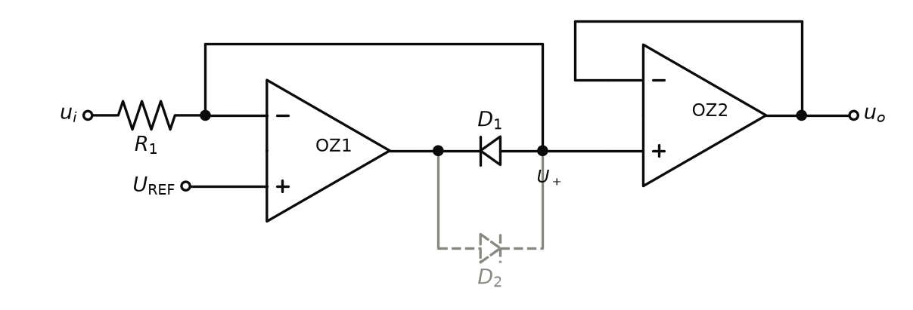
- OZ2 je sledovač: výstup je stejný jako napětí v uzlu \(U_+\), \(u_o = U_+\). Do vstupu OZ2 neteče proud.
- \(u_i < U_\mathrm{REF}\): invertující vstup OZ1 je pod \(U_\mathrm{REF}\), výstup OZ1 jde do kladné saturace a dioda \(D_1\) je zavřená. OZ1 je od uzlu odpojený. Přes \(R_1\) neteče žádný proud, takže \(U_+ = u_i\) a \(u_o = u_i\).
- \(u_i > U_\mathrm{REF}\): invertující vstup OZ1 by byl nad \(U_\mathrm{REF}\), výstup OZ1 klesne, dioda se otevře a zpětná vazba se uzavře. Platí virtuální zkrat a OZ1 udrží svůj invertující vstup přesně na \(U_\mathrm{REF}\). Ten je spojený s uzlem \(U_+\), a proto \(u_o = U_\mathrm{REF}\).
- Úbytek na diodě se neprojeví, protože zpětná vazba se bere až za diodou (stejný trik jako u precizního usměrňovače). Rezistor \(R_1\) omezuje proud, který teče ze zdroje přes diodu do výstupu OZ1: \(i = (u_i - U_\mathrm{REF})/R_1\).
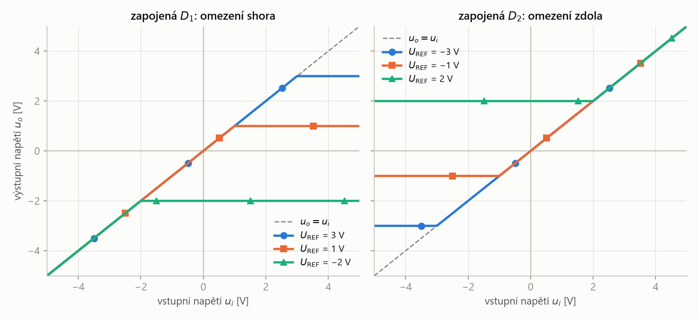
- Pod mezí platí \(u_o = u_i\) (přerušovaná přímka), nad ní je výstup vodorovný na úrovni \(U_\mathrm{REF}\).
- Napětím \(U_\mathrm{REF}\) se mez posouvá; může být i záporné (zelená křivka vlevo).
- \(D_1\) omezuje shora, \(D_2\) zdola – obrácená dioda znamená obrácený směr omezení.
Zapojená je \(D_1\) (omezení shora), \(U_\mathrm{REF} = 3\) V. Tři vstupní napětí:
- \(u_i = -2\) V: pod mezí, \(u_o = -2\) V.
- \(u_i = 2\) V: pod mezí, \(u_o = 2\) V.
- \(u_i = 5\) V: nad mezí, \(u_o = 3\) V. Ze zdroje teče přes \(R_1\) proud \((5 - 3)/R_1\); pro \(R_1 = 10\ \text{k}\Omega\) je to \(0{,}2\) mA.
Oboustranný omezovač
Oboustranný omezovač omezuje výstupní napětí shora i zdola: výstup sleduje vstup jen mezi dolní mezí \(U_\mathrm{REF2}\) a horní mezí \(U_\mathrm{REF1}\).
dvě zábrany místo jedné. Signál smí kmitat jen v pásmu mezi nimi; vše mimo pásmo se uřízne.
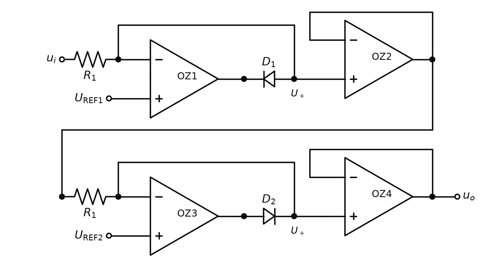
Podle slidu lze kaskádním zapojením dvou omezovačů vytvořit oboustranný omezovač se symetrickou charakteristikou (například \(U_\mathrm{REF1} = 3\) V a \(U_\mathrm{REF2} = -3\) V). Při \(U_\mathrm{REF1} \neq |U_\mathrm{REF2}|\) lze omezovat různá napětí shora a zdola. První stupeň s \(D_1\) uřízne vrchol na \(U_\mathrm{REF1}\), druhý s opačnou \(D_2\) uřízne dno na \(U_\mathrm{REF2}\).
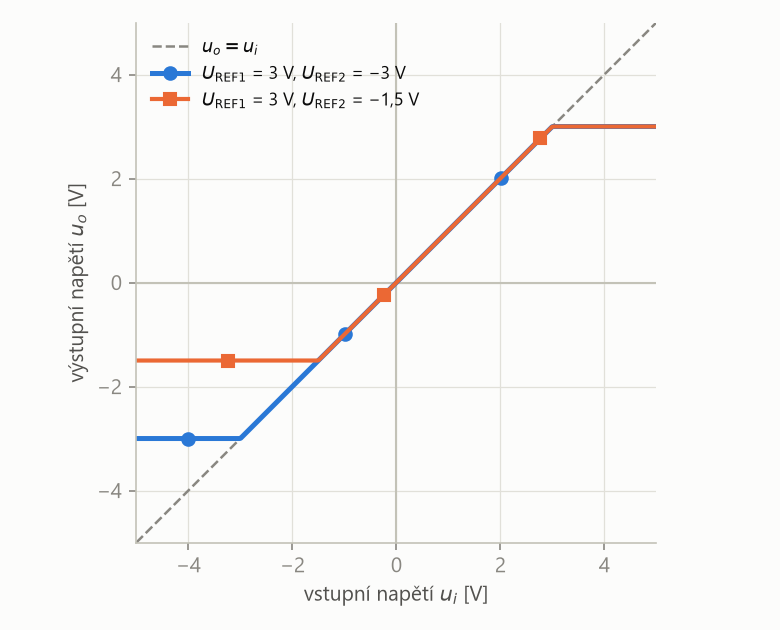
- Uprostřed je přímka \(u_o = u_i\), na obou koncích vodorovné „police“ na úrovni \(U_\mathrm{REF1}\) (nahoře) a \(U_\mathrm{REF2}\) (dole).
- Každá mez se nastavuje nezávisle vlastním referenčním napětím – proto jsou obě police nezávislé.
Omezovač s vlastním referenčním napětím: dvě Zenerovy diody
Referenční napětí nemusí přicházet zvenčí. Omezovač může mít „mez“ zabudovanou v součástkách: dvojice Zenerových diod zapojených proti sobě ve zpětné vazbě invertujícího zesilovače, paralelně k rezistoru \(R_2\).
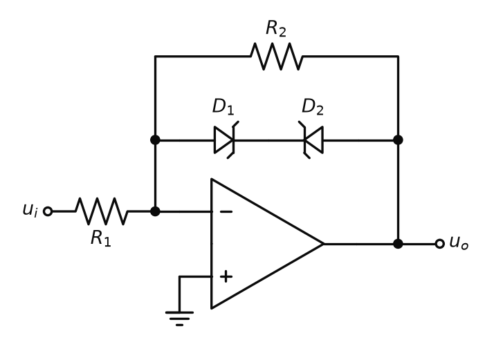
- Pro malé výstupní napětí žádná dioda nevede a zpětnou vazbu tvoří jen \(R_2\): zapojení je běžný invertující zesilovač se zesílením \(-R_2/R_1\) (šikmá část charakteristiky).
- Při určité polaritě je jedna Zenerova dioda v závěrném směru (v průrazu, úbytek \(U_Z\)), druhá v propustném směru (úbytek \(U_D \approx 0{,}6\) V). Jakmile výstup dosáhne součtu těchto úbytků, zpětná vazba výstup dál nepustí.
- Referenční napětí je tedy součet úbytků: kladná mez \(U_{Z(D1)} + U_{D2}\), záporná \(-(U_{D1} + U_{Z(D2)})\).
Mezi mezemi platí zesílení invertujícího zesilovače:
\[ u_o = -\frac{R_2}{R_1}\,u_i \]| \(U_{Z(D1)},\ U_{Z(D2)}\) | Zenerova napětí diod \(D_1\), \(D_2\) (napětí v průrazu) |
| \(U_{D1},\ U_{D2}\) | úbytek na diodě v propustném směru (asi 0,6 V) |
| \(R_1,\ R_2\) | rezistor na vstupu a rezistor ve zpětné vazbě |
Slide uvádí \(U_{Z1} = 9{,}4\) V a \(U_D = 0{,}6\) V. Zvolíme \(R_1 = 1\ \text{k}\Omega\), \(R_2 = 10\ \text{k}\Omega\), tedy zesílení \(-10\).
1. Horní mez:
\[ U_{o,\max} = 9{,}4 + 0{,}6 = 10\ \text{V} \]2. Dolní mez při \(U_{Z2} = 9{,}4\) V (symetrické pásmo):
\[ U_{o,\min} = -(0{,}6 + 9{,}4) = -10\ \text{V} \]3. Dolní mez při \(U_{Z2} = 4{,}4\) V (nesymetrické pásmo):
\[ U_{o,\min} = -(0{,}6 + 4{,}4) = -5\ \text{V} \]4. Vstupní napětí, při kterých se výstup omezí (výstup / zesílení):
\[ \begin{aligned} u_i &= -\frac{10\ \text{V}}{10} = -1\ \text{V} \\ u_i &= \frac{5\ \text{V}}{10} = 0{,}5\ \text{V} \\ u_i &= \frac{10\ \text{V}}{10} = 1\ \text{V} \end{aligned} \]Kladný vstup nad \(0{,}5\) V (resp. \(1\) V) tedy vede na výstup \(-5\) V (resp. \(-10\) V), záporný vstup pod \(-1\) V na \(+10\) V.
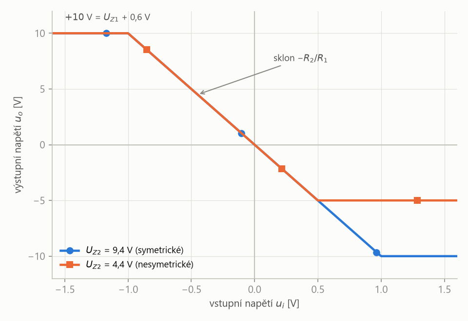
- Charakteristika klesá, protože zapojení invertuje; sklon je \(-R_2/R_1\).
- Obě Zenerovy diody se nikdy nevyrábějí úplně stejné: je-li \(U_{Z1} \neq U_{Z2}\), jsou meze nesymetrické (oranžová křivka). Vlastnosti dvou součástek se prostě liší.
Dokonale symetrické pásmo: jediná Zenerova dioda v můstku
Nesymetrii dvou Zenerových diod se vyhneme, když použijeme jedinou Zenerovu diodu: zapojíme ji do úhlopříčky diodového můstku ze čtyř běžných diod a celý můstek dáme do zpětné vazby paralelně k \(R_2\).
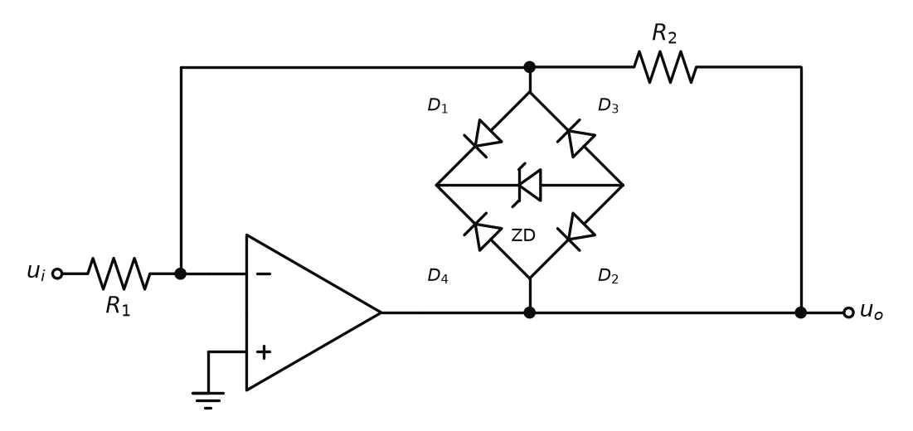
Můstek převádí proud obou polarit na stejný směr průchodu Zenerovou diodou, takže pro kladný i záporný výstup rozhoduje tatáž Zenerova dioda se stejným \(U_Z\). K ní se přičtou úbytky dvou běžných diod v propustném směru. Rozdíl mezi mezemi tak může vzniknout jen z rozdílu úbytků běžných diod.
| \(U_Z\) | Zenerovo napětí diody ZD |
| \(U_{D1}\) až \(U_{D4}\) | úbytky na diodách můstku v propustném směru (asi 0,6 V) |
Mezi mezemi je opět zesílení \(-R_2/R_1\). Vstupní napětí, při kterých omezení začne, jsou \(-U_{o,\max}\,R_1/R_2\) a \(-U_{o,\min}\,R_1/R_2\); stejné vztahy jako v předchozím příkladu.
\(U_Z = 4{,}7\) V, všechny diody \(U_D = 0{,}6\) V:
\[ U_{o,\max} = 4{,}7 + 2 \cdot 0{,}6 = 5{,}9\ \text{V},\qquad U_{o,\min} = -5{,}9\ \text{V} \]Pásmo je symetrické, \(\pm 5{,}9\) V. S \(R_2/R_1 = 10\) se výstup omezí při \(|u_i| = 0{,}59\) V.
Komparátor
Napěťový komparátor je zapojení OZ bez zpětné vazby (definice v P2). Kdo si ji nepamatuje, ať se vrátí: komparátor neměří, o kolik se napětí liší, jen které je větší.
| \(U_1\) | napětí na invertujícím vstupu |
| \(U_2\) | napětí na neinvertujícím vstupu |
| \(U_O\) | výstupní napětí |
| \(\pm U_\mathrm{SAT}\) | saturační napětí OZ (kladné a záporné; zhruba napájení) |
Případ \(U_2 = U_1\) slide škrtá: OZ má obrovské zesílení, a tak o výstupu při rovnosti rozhodne i nepatrný šum nebo offset. Na tomto případu nic nestojí.
Chyba přeběhu komparátoru je dána poměrem saturačního napětí a zesílení OZ. Je to šířka oblasti vstupního rozdílu napětí, v níž výstup ještě není v saturaci:
\[ |U_{i2} - U_{i1}| < \frac{U_\mathrm{SAT}}{A_u} \]skutečný OZ nepřeskočí z jedné saturace do druhé v nule, ale potřebuje „rozjezd“ \(\pm U_\mathrm{SAT}/A_u\) kolem nuly. Čím větší zesílení \(A_u\), tím je rozjezd užší a komparátor „ostřejší“.
\(U_\mathrm{SAT} = 12\) V (jako na slidu s průběhy ±12 V), zesílení \(A_u = 10^5\):
\[ \frac{U_\mathrm{SAT}}{A_u} = \frac{12}{10^5} = 120\ \mu\text{V} \]Výstup je tedy mezi \(-12\) V a \(+12\) V jen pro rozdíl vstupů v rozmezí \(\pm 120\ \mu\text{V}\) (celkem 240 µV). Pro rozdíly větší než ±120 µV je výstup v saturaci.
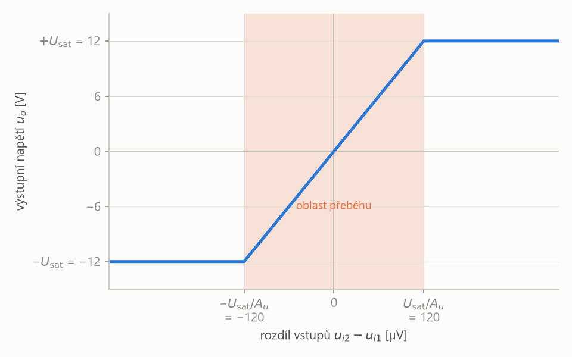
- Výstup nabývá prakticky jen dvou hodnot, \(\pm U_\mathrm{SAT}\); přechod mezi nimi je strmý.
- Takto nakreslená charakteristika platí pro dostatečně pomalé průběhy.
Rychlý děj a rušení: falešná překlopení
Při rychlém ději se superponovanou rušivou složkou vznikají chyby v přeběhu. Rušení se přičte k pomalu rostoucímu signálu. Když signál prochází prahem, rušení ho několikrát vrátí zpět pod práh a zase nad něj. Komparátor se pokaždé překlopí, i když se vstup „skutečně“ překlopil jen jednou: vzniknou falešná překlopení.
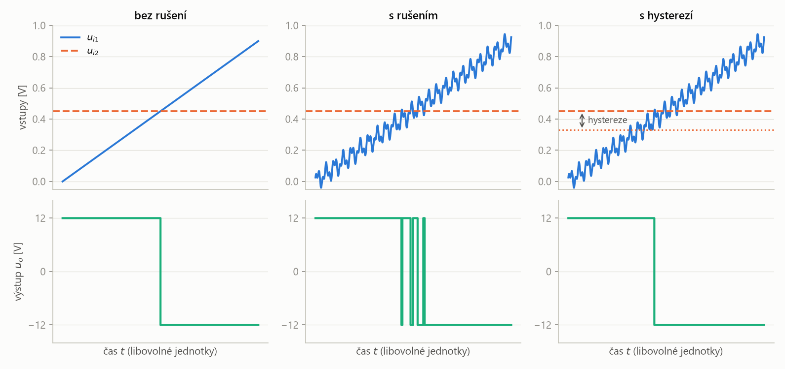
- Bez rušení se výstup překlopí jednou, v okamžiku, kdy rampa překročí práh.
- S rušením vznikne okolo prahu několik pulzů – to jsou falešná překlopení.
- Řešením je hystereze: po překlopení se práh posune (čárkovaná úroveň \(u_{i2}'\) na slidu, tečkovaná čára v pravém sloupci). Rušení menší než šířka hystereze už výstup nepřehodí.
Komparátor s omezením výstupního napětí
Výstup komparátoru je \(\pm U_\mathrm{SAT}\), tedy téměř napájení. To nemusí vyhovovat obvodům za ním (třeba logice). Slide proto omezuje výstup: za OZ je rezistor a Zenerova dioda v můstku (stejný můstek jako u omezovače), takže výstup je místo \(\pm U_\mathrm{SAT}\) pouze
\[ \pm\,(U_{ZD} + 2U_D) \]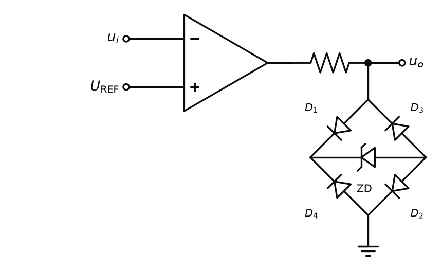
\(U_{ZD} = 4{,}7\) V, \(U_D = 0{,}6\) V:
\[ U_{ZD} + 2U_D = 4{,}7 + 2 \cdot 0{,}6 = 5{,}9\ \text{V} \]Výstup komparátoru je tedy \(\pm 5{,}9\) V bez ohledu na to, jaké je napájení OZ.
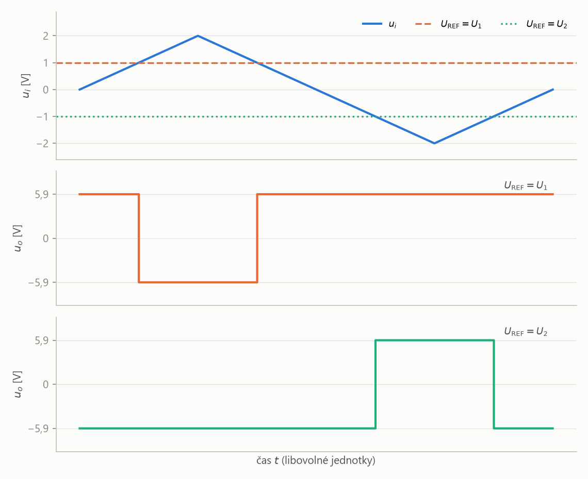
- Komparátor mění trojúhelník na obdélník. Šířka obdélníku závisí na referenčním napětí – posun \(U_\mathrm{REF}\) mění šířku pulzu (pulzně šířková modulace v nejjednodušší podobě).
- Signál je přiveden na invertující vstup, proto je výstup vysoký, dokud je \(u_i\) pod \(U_\mathrm{REF}\), a nízký, když ho překročí.
- Výška obdélníku je pevná: \(\pm(U_{ZD} + 2U_D)\).
Schmittův klopný obvod
Hystereze je vlastnost obvodu, jehož výstup závisí nejen na hodnotě vstupu, ale i na jeho původním stavu: práh, při kterém se obvod překlopí nahoru, je jiný než práh, při kterém se překlopí zpět dolů.
obvod si „pamatuje“, kde byl. Aby ho vstup přehodil, musí zajít o kus dál, než byl předešlý práh. Proto drobné chvění kolem prahu obvod nepřehodí.
Schmittův klopný obvod je komparátor s kladnou zpětnou vazbou (z výstupu přes dělič \(R_2\), \(R_1\) na neinvertující vstup), jehož základní vlastností je hystereze. Překlápění probíhá kolem bodu, který určuje \(U_\mathrm{REF}\) a rezistory \(R_1\), \(R_2\).
komparátor, který si podle výstupu sám posune práh: je-li výstup nahoře, práh je vyšší, je-li dole, je nižší. Používá se k úpravě tvaru impulzů (rozmazaná, zarušená hrana se změní na čistý skok).
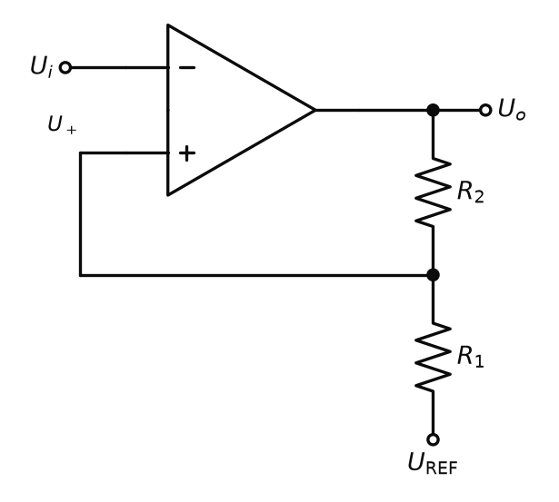
- Výstup je buď \(U_\mathrm{SAT}^+\), nebo \(U_\mathrm{SAT}^-\). Napětí \(U_+\) je napětí děliče: součet příspěvku výstupu a příspěvku \(U_\mathrm{REF}\) (princip superpozice).
- Komparátor se překlopí, když \(U_i\) dosáhne \(U_+\). Vstup tedy pozná jen jeden ze dvou prahů podle toho, v jakém stavu je výstup.
- Je-li výstup \(U_\mathrm{SAT}^+\), je práh \(U_{+a}\) (horní). Překlopí se dolů, jakmile \(U_i\) práh překročí.
- Je-li výstup \(U_\mathrm{SAT}^-\), je práh \(U_{+b}\) (dolní). Překlopí se nahoru, jakmile \(U_i\) klesne pod práh.
| \(U_{+a},\ U_{+b}\) | horní a dolní práh (napětí \(U_+\) při výstupu \(U_\mathrm{SAT}^+\), resp. \(U_\mathrm{SAT}^-\)) |
| \(U_H\) | šířka hystereze (rozdíl prahů) |
| \(U_\mathrm{SAT}^+,\ U_\mathrm{SAT}^-\) | kladné a záporné saturační napětí výstupu |
| \(U_\mathrm{REF}\) | referenční napětí na konci \(R_1\) |
| \(R_1,\ R_2\) | rezistory děliče: \(R_1\) vede k \(U_\mathrm{REF}\), \(R_2\) k výstupu |
Z vzorců plyne: šířka hystereze \(U_H\) nezávisí na \(U_\mathrm{REF}\), ale na poměru rezistorů (větší \(R_1\), menší \(R_2\) = širší hystereze). Napětí \(U_\mathrm{REF}\) oba prahy jen posouvá. Střed hystereze je u symetrického výstupu \(U_\mathrm{SAT}^+ = -U_\mathrm{SAT}^-\) v bodě \(U_\mathrm{REF}\,R_2/(R_1 + R_2)\).
Saturační napětí jsou \(\pm 12\) V, rezistory \(R_1 = 1\ \text{k}\Omega\) a \(R_2 = 9\ \text{k}\Omega\). Dělicí poměry:
\[ \frac{R_1}{R_1 + R_2} = \frac{1}{10} = 0{,}1 \] \[ \frac{R_2}{R_1 + R_2} = \frac{9}{10} = 0{,}9 \]Šířka hystereze (nezávisí na \(U_\mathrm{REF}\)):
\[ U_H = (12 - (-12)) \cdot 0{,}1 = 2{,}4\ \text{V} \]1. Pro \(U_\mathrm{REF} = 0\):
\[ \begin{aligned} U_{+a} &= 12 \cdot 0{,}1 = 1{,}2\ \text{V} \\ U_{+b} &= -12 \cdot 0{,}1 = -1{,}2\ \text{V} \end{aligned} \]2. Pro \(U_\mathrm{REF} = 2\) V se oba prahy posunou o \(2 \cdot 0{,}9 = 1{,}8\) V:
\[ \begin{aligned} U_{+a} &= 1{,}2 + 1{,}8 = 3{,}0\ \text{V} \\ U_{+b} &= -1{,}2 + 1{,}8 = 0{,}6\ \text{V} \end{aligned} \]Střed hystereze je \(1{,}8\) V, \(U_H = 3{,}0 - 0{,}6 = 2{,}4\) V jako dřív. Šum menší než \(\pm 1{,}2\) V okolo prahu už výstup nepřehodí.
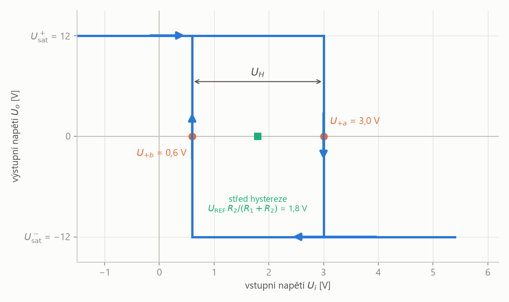
- Charakteristika je smyčka, ne jedna křivka: při růstu \(U_i\) se výstup překlopí dolů při \(U_{+a}\), při poklesu zpět nahoru až při menším \(U_{+b}\).
- Obvod je invertující (signál je na invertujícím vstupu): vysoký vstup dá nízký výstup.
- Výstup v oblasti uvnitř hystereze (mezi prahy) závisí na tom, odkud se přišlo.
Obvod se nepřeklápí při \(U_i = U_\mathrm{REF}\), ale při \(U_{+a}\) nebo \(U_{+b}\). \(U_\mathrm{REF}\) jen posouvá střed hystereze; její šířku určuje poměr \(R_1/(R_1 + R_2)\) a rozdíl saturačních napětí.
Schmittův obvod s vyloučením změn saturačního napětí
Saturační napětí OZ se mění (napájení, zátěž, teplota), a s ním by se měnily prahy i hystereze. Řešením je ustálit výstupní napětí: za OZ je opět rezistor a Zenerova dioda v můstku. Saturační napětí pak určuje napětí na Zenerově diodě a vždy jeden pár diod:
\[ U_\mathrm{SAT}^+ = -U_\mathrm{SAT}^- = U_{DZ} + 2U_D \]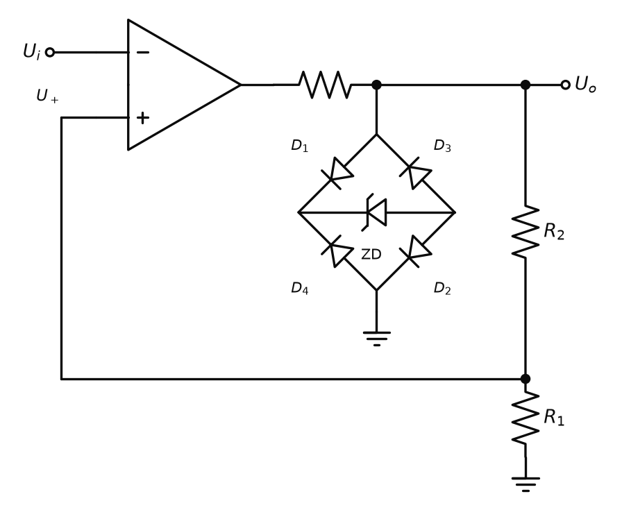
\(U_{DZ} = 4{,}7\) V, \(U_D = 0{,}6\) V, \(R_1 = 1\ \text{k}\Omega\), \(R_2 = 9\ \text{k}\Omega\), \(U_\mathrm{REF} = 0\) (\(R_1\) na zem):
\[ U_\mathrm{SAT}^+ = 4{,}7 + 2 \cdot 0{,}6 = 5{,}9\ \text{V} \] \[ \begin{aligned} U_{+a} &= 5{,}9 \cdot 0{,}1 = 0{,}59\ \text{V} \\ U_{+b} &= -0{,}59\ \text{V} \\ U_H &= 2 \cdot 0{,}59 = 1{,}18\ \text{V} \end{aligned} \]Prahy teď závisejí jen na Zenerově diodě a rezistorech, ne na napájení OZ.
Amplitudový selektor
Slide dá otázku: k čemu slouží toto zapojení? Tři OZ bez zpětné vazby mají každý na neinvertujícím vstupu vlastní napětí \(U_{i1} = 3\) V, \(U_{i2} = 5\) V, \(U_{i3} = 2\) V. Invertující vstupy všech tří jsou spojené na společný vodič, který vede přes rezistor \(R\) k zemi. Výstup každého OZ je připojený přes diodu na tentýž společný vodič. Otázka je, jaká je funkce obvodu a jaké bude napětí na společném vodiči.
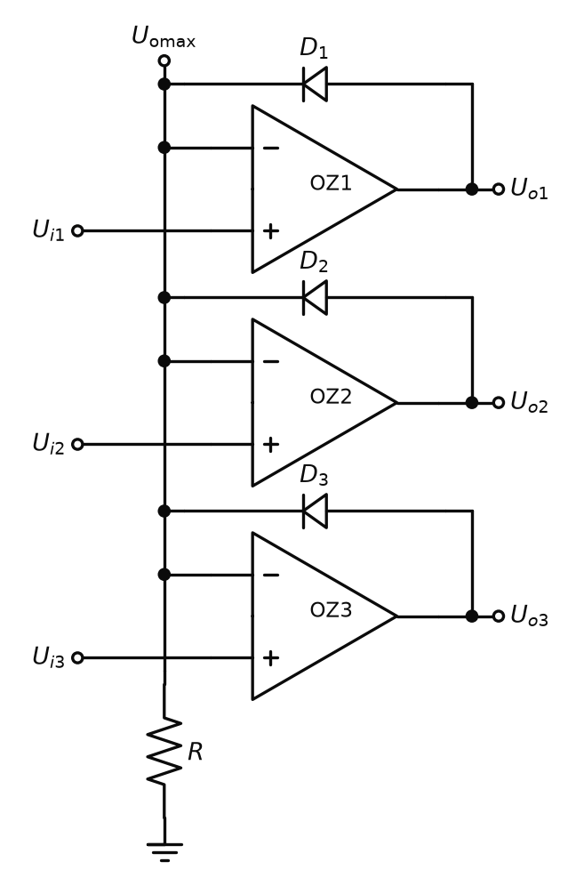
Amplitudový selektor je zapojení několika komparátorů s diodami na společném vodiči, jehož výstup \(U_\mathrm{omax}\) je rovný největšímu ze vstupních napětí.
obvod „vybírá“ signál s největší amplitudou. Je to analogový výběr maxima: kdo má nejvyšší napětí, ten vyhrává a ostatní jsou odpojeny.
- Každý OZ porovnává svůj vstup \(U_{i\#}\) s napětím na společném vodiči, které je pro všechny stejné.
- OZ s nejvyšším vstupem (OZ2, 5 V) začne tlačit napětí společného vodiče nahoru přes svou diodu. Zpětná vazba přes diodu ustaví na společném vodiči napětí \(U_\mathrm{omax} = U_{i2} = 5\) V. Výstup OZ2 je o úbytek diody výš: \(5 + U_D \approx 5{,}6\) V.
- Pro ostatní OZ je napětí společného vodiče (5 V) vyšší než jejich vstup (3 V, 2 V). Jejich výstupy jdou do záporné saturace \(-U_\mathrm{SAT}\), diody jsou zavřené a OZ jsou od společného vodiče odpojené.
- Každá vyšší hodnota na jednom vstupu tak posune komparační úroveň ostatních vstupů.
- Rezistor \(R\) táhne společný vodič k zemi. Bez něj by dioda udržela vodič na dosažené hodnotě a selektor by sledoval maximum jen směrem nahoru; \(R\) dovolí, aby napětí při poklesu největšího vstupu klesalo.
| OZ | \(U_i\) [V] | vstup vs. společný vodič (5 V) | stav OZ | dioda |
|---|---|---|---|---|
| OZ1 | 3 | \(3 < 5\) | záporná saturace \(-U_\mathrm{SAT}\) | zavřená |
| OZ2 | 5 | \(5 = 5\) | reguluje (sledovač), výstup \(5 + U_D\) | vede |
| OZ3 | 2 | \(2 < 5\) | záporná saturace \(-U_\mathrm{SAT}\) | zavřená |
Odpověď: obvod vybírá největší vstup, napětí na společném vodiči je 5 V.
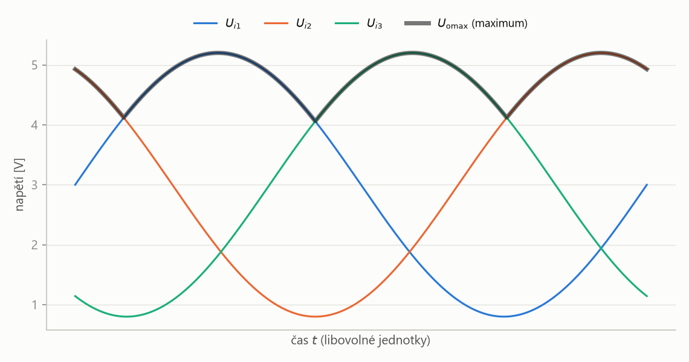
- \(U_\mathrm{omax}\) je vždy horní obalová křivka všech vstupů; v bodech, kde se dva signály protínají, výstup „přeskočí“ z jednoho signálu na druhý.
- Selektor rozhoduje po okamžicích: v každém okamžiku zvítězí jiný vstup.
Úvod do A/D převodu
Komparátor je jednobitový A/D převodník: dává jednu informaci, zda je vstup nad prahem. Plný A/D převodník jich dává víc najednou. Jeho základní pojmy ukazuje tento oddíl; podrobnosti (typy převodníků, chyby) přináší další přednáška.
Analogově-digitální (A/D) převodník slouží k převodu analogového (spojitého) signálu na digitální (diskrétní) signál.
obvod, který změří napětí a řekne ho číslem. Z plynulé hodnoty (například 3,8 V) udělá kód, se kterým počítá procesor.
Kvantování je proces převodu amplitudy signálu na příslušnou binární hodnotu.
spojité napětí se zaokrouhlí na nejbližší z konečného počtu hladin a hladina dostane číslo. Tím se ztratí nepatrný rozdíl mezi hladinami – kvantizační chyba.
Kvantizační úroveň (kvantizační krok, \(1\) LSB) souvisí s počtem bitů převodníku a referenčním napětím: je to nejmenší změna vstupu, kterou převodník rozliší,
\[ q = \frac{U_\mathrm{REF}}{2^{n}} \]n-bitový převodník rozdělí rozsah \(0\) až \(U_\mathrm{REF}\) na \(2^n\) stejných kroků. Čím víc bitů, tím jemnější krok.
Je-li signál pro potřeby A/D převodu diskretizován i v čase, jedná se o vzorkování.
kvantování „řeže“ signál na hladiny podle svislé osy, vzorkování ho „řeže“ po okamžicích podle osy vodorovné. Převodník dělá obojí. Vzorkovací teorém, tj. jak často vzorkovat, patří do zpracování signálů.
Digitálně-analogový (D/A) převodník slouží k převodu digitálního (diskrétního) signálu na analogový (spojitý).
opak A/D převodníku: z čísla vyrobí napětí.
3bitový převodník s \(U_\mathrm{REF} = 8\) V (jako ve flash příkladu níže):
\[ q = \frac{8\ \text{V}}{2^3} = 1\ \text{V} \]12bitový převodník s \(U_\mathrm{REF} = 3{,}3\) V:
\[ q = \frac{3{,}3\ \text{V}}{2^{12}} = \frac{3{,}3}{4096}\ \text{V} \approx 0{,}81\ \text{mV} \]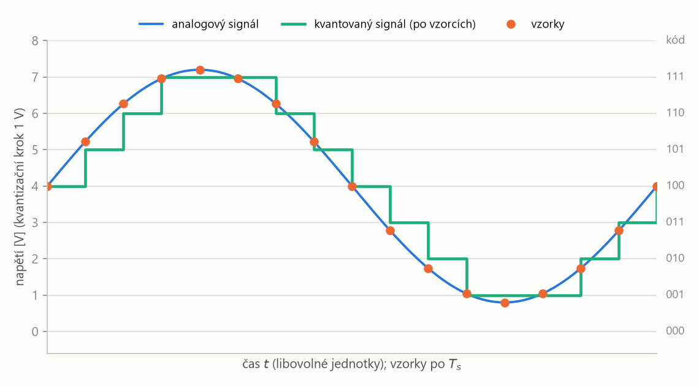
- Oranžové body jsou vzorky (diskretizace v čase), zelené schody jsou kvantované hodnoty (diskretizace v amplitudě).
- Rozdíl mezi modrou křivkou a zelenými schody je kvantizační chyba; s víc bity klesá.
Paralelní (flash) A/D převodník
Paralelní (flash) ADC je nejrychlejší typ A/D převodníku: měřené napětí se současně porovnává se všemi kvantizačními hladinami pomocí řady komparátorů a z jejich výstupů kodér vyrobí binární kód.
místo hledání hodnoty postupně se napětí „přiloží“ najednou ke všem příčkám žebříku a podívá se, kolik jich je pod ním. Použije se tam, kde je potřeba rychlost, například pro BCD 7segmentový displej.
Rezistorová síť (R-síť) je soubor napěťových děličů, který rozdělí referenční napětí \(U_\mathrm{REF}\) na úrovně, které se přivedou na invertující vstupy komparátorů pro porovnání s měřeným napětím.
žebřík stejných rezistorů mezi referencí a zemí. Každá příčka dává jinou hladinu, a ty jsou prahy komparátorů.
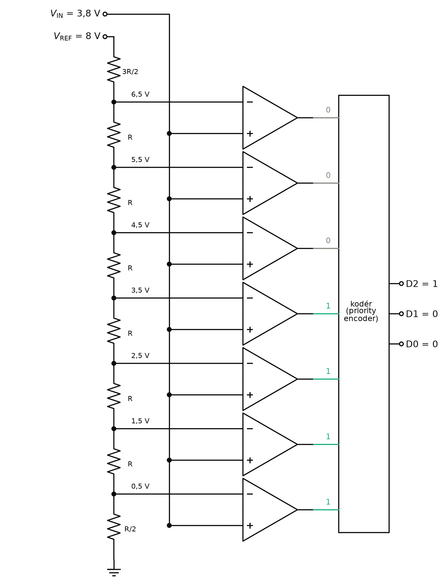
- R-síť dělí \(V_\mathrm{REF}\) na prahové úrovně (zde \(0{,}5\); \(1{,}5\); …; \(6{,}5\) V), které jdou na invertující vstupy komparátorů.
- Měřené \(V_\mathrm{IN}\) jde současně na všechny neinvertující vstupy.
- Komparátor je ve stavu 1 (kladná saturace, H), když \(V_\mathrm{IN}\) překročí jeho práh, a ve stavu 0 (záporná saturace, L), když ne.
- Výstupy komparátorů tvoří řadu jedniček a nul, ze které kodér (priority encoder) vyrobí binární výstup.
Termometrický kód je zápis stavu komparátorů flash ADC, v němž je tolik jedniček (zdola), kolik prahů je pod měřeným napětím.
jako rtuť v teploměru: čím vyšší napětí, tím víc komparátorů „svítí“. Kodér ho převede na obyčejné binární číslo.
Stavy převodníku
- Napětí blízké nule: všechny komparátory jsou v záporné saturaci (L), kódováno \(0000000\), výstup \(000\).
- Napětí blízké referenčnímu: všechny komparátory jsou v kladné saturaci (H), kódováno \(1111111\), výstup \(111\).
- Napětí někde mezi: „otevřeny“ jsou právě ty komparátory, které mají na invertujícím vstupu z děliče nižší napětí, než je měřené.
3bitový převodník, \(V_\mathrm{REF} = 8\) V. Kvantizační krok:
\[ q = \frac{8}{2^3} = 1\ \text{V} \]Rezistorová síť: \(\tfrac{3R}{2} + 6R + \tfrac{R}{2} = 8R\), takže na každém \(R\) je \(1\) V a prahy jsou \(0{,}5\); \(1{,}5\); \(2{,}5\); \(3{,}5\); \(4{,}5\); \(5{,}5\); \(6{,}5\) V (nejnižší leží na dolním \(R/2\), tedy \(0{,}5\) V).
1. Které prahy jsou pod \(3{,}8\) V? Prahy \(0{,}5\); \(1{,}5\); \(2{,}5\); \(3{,}5\) V. Čtyři komparátory zdola jsou ve stavu 1, tři nahoře ve stavu 0:
\[ 0001111 \]2. Kodér spočítá jedničky: čtyři, tedy binárně \(100\):
\[ (100)_2 = 4 \]3. Tomuto kódu odpovídá interval \(3{,}5 \le V_\mathrm{IN} < 4{,}5\) V, střed intervalu je \(4\) V (slide: \(\text{Average} = 4\) V). Každý kód tedy pokrývá krok ±0,5 V kolem své hodnoty.
| \(V_\mathrm{IN}\) [V] | komparátory (termometrický kód) | výstup |
|---|---|---|
| \(0\) | \(0000000\) | \(000\) |
| 0,5 až 1,5 | \(0000001\) | \(001\) |
| 1,5 až 2,5 | \(0000011\) | \(010\) |
| 2,5 až 3,5 | \(0000111\) | \(011\) |
| 3,5 až 4,5 | \(\mathbf{0001111}\) | \(\mathbf{100}\) |
| 4,5 až 5,5 | \(0011111\) | \(101\) |
| 5,5 až 6,5 | \(0111111\) | \(110\) |
| nad 6,5 až \(V_\mathrm{REF}\) | \(1111111\) | \(111\) |
Pravý bit kódu komparátorů je ten, který se zapne jako první (nejnižší práh); v binárním výstupu je nejnižší bit LSB, nejvyšší MSB.
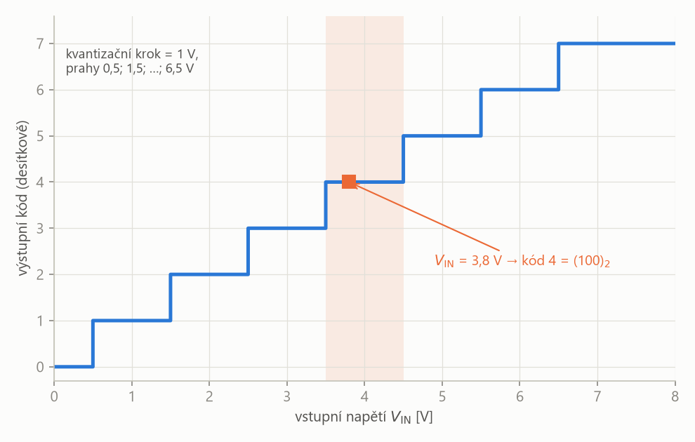
- Převodní charakteristika je schodovitá; všechna napětí uvnitř jednoho schodu dají stejný kód. Šířka schodu je kvantizační krok.
- Prahy jsou posunuté o půl kroku (\(0{,}5\); \(1{,}5\); …), proto je kód zaokrouhlený k nejbližší hladině.
Přesnost rezistorů a počet komparátorů
- Hodnota odporu \(R\) funkci převodníku neovlivňuje, jen určuje proud rezistorovou sítí.
- Hodnoty však musí být precizní, jinak by se posunuly jednotlivé kvantizační úrovně. R-síť se proto zpravidla vyrábí jako jedna integrovaná součástka, v níž jsou z výroby zaručeny stejné hodnoty \(R\).
- Rychlost převodníku je dána rychlostí přeběhu komparátoru, resp. OZ; typicky řádově ns až µs.
- Nevýhoda: potřeba velkého množství komparátorů. Pro \(n\) bitů je jich \(2^n - 1\).
| \(N_\mathrm{komp}\) | počet komparátorů |
| \(n\) | počet bitů převodníku |
| bity \(n\) | počet komparátorů \(2^n - 1\) |
|---|---|
| 3 | 7 |
| 8 | 255 |
| 12 | 4095 |
| 16 | 65535 |
Pro lepší přesnost (víc bitů) by tedy byly třeba stovky až desetitisíce komparátorů – pro 16bitový flash ADC je to \(2^{16} - 1 = 65535\). Proto se flash ADC dělá s malým počtem bitů a používá se tam, kde je rozhodující rychlost.
Srovnání zapojení
| zapojení | klíčové součástky | výstup | použití, problém |
|---|---|---|---|
| precizní omezovač | OZ1 + dioda, OZ2 sledovač, \(U_\mathrm{REF}\) | \(u_i\) do meze \(U_\mathrm{REF}\), pak \(U_\mathrm{REF}\) | ochrana, ořez signálu; opačná dioda = omezení z druhé strany |
| oboustranný omezovač | dva stupně nebo dvě Zenerky nebo můstek + ZD | \(u_i\) mezi \(U_\mathrm{REF2}\) a \(U_\mathrm{REF1}\) | dvě Zenerky = možná nesymetrie, jedna ZD v můstku = symetrie |
| komparátor | OZ bez zpětné vazby | \(\pm U_\mathrm{SAT}\) | chyba přeběhu \(U_\mathrm{SAT}/A_u\), falešná překlopení při rušení |
| komparátor s omezením | + rezistor a Zenerka v můstku | \(\pm(U_{ZD} + 2U_D)\) | výstup slučitelný s dalším obvodem |
| Schmittův KO | OZ s kladnou ZV (\(R_1\), \(R_2\), \(U_\mathrm{REF}\)) | \(\pm U_\mathrm{SAT}\) s hysterezí \(U_H\) | úprava tvaru impulzů, odolnost proti rušení |
| amplitudový selektor | \(n\) OZ + diody na společném vodiči, \(R\) | \(U_\mathrm{omax} = \max U_{i\#}\) | výběr nejsilnějšího signálu |
| flash ADC | R-síť, \(2^n - 1\) komparátorů, kodér | \(n\)bitový kód | nejrychlejší, ale velký počet komparátorů |
„Komparátor je OZ bez zpětné vazby: je-li napětí na neinvertujícím vstupu větší než na invertujícím, je výstup v kladné saturaci, jinak v záporné. Skutečný OZ potřebuje na překlopení rozdíl vstupů \(U_\mathrm{SAT}/A_u\), to je chyba přeběhu. Při pomalém signálu s rušením se komparátor kolem prahu několikrát překlopí. Proti tomu je Schmittův klopný obvod: kladná zpětná vazba přes dělič \(R_2\), \(R_1\) posouvá práh podle stavu výstupu. Horní práh dostaneme pro kladné saturační napětí:
\[ U_{+a} = U_\mathrm{SAT}^+ \frac{R_1}{R_1 + R_2} + U_\mathrm{REF} \frac{R_2}{R_1 + R_2} \]Dolní práh \(U_{+b}\) je stejný se záporným saturačním napětím a hystereze je jejich rozdíl:
\[ U_H = \bigl(U_\mathrm{SAT}^+ - U_\mathrm{SAT}^-\bigr)\frac{R_1}{R_1 + R_2} \]Precizní omezovač je OZ s diodou, kde zpětná vazba je za diodou: výstup sleduje vstup, dokud nedosáhne \(U_\mathrm{REF}\), a pak na něm zůstane. Oboustranný dostaneme dvěma stupni, dvěma Zenerkami proti sobě, nebo jednou Zenerkou v diodovém můstku. Amplitudový selektor jsou komparátory s diodami na společném vodiči, který se nastaví na největší vstup. Flash ADC má žebřík rezistorů, který rozdělí referenci na prahy, a pro \(n\) bitů \(2^n - 1\) komparátorů. Jejich výstupy ve tvaru termometrického kódu převede kodér na binární číslo. Je nejrychlejší, ale potřebuje mnoho komparátorů.“
Komparátor = „ano / ne“ (\(\pm U_\mathrm{SAT}\)); hystereze (Schmitt) ho zbaví falešných překlopení; omezovač řízeně „uřízne“ signál; z komparátorů vznikne selektor maxima i nejrychlejší A/D převodník – flash ADC (\(2^n - 1\) komparátorů).
Shrnutí
Precizní omezovač je „usměrňovač s posunutou nulou“: OZ s diodou, jejíž zpětná vazba se bere za diodou, a sledovač OZ2. Výstup sleduje vstup do meze \(U_\mathrm{REF}\), dál zůstane na \(U_\mathrm{REF}\). Opačná dioda omezuje z druhé strany. Oboustranný omezovač je kaskáda dvou stupňů, nebo invertující zesilovač se dvěma Zenerovými diodami proti sobě (meze \(U_{Z(D1)} + U_{D2}\) a \(-(U_{D1} + U_{Z(D2)})\), pásmo může být nesymetrické), nebo s jedinou Zenerovou diodou v diodovém můstku (dokonale symetrické pásmo, \(\pm(U_Z + 2U_D)\)).
Komparátor je OZ bez zpětné vazby: \(U_2 > U_1 \Rightarrow +U_\mathrm{SAT}\), \(U_2 < U_1 \Rightarrow -U_\mathrm{SAT}\). Chyba přeběhu je \(U_\mathrm{SAT}/A_u\) (pro 12 V a \(10^5\) jen 120 µV). Charakteristika platí pro pomalé průběhy; u rychlého děje s rušením vznikají falešná překlopení. Komparátor s omezením má za OZ rezistor a Zenerovu diodu v můstku, výstup je \(\pm(U_{ZD} + 2U_D)\).
Schmittův klopný obvod má kladnou zpětnou vazbu přes dělič \(R_2\), \(R_1\) a hysterezi: prahy \(U_{+a}\) a \(U_{+b}\) dané stavem výstupu, šířka hystereze \(U_H = (U_\mathrm{SAT}^+ - U_\mathrm{SAT}^-)R_1/(R_1 + R_2)\) nezávisí na \(U_\mathrm{REF}\), který jen posouvá střed. Slouží k úpravě tvaru impulzů. Zenerova dioda v můstku ustálí saturační napětí na \(U_{DZ} + 2U_D\).
Amplitudový selektor (komparátory s diodami na společném vodiči s rezistorem \(R\) k zemi) vybírá největší ze vstupů: pro 3 V, 5 V a 2 V je na společném vodiči 5 V.
A/D převodník převádí spojitý signál na diskrétní; kvantování převádí amplitudu na binární hodnotu, kvantizační krok je \(U_\mathrm{REF}/2^n\), vzorkování je diskretizace v čase, D/A převodník dělá opak. Flash ADC je nejrychlejší: R-síť (integrovaná, s přesnými rezistory) vytvoří \(2^n - 1\) prahů pro komparátory, jejich výstupy (termometrický kód, např. 0001111 pro 3,8 V při \(V_\mathrm{REF} = 8\) V) kodér převede na binární kód (100). Rychlost je dána přeběhem komparátoru (ns až µs), nevýhoda je počet komparátorů (pro 16 bitů 65535).
Take-home messages
- Omezovač = OZ + dioda, zpětná vazba za diodou; \(u_o = u_i\) do meze \(U_\mathrm{REF}\), pak \(U_\mathrm{REF}\); obrácená dioda = omezení z druhé strany.
- Oboustranný omezovač: dva stupně, nebo dvě Zenerky (možná nesymetrie), nebo jedna Zenerka v můstku (symetrie, meze \(\pm(U_Z + 2U_D)\)).
- Komparátor: OZ bez zpětné vazby, výstup \(\pm U_\mathrm{SAT}\); chyba přeběhu \(U_\mathrm{SAT}/A_u\).
- Rušení kolem prahu způsobí falešná překlopení; řešením je hystereze.
- Schmitt: dvě prahová napětí \(U_{+a}\) a \(U_{+b}\) podle stavu výstupu, hystereze \(U_H = (U_\mathrm{SAT}^+ - U_\mathrm{SAT}^-)\frac{R_1}{R_1 + R_2}\).
- \(U_\mathrm{REF}\) hysterezi nemění, jen posouvá střed obou prahů.
- Zenerova dioda v můstku za OZ ustálí saturační napětí: \(\pm(U_{DZ} + 2U_D)\).
- Amplitudový selektor vybírá největší vstup (společný vodič \(= U_\mathrm{max}\)); rezistor \(R\) dovolí poklesu.
- Kvantizační krok \(q = U_\mathrm{REF}/2^n\); vzorkování = čas, kvantování = amplituda.
- Flash ADC: R-síť → \(2^n - 1\) komparátorů → termometrický kód → kodér; nejrychlejší, ale drahý na komparátory.
Otázky ke zkoušce
Co je precizní omezovač? Nakreslete ho a vysvětlete, co se děje pod a nad mezí.
Omezovač udržuje výstupní napětí nejvýš na hodnotě \(U_\mathrm{REF}\) a menší napětí nechává projít beze změny; je to usměrňovač s „nulou“ posunutou na \(U_\mathrm{REF}\). Zapojení: \(u_i\) přes \(R_1\) na invertující vstup OZ1, \(U_\mathrm{REF}\) na jeho neinvertující vstup, dioda \(D_1\) mezi výstupem OZ1 a uzlem \(U_+\), ke kterému je připojen také invertující vstup OZ1; OZ2 je sledovač s neinvertujícím vstupem v uzlu \(U_+\).
- \(u_i < U_\mathrm{REF}\): výstup OZ1 je v kladné saturaci, dioda je zavřená, přes \(R_1\) neteče proud, \(U_+ = u_i\), \(u_o = u_i\).
- \(u_i > U_\mathrm{REF}\): dioda se otevře, zpětná vazba přes ni uzavře smyčku a OZ1 udrží invertující vstup na \(U_\mathrm{REF}\); \(u_o = U_\mathrm{REF}\).
Úbytek na diodě se neprojeví, protože zpětná vazba se bere za ní. Obrácená dioda \(D_2\) omezuje zdola.
Jakými třemi způsoby lze udělat oboustranný omezovač? Čím se liší?
- Kaskáda dvou omezovačů s opačnými diodami a referencemi \(U_\mathrm{REF1}\), \(U_\mathrm{REF2}\): meze se nastavují nezávisle (symetricky i nesymetricky).
- Invertující zesilovač se dvěma Zenerovými diodami proti sobě ve zpětné vazbě paralelně k \(R_2\): meze \(U_{Z(D1)} + U_{D2}\) a \(-(U_{D1} + U_{Z(D2)})\); díky rozdílu Zenerových napětí může být pásmo nesymetrické (např. +10 V a −5 V).
- Jedna Zenerova dioda v diodovém můstku ve zpětné vazbě: pro obě polarity rozhoduje stejná Zenerova dioda, meze \(\pm(U_Z + 2U_D)\), pásmo je dokonale symetrické.
Ve druhém a třetím zapojení je mezi mezemi zesílení \(-R_2/R_1\).
Jak vypadá převodní charakteristika komparátoru a co je chyba přeběhu? Kolik je pro \(U_\mathrm{SAT} = 12\) V a \(A_u = 10^5\)?
Charakteristika má výstup \(-U_\mathrm{SAT}\) pro \(U_{i2} - U_{i1} < 0\) a \(+U_\mathrm{SAT}\) pro rozdíl kladný; v okolí nuly je strmý přechod. Skutečný OZ nepřeskočí přesně v nule, přechod trvá v oblasti \(\pm U_\mathrm{SAT}/A_u\) – to je chyba přeběhu, dána poměrem saturačního napětí a zesílení.
\[ \frac{U_\mathrm{SAT}}{A_u} = \frac{12}{10^5} = 120\ \mu\text{V} \]Tato charakteristika platí pro dostatečně pomalé průběhy.
Proč komparátor u zarušeného signálu několikrát překlopí a jak se tomu zabrání?
Pomalu rostoucí signál s přidaným rušením prochází prahem několikrát tam a zpět. Protože komparátor reaguje na každý průchod, výstup se překlopí vícekrát (falešná překlopení), i když se skutečný signál překlopil jen jednou.
Řešení je hystereze: Schmittův klopný obvod má kladnou zpětnou vazbu přes dělič, takže práh po překlopení posune. Aby se výstup překlopil zpět, musí vstup zajít o šířku hystereze \(U_H\) – rušení menší než ta se nepřenese.
Odvoďte prahy a hysterezi Schmittova obvodu. Spočítejte je pro saturační napětí ±10 V, rezistory 1 kΩ a 4 kΩ (\(R_1\), \(R_2\)) a \(U_\mathrm{REF} = 0\).
Napětí na neinvertujícím vstupu je napětí děliče z výstupu a \(U_\mathrm{REF}\):
\[ U_+ = U_o \cdot \frac{R_1}{R_1 + R_2} + U_\mathrm{REF} \cdot \frac{R_2}{R_1 + R_2} \]Při výstupu \(U_\mathrm{SAT}^+\) vzniká horní práh \(U_{+a}\), při \(U_\mathrm{SAT}^-\) dolní \(U_{+b}\); hystereze je jejich rozdíl:
\[ U_H = U_{+a} - U_{+b} = \bigl(U_\mathrm{SAT}^+ - U_\mathrm{SAT}^-\bigr)\frac{R_1}{R_1 + R_2} \]Pro zadané hodnoty je \(R_1/(R_1 + R_2) = 1/5 = 0{,}2\):
\[ \begin{aligned} U_{+a} &= 10 \cdot 0{,}2 = 2\ \text{V} \\ U_{+b} &= -2\ \text{V} \\ U_H &= 20 \cdot 0{,}2 = 4\ \text{V} \end{aligned} \]Obvod se tedy překlopí dolů, když \(U_i\) překročí \(+2\) V, a zpět nahoru, až když klesne pod \(-2\) V.
K čemu je Zenerova dioda v můstku za výstupem komparátoru a Schmittova obvodu?
Výstup OZ v saturaci závisí na napájení a na zátěži. Rezistor a Zenerova dioda v diodovém můstku výstup omezí na pevnou hodnotu:
\[ U_\mathrm{SAT}^+ = -U_\mathrm{SAT}^- = U_{DZ} + 2U_D \]Na Zenerově diodě je napětí \(U_{DZ}\) a vždy jeden pár diod přidá \(2U_D\). U komparátoru tak dostaneme výstup použitelný pro další obvod. U Schmittova obvodu je saturační napětí stálé, takže prahy a hystereze nezávisejí na změnách napájení OZ. Například pro \(U_{DZ} = 4{,}7\) V a \(U_D = 0{,}6\) V:
\[ U_\mathrm{SAT}^+ = 4{,}7 + 1{,}2 = 5{,}9\ \text{V} \]a s dělicím poměrem \(R_1/(R_1 + R_2) = 0{,}1\) je hystereze \(U_H = 2 \cdot 5{,}9 \cdot 0{,}1 = 1{,}18\) V.
K čemu slouží obvod se třemi OZ a diodami na společném vodiči? Jaké bude napětí na společném vodiči pro vstupy 3 V, 5 V a 2 V?
Je to amplitudový selektor – vybírá největší ze vstupních napětí. Každý OZ porovnává svůj vstup s napětím na společném vodiči. OZ s nejvyšším vstupem (5 V) přes svou diodu nastaví napětí společného vodiče na 5 V (jeho výstup je o úbytek diody výš). Ostatní dva mají vstup menší (3 V, 2 V), jejich výstupy jsou v záporné saturaci a diody jsou zavřené, takže na vodič nic nedodávají. Napětí na společném vodiči je 5 V. Každá vyšší hodnota na vstupu posune komparační úroveň ostatních. Rezistor \(R\) k zemi dovolí, aby napětí na vodiči klesalo, když největší vstup klesne.
Vysvětlete princip flash ADC. Jak převede 3,8 V při \(V_\mathrm{REF} = 8\) V na 3 bity? Proč se nedělá s mnoha bity?
Rezistorová síť rozdělí \(V_\mathrm{REF}\) na prahy (pro 3 bity 7 prahů po 1 V: \(0{,}5\); \(1{,}5\); …; \(6{,}5\) V), které jdou na invertující vstupy sedmi komparátorů. Měřené napětí jde na všechny neinvertující vstupy. Komparátory s prahem pod \(V_\mathrm{IN}\) jsou v kladné saturaci (1), ostatní v záporné (0).
Pro \(V_\mathrm{IN} = 3{,}8\) V jsou pod ním prahy \(0{,}5\); \(1{,}5\); \(2{,}5\); \(3{,}5\) V, čtyři komparátory jsou ve stavu 1: kód komparátorů \(0001111\). Kodér z něj udělá \((100)_2 = 4\) (interval \(3{,}5 \le V_\mathrm{IN} < 4{,}5\) V).
Flash ADC je nejrychlejší, protože se všechny prahy vyhodnotí současně (rychlost daná přeběhem komparátoru, ns až µs). Pro \(n\) bitů ale potřebuje \(2^n - 1\) komparátorů: pro 16 bitů \(2^{16} - 1 = 65535\). K tomu musí být rezistory v síti precizní (integrovaná R-síť), jinak se posunou kvantizační úrovně.
Přednáška 7
A/D a D/A převodníky
Převodník je místo, kde se z napětí stane číslo (A/D), nebo z čísla napětí (D/A). Všechny převodníky v této kapitole jsou poskládané z prvků, které už známe: rezistorová síť, komparátor, integrátor a čítač. Liší se tím, jak hledají číslo odpovídající vstupu – a z toho plyne, jak jsou rychlé, přesné a složité. U každého řešení je proto nejdůležitější pochopit jeho princip.
Navazuje se na úvod do A/D převodu v P6: tam jsou definice A/D a D/A převodníku, kvantizačního kroku a nejrychlejšího paralelního (flash) ADC. Slide „AD převodník“ dělí látku na čtyři části: DAC, komparační převodník (half-flash), integrační převodníky a kompenzační převodníky.
MSB (most significant bit) je nejvýznamnější bit binárního čísla, tedy bit s největší váhou \(2^{n-1}\). LSB (least significant bit) je nejméně významný bit s váhou \(2^0 = 1\); jako napětí odpovídá LSB jednomu kvantizačnímu kroku.
v čísle 1100 je MSB první jednička zleva (váha 8), LSB poslední nula vpravo (váha 1). Změna MSB posune napětí o půlku rozsahu, změna LSB jen o jeden nejmenší krok.
| skupina (slide) | převodníky | společný princip |
|---|---|---|
| D/A převodník | váhový R–2R–4R …, příčkový R–2R | rezistorová síť + OZ sečte proudy bitů |
| komparační | flash (P6), half-flash | vstup se porovná s mnoha prahy najednou |
| integrační | single slope, dual slope | napětí se převede na čas, čas se změří čítáním hodin |
| kompenzační | counter type, tracking type, postupná aproximace | DAC ve zpětné vazbě; kód se mění, dokud \(U_\mathrm{DAC}\) „nevyrovná“ \(U_\mathrm{IN}\) |
Digitálně-analogový převodník (DAC)
D/A převodník převádí binární (diskrétní) hodnotu na hodnotu analogovou (spojitou). Podle slidu:
- princip převodu je výrazně jednodušší než u ADC,
- převod probíhá zpravidla na odporové síti typu R–2R nebo R–4R–8R …,
- DAC je často používán jako pomocný obvod v ADC (uvidíme ho v half-flash, counter, tracking i SAR převodníku).
DAC s váhovými rezistory (R–2R–4R …)
DAC s váhovými rezistory (typu R–2R–4R …) má pro každý bit jeden rezistor s odporem odstupňovaným v poměru mocnin dvou (MSB má \(R\), každý další bit dvojnásobek, LSB \(2^{n-1}R\)). Přepínač řízený bitem připojí rezistor k referenčnímu napětí a invertující sčítací zesilovač s rezistorem \(R_f\) sečte proudy všech větví na výstupní napětí.
každý bit je „kohoutek“ s jinak širokou trubkou: MSB pustí největší proud, každý další bit poloviční. OZ proudy sečte a výstupní napětí je pak úměrné číslu na vstupu.

- MSB (\(B_5\)) má nejmenší odpor \(R\), a tedy největší proud; LSB (\(B_0\)) má \(32R\) a nejmenší proud.
- Všechny větve končí v jednom uzlu na invertujícím vstupu – tam se proudy sčítají a tečou dál přes \(R_f\).
- Invertující vstup OZ je díky zpětné vazbě na virtuální nule. Na každém rezistoru sepnutého bitu je proto celé \(U_\mathrm{REF}\) a větví teče proud \(U_\mathrm{REF}/R_k\) – nezávisle na ostatních větvích.
- Odpory jsou odstupňované \(R, 2R, 4R, \dots\), takže proudy jsou odstupňované \(1 : \tfrac12 : \tfrac14 : \dots\) – přesně jako váhy bitů v binárním čísle.
- Proudy se sečtou v uzlu a protečou rezistorem \(R_f\) (do OZ neteče nic). Výstup je \(U_o = -R_f \cdot \sum I\) – jako u invertujícího zesilovače s více vstupy.
| \(U_o\) | výstupní napětí DAC |
| \(U_\mathrm{REF}\) | referenční napětí, na které přepínače připojují rezistory |
| \(R_f\) | rezistor ve zpětné vazbě OZ |
| \(R\) | nejmenší odpor (větev MSB) |
| \(B_i\) | hodnota bitu \(i\) (0 nebo 1); \(B_{n-1}\) = MSB, \(B_0\) = LSB |
| \(n\) | počet bitů |
- 6 bitů, \(U_\mathrm{REF} = 6{,}4\) V,
- \(R = 10\ \text{k}\Omega\), \(R_f = 5\ \text{k}\Omega\),
- sepnuté jsou bity \(B_5\), \(B_3\), \(B_2\), tedy rezistory \(R\), \(4R\) a \(8R\).
1. Proudy sepnutých větví:
\[ \begin{aligned} I_5 &= \frac{6{,}4\ \text{V}}{10\ \text{k}\Omega} = 0{,}64\ \text{mA} \\ I_3 &= \frac{6{,}4\ \text{V}}{40\ \text{k}\Omega} = 0{,}16\ \text{mA} \\ I_2 &= \frac{6{,}4\ \text{V}}{80\ \text{k}\Omega} = 0{,}08\ \text{mA} \end{aligned} \]2. Součet proudů:
\[ \sum I = 0{,}64 + 0{,}16 + 0{,}08 = 0{,}88\ \text{mA} \]3. Výstupní napětí:
\[ U_o = -R_f \sum I = -5\ \text{k}\Omega \cdot 0{,}88\ \text{mA} = -4{,}4\ \text{V} \]Kontrola: \(101100_2 = 44\) a jeden krok je \(6{,}4/64 = 0{,}1\) V, takže \(44 \cdot 0{,}1 = 4{,}4\) V.
Pro \(n\) bitů je potřeba \(n\) různých odporů v rozsahu \(R\) až \(2^{n-1}R\) (pro 6 bitů \(32R\), pro 12 bitů už \(2048R\)) a všechny musí být přesné, jinak se poruší poměry vah. Proto se častěji používá síť R–2R, která vystačí se dvěma hodnotami.
DAC s příčkovou sítí R–2R
DAC typu R–2R je D/A převodník s příčkovou (žebříkovou) odporovou sítí složenou jen ze dvou hodnot odporu, \(R\) v podélné větvi a \(2R\) v příčných větvích. Každá příčná větev je přepínačem řízeným bitem připojena k \(U_\mathrm{REF}\) nebo k zemi; konec sítě u MSB je připojen na invertující vstup OZ se zpětnou vazbou \(R_f\).
žebřík, ve kterém se proud v každém uzlu dělí přesně napůl. Bit blíž k OZ (MSB) proto přispívá dvakrát víc než jeho soused – a stačí k tomu jen dva druhy rezistorů.

- Síť obsahuje jen \(R\) a \(2R\), ať má převodník bitů kolik chce.
- LSB je na vzdáleném konci žebříku (vlevo), MSB přímo u OZ – čím blíž k OZ, tím větší váha.
- Rezistor \(2R\) na zem na začátku žebříku je zakončení: díky němu vypadá každý uzel stejně.
- Začni úplně vlevo: zakončovací \(2R\) a příčná \(2R\) jsou paralelně, dávají \(R\). Spolu s podélným \(R\) k dalšímu uzlu je to zase \(2R\).
- V každém dalším uzlu tak „doleva“ vidíme \(2R\) a „dolů“ do příčné větve také \(2R\). Dvě stejné cesty – proud nebo napětí se dělí přesně napůl.
- Příspěvek bitu se proto na cestě k OZ v každém uzlu zmenší na polovinu. MSB u OZ má váhu \(\tfrac12\), další \(\tfrac14\), …, LSB \(\tfrac{1}{2^n}\).
| \(U_o\) | výstupní napětí DAC |
| \(U_\mathrm{REF}\) | referenční napětí (sběrnice, ke které přepínač připojí bit 1) |
| \(R_f\) | rezistor ve zpětné vazbě OZ |
| \(R\) | podélný odpor žebříku (příčné větve mají \(2R\)) |
| \(B_i\) | hodnota bitu \(i\) (0 nebo 1); \(B_{n-1}\) = MSB s váhou \(\tfrac12\), \(B_0\) = LSB s váhou \(\tfrac{1}{2^n}\) |
| \(n\) | počet bitů |
Suma je vlastně číslo \(D\) na vstupu dělené \(2^n\), takže pro \(R_f = R\):
\[ U_o = -U_\mathrm{REF}\,\frac{D}{2^n} \]6 bitů, \(U_\mathrm{REF} = 6{,}4\) V, \(R_f = R\). Jedničky jsou na \(B_5\), \(B_3\), \(B_2\).
1. Váhy sepnutých bitů \(1/2^{\,n-i}\):
\[ \begin{aligned} \frac{1}{2^{1}} + \frac{1}{2^{3}} + \frac{1}{2^{4}} &= 0{,}5 + 0{,}125 + 0{,}0625 \\ &= 0{,}6875 \end{aligned} \]2. Výstup:
\[ U_o = -6{,}4 \cdot 0{,}6875 = -4{,}4\ \text{V} \]Totéž přes číslo: \(D = 101100_2 = 44\), \(U_o = -6{,}4 \cdot 44/64 = -4{,}4\) V – stejný výsledek jako u váhového DAC.
DAC = rezistorová síť, která z každého bitu udělá proud s váhou mocniny dvou, a OZ, který proudy sečte na napětí. Váhová síť potřebuje \(n\) různých odporů, síť R–2R jen dva.
Half-flash ADC (komparační převodník)
Half-flash ADC je varianta flash převodníku s nižší potřebou komparátorů: první flash převodník určí horní polovinu bitů (MSB), DAC je převede zpět na napětí, rozdíl vstupního napětí a výstupu DAC (zbytek) převede druhý flash převodník na dolní polovinu bitů (LSB).
převod na dvakrát: nejdřív hrubě („kolik celých voltů?“), potom jemně jen ten zbytek („a kolik ještě navíc?“). Jako měření metrem: nejdřív celé centimetry, pak milimetry.
Vzorkovací obvod (Sample & Hold, S/H) v okamžiku vzorkování odebere hodnotu vstupního napětí a po dobu převodu ji na svém výstupu drží konstantní.
„vyfotí“ napětí a fotku drží, dokud převodník nedopočítá. Převodník, který pracuje ve více krocích, tak celou dobu převádí stejnou hodnotu, i když se vstup mezitím mění.
Obr. P7.3 Blokové schéma half-flash ADC pro 8 bitů (podle slidu) s čísly z příkladu \(U_\mathrm{REF} = 16\) V, \(U_\mathrm{IN} = 12{,}4\) V. Kroužek „−“ je odečítací člen (na slidu OZ, na jehož + jde vstup a na − výstup DAC).
- Sample & Hold podrží vstupní napětí po celou dobu převodu.
- Horní 4bitový flash převede vstup hrubě: určí 4 MSB.
- 4bitový DAC převede těchto 4 MSB zpět na napětí – to je „hrubá“ hodnota.
- Odečítací člen (OZ) spočítá zbytek: vstup minus hrubá hodnota.
- Dolní 4bitový flash převede zbytek: určí 4 LSB.
- Registr (latches) složí 4 MSB a 4 LSB do jednoho 8bitového čísla.
1. Horní 4bitový flash dělí 16 V na 16 kroků po 1 V. Napětí 12,4 V obsahuje 12 celých kroků, převodník „vidí“ jen celé volty:
\[ 12 = (1100)_2 \]2. DAC převede 1100 zpět: \(12{,}0\) V. Odečítací člen spočítá zbytek:
\[ 12{,}4 - 12{,}0 = 0{,}4\ \text{V} \]3. Zbytek je vždy menší než jeden krok horního převodníku (1 V). Dolní 4bitový flash proto dělí právě tento 1 V na 16 kroků:
\[ q_\mathrm{LSB} = \frac{1\ \text{V}}{16} = 0{,}0625\ \text{V} \] \[ \frac{0{,}4}{0{,}0625} = 6{,}4 \;\Rightarrow\; 6 = (0110)_2 \]4. Registr složí výsledek \(1100\,0110\). Kontrola: \(11000110_2 = 198\) a krok celého 8bitového převodníku je \(16/256 = 0{,}0625\) V:
\[ 198 \cdot 0{,}0625 = 12{,}375\ \text{V} \approx 12{,}4\ \text{V} \]| \(N\) | počet komparátorů |
| \(n\) | počet bitů celého převodníku (half-flash: dva převodníky po \(n/2\) bitech) |
Pro 8 bitů (slide):
\[ \begin{aligned} N_\mathrm{flash} &= 2^8 - 1 = 255 \\ N_\mathrm{half} &= 2\cdot(2^4 - 1) = 30 \end{aligned} \]- Výhoda je v počtu komparátorů: 30 místo 255.
- Současně je zachována rychlost převodu komparátory – DAC je pouze R síť, takže nic nezdržuje.
- Nejpomalejším prvkem je tak registr (latch) či kodér.
Half-flash = dva malé flash převodníky za sebou: první určí MSB, DAC je odečte od vstupu a druhý převede zbytek na LSB. Komparátorů je řádově méně (30 místo 255) a rychlost zůstane blízká flash převodníku.
Integrační převodníky
Integrační A/D převodník převádí napětí na čas pomocí integrátoru: měří, jak dlouho trvá, než výstup integrátoru dosáhne určité úrovně, a tuto dobu změří čítáním impulzů hodinového signálu.
napětí se nepočítá přímo – převodník „stopuje“, jak dlouho trvá nabití kondenzátoru, a počet tiknutí hodin je výsledné číslo.
Připomenutí: integrační zesilovač
Integrátor z P4 je základ mnoha převodníků. Podle slidu:
- integruje napětí v čase,
- jeho rychlost určuje časová konstanta \(\tau = RC\): napětí na výstupu se mění rychlostí \(1/RC\) krát vstupní napětí,
- invertující vstup způsobuje zápornou integraci: kladné vstupní napětí dá klesající výstup.
Pro konstantní vstupní napětí \(u\) je výstup přímka (rampa) se sklonem \(-u/RC\):
\[ U_o(t) = -\frac{1}{RC}\int_0^t u\,dt = -\frac{u}{RC}\,t \]Integrujeme-li záporné napětí \(-U_\mathrm{REF}\), dostaneme naopak rostoucí rampu se sklonem \(U_\mathrm{REF}/RC\). To je „pila“, kterou používají oba integrační převodníky.
Single slope ADC
Single slope ADC (převodník s jednou strmostí) integruje referenční napětí, takže na výstupu integrátoru vzniká lineárně rostoucí pila. Komparátor ji porovnává se vstupním napětím a po dobu, než pila dosáhne úrovně \(U_\mathrm{IN}\), propouští hradlo AND impulzy hodin do čítače. Stav čítače je výsledkem převodu.
„stopky“: pila startuje z nuly vždy stejnou rychlostí, a čím vyšší je měřené napětí, tím déle trvá, než ho dožene. Čítač počítá tiknutí hodin, dokud se to nestane.

- První OZ pracuje jako integrátor referenčního napětí, druhý OZ jako komparátor \(U_\mathrm{REF}\) (pily) a \(U_\mathrm{IN}\).
- Hradlo AND je „brána“: hodiny projdou do čítače jen tehdy, když je výstup komparátoru v log. 1.
- Integrátor integruje referenční napětí \(-U_\mathrm{REF}\): výstup roste od nuly stálou rychlostí \(U_\mathrm{REF}/RC\).
- Dokud je pila pod vstupním napětím \(U_\mathrm{IN}\), je komparátor v log. 1 a hradlo AND propouští impulzy hodin – čítač počítá.
- Ve chvíli, kdy pila dosáhne \(U_\mathrm{IN}\), komparátor překlopí, hradlo se zavře a čítač se zastaví. Stav čítače je výsledek.
- Potom je třeba integrátor vybít (a čítač vynulovat) pro další převod.
Doba \(T\), kdy pila dosáhne \(U_\mathrm{IN}\), plyne z rovnosti:
\[ \frac{U_\mathrm{REF}}{RC}\,T = U_\mathrm{IN} \]| \(T\) | doba převodu (než pila dosáhne \(U_\mathrm{IN}\)) |
| \(R\), \(C\) | rezistor a kondenzátor integrátoru |
| \(U_\mathrm{IN}\) | vstupní (měřené) napětí |
| \(U_\mathrm{REF}\) | referenční napětí, které se integruje |
| \(N\) | počet impulzů, které čítač napočítá = výsledek převodu |
| \(T_\mathrm{CLK}\) | perioda hodinového signálu |

- Všechny pily mají stejnou strmost \(U_\mathrm{REF}/RC\); liší se jen tím, jak vysoko musí vystoupat.
- Vyšší napětí = delší převod a víc impulzů: 1,5 V trvá třikrát déle než 0,5 V.
\(U_\mathrm{REF} = 2\) V, \(RC = 1\) ms, hodiny \(T_\mathrm{CLK} = 50\ \mu\)s, \(U_\mathrm{IN} = 1{,}5\) V.
1. Doba převodu:
\[ T = 1\ \text{ms} \cdot \frac{1{,}5}{2} = 0{,}75\ \text{ms} \]2. Počet impulzů:
\[ N = \frac{0{,}75\ \text{ms}}{50\ \mu\text{s}} = 15 \]Pro \(U_\mathrm{IN} = 0{,}5\) V vyjde \(T = 0{,}25\) ms a \(N = 5\).
- Převodník je sice konstrukčně jednoduchý, ale doba převodu je značně závislá na hodnotě digitalizovaného napětí. Maximální frekvence digitalizace tedy závisí na tom, jak dlouho trvá načtení maximálního napětí.
- Ve výsledku \(N\) je přímo součin \(RC\): když se kapacita nebo odpor změní (teplotou, stárnutím), změní se i výsledek. Tento problém řeší dual slope.
Dual slope ADC
Dual slope ADC (převodník se dvojí strmostí) integruje nejprve po pevnou dobu \(T_1\) vstupní měřené napětí a potom referenční napětí opačné polarity, dokud se výstup integrátoru nevrátí na nulu. Výsledkem je doba \(T_2\) druhé fáze, která je úměrná vstupnímu napětí a nezávisí na hodnotách \(R\) a \(C\).
kbelík: pevnou dobu do něj teče voda proudem úměrným \(U_\mathrm{IN}\), pak se vypouští známým proudem úměrným \(U_\mathrm{REF}\). Z doby vypouštění se pozná, kolik vody nateklo – a velikost kbelíku (\(RC\)) na výsledku nezáleží.

- Je tu jediný integrátor, který postupně integruje dvě různá napětí – proto „dual slope“, dvě strmosti.
- Stejné \(R\) a \(C\) se uplatní v obou fázích; právě proto se jejich vliv vykrátí.
- Vybití: spínač vybije \(C\), výstup integrátoru je nula.
- 1. fáze (pevná doba \(T_1\)): přepínač na \(U_\mathrm{IN}\). Výstup klesá se strmostí \(-U_\mathrm{IN}/RC\) a po době \(T_1\) dosáhne napětí \(V_1\) – tím níž, čím větší je \(U_\mathrm{IN}\).
- 2. fáze (měřená doba \(T_2\)): přepínač na \(-U_\mathrm{REF}\). Výstup roste stálou strmostí \(U_\mathrm{REF}/RC\) zpět k nule. Doba \(T_2\), než se vrátí na nulu, se změří čítáním hodin.
Podle slidu musí platit \(|U_\mathrm{REF}| > |U_\mathrm{IN}|\): druhá rampa je strmější než první, takže se výstup vrátí na nulu dřív než za \(T_1\).
Odvození. Na konci 1. fáze je na integrátoru (počáteční hodnota 2. fáze \(U_\mathrm{INIT}\)):
\[ U_\mathrm{INIT} = V_1 = -\frac{U_\mathrm{IN}}{RC}\,T_1 \]Ve 2. fázi se integruje \(-U_\mathrm{REF}\) a k výsledku se přičte počáteční hodnota:
\[ U_o = -\frac{1}{RC}\int (-U_\mathrm{REF})\,dt + U_\mathrm{INIT} = \frac{U_\mathrm{REF}}{RC}\,t + V_1 \]Výstup je nulový v čase \(t = T_2\):
\[ \frac{U_\mathrm{REF}}{RC}\,T_2 = \frac{U_\mathrm{IN}}{RC}\,T_1 \]Součin \(RC\) je na obou stranách, takže se vykrátí:
| \(T_2\) | měřená doba 2. fáze (návrat na nulu) – výsledek převodu |
| \(T_1\) | pevná doba 1. fáze (integrace vstupního napětí) |
| \(U_\mathrm{IN}\) | vstupní (měřené) napětí |
| \(U_\mathrm{REF}\) | referenční napětí, \(|U_\mathrm{REF}| > |U_\mathrm{IN}|\) |
Ve vzorci není \(R\) ani \(C\): na jejich přesnosti a stálosti výsledek nezávisí.

- Vlevo: dvojnásobné \(U_\mathrm{IN}\) = dvakrát hlubší \(V_1\) = dvakrát delší \(T_2\). Zpáteční strmost je pro všechna napětí stejná.
- Vpravo: větší \(RC\) zmenší \(V_1\) na polovinu, ale stejně tak zpomalí návrat, takže \(T_2\) vyjde stejně. To je hlavní výhoda dual slope.
\(U_\mathrm{REF} = 2\) V, \(T_1 = 10\) ms, \(RC = 10\) ms, \(U_\mathrm{IN} = 1{,}5\) V; hodiny \(T_\mathrm{CLK} = 10\ \mu\)s.
1. Napětí na konci 1. fáze:
\[ V_1 = -\frac{1{,}5}{10\ \text{ms}} \cdot 10\ \text{ms} = -1{,}5\ \text{V} \]2. Doba 2. fáze:
\[ T_2 = 10\ \text{ms} \cdot \frac{1{,}5}{2} = 7{,}5\ \text{ms} \]3. Výsledek čítače: \(T_1\) je 1000 taktů, \(T_2\) je
\[ \frac{7{,}5\ \text{ms}}{10\ \mu\text{s}} = 750\ \text{taktů} \]Pro \(RC = 20\) ms by bylo \(V_1 = -0{,}75\) V, návrat by byl dvakrát pomalejší a \(T_2\) by vyšlo opět 7,5 ms.
Single slope měří, jak dlouho pila referenčního napětí dobíhá \(U_\mathrm{IN}\) (jednoduchý, ale výsledek závisí na \(RC\) a doba na \(U_\mathrm{IN}\)). Dual slope integruje pevnou dobu \(U_\mathrm{IN}\) a pak měří, jak dlouho \(U_\mathrm{REF}\) vrací výstup na nulu: \(T_2 = T_1 U_\mathrm{IN}/U_\mathrm{REF}\), bez vlivu \(R\) a \(C\).
Kompenzační převodníky
Kompenzační A/D převodník má ve zpětné vazbě D/A převodník: komparátor porovnává vstupní napětí \(U_\mathrm{IN}\) s napětím \(U_\mathrm{DAC}\) z DAC a podle výsledku řídicí obvod mění číslo na vstupu DAC, dokud se \(U_\mathrm{DAC}\) nevyrovná (nekompenzuje) se vstupním napětím. Číslo na vstupu DAC je výsledkem převodu.
převodník „hádá“ číslo, DAC z něj vyrobí napětí a komparátor řekne „moc“ nebo „málo“. Tři typy se liší jen strategií hádání: po jedné od nuly (counter), o jednu nahoru či dolů (tracking), nebo půlením intervalu (postupná aproximace).
Counter type ADC
Counter type ADC (čítací převodník) má čítač, jehož výstup řídí DAC. Na začátku převodu se čítač vynuluje a dokud je \(U_\mathrm{IN} > U_\mathrm{DAC}\), propouští hradlo AND impulzy hodin a čítač zvyšuje kód o jeden krok. Když \(U_\mathrm{DAC}\) překročí \(U_\mathrm{IN}\), komparátor překlopí, čítač se zastaví a jeho stav se zapíše do registru (latch).
postupně čítá jednotlivé krůčky: \(U_\mathrm{DAC}\) stoupá po schodech od nuly, dokud nepřeleze vstupní napětí. Počet schodů je výsledek.
Obr. P7.8 Blokové schéma counter type ADC (podle slidu).
- Control vynuluje čítač (CLEAR), \(U_\mathrm{DAC} = 0\).
- \(U_\mathrm{IN} > U_\mathrm{DAC}\): komparátor je v log. 1, hradlo AND propouští hodiny a čítač s každým taktem přičte jedničku. \(U_\mathrm{DAC}\) vystoupá o jeden schod (1 LSB).
- Jakmile \(U_\mathrm{DAC}\) překročí \(U_\mathrm{IN}\), komparátor překlopí do log. 0, hradlo se zavře a čítač stojí.
- Control zapíše stav čítače do registru (Latch) – to je výsledek – a celý převod začne znovu od nuly.
Tracking type ADC
Tracking type ADC (sledovací převodník) má vratný čítač (Up/Down), jehož směr čítání určuje přímo výstup komparátoru: při \(U_\mathrm{IN} > U_\mathrm{DAC}\) čítá s každým taktem hodin nahoru, při \(U_\mathrm{IN} < U_\mathrm{DAC}\) dolů. Čítač se mezi převody nenuluje, takže \(U_\mathrm{DAC}\) průběžně sleduje vstupní napětí.
místo aby začínal pokaždé od nuly, převodník si pamatuje poslední hodnotu a v každém taktu jen dorovná o jeden krok nahoru nebo dolů.
Obr. P7.9 Blokové schéma tracking type ADC (podle slidu): oproti counter type chybí hradlo AND i nulování, komparátor řídí směr čítání.
- Na začátku je \(U_\mathrm{DAC} = 0\) a čítač čítá nahoru, dokud \(U_\mathrm{DAC}\) nedosáhne vstupu – to je náběh první digitalizace.
- Pak se komparátor překlápí: při \(U_\mathrm{DAC} > U_\mathrm{IN}\) čítač o krok sníží, při \(U_\mathrm{DAC} < U_\mathrm{IN}\) o krok zvýší.
- \(U_\mathrm{DAC}\) tak sleduje signál a v každém taktu je k dispozici nová hodnota. U ustáleného signálu kód kmitá o \(\pm 1\) LSB kolem správné hodnoty.
- Náběh: dokud schody poprvé nedojdou k signálu, výsledky neodpovídají vstupu. První čas digitalizace tedy není přesný.
- Převodník se dokáže v jednom taktu posunout jen o 1 LSB. Když se signál mění rychleji, schody za ním zaostávají.
- Counter type začíná každý převod od nuly: při vysokém napětí trvá převod dlouho (mnoho schodů), při nízkém krátce. Výsledky (zelené trojúhelníky) proto nepřicházejí v pravidelných intervalech.
- Tracking type po náběhu dává hodnotu v každém taktu a jen dorovnává o \(\pm 1\) LSB; i u téměř stálého signálu výsledek kmitá o jeden krok.
Čas konverze
Čas konverze \(T_C\) je doba, kterou převodník potřebuje na převod jedné hodnoty vstupního napětí na digitální kód.
jak dlouho trvá jedno „změření“. Nejdelší čas konverze určuje, jak často lze nejvýš vzorkovat.
Převodníky tracking type, counter type a single slope mají čas konverze závislý na vstupním napětí. Je proto třeba počítat s maximální vzorkovací frekvencí omezenou časem nejdelší konverze, tedy převodu napětí blízkého \(U_\mathrm{REF}\) (čítač musí projít všechny kódy):
| \(T_{C(\mathrm{MAX})}\) | nejdelší čas konverze |
| \(n\) | počet bitů převodníku |
| \(T_\mathrm{CLK}\) | perioda hodin (jeden krok čítače) |
Maximální vzorkovací frekvence je pak \(f_\mathrm{max} = 1/T_{C(\mathrm{MAX})}\).
ADC s postupnou aproximací (SAR)
ADC s postupnou aproximací (SAR, successive approximation register) určuje v každém taktu hodin jeden bit výsledku, od MSB směrem k LSB: registr postupné aproximace nastaví zkoušený bit na 1, DAC převede kód na napětí a komparátor rozhodne, zda bit zůstane 1 (\(U_\mathrm{IN} > U_\mathrm{DAC}\)), nebo se vrátí na 0 (\(U_\mathrm{IN} < U_\mathrm{DAC}\)).
metoda půlení intervalů – jako hádání čísla od 0 do 15 otázkami „je to víc než …?“. Každá otázka vyloučí polovinu možností, takže na 4bitové číslo stačí vždy přesně 4 otázky.
Obr. P7.11 Blokové schéma ADC s postupnou aproximací (podle slidu). Oproti counter type tu není čítač ani hradlo AND – kód nastavuje registr SAR.
Pořád postupuju a srovnávám: jsem vysoko? Jsem nízko? Až nakonec mi vypadne číslo – a proces trvá pokaždé stejně dlouho.
- První zkouška je vždy polovina rozsahu (1000). Komparátor řekne, ve které polovině vstup leží.
- Další bit rozpůlí tu polovinu, která zbyla – a tak dál až k LSB.
- Převodník s \(n\) bity potřebuje vždy přesně \(n\) porovnání, ať je vstupní napětí jakékoli. U 16bitového převodníku trvá převod 16 taktů.
- S/H podrží vstupní napětí.
- SAR nastaví MSB na 1 a ostatní bity na 0; DAC vyrobí \(U_\mathrm{DAC}\) = polovina rozsahu.
- Komparátor: \(U_\mathrm{IN} > U_\mathrm{DAC}\) → bit zůstane 1; \(U_\mathrm{IN} < U_\mathrm{DAC}\) → bit se vrátí na 0.
- SAR nastaví na 1 další nižší bit a porovnání se opakuje.
- Po \(n\) taktech (po vyhodnocení LSB) je v registru hotový výsledek.
Slide ukazuje strom všech možných kódů 4bitového převodníku a cestu pro vstup, jehož výsledek je 0110. Pro konkrétní čísla zvolme \(U_\mathrm{REF} = 16\) V (krok 1 V) a \(U_\mathrm{IN} = 6{,}4\) V:
| takt | zkoušený kód | \(U_\mathrm{DAC}\) | porovnání | bit | \(U_\mathrm{IN}\) leží v |
|---|---|---|---|---|---|
| 1 (MSB) | 1000 | 8 V | \(U_\mathrm{IN} < U_\mathrm{DAC}\) | 0 | 0 až 8 V |
| 2 | 0100 | 4 V | \(U_\mathrm{IN} > U_\mathrm{DAC}\) | 1 | 4 až 8 V |
| 3 | 0110 | 6 V | \(U_\mathrm{IN} > U_\mathrm{DAC}\) | 1 | 6 až 8 V |
| 4 (LSB) | 0111 | 7 V | \(U_\mathrm{IN} < U_\mathrm{DAC}\) | 0 | 6 až 7 V |
Výsledek je \(0110 = 6\), tedy 6 V. Ve stromu ze slidu je cesta 1000 → 0100 → 0110 → 0111 → 0110: v každém kroku se jde „nahoru“ (k nižším kódům) nebo „dolů“ (k vyšším). Listy stromu jsou seřazené od nejnižší hodnoty (0000) po nejvyšší (1111); pod uzlem 1100 leží uzly 1010 a 1110.

- Modrý pruh (interval, kde vstup určitě leží) se v každém taktu zmenší na polovinu: 8 V → 4 V → 2 V → 1 V.
- Po čtyřech taktech je interval široký jeden krok (1 LSB) a jeho spodní hrana je výsledek.
| \(T_C\) | čas konverze (stejný pro všechna vstupní napětí) |
| \(n\) | počet bitů – v každém taktu se digitalizuje jeden bit |
| \(T_\mathrm{CLK}\) | perioda hodin |
Příklady času konverze
\(f_\mathrm{CLK} = 10\) MHz, tedy \(T_\mathrm{CLK} = 100\) ns; \(U_\mathrm{IN}\) blízké \(U_\mathrm{REF}\) (poměrně extrémní případ).
1. Counter / tracking / single slope:
\[ \begin{aligned} T_C &= (2^{12} - 1) \cdot 10^{-7}\ \text{s} \\ &= 4095 \cdot 10^{-7}\ \text{s} = 409{,}5\ \mu\text{s} \end{aligned} \]2. Postupná aproximace (stejně pro všechny hodnoty):
\[ T_C = 12 \cdot 10^{-7}\ \text{s} = 1{,}2\ \mu\text{s} \]3. Odpovídající maximální vzorkovací frekvence:
\[ \begin{aligned} f_\mathrm{max} &= \frac{1}{409{,}5\ \mu\text{s}} \approx 2{,}44\ \text{kHz} \\ f_\mathrm{max,SAR} &= \frac{1}{1{,}2\ \mu\text{s}} \approx 833\ \text{kHz} \end{aligned} \]Stejné hodiny \(T_\mathrm{CLK} = 100\) ns, \(U_\mathrm{IN}\) blízké \(U_\mathrm{REF}\).
1. Counter / tracking / single slope:
\[ \begin{aligned} T_C &= (2^{16} - 1) \cdot 10^{-7}\ \text{s} \\ &= 6553{,}5\ \mu\text{s} \approx 6{,}55\ \text{ms} \end{aligned} \]2. Postupná aproximace:
\[ T_C = 16 \cdot 10^{-7}\ \text{s} = 1{,}6\ \mu\text{s} \]Přidání 4 bitů prodloužilo čítací převodníky 16krát (z 409,5 µs na 6,55 ms), SAR jen o 4 takty (z 1,2 µs na 1,6 µs).

- Čítací převodníky (counter, tracking, single slope) se s každým bitem zpomalí dvakrát (exponenciální růst – na log. ose přímka).
- SAR se s každým bitem zpomalí jen o jeden takt; proto je výhodný pro převodníky s mnoha bity.
Srovnání převodníků
| převodník | princip | čas konverze | výhoda | nevýhoda |
|---|---|---|---|---|
| flash (P6) | \(2^n - 1\) komparátorů najednou | jeden přeběh komparátoru | nejrychlejší | velký počet komparátorů |
| half-flash | flash MSB, DAC, flash zbytku (LSB) | dva flash kroky | \(2(2^{n/2} - 1)\) komparátorů, stále rychlý | potřebuje S/H, DAC a odečítání |
| single slope | pila \(U_\mathrm{REF}\) dobíhá \(U_\mathrm{IN}\), čítají se hodiny | závisí na \(U_\mathrm{IN}\), max. \((2^n - 1)T_\mathrm{CLK}\) | jednoduchý | pomalý, výsledek závisí na RC |
| dual slope | \(U_\mathrm{IN}\) po \(T_1\), pak \(-U_\mathrm{REF}\) do nuly | \(T_1 + T_2\), \(T_2\) závisí na \(U_\mathrm{IN}\) | výsledek nezávisí na \(R\), \(C\) | pomalý |
| counter type | čítač + DAC od nuly nahoru | závisí na \(U_\mathrm{IN}\), max. \((2^n - 1)T_\mathrm{CLK}\) | jednoduchý, 1 komparátor | pomalý, nepravidelné vzorky |
| tracking type | vratný čítač ±1 LSB za takt | po náběhu 1 takt; náběh max. \((2^n - 1)T_\mathrm{CLK}\) | plynule sleduje pomalý signál | nepřesný náběh, kmitání ±1 LSB |
| postupná aproximace | půlení intervalu, 1 bit za takt | vždy \(n\,T_\mathrm{CLK}\) | rychlý a stálý čas konverze | potřebuje S/H a přesný DAC |
„DAC převádí číslo na napětí na odporové síti: buď váhové R, 2R, 4R…, kde MSB má nejmenší odpor, nebo R–2R, kde se proud v každém uzlu dělí napůl a stačí dvě hodnoty odporu. OZ proudy sečte, výstup je úměrný číslu.
Half-flash je varianta flash převodníku: první flash určí MSB, DAC je převede zpět, odečte se to od vstupu a druhý flash převede zbytek na LSB. Pro 8 bitů stačí 30 komparátorů místo 255 a rychlost zůstane.
Integrační převodníky převádějí napětí na čas. Single slope integruje referenci a čítá hodiny, dokud pila nedosáhne vstupu; doba převodu závisí na napětí a výsledek na \(RC\). Dual slope integruje pevnou dobu vstup a pak referenci zpět na nulu; doba \(T_2 = T_1 U_\mathrm{IN}/U_\mathrm{REF}\) na \(R\) ani \(C\) nezávisí.
Kompenzační převodníky mají DAC ve zpětné vazbě komparátoru. Counter type čítá krůčky od nuly, tracking type sleduje signál o jeden krok nahoru nebo dolů, ale první digitalizace má náběh. Oba, i single slope, mají nejdelší čas konverze \((2^n - 1)T_\mathrm{CLK}\). Postupná aproximace půlí interval: v každém taktu jeden bit od MSB, převod trvá vždy \(n\,T_\mathrm{CLK}\) – pro 12 bitů a 100 ns je to 1,2 µs místo 409,5 µs.“
DAC = odporová síť + OZ. ADC hledá číslo různými strategiemi: všechno najednou (flash), na dvakrát (half-flash), přes čas (single a dual slope), po jednom krůčku (counter, tracking), nebo půlením intervalu (SAR, \(n\) taktů).
Shrnutí
D/A převodník převádí binární hodnotu na analogovou; princip je výrazně jednodušší než u ADC a DAC se často používá jako pomocný obvod v ADC. Váhový DAC (R, 2R, 4R, …) má na každý bit rezistor s váhou mocniny dvou; proudy do virtuální nuly OZ sečte přes \(R_f\). DAC R–2R má jen dvě hodnoty odporu a v každém uzlu se proud dělí napůl, výstup je \(U_o = -U_\mathrm{REF}(R_f/R)\sum B_i/2^{n-i}\).
Half-flash ADC (komparační) převádí ve dvou krocích: flash MSB, DAC, odečtení, flash zbytku na LSB; pro 8 bitů 30 komparátorů místo 255, rychlost zůstane (nejpomalejší je registr či kodér). Příklad: 12,4 V při \(U_\mathrm{REF} = 16\) V → 1100 a zbytek 0,4 V → 0110.
Integrační převodníky stojí na integrátoru (\(\tau = RC\), invertující vstup = záporná integrace). Single slope integruje \(-U_\mathrm{REF}\), komparátor s \(U_\mathrm{IN}\) přes hradlo AND pouští hodiny do čítače; doba převodu \(T = RC\,U_\mathrm{IN}/U_\mathrm{REF}\) závisí na vstupu, integrátor se pak musí vybít. Dual slope integruje \(U_\mathrm{IN}\) po pevnou dobu \(T_1\), pak \(-U_\mathrm{REF}\) do nuly: \(T_2 = T_1 U_\mathrm{IN}/U_\mathrm{REF}\) bez vlivu \(R\) a \(C\).
Kompenzační převodníky porovnávají \(U_\mathrm{IN}\) s výstupem DAC. Counter type čítá krůčky od nuly, tracking type vratným čítačem sleduje signál o ±1 LSB (problém: náběh první digitalizace). Jejich nejdelší čas konverze (i single slope) je \((2^n - 1)T_\mathrm{CLK}\). Postupná aproximace půlí interval, v každém taktu jeden bit od MSB k LSB, \(T_C = n\,T_\mathrm{CLK}\): pro 12 bitů a 100 ns 1,2 µs proti 409,5 µs, pro 16 bitů 1,6 µs proti 6,55 ms.
Take-home messages
- DAC = odporová síť + OZ sčítající proudy; výstup je úměrný číslu \(D\): \(U_o = -U_\mathrm{REF}D/2^n\) (pro R–2R a \(R_f = R\)).
- Váhová síť potřebuje \(n\) různých přesných odporů, R–2R jen dva (proud se v uzlu dělí napůl).
- Half-flash: hrubě (MSB) – DAC – odečíst – jemně (LSB); \(2(2^{n/2} - 1)\) komparátorů místo \(2^n - 1\).
- Integrační ADC převádí napětí na čas a čas měří čítáním hodin.
- Single slope: doba převodu roste s \(U_\mathrm{IN}\), výsledek závisí na \(RC\).
- Dual slope: \(T_2 = T_1 U_\mathrm{IN}/U_\mathrm{REF}\) – \(R\) a \(C\) se vykrátí.
- Kompenzační ADC: komparátor + DAC ve zpětné vazbě; liší se strategií změny kódu.
- Counter, tracking, single slope: \(T_{C(\mathrm{MAX})} = (2^n - 1)T_\mathrm{CLK}\), omezuje vzorkovací frekvenci.
- Postupná aproximace = půlení intervalů, vždy \(T_C = n\,T_\mathrm{CLK}\).
Otázky ke zkoušce
Jak funguje DAC s váhovými rezistory a DAC typu R–2R? V čem je výhoda R–2R?
Oba převádějí číslo na napětí odporovou sítí a OZ v zapojení invertujícího sčítacího zesilovače. Invertující vstup je na virtuální nule, takže každá větev s bitem 1 dodá proud a OZ proudy sečte přes \(R_f\).
- Váhový DAC: každý bit má rezistor \(R, 2R, 4R, \dots\) (MSB nejmenší), proudy jsou v poměru \(1 : \tfrac12 : \tfrac14 \dots\), jako váhy bitů.
- R–2R: žebřík z \(R\) a \(2R\); v každém uzlu se proud dělí napůl, takže bit blíž k OZ má dvojnásobnou váhu. Výstup podle slidu:
Výhoda R–2R: stačí dvě hodnoty odporu bez ohledu na počet bitů. Váhová síť potřebuje \(n\) různých přesných odporů až do \(2^{n-1}R\).
Vysvětlete half-flash ADC na příkladu ze slidu (vstup 12,4 V, reference 16 V). Kolik komparátorů ušetří oproti 8bitovému flash?
- S/H podrží vstup. Horní 4bitový flash (krok 1 V) určí 4 MSB: \(12 = (1100)_2\).
- 4bitový DAC převede 1100 na \(12{,}0\) V, odečítací OZ spočítá zbytek \(12{,}4 - 12{,}0 = 0{,}4\) V.
- Dolní 4bitový flash převádí rozsah jednoho kroku horního (1 V) na 16 dílů po \(0{,}0625\) V: \(0{,}4/0{,}0625 = 6{,}4\), tedy \((0110)_2\).
- Registr složí \(1100\,0110\) (= 198, tj. \(12{,}375\) V).
Rychlost zůstane zachována, protože DAC je jen R síť; nejpomalejší je registr či kodér.
Popište single slope ADC. Proč doba převodu závisí na vstupním napětí?
První OZ je integrátor referenčního napětí \(-U_\mathrm{REF}\): na výstupu roste pila se strmostí \(U_\mathrm{REF}/RC\). Druhý OZ je komparátor pily a \(U_\mathrm{IN}\). Dokud je pila pod \(U_\mathrm{IN}\), komparátor je v log. 1 a hradlo AND propouští hodiny do čítače. Jakmile pila dosáhne \(U_\mathrm{IN}\), komparátor překlopí a čítač se zastaví; jeho stav je výsledek. Pak je třeba integrátor vybít.
Pila má vždy stejnou strmost, takže na vyšší napětí stoupá déle:
\[ T = RC\,\frac{U_\mathrm{IN}}{U_\mathrm{REF}} \]Maximální frekvence digitalizace proto závisí na době převodu maximálního napětí. Navíc výsledek závisí na \(RC\).
Jak pracuje dual slope ADC a proč výsledek nezávisí na \(R\) a \(C\)?
Jeden integrátor s přepínačem na vstupu. V 1. fázi integruje \(U_\mathrm{IN}\) po pevnou dobu \(T_1\); výstup klesne na
\[ V_1 = -\frac{U_\mathrm{IN}}{RC}\,T_1 \]Ve 2. fázi integruje \(-U_\mathrm{REF}\) (\(|U_\mathrm{REF}| > |U_\mathrm{IN}|\)), výstup roste se strmostí \(U_\mathrm{REF}/RC\) a měří se doba \(T_2\) do návratu na nulu:
\[ \frac{U_\mathrm{REF}}{RC}\,T_2 = \frac{U_\mathrm{IN}}{RC}\,T_1 \;\Rightarrow\; T_2 = T_1\,\frac{U_\mathrm{IN}}{U_\mathrm{REF}} \]\(RC\) je v obou fázích stejné a vykrátí se: větší \(RC\) sice zmenší \(V_1\), ale stejně zpomalí návrat. Tím dual slope kompenzuje nevýhody single slope.
Čím se liší counter type a tracking type ADC? Co je „náběh“ první digitalizace?
Oba mají komparátor, čítač a DAC ve zpětné vazbě (kompenzační převodníky).
- Counter type: čítač se před každým převodem vynuluje a přes hradlo AND čítá nahoru, dokud \(U_\mathrm{DAC}\) nepřekročí \(U_\mathrm{IN}\); pak Control zapíše stav do registru a začne se znovu od nuly. Postupně čítá jednotlivé krůčky.
- Tracking type: vratný čítač (Up/Down) se nenuluje; komparátor určuje směr. V každém taktu se kód změní o ±1 LSB, takže \(U_\mathrm{DAC}\) sleduje signál a nová hodnota je v každém taktu. Komparátor se stále překlápí, kód kmitá o ±1 LSB.
Náběh: na začátku je \(U_\mathrm{DAC} = 0\) a tracking převodník musí nejdřív vystoupat po schodech až k signálu. Do té doby výsledky neodpovídají vstupu – první čas digitalizace není přesný.
Vysvětlete ADC s postupnou aproximací. Ukažte převod 4bitovým převodníkem s výsledkem 0110.
Metoda půlení intervalů. Registr SAR nastaví nejvyšší dosud neurčený bit na 1, DAC vyrobí \(U_\mathrm{DAC}\) a komparátor rozhodne: \(U_\mathrm{IN} > U_\mathrm{DAC}\) → bit zůstane 1, jinak 0. V každém taktu se tak určí jeden bit od MSB k LSB.
Pro \(U_\mathrm{REF} = 16\) V a \(U_\mathrm{IN} = 6{,}4\) V:
- 1000 (8 V): vstup menší → MSB = 0.
- 0100 (4 V): vstup větší → bit = 1.
- 0110 (6 V): vstup větší → bit = 1.
- 0111 (7 V): vstup menší → LSB = 0.
Výsledek \(0110\). Převod trvá vždy \(n\) taktů, \(T_C = n\,T_\mathrm{CLK}\), bez ohledu na vstup.
Porovnejte čas konverze counter/tracking/single slope a SAR pro 12 bitů a 16 bitů při \(f_\mathrm{CLK} = 10\) MHz.
Counter, tracking a single slope mají čas závislý na vstupu, nejdelší pro \(U_\mathrm{IN}\) blízké \(U_\mathrm{REF}\). SAR má čas pro všechna napětí stejný:
\[ \begin{aligned} T_{C(\mathrm{MAX})} &= (2^n - 1)\,T_\mathrm{CLK} \\ T_{C,\mathrm{SAR}} &= n\,T_\mathrm{CLK} \end{aligned} \]Pro \(T_\mathrm{CLK} = 100\) ns:
\[ \begin{aligned} 12\ \text{bitů: } & 4095 \cdot 100\ \text{ns} = 409{,}5\ \mu\text{s} \\ & 12 \cdot 100\ \text{ns} = 1{,}2\ \mu\text{s} \\ 16\ \text{bitů: } & 65535 \cdot 100\ \text{ns} \approx 6{,}55\ \text{ms} \\ & 16 \cdot 100\ \text{ns} = 1{,}6\ \mu\text{s} \end{aligned} \]Maximální vzorkovací frekvence je převrácená hodnota nejdelšího času konverze (pro 12 bitů asi 2,44 kHz proti 833 kHz). Čítací převodníky se s každým bitem zpomalí dvakrát, SAR jen o jeden takt.
Přednáška 8
Multiplexace signálů
Biosignálů bývá víc (svody EKG, kanály EEG, teplota, tlak…), ale převodník, vodič nebo přenosová cesta je jen jedna. Multiplexace je způsob, jak po jedné cestě poslat víc signálů a na druhé straně je zase oddělit. Kapitola vysvětluje princip tří základních technik – časové (TDM), frekvenční (FDM) a vlnové (WDM) multiplexace – a pak ukazuje, jak se analogové signály přepínají v praxi: multiplexor se spínači a operačními zesilovači.
V měřicím řetězci (slide „Multiplex“) leží multiplexace mezi úpravou signálu a galvanickým oddělením (přednáška P9). Pojem multiplexace už známe z P1. Tam šlo o postupné přepínání vstupů na jeden převodník – to je jen jedna z technik, časový multiplex. Tato kapitola ukáže i další.
Multiplexování a demultiplexování
Podle slidu je multiplexování proces využívaný v elektronice, telekomunikacích a počítačových sítích, který kombinuje více analogových signálů nebo více digitálních datových toků do jednoho signálu. Smyslem je efektivní využití přenosového média – místo deseti vodičů stačí jeden. Demultiplexování je opačný proces: jeden tok signálu rozdělí zpět do více signálů. Smyslem je obnovení původních signálů z přenosového média.
Multiplexor (MUX nebo MPX, také datový selektor) je zařízení provádějící multiplexování: má více signálových vstupů \(X_0, X_1, \dots\), jeden výstup \(Y\) a výběrové (adresové) vstupy, jejichž kombinace určuje, který vstup se připojí na výstup.
přepínač „mnoho do jednoho“. Adresa (např. dva bity A, B) řekne, kterou ze čtyř cest pustit dál; ostatní jsou v tu chvíli odpojené.
Demultiplexor (DEMUX nebo DEMPX, také datový distributor) je zařízení provádějící demultiplexování: má jeden vstup \(X\), více výstupů \(Y_0, Y_1, \dots\) a výběrové vstupy, jejichž kombinace určuje, na který výstup se vstup připojí.
přepínač „jeden do mnoha“. Vybírá vždy jen jeden signál – ten, který byl multiplexorem spojen s ostatními – a pošle ho na jeho vlastní výstup.
Schéma: multiplexor 4 → 1 a demultiplexor 1 → 4 se dvěma adresovými bity A, B (podle slidů „Multiplexování“ a „Demultiplexování“). Zvýrazněna je cesta pro adresu A B = 0 1.
- MUX vybere podle adresy jeden vstup a pustí ho do společného kanálu; DEMUX ho podle stejné adresy pošle na odpovídající výstup.
- Obě strany musí přepínat současně (synchronně), jinak by signál \(X_1\) skončil na cizím výstupu.
- Dva adresové bity dají \(2^2 = 4\) kombinace, tedy 4 vstupy; tři bity 8 vstupů, čtyři bity 16.
Digitální multiplexor
Na slidu jsou u vstupů multiplexoru napsané kombinace adresy: \(X_0\) má \(A'B'\), \(X_1\) má \(A'B\), \(X_2\) má \(AB'\) a \(X_3\) má \(AB\) (čárka = negace). Každý vstup tedy projde jen při „své“ kombinaci A, B. V logických obvodech se to zapíše jako součet součinů:
| \(Y\) | výstup multiplexoru |
| \(X_0 \dots X_3\) | vstupy (logické úrovně 0/1) |
| \(A, B\) | adresové bity; \(\overline{A}\) (na slidu \(A'\)) je negace \(A\) |
| \(\cdot\), \(+\) | logický součin (AND) a součet (OR) |
Pro každou adresu je právě jeden součin nenulový, takže na výstup projde právě jeden vstup.
Digitální multiplexor je multiplexor složený z logických hradel, který na výstup přenáší pouze logickou úroveň (0 nebo 1) vybraného vstupu.
výstup se „znovu vyrobí“ hradly: buď je tam log. 0, nebo log. 1. Spojitou hodnotu (např. 0,37 V) takový obvod přenést neumí.
Analogový multiplexor je multiplexor, ve kterém vybraný vstup propojí s výstupem analogový spínač (tranzistor), takže na výstup přenáší spojitou hodnotu napětí vybraného vstupu.
uvnitř je „vodivá cesta“ přes sepnutý tranzistor, ne logický obvod. Co přijde na vstup, to (téměř beze změny) projde na výstup – spojitý signál i logické úrovně.
„Analogový multiplexer je automaticky i digitální, ale digitální nemůže být zároveň analogový. Digitální přenáší logiku, analogový přenáší spojitou hodnotu.“
MUX = mnoho vstupů do jednoho kanálu podle adresy, DEMUX = jeden kanál zpět na mnoho výstupů podle stejné adresy. Digitální MUX přenáší jen 0/1, analogový spojité napětí.
Základní techniky multiplexace
Techniky se podle slidu liší způsobem „řazení“ signálu do přenosového kanálu:
- Time Division Multiplexing – časový multiplex (TDM),
- Frequency Division Multiplexing – frekvenční multiplex (FDM),
- Wavelength Division Multiplexing – vlnový multiplex (WDM).
Zásadní rozdíl je kromě způsobu řazení i v tom, jak technika využívá přenosové pásmo kanálu (bandwidth, viz šířka pásma). Nejlépe je to vidět na rovině čas × frekvence: kanál je „plocha“, kterou si signály musí rozdělit.

- TDM: každý kanál dostane celé pásmo (celou výšku), ale jen na krátký časový úsek; pak přijde na řadu další.
- FDM: všechny kanály se přenášejí současně (celou šířku), ale každý jen v omezeném pásmu frekvencí.
- Mezi pásy FDM jsou mezery – ochranná pásma proti přeslechům (viz dále).
Přeslech (crosstalk) je nežádoucí pronikání signálu jednoho kanálu do jiného kanálu téhož přenosového systému.
jako když v telefonu slyšíš cizí hovor. V měření to znamená, že v naměřeném EKG svodu je kousek signálu ze sousedního svodu.
Časový multiplex (TDM)
Časový multiplex (Time Division Multiplexing, TDM) je technika, která umožňuje posílat více signálů prostřednictvím společného přenosového kanálu přidělením pevného časového úseku (okna) každému signálu.
signály se střídají jako řečníci s časovým limitem: každý dostane své okno, mluví celým hlasem (celým pásmem), a pak předá slovo dalšímu. Pořadí se pořád opakuje.
- Na obou koncích kanálu je přepínač – na slidu „Mux“ a „Demux“ s hovory Conversation A–E. MUX postupně připojuje vstupy A, B, C, … na společné vedení.
- DEMUX na druhém konci přepíná synchronně se MUX: ve chvíli, kdy vedením jde hovor A, je připojen výstup A.
- „Dostávám časové sloty“: každý kanál má v opakujícím se rámci své okno, ve kterém mu patří celý kanál.
- V době přenosu jednoho kanálu jsou ostatní kanály blokovány. Signály se nikdy nepřenášejí současně, proto je přeslech minimální.
Podle slidu se TDM využívá pro multiplexování digitálních i analogových signálů. U digitálního signálu je to přirozené – data se posílají po blocích. U analogového signálu je potřeba si uvědomit, co se se spojitým průběhem stane:

- Ve společném kanálu (uprostřed) je v každém okamžiku jen jeden signál – kanály se nemíchají.
- Z kanálu 1 se ale přenese jen třetina průběhu (tučně dole). Spojitý analogový signál je TDM „rozsekaný“ – mezi okny o něm nic nevíme.
- Analogový TDM je proto ve skutečnosti vzorkování: každý kanál musí být navštíven dost často vzhledem k tomu, jak rychle se mění. Čím víc kanálů, tím méně často na každý dojde řada.
Kanály se v TDM o čas dělí: pokud jeden převodník obsluhuje \(N\) kanálů, připadne na každý kanál jen \(1/N\) jeho vzorkovací frekvence. Časový multiplex tedy šetří převodník a vodiče, ale „platí“ se za to rychlostí převodu každého kanálu.
TDM: každý kanál má pevné časové okno a v něm celé pásmo; ostatní jsou blokované, takže přeslech je minimální. MUX a DEMUX musí přepínat synchronně; analogový signál se tím rozseká na vzorky.
Frekvenční multiplex (FDM)
Frekvenční multiplex (Frequency Division Multiplexing, FDM) je technika, která kombinuje více signálů pro současný přenos přes sdílené komunikační médium tak, že každý signál zabírá v přenosovém kanálu vlastní, oddělené pásmo frekvencí.
jako rozhlasové stanice: všechny vysílají najednou, ale každá na jiné frekvenci. Přijímač si „naladí“ jen tu svou a ostatní odfiltruje.
- Signály mají často stejné frekvenční pásmo – na slidu tři hovorové signály, každý v pásmu 300–3400 Hz. Kdyby se jen sečetly, nešly by od sebe oddělit.
- Proto se každý signál posune (modulací na vlastní nosnou frekvenci) do jiné části spektra. Na slidu se tři signály posunou vedle sebe do pásma 10–20 kHz.
- Posunuté signály se sečtou a přenášejí se současně po jednom kanálu – v čase spojitě, bez oken.
- Na přijímací straně oddělí každý signál pásmová propust naladěná na jeho pásmo a signál se posune zpět do původního pásma.

- Každý signál má šířku \(3400 - 300 = 3100\) Hz; tři signály potřebují 9,3 kHz. Ve společném pásmu 10 kHz tak na ochranná pásma zbývá jen 0,7 kHz.
- Každý kanál smí využít jen svůj úsek pásma – celé pásmo kanálu nemá k dispozici žádný z nich.
- Bez ochranných pásem by se pásma dotýkala a reálné filtry (se strmostí, ne svislou hranou) by propouštěly kus sousedního kanálu.
Ochranné pásmo (guard band) je nevyužitý úsek frekvencí mezi pásmy sousedních kanálů frekvenčního multiplexu, který omezuje přeslechy mezi nimi.
„nárazník“ mezi kanály. Filtr přijímače nemá svislou hranu, ale klesá postupně; ochranné pásmo mu dá prostor, aby utlumil sousední kanál dřív, než začne.
Podle slidu se FDM využívá pro multiplexování analogových signálů. Má dvě nevýhody:
- sice probíhá současný přenos zdrojových signálů, ale ve frekvenční oblasti je možné využít jen omezené přenosové pásmo, definované rozsahem frekvencí kanálu,
- díky současnému přenosu více kanálů může docházet k přeslechům mezi kanály – oddělují je jen filtry, a ty nejsou ideální.
FDM: všechny kanály současně, každý ve svém pásmu frekvencí (posunutý modulací). Využije jen část pásma a kvůli současnému přenosu hrozí přeslechy, které omezují ochranná pásma.
Vlnový multiplex (WDM)
Vlnový multiplex (Wavelength Division Multiplexing, WDM) je technika multiplexace opticky modulovaných signálů, při které je každý signál přenášen světlem jiné vlnové délky (barvy) a všechny vlnové délky se současně šíří jedním optickým vláknem.
každý kanál „svítí jinou barvou“. Barvy se složí do jednoho paprsku, projdou vláknem a na konci se hranolem zase rozloží na jednotlivé barvy.
- WDM vychází z fyziky světla: paprsek bílého světla lze rozložit na spektrum dílčích vlnových délek (jako hranol rozloží světlo na duhu).
- Každá dílčí vlnová délka (barva) je modulována samostatně vstupním signálem.
- Dílčí modulované signály se optickým hranolem složí zpět do „bílého světla“, které se přenáší optickým vláknem.
- Na konci vlákna druhý hranol světlo opět rozloží a každou barvu přijme vlastní přijímač.
Schéma: princip WDM podle slidu – zdroje, hranol, optické vlákno, hranol, přijímače.
- Všechny barvy jdou vláknem současně – přenos je (jako u FDM) v časové oblasti kontinuální.
- Kanály se rozlišují vlnovou délkou, tedy vlastně frekvencí světla (\(\lambda = c/f\)). Proto je WDM technika multiplexace příbuzná FDM, jen v optické oblasti.
- Mezi vysílačem a přijímačem vede jen sklo nebo plast vlákna, žádný vodič.
Podle slidu se WDM využívá pro přenos opticky modulovaných signálů. Díky optickému vláknu (tedy neelektrickému vedení) je technika WDM současně galvanickým oddělením signálové cesty – mezi oběma stranami nemůže protékat proud. Tím kapitola navazuje na další přednášku o galvanickém oddělení.
WDM: každý signál moduluje světlo jiné vlnové délky, hranol barvy složí do jednoho vlákna a na konci je zase rozloží. Je to „FDM se světlem“, přenos je spojitý v čase a vlákno zároveň galvanicky odděluje.
Srovnání technik
| TDM | FDM | WDM | |
|---|---|---|---|
| co se dělí | čas (okna) | frekvence (pásma) | vlnové délky (barvy) |
| přenos kanálů | postupně, střídavě | současně, spojitě v čase | současně, spojitě v čase |
| pásmo pro kanál | celé pásmo kanálu | jen omezená část | jen vlastní vlnová délka |
| přeslech | minimální (ostatní blokovány) | může vznikat (filtry) | příbuzné FDM |
| signály | digitální i analogové | analogové | opticky modulované |
| médium | vodič, převodník | vodič, rádiový kanál | optické vlákno (= galvanické oddělení) |
„TDM dělí čas: každý kanál dostane svůj časový slot a v něm celé pásmo, ostatní jsou blokované, proto je přeslech minimální; spojitý analogový signál se tím ale rozseká. FDM dělí frekvence: všechny kanály jdou současně, každý posunutý do svého pásma, takže má jen omezenou část pásma a mezi kanály mohou vznikat přeslechy – proto ochranná pásma. WDM je obdoba FDM se světlem: každá vlnová délka nese jeden signál, hranol je složí do optického vlákna a vlákno zároveň galvanicky odděluje.“
Multiplexor analogových signálů s OZ
Poslední tři slidy ukazují, jak se v praxi přepíná analogový signál – tedy multiplexor, jaký stojí např. před A/D převodníkem. Každý vstup má svůj rezistor \(R_1\), tranzistor \(X_i\) zapojený k zemi a napěťový sledovač OZi. Výstupy sledovačů se přes \(R_2\) sčítají v zesilovači OZS.

- Tranzistor není v sérii se signálem, ale paralelně k zemi: když je sepnutý, „zkratuje“ neinvertující vstup sledovače na zem.
- \(R_1\) a sepnutý tranzistor tvoří dělič napětí – vstupní signál zůstane na \(R_1\), na sledovač se dostane jen nepatrná část.
- Všechny kanály končí ve společném uzlu před OZS; projde ale jen ten, jehož tranzistor je rozepnutý.
- Výchozí stav: všechny tranzistory \(X_i\) jsou sepnuty (u JFET s kanálem N při napětí gate 0 V). Signál každého vstupu je přes \(R_1\) nulován – tranzistory posílají do země všechny signály kromě toho, který chci.
- Výběr vstupu: k selekci dochází rozepnutím příslušného tranzistoru (zde \(X_1\), impuls na gate −10 V JFET zavře). Uzel za \(R_1\) přestane být spojen se zemí a signál \(u_{i1}\) projde dál.
- Sledovač: vybraný signál prochází napěťovým sledovačem. Ten má velmi velký vstupní odpor (\(R_{OZ_n} > 100\ \text{M}\Omega\)), proto je vliv \(R_1\) na vybraný signál zanedbatelný, a jeho výstup \(u_1\) je tvrdý zdroj.
- Sčítání: výstupy OZi jsou přivedeny přes \(R_2\) na rozdílový součtový zesilovač OZS. Nevybrané kanály mají na výstupu (téměř) nulu, takže výsledek obsahuje jen vybraný kanál.
OZS je zapojen jako invertující zesilovač s více vstupy: invertující vstup je na virtuální nule, proudy \(u_k/R_2\) ze všech kanálů se sečtou a protečou \(R_3\):
\[ u_o = -\frac{R_3}{R_2}\left(u_1 + u_2 + \dots + u_n\right) \]Když je vybraný jen kanál \(k\) a ostatní \(u_i \approx 0\):
\[ u_o \approx -\frac{R_3}{R_2}\,u_k \]| \(u_o\) | výstupní napětí multiplexoru |
| \(u_1 \dots u_n\) | výstupy sledovačů jednotlivých kanálů |
| \(u_k\) | výstup sledovače vybraného kanálu (\(= u_{ik}\)) |
| \(R_2\) | vstupní rezistory součtového zesilovače (stejné pro všechny kanály) |
| \(R_3\) | rezistor ve zpětné vazbě OZS; poměr \(R_3/R_2\) je zesílení |
- „Velká impedance = omezím přeslechy“: sledovač má obrovský vstupní odpor, takže neodebírá proud ze zdroje signálu ani z děliče \(R_1\)–tranzistor.
- Výstup sledovače je tvrdý zdroj. Sčítací uzel je na virtuální nule, takže kanály se přes \(R_2\) navzájem neovlivňují – signál jednoho kanálu se „nepřelije“ zpět do jiného.
- Každý kanál je tak oddělen dvakrát: tranzistorem k zemi a vlastním OZ.
Chyba „nulového“ napětí
Vliv \(R_1\) na vybraný kanál je zanedbatelný (\(R_{OZ_n} > 100\ \text{M}\Omega\)). Vliv však mají impedance sepnutých tranzistorů: sepnutý tranzistor není ideální zkrat, má odpor \(R_X\). Nevybraný kanál proto není přesně nula – \(R_1\) a \(R_X\) tvoří dělič a na sledovač projde malý zbytek signálu. Ten se na výstupu přičte k vybranému kanálu jako chyba.
Je to dělič \(R_1\) a \(R_{X_1}\) zjednodušený pro \(R_1 \gg R_{X_1}\):
\[ u_i\,\frac{R_{X_1}}{R_1 + R_{X_1}} \approx u_i\,\frac{R_{X_1}}{R_1} \]| \(u_{o(0)}\) | napětí, které projde z nevybraného („vynulovaného“) kanálu – chyba |
| \(u_i\) | vstupní napětí nevybraného kanálu |
| \(R_{X_1}\) | odpor sepnutého tranzistoru \(X_1\) |
| \(R_1\) | vstupní rezistor kanálu |
Sepnutý tranzistor má \(R_{X_1} = 100\ \Omega\).
1. Pro \(R_1 = 10\ \text{k}\Omega\):
\[ \frac{R_{X_1}}{R_1} = \frac{100\ \Omega}{10\,000\ \Omega} = 0{,}01 = 1\ \% \]Pro \(R_1 > 10\ \text{k}\Omega\) bude tedy chyba \(< 1\ \%\ u_i\).
2. Pro \(R_1 = 1\ \text{M}\Omega\):
\[ \frac{R_{X_1}}{R_1} = \frac{100\ \Omega}{1\,000\,000\ \Omega} = 10^{-4} = 0{,}1\ \text{‰} \]Pro \(R_1 > 1\ \text{M}\Omega\) bude chyba \(< 0{,}1\ \text{‰}\ u_i\) (tj. 0,01 %).
Přesný vzorec děliče dá 0,99 % a 0,0099 % – zjednodušení na \(R_{X_1}/R_1\) je tu naprosto dostatečné.

- Desetkrát větší \(R_1\) = desetkrát menší chyba (přímka v log-log grafu).
- Přibližný vzorec ze slidu a přesný dělič splývají, dokud je \(R_1\) mnohem větší než \(R_{X_1}\).
Pro vybraný kanál tvoří \(R_1\) dělič se vstupním odporem sledovače. Ten je velký (\(> 100\ \text{M}\Omega\)), ale konečný: \(R_1\) musí být mnohem větší než \(R_X\) (malá chyba nevybraných kanálů) a zároveň mnohem menší než vstupní odpor OZ (žádná ztráta vybraného kanálu). Pro \(R_1 = 10\ \text{k}\Omega\) a 100 MΩ je ztráta jen 0,01 %, pro \(R_1 = 1\ \text{M}\Omega\) už asi 1 %. Proto se volí OZ s co největším vstupním odporem.
Sériově-paralelní spínač
Vliv impedance tranzistorů lze eliminovat připojením sériově-paralelních spínačů do každého signálového vstupu. V takovém případě bude vstupní signál zcela odpojen a neinvertující vstup příslušného napěťového sledovače uzemněn.
Sériově-paralelní spínač je dvojice spínačů řízených společným signálem \(X_k\): spínač a zapojený v sérii se signálovým vstupem a spínač b zapojený paralelně, ze vstupu sledovače na zem, přičemž je vždy sepnut právě jeden z nich.
signál se nejdřív odpojí (a) a pak se vstup pro jistotu ještě uzemní (b). Nevybraný kanál tak není „skoro nula“ přes dělič, ale opravdu nula.

- Nevybraný kanál (vlevo): a je rozepnutý, takže \(u_{ik}\) je od sledovače zcela odpojeno; b uzemní vstup sledovače. Odpor sepnutého b nevadí – teče jím jen zanedbatelný proud do vstupu OZ, takže na něm není žádný úbytek.
- Vybraný kanál (vpravo): a je sepnutý a signál jde na sledovač; b je rozepnutý a nic neuzemňuje. Odpor sepnutého a je v sérii s obrovským vstupním odporem OZ, proto také nevadí.
- Dělič \(R_1\)–\(R_X\) z předchozího zapojení zmizel – chyba \(u_i R_X/R_1\) už nevzniká.
Analogový MPX: tranzistory k zemi kanály standardně nulují, kanál se vybere rozepnutím jeho tranzistoru, sledovač oddělí a OZS sečte. Odpor sepnutého tranzistoru způsobí chybu \(u_i R_X/R_1\) (proto velké \(R_1\)); úplně ji odstraní sériově-paralelní spínač.
„Ve výchozím stavu jsou všechny tranzistory sepnuté a posílají do země všechny signály kromě toho, který chci. Kanál vyberu rozepnutím jeho tranzistoru, signál pak projde sledovačem – velká vstupní impedance omezí přeslechy – a přes \(R_2\) na součtový zesilovač. Sepnutý tranzistor ale není ideální zkrat, s \(R_1\) tvoří dělič a nevybraný kanál propustí \(u_i R_X/R_1\); pro 100 Ω a 10 kΩ je to 1 %. Řešením je sériově-paralelní spínač: vstup se odpojí a zároveň uzemní.“
Shrnutí
Multiplexování kombinuje více analogových signálů nebo digitálních datových toků do jednoho signálu, aby se efektivně využilo přenosové médium; demultiplexování je opačný proces, který obnoví původní signály. Multiplexor (datový selektor) vybírá podle adresy jeden vstup, demultiplexor (datový distributor) ho podle stejné adresy posílá na odpovídající výstup. Digitální multiplexor z hradel přenáší jen logickou úroveň, analogový se spínači přenáší spojitou hodnotu – a tedy i logiku.
Základní techniky se liší způsobem „řazení“ signálu do kanálu a využitím pásma. TDM dává každému signálu pevné časové okno a v něm celé pásmo kanálu; ostatní kanály jsou blokovány, přeslech je minimální; používá se pro digitální i analogové signály, analogový signál se ale rozseká na vzorky. FDM přenáší všechny signály současně, každý posunutý do vlastního pásma; každý kanál má jen omezenou část pásma a mohou vznikat přeslechy, proti kterým slouží ochranná pásma; používá se pro analogové signály. WDM je obdoba FDM se světlem: každá vlnová délka je modulována samostatně, hranol je složí do optického vlákna; přenos je spojitý v čase a vlákno zároveň galvanicky odděluje.
Analogový multiplexor s OZ má na každém vstupu \(R_1\) a tranzistor k zemi, který je ve výchozím stavu sepnutý a signál nuluje. Kanál se vybere rozepnutím tranzistoru, projde sledovačem a přes \(R_2\) do součtového zesilovače OZS. Odpor sepnutého tranzistoru způsobí, že nevybraný kanál propustí \(u_i R_X/R_1\) (pro 100 Ω a 10 kΩ 1 %, pro 1 MΩ 0,1 \text{‰}). Sériově-paralelní spínač vstup zcela odpojí a uzemní, a tuto chybu odstraní.
Take-home messages
- Multiplexace = více signálů do jednoho kanálu kvůli efektivnímu využití média; demultiplexace je obnoví.
- MUX a DEMUX přepínají podle stejné adresy, synchronně; \(n\) adresových bitů vybere z \(2^n\) vstupů.
- TDM dělí čas: celé pásmo, pevné okno, minimální přeslech; analogový signál se rozseká.
- FDM dělí frekvence: současný přenos, omezené pásmo, hrozí přeslechy → ochranná pásma.
- WDM = FDM se světlem v optickém vlákně, zároveň galvanické oddělení.
- Analogový MUX přenese i logiku, digitální jen logiku.
- Analogový MPX s OZ: tranzistory k zemi nulují, výběr = rozepnutí, sledovač odděluje, OZS sčítá.
- Chyba nevybraného kanálu \(u_i R_X/R_1\); odstraní ji sériově-paralelní spínač.
Otázky ke zkoušce
Co je multiplexování a demultiplexování? Jak se nazývají zařízení a jak vybírají kanál?
Multiplexování je proces, který kombinuje více analogových signálů nebo více digitálních datových toků do jednoho signálu. Smyslem je efektivní využití přenosového média. Provádí ho multiplexor (MUX, MPX, datový selektor).
Demultiplexování je opačný proces: jeden tok signálu rozdělí do více signálů, smyslem je obnovení původních signálů. Provádí ho demultiplexor (DEMUX, DEMPX, datový distributor).
Kanál se vybírá adresovými vstupy: dva bity A, B dají 4 kombinace, tedy 4 vstupy. Pro MUX 4 → 1 platí:
\[ \begin{aligned} Y = {} & \overline{A}\,\overline{B}\,X_0 + \overline{A}\,B\,X_1 \\ & + A\,\overline{B}\,X_2 + A\,B\,X_3 \end{aligned} \]DEMUX musí mít stejnou adresu jako MUX ve stejném okamžiku (synchronizace), jinak by signál skončil na cizím výstupu.
Vysvětlete princip časového multiplexu (TDM). Proč je přeslech minimální a co se děje s analogovým signálem?
TDM posílá více signálů společným kanálem tak, že každý signál dostane pevný časový úsek. MUX postupně připojuje vstupy na vedení a DEMUX synchronně přepíná výstupy. V každém okně má kanál k dispozici celé přenosové pásmo.
V době přenosu jednoho kanálu jsou ostatní kanály blokovány – signály se nikdy nepřenášejí současně, a proto je přeslech minimální.
TDM se používá pro digitální i analogové signály. Spojitý analogový signál se ale přenese jen ve svých oknech, je „rozsekaný“ – ve skutečnosti se vzorkuje. Každý kanál musí být navštíven dost často a při \(N\) kanálech na něj připadne jen \(1/N\) času.
Vysvětlete princip frekvenčního multiplexu (FDM). Proč u něj vznikají přeslechy a jak se omezují?
FDM přenáší více signálů současně přes sdílené médium. Každý signál se posune (modulací na vlastní nosnou) do jiného frekvenčního pásma – na slidu tři hovorové signály 300–3400 Hz vedle sebe do pásma 10–20 kHz. Na přijímací straně každý signál oddělí pásmová propust a posune se zpět.
- Každý kanál může využít jen omezené pásmo, ne celé pásmo kanálu.
- Kanály se přenášejí současně a oddělují je jen filtry, které nemají svislou hranu – proto mohou vznikat přeslechy.
- Omezují je ochranná pásma (nevyužité mezery mezi pásmy kanálů).
FDM se používá pro analogové signály.
Co je vlnový multiplex (WDM), jak souvisí s FDM a proč je zároveň galvanickým oddělením?
WDM vychází z fyziky světla: bílé světlo lze rozložit na spektrum vlnových délek. Každá dílčí vlnová délka (barva) je modulována samostatně vstupním signálem, dílčí signály se optickým hranolem složí zpět do „bílého světla“ a přenášejí se optickým vláknem. Na konci je druhý hranol rozloží na barvy pro jednotlivé přijímače.
S FDM je příbuzná, protože kanály se liší vlnovou délkou, tedy frekvencí světla, a přenos je jako u FDM v čase kontinuální. Používá se pro opticky modulované signály.
Optické vlákno je neelektrické vedení – mezi vysílačem a přijímačem není vodivé spojení, takže WDM současně galvanicky odděluje signálovou cestu.
Porovnejte TDM, FDM a WDM z hlediska využití přenosového pásma a času.
- TDM: kanály se střídají v čase; každý má v okně celé pásmo, ale jen část času. Přeslech minimální; digitální i analogové signály.
- FDM: kanály jdou současně a spojitě v čase, ale každý jen v omezené části pásma. Možné přeslechy; analogové signály.
- WDM: jako FDM, jen kanály jsou vlnové délky světla v optickém vlákně; spojitý přenos a navíc galvanické oddělení.
Zkráceně: TDM dělí čas, FDM a WDM dělí frekvence (vlnové délky).
Popište multiplexor analogových signálů s OZ ze slidu. Jak se vybírá kanál a k čemu slouží sledovače a OZS?
Každý vstup má rezistor \(R_1\), tranzistor \(X_i\) z uzlu za \(R_1\) na zem a napěťový sledovač OZi. Výstupy sledovačů jdou přes \(R_2\) na součtový zesilovač OZS se zpětnou vazbou \(R_3\).
- Ve výchozím stavu jsou všechny tranzistory sepnuté a signály jsou přes \(R_1\) nulovány.
- Kanál se vybere rozepnutím jeho tranzistoru (např. \(X_1\) impulsem z 0 V na −10 V).
- Vybraný signál projde sledovačem: velký vstupní odpor nezatěžuje \(R_1\) ani zdroj a omezuje přeslechy, výstup je tvrdý zdroj.
- OZS sečte výstupy všech kanálů; nevybrané jsou nulové, takže:
Odkud se bere chyba „nulového“ napětí analogového multiplexoru, jak velká je a jak ji zmenšit nebo odstranit?
Sepnutý tranzistor nevybraného kanálu není ideální zkrat, má odpor \(R_X\). S rezistorem \(R_1\) tvoří dělič, takže na sledovač projde zbytek signálu:
\[ u_{o(0)} \cong u_i \cdot \frac{R_{X_1}}{R_1} \]Pro \(R_{X_1} = 100\ \Omega\):
\[ \begin{aligned} R_1 &= 10\ \text{k}\Omega: & \text{chyba} &= 1\ \%\ u_i \\ R_1 &= 1\ \text{M}\Omega: & \text{chyba} &= 0{,}1\ \text{‰}\ u_i \end{aligned} \]Chybu zmenší větší \(R_1\) (musí ale zůstat mnohem menší než vstupní odpor sledovače). Odstraní ji sériově-paralelní spínač: spínač a v sérii vstup zcela odpojí a spínač b uzemní neinvertující vstup sledovače, takže dělič \(R_1\)–\(R_X\) vůbec nevznikne.
Jaký je rozdíl mezi analogovým a digitálním multiplexorem?
Digitální multiplexor je složen z logických hradel a na výstup přenáší jen logickou úroveň (0/1) vybraného vstupu. Analogový multiplexor propojí vybraný vstup s výstupem analogovým spínačem (tranzistorem), takže přenese spojitou hodnotu napětí.
Analogový multiplexor je proto automaticky použitelný i pro digitální signál (logická úroveň je jen zvláštní případ napětí), ale digitální nemůže přenést analogový signál. Digitální přenáší logiku, analogový přenáší spojitou hodnotu.
Přednáška 9
Galvanické oddělení signálu
Měřicí přístroj je připojený k pacientovi a zároveň k síti, počítači nebo jinému přístroji. Pokud by mezi těmito částmi vedla vodivá cesta, mohl by jí při poruše protéct nebezpečný proud. Galvanické oddělení přenese signál nebo energii přes izolační bariéru, kterou proud projít nemůže. Kapitola vysvětluje princip tří základních vazeb – transformátorové, kapacitní a optické – a ukazuje, jak se jimi oddělují signálové a napájecí obvody: izolační zesilovač s linearizovanou vazbou, pulzně šířková modulace (PWM) a izolační DC/DC měnič.
V akviziční cestě z P1 leží galvanické oddělení mezi multiplexací a A/D převodem. Pojem galvanické oddělení už známe z P1 – tady se podíváme, proč je potřeba a jak se technicky dělá.
Co je galvanické oddělení
Přednáška vysvětluje potřebu oddělení na dvou obvodech A a B ve třech krocích:
- Běžný stav: při správné funkci obvodů proudí mezi dílčími obvody (obvodovými celky) „správné“ proudy – běžné proudy v signálové nebo napájecí oblasti – a obvody fungují bezpečně. Oba obvody jsou na stejné zemi, GND je oběma obvodům společný.
- Porucha: pokud jeden z obvodů zasáhne vysoké napětí, potenciály obou obvodů jsou různé a mezi obvody mohou téct nebezpečné proudy (DC i AC). To může v lepším případě způsobit chyby, v horším vytvořit nebezpečné provozní podmínky.
- Řešení: za těchto okolností je zapotřebí galvanické oddělení.
Schéma: tři situace ze slidů „Co je galvanické oddělení?“ – běžný stav, porucha a oddělení obvodů izolační bariérou.
- V běžném stavu je společná zem v pořádku – teče jí jen „správný“ proud signálu a napájení.
- Při poruše je společná zem i signálový vodič cestou pro nebezpečný proud: vysoké napětí z A se dostane do B.
- Po oddělení nevede mezi A a B žádná vodivá cesta – ani signálová, ani napájecí, ani zemní. Každý obvod má vlastní zem (GND1, GND2).
Galvanické oddělení je tak podle slidu prostředek zajišťující prevenci toku nežádoucích proudů mezi dvěma částmi obvodu. Jeho smyslem je:
- ochrana drahých či citlivých obvodů,
- prevence úrazu elektrickým proudem (u zdravotnických přístrojů ochrana pacienta),
- přerušení zemní smyčky, např. u komunikačních sítí.
Zemní smyčka je uzavřená vodivá smyčka, která vznikne, když jsou dvě zařízení propojena signálovou zemí a zároveň každé z nich uzemněno jinde; rozdíl potenciálů mezi místy uzemnění pak smyčkou žene nežádoucí proud.
dvě „země“ nejsou nikdy přesně na stejném napětí. Když je spojí stínění kabelu, teče jím proud, který se přičte k měřenému signálu jako rušení (typicky brum 50 Hz). Galvanické oddělení smyčku rozpojí.
U galvanického oddělení je třeba izolovat nejen signálovou a napájecí část, ale také oddělit země obou obvodů. Když se signál přenese opticky, ale obě strany se napájejí ze stejného zdroje se společnou zemí, vodivá cesta mezi nimi pořád existuje a oddělení nefunguje. Proto se v kapitole objevují dva typy úloh: oddělení signálových obvodů a oddělení napájecích obvodů.
Tři způsoby, jak přenést přes bariéru
Přes izolační bariéru nemůže projít proud, něco jiného ale ano. Podle toho, co nese energii nebo informaci, se rozlišují tři vazby:
- transformátorová vazba – přenos magnetickým polem,
- kapacitní vazba – přenos elektrickým polem přes dielektrikum kondenzátoru,
- optická vazba – přenos světlem (elektromagnetickým zářením, fotony).
Galvanické oddělení brání toku nežádoucích proudů mezi dvěma částmi obvodu: chrání obvody i člověka a přerušuje zemní smyčky. Oddělit se musí signál, napájení i země. Přes bariéru se přenáší magnetickým polem, elektrickým polem nebo světlem.
Izolace transformátorovou vazbou
Transformátorová vazba je galvanické oddělení na principu elektromagnetické indukce: proměnný proud v primárním vinutí vytvoří v jádře proměnný magnetický tok, který indukuje napětí v sekundárním vinutí; vinutí spolu nejsou vodivě spojena.
energie „přeskočí“ z jednoho vinutí do druhého přes magnetické pole v jádře. Izolací je tu magnetické pole: drátem z primáru do sekundáru nic neteče.
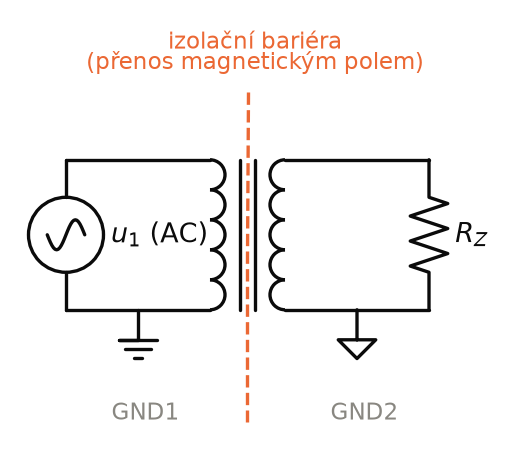
- Mezi primárním a sekundárním obvodem nevede žádný vodič – bariéra prochází jádrem.
- Napětí v sekundáru vzniká jen při změně magnetického toku. Proto musí být na primáru střídavý nebo impulzní proud.
- Zem GND1 a GND2 se nespojují – jinak by oddělení ztratilo smysl.
Podle slidu je to nejjednodušší forma galvanického oddělení (i konstrukčně). Vlastnosti:
- využitelné pro AC nebo impulzní proudy (stejnosměrný proud magnetický tok nemění, a tak nic neindukuje),
- standardně využívány pro rozvody 230 / 400 V současně s transformací U/I (oddělí a zároveň změní napětí a proud),
- možné též oddělení obvodů vysokého napětí (VN).
Nevýhody: závislost převodu na frekvenci, impedanci a výkonu; transformátor má definovaný rozsah pracovní frekvence.
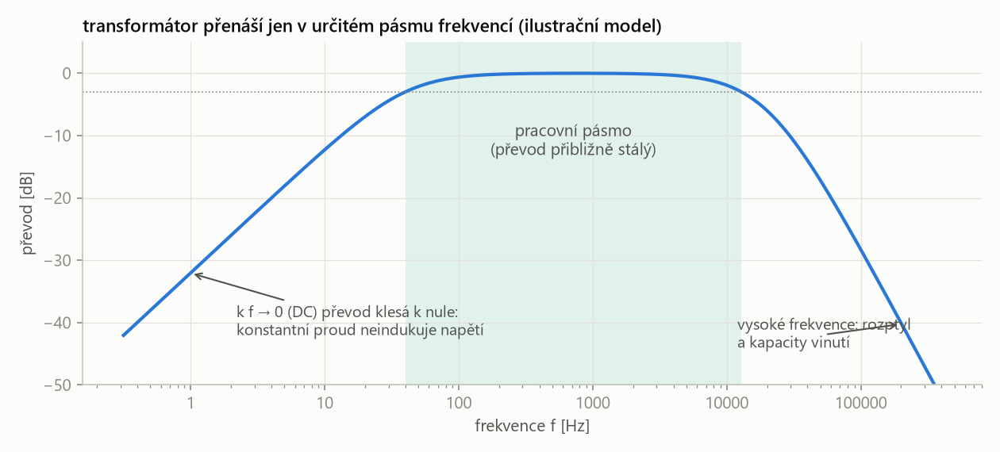
- Stejnosměrnou složku a velmi pomalé změny transformátor nepřenese – převod k nule klesá.
- Na vysokých frekvencích převod klesá také (rozptylová indukčnost a kapacity vinutí).
- Přenesený signál by tak byl zkreslený: různé frekvence by se přenesly různě. Pro biosignál s pomalými složkami (EKG od desetin Hz) je to nevhodné.
Podle použití se na slidu rozlišují:
- výkonové transformátory – napájení laboratoří, přístrojů ve zdravotnictví…,
- měřicí transformátory – oddělení měřidla od měřené soustavy (příkladem je proudový transformátor z P1),
- oddělovací transformátory – impulzní transformátory pro digitální obvody a telekomunikaci.
„Transformátorová vazba je nejjednodušší galvanické oddělení na principu elektromagnetické indukce – izolací je magnetické pole. Přenese jen AC nebo impulzní proudy. Hodí se na napájecí cestu, nikoliv na signálovou: transformátor je hodně frekvenčně závislý, převod závisí na frekvenci, impedanci a výkonu a má definovaný rozsah pracovní frekvence.“
Transformátor: indukce přes magnetické pole, jen AC a impulzy, zároveň transformuje U/I. Kvůli frekvenční závislosti spíš pro napájení než pro signál.
Izolace kapacitní vazbou
Kapacitní vazba je galvanické oddělení, při kterém se energie nebo signál přenáší přes kondenzátory: izolací je dielektrikum mezi elektrodami, které nepropustí stejnosměrný proud, zatímco střídavá složka projde přes impedanci kondenzátoru.
mezi obě strany se vloží kondenzátor. Izolant v něm (dielektrikum, např. teflon) nepustí stejnosměrný proud, ale rychle se měnící napětí „přejde“ elektrickým polem na druhou stranu.
Kondenzátorem neprochází stejnosměrný proud a jeho reaktance \(X_C\) s rostoucí frekvencí klesá. Proto se přes kapacitní bariéru přenáší střídavý průběh – stejnosměrné napětí se musí nejdřív „rozsekat“.
Na slidu je kapacitní vazba ukázaná na DC/DC obvodu MAX256:
- používá se zřídka, u DC/DC obvodů s malými výkony (do 3 W),
- spínací obvod je pouze driver pro řízení výstupního diodového „H-můstku“,
- nastavitelná frekvence oscilátoru \(f_{OSC}\) = 100 kHz až 1 MHz umožňuje využití malých kapacit, tj. současně i malých rozměrů kondenzátoru.
Schéma: princip kapacitně odděleného DC/DC podle zapojení s MAX256 na slidu (hodnoty kondenzátorů ze slidu).
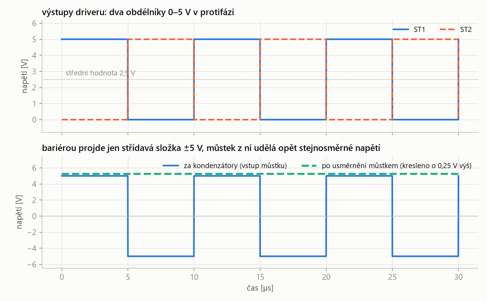
- Driver udělá ze stejnosměrného napájení dva obdélníky v protifázi. Každý má stejnosměrnou složku 2,5 V – ta přes kondenzátory neprojde.
- Za kondenzátory zbude jen střídavý obdélník ±5 V a diodový můstek ho usměrní zpět na stejnosměrné napětí.
- Energie tak přešla přes bariéru, kterou stejnosměrný proud projít nemůže.
Vazební kondenzátor má \(C = 0{,}45\ \mu\text{F}\). Jeho reaktance je:
\[ X_C = \frac{1}{2\pi f C} \]1. Při \(f_{OSC} = 100\ \text{kHz}\):
\[ X_C = \frac{1}{2\pi \cdot 10^5 \cdot 0{,}45 \cdot 10^{-6}} \approx 3{,}54\ \Omega \]2. Při \(f_{OSC} = 1\ \text{MHz}\):
\[ X_C \approx 0{,}354\ \Omega \]Energie projde s malými ztrátami i přes malý kondenzátor. Při nižší frekvenci by stejné \(X_C\) vyžadovalo úměrně větší kapacitu, a tedy větší kondenzátor.
3. Pro srovnání při síťové frekvenci \(f = 50\ \text{Hz}\):
\[ X_C = \frac{1}{2\pi \cdot 50 \cdot 0{,}45 \cdot 10^{-6}} \approx 7{,}07\ \text{k}\Omega \]Kdyby mezi oběma stranami bylo síťové napětí 230 V, tekl by bariérou proud:
\[ I = \frac{230\ \text{V}}{7{,}07\ \text{k}\Omega} \approx 32{,}5\ \text{mA} \]Pro střídavé napětí tedy taková bariéra izolací není.
Pro izolaci je využito vnitřní impedance kondenzátoru, ta však podle slidu představuje izolaci pouze pro stejnosměrné napětí, nikoliv pro střídavé. Čím vyšší frekvence, tím menší \(X_C\) a tím snáz střídavý proud bariérou projde – právě to se v DC/DC měniči využívá, ale proti střídavému rušení nebo síťovému napětí kapacitní vazba nechrání.
„U kapacitní vazby je izolací dielektrikum (např. teflon). Používá se zřídka, do malých výkonů (do 3 W) lze přenášet napájecí oddělení, signál spíš ne. Driver rozseká stejnosměrné napětí na obdélník o frekvenci 100 kHz až 1 MHz, ten projde malými kondenzátory a diodový můstek ho zase usměrní. Kondenzátor ale izoluje jen stejnosměrné napětí, střídavé ne.“
Kapacitní vazba: izolací je dielektrikum, projde jen střídavá složka. Pro DC/DC do 3 W se napětí rozseká na 100 kHz – 1 MHz (malé kondenzátory) a za bariérou usměrní. Izoluje jen DC, ne AC.
Izolace optickou vazbou
Optická vazba je galvanické oddělení využívající transformaci elektronika → optika → elektronika: vysílač (LED, IR nebo laserová dioda) převede elektrický signál na světlo a fotodetektor (fotodioda, fotoodpor nebo fototranzistor) ho převede zpět na elektrický signál; galvanickým oddělením je optická cesta.
signál se „předá světlem“. Mezi vysílačem a přijímačem je jen průhledný izolant nebo vzduch, informaci nese elektromagnetické záření – fotony, ne elektrony.
Optočlen je součástka, ve které jsou vysílač světla a fotodetektor optické vazby zapouzdřeny do jednoho integrovaného pouzdra, takže tvoří hotový galvanicky oddělující prvek.
LED a fotodetektor „naproti sobě“ v jednom malém černém pouzdru. Na jedné straně se pouzdro připojí ke vstupnímu obvodu, na druhé k výstupnímu, a uvnitř je mezi nimi jen světlo.
Vlastnosti optické vazby podle slidů:
- slouží k oddělení signálových cest,
- optický přenos (dioda / fotodetektor) je díky VA charakteristice diody, případně charakteristice polovodičového detektoru, značně nelineární,
- běžně je proto možný přenos digitálních signálů; omezeně, resp. s nutným rozšířením lze přenášet i analogový signál,
- některé optočleny svojí (složitou) topologií umožňují přenos AC i DC signálů,
- optická vazba může být libovolně dlouhá – od integrace v SMD pouzdře až po stovky metrů (optické vlákno, viz WDM v P8).
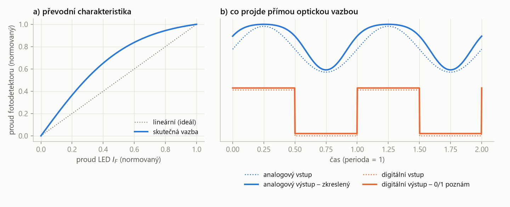
- Proud fotodetektoru není úměrný proudu LED – charakteristika je zakřivená (a navíc se mění s teplotou a stárnutím LED).
- Sinus po průchodu má „zploštělé“ vrcholy – tvar analogového signálu se zkreslí.
- U digitálního signálu stačí poznat dvě úrovně (svítí / nesvítí). Nelinearita mu nevadí, proto je optická vazba pro digitální přenos běžná.
„U optické vazby je izolantem elektromagnetické záření, přenos probíhá fotonem: elektronika → optika → elektronika, vysílá LED, přijímá fotodioda nebo fototranzistor, v jednom pouzdře je to optočlen. Je vhodná pro přenos signálu, ale přenos je kvůli VA charakteristice diody a detektoru značně nelineární, takže běžně jde digitální signál a analogový jen s rozšířením – s linearizovanou vazbou nebo s modulací.“
Optická vazba: elektronika → světlo → elektronika, libovolně dlouhá, vhodná pro signál. Je nelineární, proto přímo jen digitální signál; analogový potřebuje linearizaci nebo modulaci.
Oddělení signálových obvodů: izolační zesilovače
Analogový biosignál potřebujeme přenést přes optickou bariéru bez zkreslení. Přednáška ukazuje dvě cesty, jak obejít nelinearitu optické vazby:
- linearizovaná vazba – nelinearitu LED vyrovná zpětná vazba přes druhou fotodiodu,
- modulace – signál se převede na tvar, kterému nelinearita nevadí (PWM).
Izolační zesilovač je zesilovač, jehož vstupní a výstupní část jsou od sebe galvanicky odděleny (např. optickou vazbou) a mají oddělené země i napájení, takže přenáší analogový signál přes izolační bariéru.
zesilovač „rozříznutý“ izolační bariérou: na straně pacienta je vstupní část, na straně počítače výstupní část, a mezi nimi vede jen světlo.
Izolační zesilovač s linearizovanou vazbou
Izolační zesilovač s linearizovanou vazbou je optický izolační zesilovač, v němž jedna LED osvětluje dvě shodné fotodiody: PD1 na vstupní straně v přímé optické vazbě s LED a ve zpětné vazbě vstupního zesilovače, čímž je kompenzována nelinearita LED, a PD2 na výstupní straně za izolační bariérou, jejíž proud převádí výstupní zesilovač na napětí.
LED „svítí pro dva“. Vstupní zesilovač hlídá svou fotodiodu PD1 a nastaví LED přesně tak, aby PD1 dávala proud úměrný vstupu. Protože PD2 dostává stejné světlo, dává stejný (úměrný) proud – a ten se za bariérou převede na výstupní napětí.
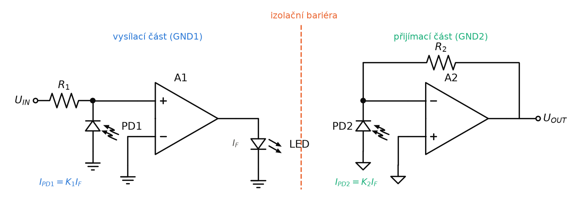
- Vysílací část = A1, PD1 a LED (zem GND1); přijímací část = PD2 a A2 (zem GND2). Mezi nimi je jen světlo.
- PD1 je fotodetektor ve zpětné vazbě A1: A1 neřídí přímo proud LED, ale to, co PD1 skutečně „vidí“.
- PD2 je zapojená jako převodník proudu na napětí (A2 s \(R_2\)): proud fotodiody teče přes \(R_2\) na výstup.
- Vstup → proud: A1 drží svůj vstup na nule (virtuální zkrat), takže rezistorem \(R_1\) teče proud \(U_{IN}/R_1\). Do vstupu OZ neteče nic, celý proud musí odvést fotodioda PD1.
- Zpětná vazba přes světlo: A1 zvětšuje proud LED tak dlouho, dokud fotoproud PD1 nebude přesně \(I_{PD1} = U_{IN}/R_1\). Pokud LED svítí málo, uzel se posune nahoru a A1 přidá; pokud moc, ubere.
- Nelinearita LED nevadí: A1 si sám najde potřebný proud \(I_F\), ať je charakteristika LED jakkoliv zakřivená. Řídí se světlem, ne proudem.
- Přenos za bariéru: PD2 je osvětlena stejnou LED, takže její proud je k \(I_{PD1}\) ve stálém poměru: \(I_{PD2} = \frac{K_2}{K_1} I_{PD1}\).
- Proud → výstup: A2 převede proud PD2 na napětí: \(U_{OUT} = I_{PD2} R_2\).
Dosazením kroků 2, 4 a 5 dostaneme:
\[ U_{OUT} = \frac{K_2}{K_1} \cdot \frac{R_2}{R_1} \cdot U_{IN} \]| \(U_{IN}\), \(U_{OUT}\) | vstupní a výstupní napětí (každé vůči své zemi) |
| \(R_1\) | vstupní rezistor, převádí \(U_{IN}\) na proud |
| \(R_2\) | rezistor ve zpětné vazbě A2, převádí proud PD2 na napětí |
| \(K_1\), \(K_2\) | přenos z LED na PD1 a na PD2 (\(I_{PD} = K\,I_F\)) |
| \(K_2/K_1\) | poměr přenosů; fotodiody jsou shodné a ve stejném pouzdře, proto je \(\approx 1\) a stálý |
Ve vzorci není proud LED \(I_F\) ani její charakteristika – proto nelinearita, teplota ani stárnutí LED výsledek neovlivní. Zbývá jen poměr dvou shodných fotodiod a poměr rezistorů. (Odvození podle katalogového listu optočlenu, na slidu jen „tím je kompenzována nelinearita LED“.)
Zadáno:
- vstupní napětí \(U_{IN} = 1\ \text{V}\),
- rezistory \(R_1 = 100\ \text{k}\Omega\) a \(R_2 = 200\ \text{k}\Omega\),
- shodné fotodiody, \(K_2/K_1 = 1\).
1. Proud PD1, který si A1 vynutí:
\[ I_{PD1} = \frac{U_{IN}}{R_1} = \frac{1\ \text{V}}{100\ \text{k}\Omega} = 10\ \mu\text{A} \]2. Proud PD2 za bariérou:
\[ I_{PD2} = \frac{K_2}{K_1}\, I_{PD1} = 10\ \mu\text{A} \]3. Výstupní napětí:
\[ U_{OUT} = I_{PD2}\, R_2 = 10\ \mu\text{A} \cdot 200\ \text{k}\Omega = 2\ \text{V} \]Zesílení je \(R_2/R_1 = 2\). Jaký proud přitom teče LED, se počítat nemusí – nastaví ho A1.
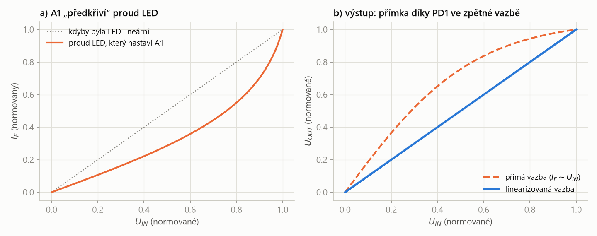
- A1 dodává LED „předkřivený“ proud – přesně takový, aby se zakřivení LED vyrovnalo (vlevo).
- Výsledný přenos \(U_{OUT}(U_{IN})\) je díky tomu přímka, zatímco přímá vazba by byla zakřivená (vpravo).
Praktické zapojení (další slide) se používá s frekvenční korekcí ve zpětné vazbě obou OZ: kondenzátor \(C_1\) ve zpětné vazbě A1 a \(C_2\) paralelně k \(R_2\) u A2. Smyčka A1 → LED → světlo → PD1 → A1 má vlastní zpoždění a bez korekce by mohla kmitat; \(C_2\) navíc omezí šířku pásma výstupu a tím i šum. LED je v praktickém zapojení připojena z \(V_{CC}\) přes \(R_3\) do výstupu A1, proto je uzel s PD1 na invertujícím vstupu – smysl zpětné vazby zůstává záporný.
- LED umí světlo jen přidávat – „záporné světlo“ neexistuje. Proud LED i fotoproud teče jen jedním směrem.
- Základní zapojení proto přenese jen kladný vstup (nebo jen záporný). Slide ukazuje čtyři varianty – kladný a záporný vstup, kladný a záporný výstup: liší se tím, jak je otočena fotodioda a kam je připojena LED.
- Pro přenos obou polarit se buď signál posune (offset), nebo se použijí dva kanály – bipolární zapojení.
Bipolární izolační zesilovač
Bipolární izolační zesilovač s linearizovanou vazbou přenáší obě polarity tak, že každá má vlastní kanál – vlastní optočlen (nebo vlákno):
Schéma: princip bipolárního izolačního zesilovače podle slidu (dva optočleny OC1, OC2, výstupní zesilovač s nastavením zesílení GAIN).
- Vstup \(U_{IN}\) jde přes potenciometr R1 (BALANCE) do dvou kanálů. Horní (OC1) zpracuje kladnou polaritu, dolní (OC2) zápornou – LED a fotodiody jsou v nich otočené opačně.
- Každý kanál je linearizovaná vazba jako výše: zesilovač s PD1 ve zpětné vazbě řídí svou LED. Diody D1, D2 ve zpětné vazbě udrží zesilovač právě nevyužité polarity ve zpětné vazbě (nevyjede do saturace), takže přechod přes nulu je plynulý.
- Za bariérou jsou fotodiody PD2 obou optočlenů zapojené proti sobě do jednoho uzlu výstupního zesilovače: proud z OC1 dává kladný výstup, proud z OC2 záporný.
- Potenciometrem BALANCE se vyrovnají obě poloviny (aby kladná i záporná měla stejný přenos), trimrem R7 (GAIN) se nastaví celkové zesílení. Kondenzátory 10 pF jsou frekvenční korekce.
„Na vstupu diferenciálního zesilovače je fotodetektor PD1 v přímé optické vazbě s LED, tím je kompenzována nelinearita LED: zesilovač nastaví LED tak, aby proud PD1 byl \(U_{IN}/R_1\). Stejná LED svítí na PD2 v přijímací části, A2 převede její proud na napětí, takže \(U_{OUT} = (K_2/K_1)(R_2/R_1)\,U_{IN}\) a charakteristika LED ve vzorci vůbec není. Základní zapojení přenese jen jednu polaritu; pro přenos obou polarit má každý kanál svůj optočlen nebo vlákno a výstupy se sečtou proti sobě.“
Linearizovaná vazba: jedna LED, dvě shodné fotodiody; PD1 ve zpětné vazbě vstupního OZ vyrovná nelinearitu LED, PD2 za bariérou dá stejný proud. \(U_{OUT} = (K_2/K_1)(R_2/R_1)\,U_{IN}\). Obě polarity = dva kanály.
Izolační zesilovač s modulovaným vstupním signálem
Druhá cesta je převést analogový signál na tvar, kterému nelinearita optické vazby nevadí. Podle slidu:
- přenos analogových signálů optickou izolační vazbou obvykle vyžaduje složitější topologii obvodů,
- analogový signál je třeba pro přenos optickou vazbou zpravidla vzorkovat a modulovat,
- spolu s obvody zajišťujícími optickou vazbu tak bývá optočlen rozšířen o část zajišťující modulaci vstupního signálu,
- nejčastěji využívanou modulací je PWM.
- Přímá optická vazba zkreslí amplitudu (kolik světla), ale spolehlivě přenese dvě úrovně – svítí / nesvítí – a okamžiky, kdy se přepínají.
- PWM nese informaci právě v čase: hodnota signálu je zakódovaná do šířky pulzu, ne do jeho výšky.
- Optočlen tak přenáší vlastně digitální signál a za bariérou se z šířky pulzů hodnota zase obnoví.
PWM – pulzně šířková modulace
Pulzně šířková modulace (Pulse Width Modulation, PWM) je modulace, při které obdélníkový signál nabývá jen dvou hodnot amplitudy, 0 (L) nebo \(U_{MAX}\) (H), jeho perioda opakování je neměnná a informace je zakódována ve střídě, tedy v šířce pulzu v rámci periody.
výška ani rytmus pulzů se nemění, mění se jen to, jak dlouho je v každé periodě signál „nahoře“. Širší pulz = větší hodnota.
Střída (činitel plnění, angl. duty cycle, DC) je poměr doby, po kterou je signál v úrovni H, k celé periodě opakování: \[ D = \frac{t_H}{T} \] Nabývá hodnot 0 % až 100 %.
jak velká část periody je „zaplněná“. Střída 50 % = půl periody nahoře, půl dole; 75 % = tři čtvrtiny nahoře; 0 % = pořád dole, 100 % = pořád nahoře.
| \(\bar u\) | střední (průměrná) hodnota PWM za periodu |
| \(t_H\) | doba úrovně H v jedné periodě (šířka pulzu) |
| \(T\) | perioda opakování (neměnná) |
| \(D\) | střída (0 až 1, tj. 0 % až 100 %) |
| \(U_{MAX}\) | amplituda úrovně H |
Střední hodnota je přímo úměrná střídě. Proto se PWM demoduluje jednoduše: dolní propust z ní „vyhladí“ střední hodnotu.
Modulace záporných napětí: PWM má jen úrovně 0 a \(U_{MAX}\), přesto jí lze modulovat i signály v záporné oblasti vstupního napětí. Pokud pro \(U_{in} = 0\ \text{V}\) bude střída 50 %, potom:
- střída \(\langle 0;\ 49 \rangle\ \%\) moduluje záporné napětí,
- střída \(\langle 51;\ 100 \rangle\ \%\) moduluje kladné napětí.
Vstupní rozsah je \(\pm 10\ \text{V}\), pro \(U_{in} = 0\ \text{V}\) je střída 50 %, pro \(+10\ \text{V}\) 100 % a pro \(-10\ \text{V}\) 0 %. Převod je lineární:
\[ D = 50\ \% + \frac{U_{in}}{20\ \text{V}} \cdot 100\ \% \]1. Pro \(U_{in} = +5\ \text{V}\):
\[ D = 50\ \% + \frac{5}{20} \cdot 100\ \% = 75\ \% \]2. Pro \(U_{in} = -5\ \text{V}\):
\[ D = 50\ \% - \frac{5}{20} \cdot 100\ \% = 25\ \% \]3. Demodulace pro \(D = 75\ \%\) a \(U_{MAX} = 5\ \text{V}\) – střední hodnota:
\[ \bar u = 0{,}75 \cdot 5\ \text{V} = 3{,}75\ \text{V} \]4. Odečteme střední hodnotu pro nulu (\(0{,}5 \cdot 5\ \text{V} = 2{,}5\ \text{V}\)) a přepočteme na vstupní rozsah:
\[ U_{in} = (3{,}75 - 2{,}5)\ \text{V} \cdot \frac{20\ \text{V}}{5\ \text{V}} = 5\ \text{V} \]Střídy 50 %, 75 % a 25 % jsou právě ty z obrázku na slidu.
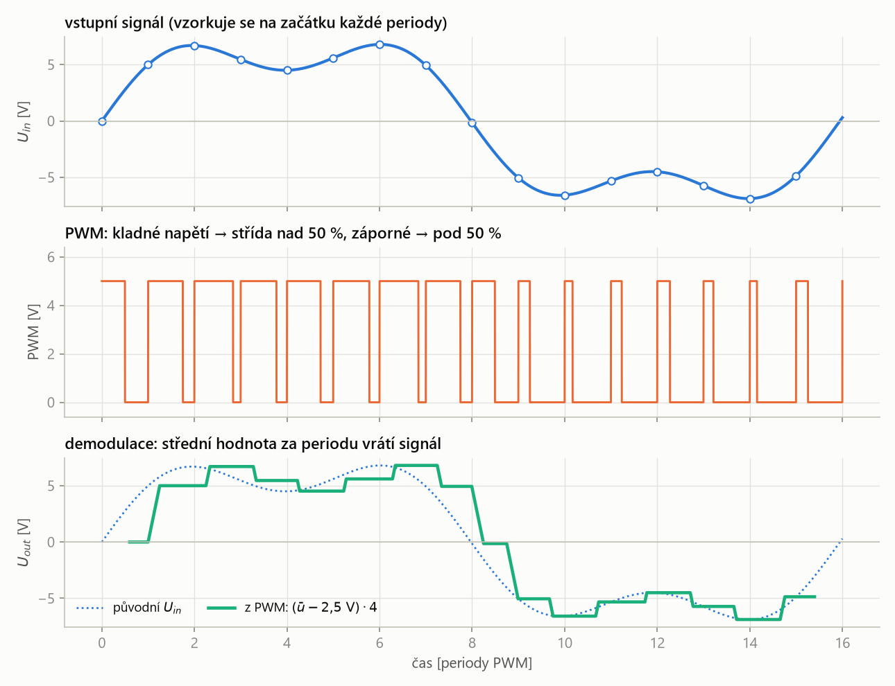
- Signál se v každé periodě navzorkuje a hodnota vzorku určí šířku pulzu – kladné napětí široký pulz, záporné úzký, nula 50 %.
- Výška pulzů je pořád stejná (0 nebo 5 V): optočlen přenáší jen „svítí / nesvítí“.
- Střední hodnota za každou periodu vrátí vzorek; signál je obnovený po schodech a s malým zpožděním. Čím kratší perioda PWM, tím jemnější schody.
PWM: amplituda jen 0 / \(U_{MAX}\), perioda stálá, informace ve střídě (0–100 %). Střední hodnota \(D \cdot U_{MAX}\); s nulou na 50 % jde kódovat i záporné napětí. Optické vazbě nelinearita nevadí.
Obecný princip využití PWM pro přenos napětí
PWM neslouží jen pro přenos signálu, ale i pro přenos energie. Řízení spínacího prvku pomocí PWM umožňuje přenos vstupního napětí na výstup impulzním spínáním.
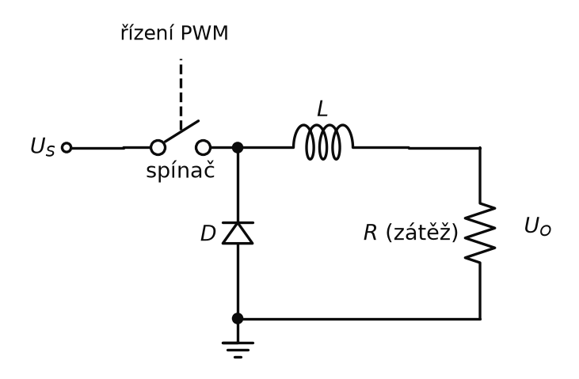
- Spínač sepnut (úroveň H): ze zdroje \(U_S\) teče proud přes cívku do zátěže a cívka si ukládá energii do magnetického pole.
- Spínač rozepnut (úroveň L): cívka „nechce“ změnit proud, a tak ho dál žene do zátěže přes diodu \(D\) (nulová dioda uzavře obvod).
- Cívka funguje jako akumulace i filtr: vyhladí obdélník na uzlu za spínačem na téměř stálé napětí.
- Výstup je tak přibližně střední hodnota spínaného napětí: \(U_O \approx D \cdot U_S\).
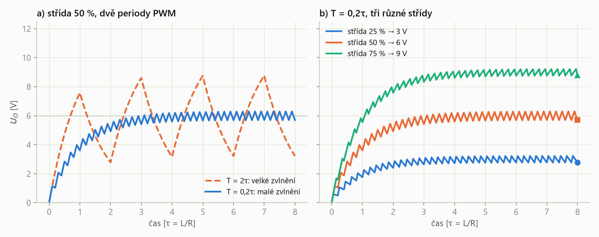
- Velikost výstupního napětí závisí na střídě: 25 % z 12 V dá 3 V, 50 % dá 6 V, 75 % dá 9 V.
- Kvalita (zvlnění) závisí na periodě: když je perioda krátká proti časové konstantě \(L/R\), cívka nestihne proud výrazně změnit a zvlnění je malé.
- Proto spínané měniče pracují na vysokých frekvencích (desítky kHz až MHz).
Spínač řízený PWM + dioda + cívka přenese na výstup střední hodnotu \(D \cdot U_S\). Velikost určuje střída, zvlnění perioda.
Oddělení napájecích obvodů: izolační DC/DC měnič
Izolační DC/DC měnič je zdroj, který ze stejnosměrného vstupního napětí vytvoří galvanicky oddělené stejnosměrné výstupní napětí: vstupní napětí se pomocí PWM spíná do impulzního transformátoru, za ním se usměrní a vyfiltruje; výstupní napětí se reguluje zpětnou vazbou přes optickou vazbu.
„baterie za bariérou“. Izolovaná část přístroje (např. vstupní část izolačního zesilovače u pacienta) potřebuje vlastní napájení, které nemá vodivé spojení se zbytkem – dodá ho právě DC/DC měnič.
Pro oddělení napájecích cest se podle slidu používají DC/DC izolační měniče. Ve skutečnosti v nich probíhá transformace přes impulzní transformátor řízená PWM, usměrnění a filtrace. Pomocí zpětné vazby optickou vazbou se detekuje výstupní napětí a upravuje režim PWM.
Schéma: princip izolačního DC/DC měniče podle slidu – energie jde přes impulzní transformátor (nahoře), informace o výstupním napětí zpět přes optočlen (dole).
- Rozsekání: PWM řadič spíná tranzistor (MOSFET), takže primárním vinutím impulzního transformátoru tečou impulzy. Stejnosměrné napětí by transformátorem neprošlo.
- Transformace: impulzní transformátor přenese energii přes izolační bariéru magnetickým polem (a případně změní velikost napětí).
- Usměrnění a filtrace: dioda za transformátorem impulzy usměrní, cívka a kondenzátor vyhladí výsledek na stejnosměrné napětí.
- Zpětná vazba: OZ porovná výstupní napětí (z děliče) s referencí Ref a podle rozdílu řídí LED optočlenu. Fototranzistor na primární straně předá informaci PWM řadiči.
- Regulace: když je výstup nízký, řadič zvětší střídu; když vysoký, zmenší ji. Výstup tak drží stálé napětí při změnách zátěže i vstupu.
- Energii přenáší transformátor – pro napájecí cestu je ideální (přenese výkon, frekvence spínání je pevná, takže frekvenční závislost nevadí).
- Informaci o výstupním napětí (signál) přenáší optočlen – pro signál je vhodnější; stačí mu nepatrný výkon.
- Obě vazby přecházejí přes stejnou bariéru, takže primární a sekundární strana nemají žádné vodivé spojení.
Dosahované parametry galvanického oddělení
Izolační napětí je nejvyšší napětí mezi oběma galvanicky oddělenými stranami, které izolační bariéra vydrží bez průrazu (obvykle se udává pro stanovenou dobu zkoušky, např. 1 minutu).
„jak vysoké napětí bariéra unese“. Udává, před jak velkým napětím oddělení ještě chrání.
| parametr | typické hodnoty (slide) |
|---|---|
| izolační napětí | typicky 600 V, 2 000 V, u některých aplikací až 5 000 V |
| účinnost DC/DC měničů | až 97 % při výkonu jednotek W |
| rozsah vstupního napětí | obvykle velký: 5–36 V (i 60 V) |
| výstupní napětí | obvykle lze i více výstupů, např. +5 V → +5 V / ±12 V |
| „military“ DC/DC měniče | \(U_{IN}\) = 9–425 V při \(\eta \approx 95\ \%\), výkon až 800 W |
„Pro oddělení napájecích cest se používají DC/DC izolační měniče. Ve skutečnosti probíhá transformace přes impulzní transformátor řízená PWM, usměrnění a filtrace. Výstupní napětí se pomocí zpětné vazby optickou vazbou detekuje a podle něj se upravuje střída PWM. Energie tedy jde magnetickým polem, informace o výstupu světlem. Izolační napětí bývá 600 V až 5 kV, účinnost až 97 %.“
Izolační DC/DC měnič: PWM → impulzní transformátor → usměrnění a filtrace; regulace zpětnou vazbou přes optočlen. Napájení a signál jsou tak oddělené oba.
Srovnání vazeb
| transformátorová | kapacitní | optická | |
|---|---|---|---|
| co tvoří izolaci | magnetické pole (jádro) | dielektrikum (např. teflon) | optická cesta (světlo, fotony) |
| co přenese | AC a impulzy | jen střídavou složku | digitální signál; analogový s linearizací nebo modulací |
| DC | ne – nejdřív rozsekat (PWM) | ne – nejdřív rozsekat (driver) | některé optočleny AC i DC |
| hlavní slabina | frekvenční závislost převodu | izoluje jen DC, ne AC | nelinearita LED a detektoru |
| typické použití | napájení (230 / 400 V, DC/DC), VN | DC/DC malých výkonů (do 3 W) | signál; zpětná vazba DC/DC |
„Transformátor odděluje magnetickým polem, přenese AC a impulzy a hodí se na napájení, ne na signál, protože je frekvenčně závislý. Kondenzátor odděluje dielektrikem, přenese jen střídavou složku a izoluje jen DC – používá se zřídka u DC/DC do 3 W. Optická vazba přenáší světlem a je vhodná pro signál; je nelineární, proto analogový signál potřebuje linearizovanou vazbu nebo modulaci PWM.“
Shrnutí
Galvanické oddělení je prostředek zajišťující prevenci toku nežádoucích proudů mezi dvěma částmi obvodu. V běžném stavu mají obvody společnou zem a teče mezi nimi jen „správný“ proud; když jeden obvod zasáhne vysoké napětí, mohou společnou cestou téct nebezpečné proudy (DC i AC). Oddělení chrání drahé a citlivé obvody, brání úrazu a přerušuje zemní smyčky. Izolovat se musí signálová i napájecí část a oddělit se musí i země.
Transformátorová vazba je nejjednodušší, pracuje na principu elektromagnetické indukce a přenese jen AC nebo impulzní proudy; kvůli závislosti převodu na frekvenci, impedanci a výkonu je vhodná pro napájení, ne pro signál. Kapacitní vazba má jako izolant dielektrikum a používá se zřídka u DC/DC do 3 W: driver rozseká napětí na 100 kHz – 1 MHz (malé kondenzátory), za bariérou ho diodový můstek usměrní; izoluje jen DC, ne AC. Optická vazba převádí elektroniku na světlo a zpět, v jednom pouzdře jako optočlen, a hodí se pro signál; je však značně nelineární, proto běžně přenáší digitální signály.
Analogový signál přenese izolační zesilovač s linearizovanou vazbou: jedna LED svítí na dvě shodné fotodiody, PD1 ve zpětné vazbě vstupního OZ kompenzuje nelinearitu LED a za bariérou platí \(U_{OUT} = (K_2/K_1)(R_2/R_1)\,U_{IN}\); obě polarity vyžadují dva kanály. Druhou cestou je modulace, nejčastěji PWM: amplituda jen 0 / \(U_{MAX}\), stálá perioda, informace ve střídě (0–100 %, s nulou na 50 % i pro záporné napětí). PWM řízený spínač s cívkou a diodou přenese i napětí (\(U_O \approx D\,U_S\), zvlnění dle periody). Izolační DC/DC měnič přenáší energii impulzním transformátorem řízeným PWM, usměrní a vyfiltruje ji a reguluje výstup zpětnou vazbou přes optočlen.
Take-home messages
- Galvanické oddělení brání toku nežádoucích proudů; oddělit se musí signál, napájení i země.
- Tři vazby: magnetické pole (transformátor), dielektrikum (kondenzátor), světlo (optická).
- Transformátor a kondenzátor nepřenesou DC – stejnosměrné napětí se musí nejdřív rozsekat.
- Transformátor je frekvenčně závislý → napájení, ne signál; kondenzátor izoluje jen DC.
- Optická vazba je vhodná pro signál, ale nelineární → přímo jen digitální signál.
- Linearizovaná vazba: PD1 ve zpětné vazbě vyrovná LED, \(U_{OUT} = (K_2/K_1)(R_2/R_1)\,U_{IN}\).
- PWM: informace ve střídě, střední hodnota \(D \cdot U_{MAX}\); nelinearita optočlenu jí nevadí.
- Izolační DC/DC: PWM → impulzní transformátor → usměrnění a filtrace, regulace přes optočlen.
Otázky ke zkoušce
Co je galvanické oddělení, proč je potřeba a co všechno se musí oddělit?
Galvanické oddělení je prostředek zajišťující prevenci toku nežádoucích proudů mezi dvěma částmi obvodu – signál nebo energie se přenese přes izolační bariéru bez vodivého spojení.
V běžném stavu mají obvody společnou zem a tečou mezi nimi jen „správné“ proudy. Když jeden obvod zasáhne vysoké napětí, potenciály se liší a mezi obvody mohou téct nebezpečné proudy (DC i AC): v lepším případě chyby, v horším nebezpečné provozní podmínky.
Smysl: ochrana drahých a citlivých obvodů, prevence úrazu elektrickým proudem, přerušení zemní smyčky. Izolovat je třeba signálovou i napájecí část a oddělit i země obou obvodů.
Vysvětlete princip transformátorové vazby. Jaké má vlastnosti a nevýhody a na co se hodí?
Transformátorová vazba je nejjednodušší galvanické oddělení na principu elektromagnetické indukce: proměnný proud v primáru vytvoří proměnný magnetický tok, který v sekundáru indukuje napětí. Vinutí nejsou vodivě spojena, izolací je magnetické pole.
- Přenese jen AC nebo impulzní proudy (DC tok nemění, nic neindukuje).
- Standardně pro rozvody 230 / 400 V současně s transformací U/I, i pro oddělení VN.
- Nevýhody: závislost převodu na frekvenci, impedanci a výkonu, definovaný rozsah pracovní frekvence.
Proto se hodí na napájecí cestu, ne na signálovou. Druhy: výkonové, měřicí (oddělení měřidla od soustavy) a oddělovací (impulzní) transformátory.
Jak funguje izolace kapacitní vazbou v DC/DC obvodu? Proč vysoká frekvence a proč kondenzátor neizoluje střídavé napětí?
Izolací je dielektrikum kondenzátoru (např. teflon), které nepropustí stejnosměrný proud. Driver rozseká stejnosměrné napájení na dva obdélníky v protifázi s frekvencí \(f_{OSC}\) = 100 kHz až 1 MHz. Přes vazební kondenzátory projde jen střídavá složka a výstupní diodový „H-můstek“ ji usměrní, kondenzátor vyfiltruje.
Vysoká frekvence dává malou reaktanci i malým kondenzátorům: pro 0,45 µF je
\[ \begin{aligned} f = 100\ \text{kHz}: &\quad X_C \approx 3{,}5\ \Omega \\ f = 50\ \text{Hz}: &\quad X_C \approx 7{,}1\ \text{k}\Omega \end{aligned} \]Vnitřní impedance kondenzátoru izoluje jen stejnosměrné napětí – střídavé projde, a čím vyšší frekvence, tím snáz. Používá se zřídka, do malých výkonů (do 3 W) pro napájení, pro signál spíš ne.
Popište optickou vazbu a optočlen. Proč se přes ni běžně přenáší digitální signál a analogový jen omezeně?
Optická vazba využívá transformaci elektronika → optika → elektronika: vysílá LED, IR nebo laserová dioda, přijímá fotodioda, fotoodpor nebo fototranzistor. Galvanickým oddělením je optická cesta, izolantem je elektromagnetické záření (přenos fotonem). Zapouzdřená do jednoho pouzdra tvoří optočlen; může být i libovolně dlouhá (až stovky metrů vláknem).
Přenos je díky VA charakteristice diody a charakteristice detektoru značně nelineární. Digitálnímu signálu to nevadí (stačí rozlišit svítí / nesvítí), analogový by se zkreslil – potřebuje rozšíření: linearizovanou vazbu nebo modulaci (PWM).
Jak izolační zesilovač s linearizovanou vazbou kompenzuje nelinearitu LED? Odvoďte jeho přenos.
Jedna LED osvětluje dvě shodné fotodiody. Vysílací část: na vstupu zesilovače A1 je fotodetektor PD1 v přímé optické vazbě s LED. A1 drží vstup na virtuální nule, takže proud \(U_{IN}/R_1\) musí odvést PD1. A1 nastaví proud LED tak, aby:
\[ I_{PD1} = \frac{U_{IN}}{R_1} \]Přijímací část: PD2 za bariérou dostává stejné světlo, \(I_{PD2} = (K_2/K_1)\,I_{PD1}\), a A2 ho převede na napětí \(U_{OUT} = I_{PD2} R_2\). Celkem:
\[ U_{OUT} = \frac{K_2}{K_1} \cdot \frac{R_2}{R_1} \cdot U_{IN} \]Charakteristika LED ve vzorci není – A1 se řídí světlem, ne proudem, a nelinearitu LED tím kompenzuje. \(K_2/K_1 \approx 1\) je stálé, protože fotodiody jsou shodné. V praxi se přidává frekvenční korekce (kondenzátory) ve zpětné vazbě obou OZ.
Proč základní izolační zesilovač s linearizovanou vazbou přenese jen jednu polaritu a jak se přenášejí obě?
LED umí světlo jen přidávat, proud LED i fotoproud tečou jen jedním směrem. Zapojení proto přenese buď kladný, nebo záporný vstup – podle toho, jak je otočena fotodioda a kam je připojena LED (varianty kladný / záporný vstup a výstup).
Bipolární zapojení má pro každou polaritu vlastní kanál – vlastní optočlen (nebo vlákno). Horní kanál (OC1) zpracuje kladnou, dolní (OC2) zápornou polaritu; diody ve zpětné vazbě drží nevyužitý zesilovač mimo saturaci. Za bariérou jsou fotodiody PD2 zapojené proti sobě do uzlu výstupního zesilovače, takže výstup má obě polarity. Potenciometr BALANCE vyrovná obě poloviny, GAIN nastaví zesílení.
Co je PWM a střída? Jak se modulují záporná napětí a proč se PWM hodí pro optickou izolační vazbu?
PWM je modulace, při které amplituda nabývá jen hodnot 0 (L) nebo \(U_{MAX}\) (H), perioda opakování je neměnná a informace je ve střídě. Střída (činitel plnění, duty cycle) je podíl doby úrovně H a periody:
\[ D = \frac{t_H}{T} \]nabývá 0 až 100 %; střední hodnota PWM je \(D \cdot U_{MAX}\), demoduluje se dolní propustí.
Záporná napětí: pro \(U_{in} = 0\ \text{V}\) se zvolí střída 50 %; střída 0–49 % pak moduluje záporné, 51–100 % kladné napětí.
Optická vazba je nelineární v amplitudě, ale spolehlivě přenese dvě úrovně a okamžiky přepnutí. PWM má informaci v šířce pulzu, ne ve výšce, takže nelinearita jí nevadí. Analogový signál se proto vzorkuje a moduluje – optočlen bývá rozšířen o modulační část.
Vysvětlete princip izolačního DC/DC měniče. Jak se reguluje výstupní napětí?
DC/DC izolační měnič slouží k oddělení napájecích cest. Stejnosměrné napětí by transformátorem neprošlo, proto ho PWM řadič spíná tranzistorem do impulzního transformátoru; ten přenese energii přes bariéru. Za ním se impulzy usměrní (dioda) a vyfiltrují (LC).
Regulace: OZ na výstupní straně porovná výstupní napětí (z děliče) s referencí a řídí LED optočlenu. Fototranzistor na vstupní straně předá informaci PWM řadiči, který podle ní mění střídu (obecně \(U_O \approx D\,U_S\)). Energie jde magnetickým polem, informace o výstupu světlem – obě strany zůstanou galvanicky oddělené.
Typicky: izolační napětí 600 V až 5 kV, účinnost až 97 % při jednotkách W, vstup 5–36 V.
Tahák ke zkoušce: vzorce, schémata a chytáky
Stránka na poslední opakování před zkouškou: nejdřív základy, na kterých stojí všechny přednášky, pak to hlavní z každé přednášky. Odkaz u každé části vede na podrobný výklad v kapitole.
Základy (připomenuté v přednáškách)
Obvody a dělič (P1)
| co | vzorec | poznámka |
|---|---|---|
| Ohmův zákon, výkon | \(U = R\,I\), \(P = U\,I\) | kΩ · mA = V |
| sériově / paralelně | \(R_1 + R_2\) / \(\frac{R_1 R_2}{R_1 + R_2}\) | paralelně menší než nejmenší |
| Kirchhoffovy zákony | \(\sum I_\text{dovnitř} = \sum I_\text{ven}\), \(\sum U = 0\) | zachování náboje / energie |
| dělič nezatížený | \(U_2 = U_1 \frac{R_2}{R_1 + R_2}\) | stejný proud oběma R |
| dělič zatížený | \(R_2 \to R_2 \parallel R_\text{z}\) | \(R_\text{z} \geq 10\times\) → chyba < 5 % |
| měkký zdroj | \(U = U_e - R_i I\) | vstupní odpor přístroje \(\to \infty\) |
Operační zesilovač (P1)
- \(U_+ = U_-\) (virtuální zkrat – jen se zápornou zpětnou vazbou a mimo saturaci).
- Do vstupů OZ neteče proud.
- 1. KZ v uzlu invertujícího vstupu + Ohmův zákon → vyjádři \(U_\text{výst}\).
| zapojení | výstup / zesílení | poznámka |
|---|---|---|
| invertující | \(A = -\frac{R_2}{R_1}\) | inverze, i zeslabení; \(R_\text{vst} = R_1\) |
| neinvertující | \(A = 1 + \frac{R_2}{R_1}\) | ZV = dělič; \(A \geq 1\); \(R_\text{vst} \approx \infty\) |
| sledovač | \(U_\text{výst} = U_\text{vst}\) | oddělovač: \(R_\text{vst} \approx \infty\), \(R_\text{výst} \approx 0\) |
| rozdílový | \(\frac{R_2}{R_1}(U_2 - U_1)\) | jen při \(R_4/R_3 = R_2/R_1\); malý \(R_\text{vst}\) |
| přístrojový | \(\left(1 + \frac{2R}{R_G}\right)\frac{R_2}{R_1}\) | zesílení jedním \(R_G\), vysoké CMRR |
| CMRR | \(20 \log_{10} \frac{A_d}{A_s}\) | \(A_s = A_d / 10^{\text{CMRR}_\text{dB}/20}\) |
| integrátor (P4) | \(-\frac{1}{RC}\int u_\text{vst}\,dt\) | R vstup, C ve ZV; obdélník → trojúhelník |
| derivátor (P4) | \(-RC\,\frac{du_\text{vst}}{dt}\) | C vstup, R ve ZV; trojúhelník → obdélník |
Decibely a RC filtry (P2, P5)
| co | vzorec | poznámka |
|---|---|---|
| decibely | \(20\log_{10}|H|\) | 0,707 → −3 dB; 0,1 → −20 dB; 1000 → +60 dB |
| reaktance C | \(X_C = \frac{1}{2\pi f C}\) | nízké f: rozpojeno, vysoké f: zkrat |
| mezní frekvence RC | \(f_c = \frac{1}{2\pi R C}\) | \(X_C = R\), −3 dB, fáze ∓45° |
| DP / HP | výstup na C / výstup na R | sklon \(n \cdot 20\) dB/dek = \(n \cdot 6\) dB/okt |
| pásmová propust | \(B = f_h - f_d\), \(f_0 = \sqrt{f_d f_h}\) | HP + DP za sebou |
| pásmová zádrž (dvojitý T) | \(f_0 = \frac{1}{2\pi R C}\) | příčně \(R/2\) a \(2C\) |
P1 · Signál a jeho převod na napětí (kapitola)
| co | vzorec | poznámka |
|---|---|---|
| akviziční cesta | převodník → úprava → (MPX, galvanické oddělení) → A/D převod | |
| převodník I/U s OZ | \(U_2 = -i_1 R\) | invertující bez \(R_1\); bez úbytku napětí |
| snímací rezistor | \(U = R_\text{SENSE} I\), \(P = R_\text{SENSE} I^2\) | high-side u napájení, low-side u země |
| proudový transformátor | \(I_S = I_P \frac{N_P}{N_S}\) | proudy se transformují obráceně než napětí |
| převodník f/U | \(u_0 = 2\,U_\text{SAT} C_1 R_A f\) | z \(Q_1 = 2C_1U_\text{SAT}\) a \(Q_2 = u_0 T/R_A\) |
| měření odporu s OZ | \(U_X = -\frac{R_X}{R_N} U_\text{REF}\) | konstantní proud \(I_N = U_\text{REF}/R_N\) |
| Wheatstoneův můstek | \(R_X = \frac{R_3 R_2}{R_1}\) | vyvážený: \(R_1/R_2 = R_3/R_X\) |
P2 · Tranzistorové zesilovače a reálný OZ (kapitola)
| co | vzorec | poznámka |
|---|---|---|
| bipolární tranzistor | \(i_C = \beta\, i_B\) | ze slidu β = 384 |
| SE s děličem a \(R_4\) | \(A_u = -\frac{R_3}{R_4}\) | pracovní bod drží dělič a \(R_4\), ne β |
| SC, Darlington | \(A_u \approx 1\), \(\beta \approx \beta_1 \beta_2\) | emitorový sledovač posílí proud |
| laděný zesilovač | \(f_0 = \frac{1}{2\pi\sqrt{LC}}\) | paralelní LC v kolektoru |
| slew rate | \(f_\text{max} = \frac{SR}{2\pi U_p}\) | obvykle 10 V/µs; jinak sinus → trojúhelník |
| šířka pásma se ZV | \(f_M = \frac{\text{GBW}}{A}\) | zisk × šířka pásma = konst. |
| −3 dB | \(20\log\frac{\sqrt2}{2} = -3{,}01\) dB | polovina výkonu, napětí 0,707 |
| komparátor | OZ bez ZV, výstup \(\pm U_\text{SAT}\) | stačí rozdíl desítek µV |
P3 · Napájení a reference (kapitola)
| co | vzorec | poznámka |
|---|---|---|
| chyba v ppm | \(\Delta U = U_\text{REF} \cdot \text{ppm} \cdot 10^{-6}\) | počáteční přesnost → kalibrace |
| dlouhodobá stabilita | \(\text{drift}(t) = k\sqrt{t}\) | \(t\) v kHr; 10 let ≠ 10× rok |
| proč 1,024 V | \(1{,}024\ \text{V} / 1024 = 1\ \text{mV}\) | celé milivolty na úroveň |
| stabilizátor se ZD a OZ | \(U_0 = \left(1 + \frac{R_2}{R_1}\right) U_{ZD}\) | neinvertující zesilovač reference |
| proudové omezení | \(I_{OMAX} = \frac{U_{R_I}}{R_I}\) | \(U_{R_I} \approx 0{,}5\) V otevře \(T_3\) |
| vlečný zdroj | \(U_{o2} = -U_{o1}\) | invertor se ziskem −1 (330k/330k) |
| zdroj proudu | \(I_o \approx \frac{U_\text{REF}}{R_1}\) | ideálně nekonečný výstupní odpor |
P4 · Integrátor, derivátor, usměrňovač (kapitola)
| co | vzorec | poznámka |
|---|---|---|
| Millerův integrátor | \(-\frac{1}{RC}\int u_i\,dt + u_o(0)\) | C = analogová paměť; nulování tranzistorem |
| neinvertující / diferenční | \(+\frac{1}{RC}\int u_i\,dt\) / \(\frac{1}{RC}\int (u_2 - u_1)\,dt\) | |
| zisk integrátoru / derivátoru | \(\frac{1}{\omega RC}\) / \(\omega RC\) | −6 / +6 dB na oktávu |
| ošetřený derivátor | \(\omega_K = \frac{1}{R_1 C} = \frac{1}{R C_1}\) | \(R_1\) do série s C, \(C_1\) paralelně k R |
| precizní usměrňovač | práh \(U_D / A\) | dioda ve ZV se chová jako ideální |
| dvoucestný usměrňovač | \(u_o = |u_i|\) | VA charakteristika ve tvaru V |
| vrcholový detektor | \(u_C = \max u_i\) | D + C drží maximum, sledovač, obnovení nuly přes \(R_V\) |
P5 · Aktivní filtry (kapitola)
| co | vzorec | poznámka |
|---|---|---|
| strmost | \(n \cdot 6\) dB/okt = \(n \cdot 20\) dB/dek | \(A_\text{dek} \approx 3{,}32 \cdot A_\text{okt}\) |
| normovaná DP | \(\frac{A_0}{1 + a_1 s + b_1 s^2}\) | HP: \(s \to 1/s\) = záměna R a C |
| Sallen-Key / MFB | neinvertující, kladná ZV / invertující, dvě zpětné vazby | |
| činitel jakosti | \(Q = \frac{f_m}{B} = \frac{1}{\Delta\Omega}\) | úzká propust / zádrž = velké Q |
| aktivní dvojitý T | \(Q = \frac{1}{2(2 - G)}\) | \(G = 1 + R_2/R_1\); zádrž 50 Hz |
| aproximace | Butterworth: ploché pásmo · Čebyšev: strmost se zvlněním · Bessel: lineární fáze | |
P6 · Komparátor, omezovač, A/D převod (kapitola)
| co | vzorec | poznámka |
|---|---|---|
| precizní omezovač | \(u_o = u_i\) do meze \(U_\mathrm{REF}\) | ZV za diodou; obrácená dioda = druhá strana |
| Zenerky v můstku | \(\pm(U_Z + 2U_D)\) | symetrické meze |
| chyba přeběhu komparátoru | \(U_\mathrm{SAT}/A_u\) | rušení u prahu → falešná překlopení |
| Schmittův KO | \(U_H = (U_\mathrm{SAT}^+ - U_\mathrm{SAT}^-)\frac{R_1}{R_1 + R_2}\) | \(U_\mathrm{REF}\) jen posouvá střed prahů |
| kvantizační krok | \(q = \frac{U_\mathrm{REF}}{2^n}\) | vzorkování = čas, kvantování = amplituda |
| flash ADC | \(2^n - 1\) komparátorů | termometrický kód → kodér; nejrychlejší |
P7 · A/D a D/A převodníky (kapitola)
| co | vzorec | poznámka |
|---|---|---|
| DAC R–2R | \(U_o = -\frac{U_\mathrm{REF} R_f}{R}\sum \frac{B_i}{2^{n-i}}\) | jen \(R\) a \(2R\); váhový DAC: \(R, 2R, 4R, \dots\) |
| half-flash | \(2(2^{n/2} - 1)\) komparátorů | flash MSB → DAC → odečíst → flash LSB; 8 bitů: 30 místo 255 |
| single slope | \(T = RC\,\frac{U_\mathrm{IN}}{U_\mathrm{REF}}\) | pila + komparátor + AND + čítač; závisí na \(RC\) |
| dual slope | \(T_2 = T_1\,\frac{U_\mathrm{IN}}{U_\mathrm{REF}}\) | \(R\), \(C\) se vykrátí; \(|U_\mathrm{REF}| > |U_\mathrm{IN}|\) |
| counter, tracking, single slope | \(T_{C(\mathrm{MAX})} = (2^n - 1)T_\mathrm{CLK}\) | čas závisí na \(U_\mathrm{IN}\); tracking: náběh, ±1 LSB |
| postupná aproximace | \(T_C = n\,T_\mathrm{CLK}\) | půlení intervalů, bit za takt od MSB |
P8 · Multiplexace signálů (kapitola)
| co | vzorec / princip | poznámka |
|---|---|---|
| MUX / DEMUX | \(n\) adresových bitů → \(2^n\) vstupů | stejná adresa na obou stranách (synchronizace) |
| TDM | pevné časové okno, celé pásmo | ostatní blokovány → přeslech minimální; analogový signál se rozseká |
| FDM | současně, každý kanál své pásmo | omezené pásmo, přeslechy → ochranná pásma; analogové signály |
| WDM | každá vlnová délka jeden signál, hranol, optické vlákno | příbuzné FDM; zároveň galvanické oddělení |
| analogový MPX s OZ | \(u_o \approx -\frac{R_3}{R_2}\,u_k\) | tranzistory k zemi sepnuty = nulují; výběr = rozepnutí; sledovač |
| chyba „nuly“ | \(u_{o(0)} \cong u_i\,\frac{R_{X_1}}{R_1}\) | 100 Ω / 10 kΩ → 1 %; odstraní sériově-paralelní spínač |
P9 · Galvanické oddělení (kapitola)
| co | vzorec / princip | poznámka |
|---|---|---|
| galvanické oddělení | prevence toku nežádoucích proudů | oddělit signál, napájení i země |
| transformátorová vazba | indukce, izolace = magnetické pole | jen AC a impulzy; frekvenčně závislá → napájení |
| kapacitní vazba | izolace = dielektrikum; \(X_C = \frac{1}{2\pi f C}\) | DC/DC do 3 W, 100 kHz – 1 MHz; izoluje jen DC |
| optická vazba | elektronika → světlo → elektronika | nelineární → přímo jen digitální; optočlen |
| linearizovaná vazba | \(U_{OUT} = \frac{K_2}{K_1}\,\frac{R_2}{R_1}\,U_{IN}\) | PD1 ve ZV kompenzuje LED; obě polarity = 2 kanály |
| PWM, střída | \(D = \frac{t_H}{T}\), \(\bar u = D\,U_{MAX}\) | 0 V ↔ 50 %; pod 50 % záporné, nad 50 % kladné |
| přenos napětí PWM | \(U_O \approx D\,U_S\) | velikost = střída, zvlnění = perioda |
| izolační DC/DC | PWM → impulzní trafo → usměrnění, filtrace | regulace zpětnou vazbou přes optočlen |
Nejčastější chytáky
- Neinvertující zesílení je \(1 + R_2/R_1\), invertující \(-R_2/R_1\) (se znaménkem).
- Virtuální zkrat platí jen se zápornou zpětnou vazbou; komparátor (bez ZV) a Schmittův KO (kladná ZV) ho nemají.
- Saturace: výstup OZ nepřekročí napájení, ať vzorec dá cokoliv.
- −3 dB = polovina výkonu, ale napětí 0,707; poloviční napětí je −6 dB.
- dB u napětí (zesílení, CMRR) vždy \(20\log\), u výkonu \(10\log\).
- \(f_c\) vs. \(\omega_c\): \(f_c = 1/(2\pi RC)\) v Hz, \(\omega_c = 1/(RC)\) v rad/s.
- Dolní vs. horní propust: rozhoduje, na které součástce je výstup – na C = dolní, na R = horní.
- Pásmová propust = filtry za sebou; zádrž = vedle sebe nebo dvojitý T.
- Zatížený dělič: zátěž je paralelně k \(R_2\); biozdroj je měkký, proto velký vstupní odpor.
- Převodník f/U: ve výsledku je \(R_A\) (vybíjecí), ne \(R_1\) – výsledek odvoď z rovnosti nábojů.
- Dlouhodobá stabilita roste s \(\sqrt{t}\), ne lineárně.
- Analogový MPX: tranzistor je k zemi a kanál se vybere jeho rozepnutím, ne sepnutím; analogový MUX přenese i logiku, digitální ne.
- TDM vs. FDM: TDM má celé pásmo a minimální přeslech, FDM současný přenos, ale omezené pásmo a přeslechy.
- Kondenzátor jako bariéra izoluje jen DC, ne AC; transformátor ani kondenzátor stejnosměrné napětí nepřenesou – musí se rozsekat.
- Linearizovaná vazba: nelinearitu LED kompenzuje PD1 ve zpětné vazbě vstupního OZ; v přenosu je jen \(K_2/K_1\) a \(R_2/R_1\), ne charakteristika LED.
Slovník pojmů
Všechny definice ze skript na jednom místě, seřazené podle kapitol. Hodí se na rychlé opakování: zakryj text, řekni definici nahlas a pak si ji zkontroluj. Odkaz „výklad“ vede k místu, kde je pojem vysvětlen podrobně.
P1 · Úvod: signál a jeho převod na napětí
Akviziční cesta (měřicí řetězec) je posloupnost bloků, kterými prochází signál od snímané fyzikální veličiny až po číslicová data v počítači: fyzikální převodník, úprava signálu, případně multiplexace a galvanické oddělení, a analogově-digitální převod.
„trubka“, kterou teče signál z pacienta do počítače. Každý blok má jednu práci: převést, zesílit a vyčistit, přepínat kanály, oddělit pacienta od sítě, převést na čísla.
Fyzikální převodník (senzor) je první blok akviziční cesty, který převádí měřenou fyzikální veličinu (teplotu, tlak, proud iontů, světlo…) na veličinu elektrickou – nejlépe na napětí.
„tlumočník“ mezi světem fyziky a elektronikou. Za ním už všechno zpracovávají elektrické obvody.
Úprava signálu je blok akviziční cesty mezi převodníkem a A/D převodem, který signál zesílí, odfiltruje rušení a přizpůsobí jeho rozsah vstupu převodníku.
signál ze senzoru je slabý a zarušený; úprava z něj udělá „čisté“ napětí ve správném rozsahu. Stavebními kameny jsou zesilovače s OZ (P2, P4) a filtry (P5).
Multiplexace (MPX) je proces, který kombinuje více analogových signálů nebo více digitálních datových toků do jednoho signálu na společné cestě (vodič, převodník, kanál přenosu), aby se tato cesta efektivně využila. Nejčastěji jde o postupné přepínání vstupů, kdy se signály o cestu dělí v čase.
jeden A/D převodník nebo jeden přenosový kanál obslouží víc signálů tím, že je „obchází“ jeden po druhém. Podrobně v přednášce P8.
Galvanické oddělení je přenos signálu mezi dvěma částmi obvodu bez vodivého (galvanického) spojení – např. opticky, magneticky nebo kapacitně – takže mezi nimi nemůže protékat proud.
signál „přeskočí“ přes izolační bariéru, ale proud ne. U zdravotnických přístrojů tak chrání pacienta před proudem ze sítě a přerušuje rušivé zemní smyčky.
Signál je záměrný fyzikální jev nesoucí informaci. V (elektro)technice jde o sled informací v čase.
signál je „nosič“ informace – průběh nějaké veličiny v čase, ze kterého něco vyčteme (např. z EKG srdeční rytmus). Pro snímání a zpracování je nejvhodnějším nosičem elektrické napětí.
Analogový, též spojitý signál nabývá nespočetného počtu hodnot.
amplituda může být jakékoliv reálné číslo v daném rozsahu – mezi dvěma hodnotami vždy leží další. Takové jsou signály v analogových obvodech.
Číslicový, též diskrétní signál nabývá spočetného počtu hodnot, tj. jeho hodnoty lze očíslovat, vyjádřit celými čísly a zakódovat do posloupnosti celých čísel.
amplituda smí mít jen některé hodnoty („schody“) – každou lze zapsat jako celé číslo, se kterým už umí pracovat počítač.
Signál se spojitým časem je signál, jehož definičním oborem je časový interval.
hodnotu signálu známe v každém okamžiku – \(x(t)\) pro libovolné \(t\).
Posloupnost je signál, jehož definičním oborem je spočetná množina hodnot času; nejčastěji jsou to okamžiky, ve kterých je signál určen vzorkováním.
hodnotu známe jen v jednotlivých okamžicích (vzorcích) – \(x(n)\), kde \(n\) je pořadové číslo vzorku.
Tvrdý zdroj je zdroj s malým vnitřním odporem, jehož svorkové napětí se se zatěžovacím proudem mění jen málo. Měkký zdroj má velký vnitřní odpor a jeho svorkové napětí s odebíraným proudem výrazně klesá. Ideální zdroj napětí má nulový vnitřní odpor a stálé napětí \(U_e\) při jakémkoliv proudu.
tvrdý zdroj „vydrží“ zátěž, měkký se pod zátěží „prohne“. Biosignály jsou měkké zdroje – jakýkoliv větší odběr proudu by změnil tvar měřeného signálu.
Ohmův zákon říká, že proud procházející rezistorem je přímo úměrný napětí na rezistoru a nepřímo úměrný jeho odporu: \(I = U/R\), neboli \(U = R \cdot I\).
dvojnásobné napětí na stejném rezistoru = dvojnásobný proud; dvojnásobný odpor při stejném napětí = poloviční proud. Stačí znát dvě ze tří veličin a třetí dopočítám.
Elektrický výkon \(P\) je práce (energie), kterou elektrický proud vykoná za jednotku času. Na součástce je roven součinu napětí na součástce a proudu, který jí protéká: \[ P = U \cdot I \] Jednotkou je watt (W = V · A).
kolik energie za sekundu součástka spotřebuje – v rezistoru se celá mění na teplo. Po dosazení Ohmova zákona platí i \(P = R \cdot I^2 = U^2/R\), takže stačí znát dvě ze tří veličin. Rezistor z příkladu výše (9 V na 4,7 kΩ) hřeje výkonem asi 17 mW.
1. Kirchhoffův zákon říká, že algebraický součet proudů v každém uzlu je roven nule: \(\sum I_k = 0\). Proudy do uzlu vtékající bereme s jedním znaménkem, vytékající s opačným.
kolik proudu do uzlu přiteče, tolik z něj musí odtéct – náboj se v uzlu nehromadí ani neztrácí (zákon zachování náboje).
2. Kirchhoffův zákon říká, že algebraický součet všech napětí podél libovolné uzavřené smyčky je roven nule: \(\sum U_k = 0\). Napětí zdrojů a úbytky napětí na součástkách bereme se znaménkem podle zvoleného směru oběhu.
když obejdu smyčku a vrátím se na start, jsem na stejném potenciálu – kolik napětí zdroje „dodají“, tolik se ho na součástkách „spotřebuje“ (zákon zachování energie).
Dělič napětí je zapojení dvou sériově řazených rezistorů \(R_1\) a \(R_2\) připojených ke vstupnímu napětí \(U_1\); výstupní napětí \(U_2\) se odebírá z jednoho z rezistorů (\(R_2\)) a je částí vstupního napětí v poměru odporů. Nezatížený dělič je takový, z jehož výstupu se neodebírá žádný proud.
dva rezistory za sebou si rozdělí napětí – každý dostane podíl úměrný svému odporu. Výstup „odbočkou“ mezi nimi dá zmenšenou kopii vstupu.
Zátěž je obvod nebo součástka připojená k výstupu zdroje signálu, která z něj odebírá proud; modelujeme ji odporem \(R_\text{z}\). Zatížený dělič je dělič napětí, k jehož výstupu je zátěž připojena – zátěž je pak paralelně k rezistoru \(R_2\).
jakmile na výstup děliče něco připojím (voltmetr, další stupeň), odebírá to proud a výstupní napětí klesne pod hodnotu spočítanou pro nezatížený dělič.
Operační zesilovač je stejnosměrně vázaný rozdílový zesilovač s velmi velkým zesílením, se dvěma vstupy – neinvertujícím (+) a invertujícím (−) – a jedním výstupem. Výstupní napětí je úměrné rozdílu vstupních napětí: \(U_\text{výst} = A_0\,(U_+ - U_-)\).
„porovnává“ napětí na dvou vstupech a jejich rozdíl obrovsky zesílí. Sám o sobě je nepoužitelný (zesílení je příliš velké a nepřesné); teprve s rezistory ve zpětné vazbě z něj vznikne zesilovač s přesným zesílením.
Záporná zpětná vazba je přivedení části výstupního signálu zpět na vstup tak, aby působila proti změně, která ji vyvolala. U OZ se realizuje propojením výstupu s invertujícím vstupem (přímo nebo přes rezistory). Výsledné zesílení pak určují jen prvky ve zpětné vazbě, ne \(A_0\).
zesilovač „sám sebe hlídá“: když výstup vzroste víc, než má, zvedne se i napětí na invertujícím vstupu, rozdíl \(U_+ - U_-\) se zmenší a výstup klesne zpět. Ustálí se tam, kde jsou oba vstupy (téměř) stejné.
Virtuální zkrat je stav OZ se zápornou zpětnou vazbou v lineárním režimu, kdy je napětí mezi jeho vstupy prakticky nulové: \(U_+ \approx U_-\), protože \(U_d = U_\text{výst}/A_0\) a \(A_0\) je obrovské. Je-li neinvertující vstup uzemněn, je invertující vstup na potenciálu země – mluvíme o virtuální nule (zemi).
vstupy jsou na stejném napětí, jako by byly zkratované – ale proud mezi nimi neteče (proto „virtuální“). Pro výstup 10 V a \(A_0 = 10^5\) je rozdíl vstupů jen 0,1 mV.
Invertující zesilovač je zapojení OZ, ve kterém je vstupní signál přiveden přes rezistor \(R_1\) na invertující vstup, neinvertující vstup je uzemněn a rezistor \(R_2\) tvoří zpětnou vazbu z výstupu na invertující vstup. Zesílení je \(A = -R_2/R_1\).
zesílí signál v poměru rezistorů a otočí jeho znaménko (fázový posun 180°). Zesílení může být i menší než 1 (zeslabení).
Neinvertující zesilovač je zapojení OZ, ve kterém je vstupní signál přiveden přímo na neinvertující vstup a na invertující vstup se přivádí část výstupního napětí z děliče \(R_2\) (z výstupu) a \(R_1\) (k zemi). Zesílení je \(A = 1 + R_2/R_1\).
zesílí signál bez otočení znaménka, zesílení je vždy aspoň 1 a – hlavně – do vstupu neteče proud, takže zdroj signálu vůbec nezatěžuje.
Napěťový sledovač (impedanční oddělovač, buffer) je zapojení OZ, ve kterém je vstupní signál přiveden na neinvertující vstup a výstup je přímo spojen s invertujícím vstupem (100% záporná zpětná vazba). Výstupní napětí je rovno vstupnímu (\(A = 1\)), vstupní odpor je velmi velký a výstupní odpor velmi malý.
výstup „kopíruje“ vstup, ale proud pro zátěž dodává OZ ze svého napájení, ne zdroj signálu. Zdroj tak není zatěžován a zátěž dostane plné napětí.
Převodník proudu na napětí s OZ vychází z invertujícího zesilovače, u kterého je vynechán vstupní odpor \(R_1\): měřený proud teče přímo do invertujícího vstupu (virtuální nuly) a celý projde rezistorem \(R\) ve zpětné vazbě, takže výstupní napětí je \(U_2 = -i_1 R\).
proud „prochází“ zpětnou vazbou a vytvoří na ní napětí. Protože vstup je na 0 V, měří se proud bez úbytku napětí – měřený obvod nepozná, že v něm měříme.
Snímací rezistor (bočník, shunt resistor, \(R_\text{SENSE}\)) je rezistor s malým a přesným odporem zařazený do proudové cesty; měřený proud na něm vytvoří úbytek napětí \(U = R_\text{SENSE} \cdot I\), který se měří.
„převodník R na U“ v nejjednodušší podobě. Odpor je malý (desetiny Ω), aby úbytek a ztrátový výkon byly malé a obvod se měřením skoro neovlivnil.
Při High-Side Current Sensing (měření v „horní větvi“) je snímací rezistor mezi napájecím zdrojem a zátěží a měří se úbytek na vysokém potenciálu. Při Low-Side Current Sensing (měření v „dolní větvi“) je snímací rezistor mezi zátěží a zemí a měří se úbytek mezi zemí a místem „po“ zátěži.
high-side = rezistor „nad“ zátěží (u plusu), low-side = rezistor „pod“ zátěží (u země). Rozdíl je v tom, na jakém napětí „sedí“ měřený úbytek.
Pro dvojici vstupních napětí \(U_1\), \(U_2\) je rozdílové napětí \(U_d = U_2 - U_1\) a souhlasné napětí \(U_s = \frac{U_1 + U_2}{2}\) (průměr obou vstupů, angl. common-mode, \(U_\text{cm}\)). Každou dvojici vstupů lze zapsat jako \(U_{1,2} = U_s \mp U_d/2\).
rozdílové napětí je to, co se mezi elektrodami liší (užitečný biosignál), souhlasné to, co mají obě elektrody společné (síťový brum 50 Hz, offset). Rušení se do těla indukuje skoro stejně všude, proto je souhlasné.
Rozdílový (diferenční) zesilovač je zapojení jednoho OZ se čtyřmi rezistory, které zesiluje rozdíl dvou vstupních napětí: signál \(U_1\) jde přes \(R_1\) na invertující vstup (zpětná vazba \(R_2\)), signál \(U_2\) přes dělič \(R_3\), \(R_4\) na neinvertující vstup. Při \(R_3 = R_1\) a \(R_4 = R_2\) platí \(U_\text{výst} = \frac{R_2}{R_1}(U_2 - U_1)\).
kombinace invertujícího a neinvertujícího zesilovače: co je na obou vstupech stejné, se odečte, zesílí se jen rozdíl. Přesně to potřebujeme u EKG – signál srdce je rozdíl napětí mezi elektrodami, rušení je na obou stejné.
CMRR (common-mode rejection ratio, činitel potlačení souhlasného signálu) je poměr rozdílového zesílení \(A_d\) a souhlasného zesílení \(A_s\) zesilovače: \(\text{CMRR} = A_d / A_s\); obvykle se udává v decibelech: \(\text{CMRR}_\text{dB} = 20 \log_{10}(A_d/A_s)\).
kolikrát víc zesilovač zesílí užitečný rozdíl než společné rušení. Ideální rozdílový zesilovač má \(A_s = 0\) a CMRR nekonečné; reálný má 60–120 dB. Čím víc, tím čistší biosignál.
Přístrojový (instrumentační) zesilovač je rozdílový zesilovač složený ze tří OZ: dva neinvertující zesilovače na vstupu (s rezistory \(R\) ve zpětných vazbách propojenými rezistorem \(R_G\)) a za nimi rozdílový zesilovač. Má velmi velký a stejný vstupní odpor obou vstupů, vysoké CMRR a zesílení nastavitelné jediným rezistorem \(R_G\).
„vylepšený“ rozdílový zesilovač: vstupní stupeň nezatěžuje elektrody a sám zesílí rozdíl, výstupní stupeň odečte zbytek souhlasného napětí. Je základem každého EKG, EEG a EMG zesilovače.
Proudový transformátor je transformátor určený ke snímání velkých (střídavých) proudů: měřený proud protéká primárním vinutím s malým počtem závitů \(N_P\) a v sekundárním vinutí s \(N_S\) závity vznikne proud zmenšený v poměru závitů, který se měří na zátěži.
velký proud se magneticky „zmenší“ na malý a bezpečný. Měřicí obvod není s měřeným vodičem vodivě spojen a sám skoro nic nespotřebuje – lze tak měřit i extrémně vysoké proudy.
Převodník frekvence na napětí (f/U) je kmitočtem řízený zdroj napětí: jeho výstupní napětí je úměrné frekvenci vstupního signálu. Jednou z možných realizací je převodník s nábojovou pumpou.
každá perioda vstupního signálu „napumpuje“ do výstupního obvodu stejnou dávku náboje. Čím víc period za sekundu, tím víc náboje a tím vyšší výstupní napětí.
Kondenzátor je součástka tvořená dvěma vodivými elektrodami oddělenými izolantem, která uchovává elektrický náboj. Kapacita \(C\) je poměr náboje na elektrodách a napětí mezi nimi: \(C = Q/U\); jednotkou je farad (F). Proud kondenzátorem je úměrný rychlosti změny napětí: \(i = C \cdot \frac{du}{dt}\).
kondenzátor je „zásobník náboje“. Stejnosměrným proudem neprochází (izolant), ale střídavý signál přes něj „projde“, protože se elektrody pořád nabíjejí a vybíjejí. Čím rychleji se napětí mění, tím větší proud teče.
Při měření odporu s OZ je měřený rezistor \(R_X\) zapojen do zpětné vazby invertujícího zesilovače; konstantní proud \(I_N = U_\text{REF}/R_N\) vytvoří zdroj referenčního napětí \(U_\text{REF}\) a normálový (přesný) odpor \(R_N\). Tento proud teče přes \(R_X\) a výstupní napětí OZ je úměrné \(R_X\).
díky virtuální nule je proud dán jen \(U_\text{REF}\) a \(R_N\), ať je \(R_X\) jakýkoliv – OZ tak funguje jako přesný zdroj proudu i jako voltmetr zároveň. Záměnou \(R_N\) se mění rozsah měření.
Wheatstoneův můstek, též odporový můstek, je zapojení čtyř rezistorů do dvou paralelních odporových děličů – větve \(R_1\), \(R_2\) a větve \(R_3\), \(R_X\) – napájených stejným napětím; mezi středy děličů (uzly B a D) se zapojuje měřidlo \(V_G\). Využívá se pro měření velmi malých změn odporu.
porovnáváme napětí dvou děličů. Nezajímá nás velké napětí na každém z nich, ale jen jejich rozdíl – a ten je u vyrovnaného můstku nulový, takže i malá změna \(R_X\) je dobře vidět.
Vyvážený můstek je stav Wheatstoneova můstku, kdy mezi uzly B a D neprotéká žádný proud (napětí \(V_G = 0\)). Pak platí \(R_1/R_2 = R_3/R_X\).
oba děliče dělí napětí ve stejném poměru, středy jsou na stejném potenciálu a měřidlo ukazuje nulu.
P2 · Úprava signálu: tranzistorové zesilovače a OZ
Zesilovač je obvod, jehož výstupní signál je zvětšenou kopií vstupního signálu; energii na zvětšení bere z napájecího zdroje. Napěťové zesílení je poměr výstupního a vstupního napětí, proudové zesílení poměr výstupního a vstupního proudu: \[ A_u = \frac{u_\text{výst}}{u_\text{vst}} \] \[ A_i = \frac{i_\text{výst}}{i_\text{vst}} \]
zesilovač „nafoukne“ slabý signál tak, aby s ním šlo dál pracovat. Nevyrábí energii z ničeho – bere ji z napájení a signál jen řídí, kolik jí pustí na výstup.
Decibel (dB) je logaritmická jednotka poměru. Napěťový přenos v decibelech je \(A_\text{dB} = 20 \log_{10} |H|\).
místo násobení sčítám a velký rozsah (1 až 0,0001) se vejde do malého rozsahu čísel (0 až −80 dB). 0 dB = beze změny, záporné dB = zeslabení, kladné = zesílení. Každých 20 dB je desetinásobek.
Bipolární tranzistor (BJT, Bipolar Junction Transistor) je polovodičová součástka se třemi vývody – bází (B), kolektorem (C) a emitorem (E) –, u které malý proud bází řídí mnohem větší proud kolektorem. Oba proudy odtékají emitorem: \[ i_E = i_B + i_C \]
tranzistor je „ventil“: malým proudem do báze otevírám velký proud z kolektoru do emitoru. Emitorem teče součet obou proudů.
Proudový zesilovací činitel \(\beta\), v katalozích \(h_{21E}\), je poměr proudu kolektorem a proudu bází tranzistoru: \[ \beta = h_{21E} = \frac{i_C}{i_B} \]
říká, kolikrát se zesílí proud bází – je to proudové zesílení tranzistoru. Typicky bývá ve stovkách.
Zapojení se společným emitorem (SE) je základní zapojení tranzistorového zesilovače: vstupní signál se přivádí do báze, výstup se odebírá z kolektoru a emitor je společný vstupu i výstupu (je na zemi, případně přes rezistor).
signál „pootvírá“ tranzistor přes bázi a změna kolektorového proudu vytvoří na rezistoru v kolektoru velkou změnu napětí. Zesiluje napětí i proud a výstup je obrácený (invertovaný).
Vnitřní odpor emitoru \(r_E\) (na slidu \(R_E\)) je odpor, přes který uvnitř tranzistoru prochází proud z báze do emitoru; u bipolárních tranzistorů je typicky kolem 25 Ω. Při pohledu do báze se jeví zvětšený \(\beta\)-krát.
do báze teče jen malý proud, ale emitorem teče \(\beta\)-krát větší. Proto se odpor v emitoru „z pohledu báze“ jeví \(\beta\)-krát větší.
Pracovní bod (klidový bod) tranzistoru jsou stejnosměrné hodnoty proudů a napětí tranzistoru bez vstupního signálu (klidový proud báze \(I_B\), kolektoru \(I_C\) a napětí na kolektoru), nastavené rezistory v okolí tranzistoru.
nastavení pracovního bodu = „lehce otevřít tranzistor“. Napětí na kolektoru se volí zhruba na polovinu napájecího napětí, aby se výstup mohl stejně daleko hýbat nahoru i dolů.
Zapojení se společným kolektorem (SC, emitorový sledovač) je tranzistorový zesilovač, u kterého je kolektor připojen přímo na napájení, signál se přivádí do báze a výstup se odebírá z emitoru. Napěťové zesílení je 1, ale zapojení zesiluje proud (a tím výkon).
napětí chci zachovat, proud posílit. Emitor „sleduje“ bázi (o 0,7 V níž), ale výstup může dodat \(\beta\)-krát větší proud, než odebírá vstup. Je to tranzistorová obdoba sledovače s OZ.
Darlingtonovo zapojení (Darlingtonův pár) jsou dva tranzistory zapojené tak, že emitorový proud prvního tranzistoru \(T_1\) je proudem báze druhého \(T_2\) a kolektory jsou spojené. Navenek se chová jako jeden tranzistor se třemi vývody C, B, E a s proudovým zesílením přibližně rovným součinu zesílení obou tranzistorů.
první tranzistor zesílí proud báze, druhý zesílí výsledek ještě jednou – celkové zesílení je zesílení jednoho krát zesílení druhého.
Rozdílový zesilovač s tranzistory (diferenční pár) tvoří dva stejné tranzistory se spojenými emitory, které napájí společný rezistor (zdroj proudu) z napětí \(V_{EE}\). Signály se přivádějí do obou bází a výstupní napětí na kolektoru je úměrné rozdílu vstupních napětí.
oba tranzistory se „přetahují“ o stejný proud z \(R_3\). Když jeden vstup převýší druhý, jeho tranzistor si vezme víc proudu a druhý méně. Stejná změna na obou vstupech nic nezmění. Je to vstupní stupeň každého OZ.
Selektivní (laděný) zesilovač je zesilovač, který má místo kolektorového rezistoru paralelní rezonanční obvod LC; zesiluje jen signály v úzkém pásmu kolem rezonanční frekvence \(f_0\) obvodu LC, ostatní frekvence téměř nezesiluje.
tranzistor zesiluje selektivně jen určitou frekvenci. Paralelní LC má na rezonanční frekvenci velkou impedanci (a zesílení je velké jako u velkého \(R_3\)), mimo ni malou. Podobně funguje třeba rádio – naladí se jen na jednu stanici.
MOSFET (Metal Oxide Semiconductor Field Effect Transistor) je unipolární tranzistor řízený elektrickým polem: napětí na izolované řídicí elektrodě gate (g) ovládá vodivost kanálu mezi elektrodami source (s) a drain (d).
bipolární tranzistor se řídí proudem do báze, MOSFET napětím na gate. Gate je od kanálu izolovaná oxidem, takže do ní neteče stejnosměrný proud – vstupní odpor je obrovský.
Prahové napětí \(V_\text{th}\) (threshold) je napětí mezi gate a source, od kterého začne kanálem MOSFETu protékat proud drainem; pod prahem tranzistor nevede.
MOSFET se „neotevírá“ od nuly. Dokud napětí gate nepřekročí práh (na slidu 1,8 V), je zavřený a na signál nereaguje.
Offset vstupního napětí (input voltage offset) je napětí, které je na výstupu OZ (přepočteno na vstup), když jsou na oba vstupy připojena stejná napětí. Je dán nedokonalostí (nesymetrií) vnitřních impedancí a tranzistorů; v ideálním případě je 0,000 000 V.
dva vstupní tranzistory nejsou nikdy úplně stejné, takže OZ „vidí“ malý rozdíl i tam, kde žádný není. Měří se tak, že se oba vstupy spojí a připojí na stejné napětí.
Rychlost přeběhu (slew rate, SR) je maximální rychlost změny výstupního napětí zesilovače; vyjadřuje se ve voltech za mikrosekundu (V/µs).
výstup OZ se nemůže změnit skokem – „dojede“ na novou hodnotu nejvýš touto rychlostí. Způsobuje to hlavně kapacita uvnitř zesilovače (u 741 kondenzátor 30 pF), která se nabíjí omezeným proudem.
Přenos (napěťový) obvodu je poměr výstupního a vstupního napětí harmonického signálu: \(H = U_\text{výst}/U_\text{vst}\). Jeho závislost na frekvenci je frekvenční (přenosová) charakteristika; skládá se z amplitudové charakteristiky \(|H(f)|\) (kolikrát se změní amplituda) a fázové charakteristiky \(\varphi(f)\) (o kolik se posune fáze).
pošlu na vstup sinusovku dané frekvence a podívám se, jak velká a jak posunutá vyjde na výstupu. Když to udělám pro všechny frekvence, dostanu „otisk“ filtru. (V literatuře se přenos značí také \(K\) nebo \(P\).)
Mezní frekvence \(f_c\) (zlomová, −3dB frekvence) je frekvence, při které modul přenosu klesne na \(1/\sqrt{2} \approx 0{,}707\) své hodnoty v propustném pásmu, tj. o 3 dB. Pro RC článek 1. řádu (dolní i horní propust) platí \(f_c = \frac{1}{2\pi RC}\).
„hranice“ mezi propustným a nepropustným pásmem. Je to frekvence, kdy má kondenzátor stejnou reaktanci jako rezistor (\(X_C = R\)), výstupní výkon klesne na polovinu a amplituda na 70,7 %.
Šířka pásma (bandwidth) zesilovače je rozsah frekvencí od 0 Hz (DC) po mezní frekvenci \(f_M\), na které výkon výstupního signálu klesne na polovinu oproti DC, tj. zisk klesne o 3 dB.
pásmo, ve kterém zesilovač „jede naplno“. Nad ním zesílení klesá. Stejný pojem je u filtrů mezní frekvence.
Součin zisku a šířky pásma (gain-bandwidth product, GBW) je konstantní součin zesílení a frekvence na klesající části frekvenční charakteristiky OZ. Rovná se tranzitní frekvenci, na které zisk OZ klesne na 1 (0 dB).
zesílení a šířku pásma lze „vyměnit“: čím menší zesílení nastavím zpětnou vazbou, tím širší pásmo zesilovač přenese.
Napěťový komparátor je zapojení OZ bez zpětné vazby s maximálním zesílením, jehož výstup nabývá jen hodnoty maxima nebo minima napětí (saturace) podle toho, které ze dvou vstupních napětí je větší.
komparátor neměří, o kolik se napětí liší, jen které je větší. Výstup je „ano / ne“ – most mezi analogovým signálem a logikou. Je to jediná běžná aplikace OZ bez zpětné vazby.
P3 · Napájení a zdroje referenčního napětí
Napěťová reference (zdroj referenčního napětí) je vysoce precizní zdroj napětí, který dlouhodobě, v čase i při různé teplotě udržuje neměnný potenciál. Nejdůležitějšími vlastnostmi reference jsou přesnost a stabilita.
reference je „elektrické pravítko“. Napětí ze senzoru má smysl jen ve srovnání s něčím, co se nemění – proto se jí říká reference. Hraje velkou roli všude, kde se měří elektrické veličiny, hlavně v A/D převodníku.
Chyba reference je odchylka skutečného napětí reference od jeho definované (jmenovité) hodnoty.
o kolik „lže pravítko“. Chyba má několik složek: výrobní odchylku (počáteční přesnost), vliv teploty (teplotní drift a hystereze) a stárnutí (dlouhodobá stabilita).
Počáteční přesnost reference udává možný rozdíl jejího napětí od definovaného napětí, měřený obvykle při teplotě \(\tau\) = 25 °C.
výrobní tolerance: jak moc se smí konkrétní kus lišit od hodnoty v katalogu hned po vybalení. Bez dalších vlivů (teplota, čas) se chyba z tohoto rozmezí nevychýlí.
Teplotní drift (teplotní koeficient) udává, jak se mění odchylka napětí reference s teplotou. Uvádí se v ppm/°C a představuje možnou odchylku napětí při změně teploty o 1 °C.
o kolik se „pravítko roztáhne“, když se ohřeje. Příčinou je nedokonalost polovodičové struktury a nelinearity referenčních prvků. Samotný drift je nelineární; na menším rozsahu teplot je proto menší.
Dlouhodobá stabilita reference popisuje sklon referenčního napětí ke změnám v čase nezávisle na dalších proměnných či podmínkách. Odpovídá „stárnutí“ obvodu reference a zahrnuje změny elektrických vlastností obvodu, např. ustálení některých hodnot. Často se udává v jednotkách drift/\(\sqrt{\text{kHr}}\).
jak pravítko „stárne“. Nejvíc se napětí mění na začátku provozu, pak se součástky ustálí a změny se zpomalují – proto se drift počítá s odmocninou času, ne s časem.
Teplotní hystereze reference je změna výstupního napětí při dané teplotě, která následuje po teplotním cyklu s větší tepelnou náročností. Je to přirozená vlastnost, která odráží různé teplotní namáhání obvodu v jednotlivých cyklech.
po ohřátí a zchladnutí zpět na stejnou teplotu už reference nemá úplně stejné napětí jako předtím – „pamatuje si“, čím prošla. Nezávisí na teplotním koeficientu ani na časovém driftu, ale dokáže snížit účinnost výchozí napěťové kalibrace.
Zdroj napětí je elektrický zdroj, který na svém výstupu udržuje stálé elektrické napětí bez ohledu na odebíraný elektrický proud. Reálný zdroj napětí má limit odebíraného proudu.
ideální zdroj napětí je dokonale tvrdý: ať odebírám jakýkoli proud, napětí se nepohne. Skutečný zdroj dá jen omezený proud.
Nesymetrické napájecí napětí je takové, kdy zdroj udržuje vůči referenčnímu potenciálu v obvodu (tj. zemi, GND, 0 V) jednu hodnotu napětí, např. +5 V měřeno proti GND.
jedna větev: „plus“ a zem. Tak je napájena většina číslicových obvodů.
Symetrické napájecí napětí je takové, kdy je zdrojem dodáváno vůči GND napětí ve dvou větvích stejné velikosti a opačné polarity, např. ±5 V.
dvě větve, kladná a záporná, a zem uprostřed. Potřebuje ho např. OZ, který zpracovává střídavé napětí – výstup se musí umět pohnout nad i pod nulu. Důležité je zachovat symetrii i při chybových stavech v napájení.
Stabilizátor napětí je obvod, který z kolísajícího vstupního napětí vytváří stálé výstupní elektrické napětí. Stabilizátory mohou být pevné (konkrétní hodnota napětí) nebo regulovatelné.
„uhlazovač“ napájení: na vstupu napětí kolísá (síť, baterie, zátěž), na výstupu je pořád stejné. Uvnitř je vždy nějaká reference, se kterou se výstup porovnává.
Zenerova dioda (ZD) je dioda určená k práci v závěrném směru, ve kterém při dosažení Zenerova napětí \(U_Z\) začne vést a napětí na ní se pak při změnách proudu mění jen málo. V propustném směru se chová jako běžná dioda (asi 0,7 V).
ZD zapojená přes rezistor do závěrného směru „drží“ své napětí: přebytečné napětí zůstane na rezistoru a na diodě je pořád zhruba \(U_Z\). Je to nejjednodušší reference i stabilizátor.
Proudové omezení (omezovač proudu) je část zdroje, která při překročení nastaveného maximálního výstupního proudu \(I_{omax}\) přestane udržovat výstupní napětí a dál proud nezvyšuje.
do \(I_{omax}\) se zdroj chová jako zdroj napětí, nad ním jako zdroj proudu. Při zkratu nic neshoří – teče jen nastavený maximální proud.
Vlečný zdroj je zdroj symetrického napětí, ve kterém se napětí jedné větve nastavuje a napětí druhé větve je od něj odvozeno tak, aby mělo vždy stejnou velikost a opačnou polaritu.
záporná větev se „vleče“ za kladnou: nastavím kladné napětí a záporné ho automaticky kopíruje se znaménkem minus. Symetrie se zachová, i když kladnou větev přenastavím.
Zdroj konstantního proudu je zdroj, který do zátěže dodává stálý proud nezávisle na napětí na zátěži. Ideální proudový zdroj má nekonečně velký výstupní odpor (výstup nezávislý na napětí).
opak zdroje napětí: tady se drží proud a napětí se přizpůsobí zátěži. Používá se při měření odporů, napájení LED, generování pilového průběhu apod.
P4 · Aplikace OZ: integrátor, derivátor, usměrňovač
Integrátor je zapojení OZ odvozené z invertujícího zesilovače, ve kterém je rezistor ve zpětné vazbě nahrazen kondenzátorem \(C\) (na vstupu zůstává rezistor \(R\)). Výstupní napětí je úměrné časovému integrálu vstupního napětí: \(u_\text{výst}(t) = -\frac{1}{RC}\int u_\text{vst}\,dt\).
výstup „sčítá“ vstup v čase. Stálé vstupní napětí dá na výstupu lineárně rostoucí (klesající) rampu; obdélník se změní na trojúhelník.
Derivátor je zapojení OZ odvozené z invertujícího zesilovače, ve kterém je vstupní rezistor nahrazen kondenzátorem \(C\) (ve zpětné vazbě zůstává rezistor \(R\)). Výstupní napětí je úměrné časové derivaci vstupního napětí: \(u_\text{výst}(t) = -RC\,\frac{du_\text{vst}}{dt}\).
výstup ukazuje, jak rychle se vstup mění. Stálé napětí dá nulu, rampa dá stálé napětí, trojúhelník se změní na obdélník.
Kondenzátor ve zpětné vazbě integrátoru integruje napětí v čase a slouží jako analogová paměť: náboj, který na něm vstupní proud nahromadil, na něm zůstane, a výstupní napětí \(u_o = -u_C\) se proto nemění, dokud je vstupní napětí nulové.
kondenzátor je „kbelík na náboj“. Vstup do něj přilévá nebo z něj ubírá; když vstup přestane, hladina (napětí) zůstane stát. Výstup integrátoru tak ukazuje součet všeho, co na vstup přišlo od začátku integrace.
Nulovací obvod je spínač (na slidu tranzistor \(T_1\) řízený napětím \(U_G\)) zapojený paralelně ke kondenzátoru ve zpětné vazbě integrátoru. Před začátkem integrace je sepnut, kondenzátor zkratuje, a tím jej vybije; po vypnutí tranzistoru je zahájena integrace.
tlačítko „vynulovat“. Integrátor si pamatuje všechno, co se na vstup dostalo; nulovací obvod paměť smaže, aby se další měření začalo počítat od nuly.
Neinvertující integrační zesilovač je zapojení OZ, které integruje vstupní napětí bez změny znaménka:
\[ u_o = \frac{1}{RC} \int u_i(t)\,dt \]
Signál se přivádí přes rezistor \(R\) na neinvertující vstup, ze kterého je kondenzátor \(C\) na zem; invertující vstup má rezistor \(R\) na zem a kondenzátor \(C\) ve zpětné vazbě.
stejný integrátor jako Millerův, jen bez minus: kladný vstup dá rostoucí výstup.
Diferenční integrační zesilovač integruje obě vstupní napětí rozdílově (diferenčně). Výsledné napětí je
\[ u_o = \frac{1}{RC} \int (u_2 - u_1)\,dt \]
je to neinvertující integrátor, u kterého rezistor invertujícího vstupu nevede na zem, ale na druhý vstup \(u_1\). Integruje se jen rozdíl vstupů, stejná napětí na obou vstupech se odečtou.
Oktáva je frekvenční interval, ve kterém se frekvence zdvojnásobí (\(f \to 2f\)). Sklon 6 dB na oktávu znamená, že se zisk při každém zdvojnásobení frekvence změní dvakrát:
\[ 20 \log_{10} 2 \approx 6{,}02\ \text{dB} \]
jiný zápis téhož sklonu jako 20 dB na dekádu (desetinásobek frekvence). Integrátor má −6 dB/okt (zisk klesá), derivátor +6 dB/okt (zisk roste).
Derivačně-integrační zesilovač je derivační zesilovač ošetřený proti nestabilitě: do série se vstupním kondenzátorem \(C\) je zařazen rezistor \(R_1\) a paralelně k rezistoru \(R\) ve zpětné vazbě kondenzátor \(C_1\). Pod zlomovou frekvencí \(\omega_K\) derivuje, kolem ní zesiluje (propust) a nad ní integruje.
derivátor, kterému jsme „přistřihli“ zisk na vysokých frekvencích. Pomalé změny derivuje jako dřív, ale šum a rychlé zákmity už nezesiluje, takže se nerozkmitá.
Dioda je polovodičová součástka se dvěma vývody, anodou (A) a katodou (K), tvořená PN přechodem. Proud vede jen jedním směrem: v propustném směru (anoda kladnější než katoda alespoň o prahové napětí) proud teče, v závěrném směru (katoda kladnější než anoda) prakticky neteče.
elektrický „jednosměrný ventil“. Šipka ve schematické značce ukazuje směr, kterým proud projde. Toho využívá usměrňovač: půlvlnu jedné polarity propustí, druhou zablokuje.
VA (voltampérová) charakteristika je graf závislosti proudu procházejícího součástkou (nebo obvodem) na napětí, které je na ni přivedeno, \(I = f(U)\).
„portrét“ součástky. Rezistor má přímku (Ohmův zákon), dioda zalomenou křivku: vlevo skoro nulový proud, vpravo za prahem prudký nárůst.
Napěťový práh PN přechodu je napětí v propustném směru (u křemíkové diody asi 0,35 – 0,7 V), pod kterým dioda prakticky nevede proud. Teprve nad ním proud diodou prudce roste.
dioda je „dveře se pružinou“: dokud signál netlačí aspoň 0,7 V, neprojde nic. Signál 0,5 V obyčejná dioda vůbec neusměrní a signálu 1 V „ukousne“ 0,7 V.
Schottkyho dioda je dioda s přechodem kov–polovodič, která má malý úbytek napětí v propustném směru (asi 0,1 – 0,3 V).
dioda s „lehčí pružinou“. Ani ona ale práh neodstraní úplně – to dokáže až zapojení s OZ.
Usměrňovač s OZ (precizní, aktivní usměrňovač) je zapojení, ve kterém je dioda zapojena do obvodu operačního zesilovače, takže se usměrní i napěťově malé signály. Vysoká vstupní impedance OZ nezatíží vstupní signál a k jeho usměrnění dochází na výstupu, ve zpětné vazbě, nebo v kaskádě mezi více OZ.
OZ „přidá“ diodě přesně tolik napětí, kolik potřebuje na otevření. Zpětná vazba hlídá výstup, ne výstup OZ, takže úbytek na diodě se ve výsledku neprojeví. Výhodné je navíc použít diody s malým úbytkem, např. Schottkyho.
Jednocestný usměrňovač propustí na výstup jen jednu polaritu vstupního signálu (jednu půlvlnu); druhou polaritu zablokuje a výstup je při ní nulový. V zapojení ze slidu je dioda \(D\) mezi výstupem OZ a zátěží \(R_L\) a zpětná vazba se bere až za diodou.
„ventil“, který pustí jen kladné půlvlny. Protože OZ hlídá napětí za diodou, propustí i milivoltové signály celé.
Precizní dvoucestný usměrňovač je zapojení s OZ, jehož výstupní napětí je při obou polaritách vstupního napětí kladné a rovné absolutní hodnotě vstupu, \(u_o = |u_i|\). Zapojení ze slidu má tři OZ: OZ1 a OZ3 tvoří napěťové sledovače, OZ2 invertuje příchozí napětí.
„převracečka“ záporných půlvln: kladné projdou beze změny, záporné se otočí nahoru. Díky OZ to funguje i pro signály v milivoltech.
Vrcholový detektor je zapojení s OZ, diodou a kondenzátorem, které slouží k detekci a zapamatování si předchozího vyššího napětí na vstupu. Kondenzátor se přes diodu dobíjí na vrcholovou hodnotu vstupního napětí a dioda mu nedovolí se zpět vybít.
„ručička maxima“ na teploměru: ukazuje nejvyšší hodnotu, kterou signál od posledního vynulování dosáhl. Používá se např. k měření amplitudy signálu.
Obnovení nuly je vybíjecí obvod vrcholového detektoru, který po sepnutí spínače vybíjí napětí kondenzátoru \(u_C\) přes rezistor \(R_V\) do GND.
„vynulování ručičky maxima“ – stejná myšlenka jako nulovací obvod integrátoru. \(R_V\) omezí vybíjecí proud, aby spínač nezatížil kondenzátor zkratem.
P5 · Aplikace OZ II: aktivní filtry
Analogový filtr je obvod, který propouští složky spojitého signálu v určitém rozsahu frekvencí (propustné pásmo) a potlačuje složky v jiném rozsahu (nepropustné pásmo). Podle polohy propustného pásma rozlišujeme dolní propust, horní propust, pásmovou propust a pásmovou zádrž.
„síto na frekvence“ – co je v propustném pásmu, projde beze změny, co je v nepropustném, se ztlumí. Filtr je pasivní, pokud obsahuje jen R, C (L), a aktivní, pokud obsahuje i zesilovač.
Kapacitní reaktance \(X_C\) je „odpor“ kondenzátoru vůči harmonickému (sinusovému) proudu, tedy poměr amplitud napětí a proudu na kondenzátoru: \(X_C = \frac{1}{2\pi f C} = \frac{1}{\omega C}\). Je nepřímo úměrná frekvenci; proud kondenzátorem předbíhá napětí o 90°.
pro nízké frekvence má kondenzátor obrovský odpor (stejnosměrně = rozpojený obvod), pro vysoké frekvence malý (blíží se zkratu). Právě tato závislost na frekvenci dělá z RC článku filtr.
Dolní propust (low-pass filter) je filtr, který propouští složky signálu s frekvencí nižší než mezní frekvence \(f_c\) a složky s vyšší frekvencí potlačuje. Pasivní dolní propust 1. řádu tvoří rezistor v podélné větvi a kondenzátor v příčné větvi (výstup na kondenzátoru).
pomalé změny projdou, rychlé „zahladí“. Výstup je vyhlazená verze vstupu.
Horní propust (high-pass filter) je filtr, který propouští složky signálu s frekvencí vyšší než mezní frekvence \(f_c\) a složky s nižší frekvencí (včetně stejnosměrné) potlačuje. Pasivní horní propust 1. řádu tvoří kondenzátor v podélné větvi a rezistor v příčné větvi (výstup na rezistoru).
rychlé změny projdou, pomalé a stálé hodnoty se odstraní. V EKG tak zmizí stejnosměrný offset elektrod a pomalé „plavání“ izolinie.
Řád filtru je řád přenosové funkce, u pasivních RC filtrů daný počtem kondenzátorů (nezávislých reaktančních prvků). Filtr \(n\)-tého řádu má v nepropustném pásmu sklon amplitudové charakteristiky \(20n\) dB na dekádu.
jeden RC článek = 1. řád = pokles o 20 dB na každý desetinásobek frekvence. Chci-li strmější „hranu“, řadím víc článků (2. řád = 40 dB/dek atd.).
Bodeho graf je zobrazení frekvenční charakteristiky ve dvou grafech nad společnou logaritmickou osou frekvence: amplitudová charakteristika v decibelech (\(20\log_{10}|H|\)) a fázová charakteristika ve stupních.
díky logaritmům na obou osách se z křivek stanou téměř přímky, které jde nakreslit od ruky – stačí znát mezní frekvenci a sklon.
Přenosová funkce \(H(p)\) je podíl výstupního a vstupního napětí v operátorovém tvaru. Obecně je to podíl dvou polynomů v proměnné \(p = j\omega\) s reálnými koeficienty \(c\) a \(b\), přičemž stupeň čitatele \(m\) není větší než stupeň jmenovatele \(n\):
\[ H(p) = \frac{U_o(p)}{U_i(p)} = \frac{c_m p^m + \dots + c_1 p + c_0}{b_n p^n + \dots + b_1 p + b_0} \]
vzorec, který o filtru říká všechno. Dosadím-li \(p = j\omega\), dostanu komplexní číslo: jeho velikost je zesílení na frekvenci \(\omega\), jeho úhel fázový posun. Stupeň jmenovatele \(n\) je řád filtru.
Ideální filtr má v propustném pásmu přenos beze změny (\(A = 1\)), na mezní frekvenci \(\omega_0\) absolutní strmost a za mezní frekvencí nulový přenos. Odpovídá filtru nekonečného řádu, \(n \to \infty\).
dokonalé „síto“: všechno pod \(\omega_0\) projde beze změny, nic nad \(\omega_0\) neprojde. Takový filtr nejde postavit – každý skutečný filtr má mezi propouštěním a potlačením přechod.
Amplitudová charakteristika reálného filtru má tři části. Pásmo propustnosti sahá k mezní frekvenci \(\omega_0\), kde přenos neklesne pod \(A_1\). Pásmo útlumu začíná na frekvenci \(\omega_1\), od které přenos nepřekročí \(A_2\). Mezi nimi leží přechodová oblast, kde přenos postupně klesá; nemá absolutní strmost.
„tolerance“ filtru. Čím menší je přechodová oblast (\(\omega_1\) blíž \(\omega_0\)), tím je filtr lepší, ale potřebuje vyšší řád.
Strmost charakteristiky filtru je změna přenosu (v dB) v nepropustném pásmu na jednotku logaritmu frekvence. Udává se v dB na oktávu (dB/okt, změna při zdvojnásobení nebo zpoložení frekvence) nebo v dB na dekádu (dB/dek, změna při desetinásobné nebo desetinové frekvenci). Filtr \(n\)-tého řádu má strmost \(n \cdot 6\) dB/okt, tedy \(n \cdot 20\) dB/dek.
jak prudký je „sráz“ za mezní frekvencí. 1. řád: o oktávu dál je signál zhruba poloviční (−6 dB), o dekádu dál desetinový (−20 dB). Každý další řád přidá stejný kus.
Dekáda je frekvenční interval, ve kterém se frekvence zdesetinásobí, resp. klesne na desetinu (\(f \to 10f\) nebo \(f \to f/10\)).
jeden „dílek“ na logaritmické ose: 10 Hz → 100 Hz → 1 kHz. Oktáva (P4) je menší krok – dvojnásobek frekvence; do jedné dekády se vejde asi 3,3 oktávy.
Pasivní filtr je tvořen jen pasivními obvodovými prvky (R, L, C), přinejmenším jedním prvkem s reaktancí, tedy prvkem s frekvenční závislostí (L, C).
RC nebo LC článek bez zesilovače. Nepotřebuje napájení, ale signál může jen zeslabit.
Aktivní filtr používá kromě pasivních obvodových prvků i aktivní prvky, především operační zesilovače. Vyžaduje externí zdroj energie (napájení OZ \(\pm U_{CC}\)).
RC článek „obalený“ operačním zesilovačem. OZ dodá energii, takže filtr může signál i zesílit, a díky zpětné vazbě dosáhne RC zapojení stejné strmosti jako cívky.
Normovaná frekvence \(\Omega\) je frekvence vztažená k mezní frekvenci filtru:
\[ \Omega = \frac{f}{f_c} = \frac{\omega}{\omega_c} \]
Normovaná komplexní proměnná je \(s = j\omega/\omega_c = j\Omega\).
místo „kolik je to hertzů“ se ptám „kolikrát je to nad mezní frekvencí“. Mezní frekvence je pak vždy \(\Omega = 1\) a jeden graf platí pro filtr na 10 Hz i na 10 kHz.
Činitel jakosti \(Q\) popisuje, jak výrazný „hrb“ má článek 2. řádu kolem mezní frekvence. Pro dolní nebo horní propust 2. řádu je
\[ Q = \frac{\sqrt{b_1}}{a_1} \]
a pro pásmovou propust nebo zádrž je to poměr střední frekvence a šířky pásma:
\[ Q = \frac{f_m}{B} \]
„ostrost“ filtru. U pásmové propusti či zádrže znamená velké \(Q\) úzké pásmo (\(Q\) = 10 propustí jen desetinu \(f_m\)). U dolní propusti malé \(Q\) dá pozvolný ohyb, velké \(Q\) převýšení před zlomem.
Sallen-Key je zapojení aktivního filtru 2. řádu se dvěma rezistory, dvěma kondenzátory a OZ zapojeným jako sledovač (nebo neinvertující zesilovač). Jeden reaktanční prvek vede na zem z neinvertujícího vstupu, druhý vede kladnou zpětnou vazbu z výstupu do uzlu mezi oběma vstupními prvky.
dva RC články za sebou, ale druhý kondenzátor (u DP) není na zemi – je připojen k výstupu. Výstup tak „pomáhá“ signálu kolem mezní frekvence a charakteristika se v ohybu zostří. Zisk je kladný (neinvertující).
MFB (Multiple FeedBack, vícenásobná zpětná vazba) je zapojení aktivního filtru 2. řádu s OZ v invertujícím zapojení, ve kterém vedou z výstupu dvě zpětné vazby: jedna na invertující vstup a druhá do uzlu mezi vstupními prvky.
invertující zesilovač se dvěma zpětnými vazbami. Zisk je záporný (signál se otočí), zapojení je málo citlivé na tolerance součástek a hodí se i pro velké \(Q\) (pásmové propusti).
Pásmová propust (band-pass filter) je filtr, který propouští složky signálu s frekvencemi mezi dolní mezní frekvencí \(f_d\) a horní mezní frekvencí \(f_h\) a potlačuje frekvence pod \(f_d\) i nad \(f_h\). Šířka pásma je \(B = f_h - f_d\).
„okno“ ve frekvencích – propustí jen pásmo, ve kterém je užitečný signál (EKG asi 0,05–150 Hz), a ořízne drift i šum zároveň.
Pásmová zádrž (band-stop filter) je filtr, který potlačuje složky signálu v pásmu frekvencí kolem střední frekvence \(f_0\) a frekvence pod tímto pásmem i nad ním propouští. Úzká pásmová zádrž potlačující jedinou frekvenci se nazývá notch filtr (odlaďovač).
opak pásmové propusti – „vyřízne“ jedno pásmo a vše ostatní nechá. Typické použití: odstranění síťového brumu 50 Hz z EKG nebo EEG.
Aktivní dvojitý T-článek je pásmová zádrž, ve které je výstup dvojitého T-článku připojen na neinvertující zesilovač se ziskem \(G = 1 + R_2/R_1\) a příčný rezistor \(R/2\) není uzemněn, ale připojen na výstup OZ. Činitel jakosti pak závisí na zisku: \(Q = 1/(2(2 - G))\).
stejný T-článek jako pasivní dvojitý T výše, jen jeho „zemní“ rezistor dostává zpět výstupní signál. Tím se zářez zúží – a jak úzký bude, nastavím jedním poměrem rezistorů.
Wienův-Robinsonův můstek je pásmová zádrž tvořená dvěma děliči ze stejného vstupního napětí: frekvenčně závislým (sériový \(RC\) a paralelní \(RC\)) a odporovým (\(2R_1\) a \(R_1\)). Výstupní napětí se bere mezi středy obou děličů. Na frekvenci \(f_m = 1/(2\pi RC)\) dávají oba děliče třetinu vstupního napětí a výstup je nulový.
dvě „váhy“ vedle sebe. Odporový dělič dá vždy 1/3 vstupu, RC dělič dá 1/3 jen na \(f_m\) – jinde víc nebo méně. Rozdíl mezi nimi je proto nulový právě na \(f_m\).
Kaskáda filtrů je sériové řazení filtračních článků, kdy výstup jednoho článku je vstupem dalšího. Je-li každý článek oddělen OZ (nízký výstupní a vysoký vstupní odpor), přenosy článků se násobí (v dB sčítají) a řády se sčítají.
filtry „za sebou“. Čtyři články 1. řádu dají filtr 4. řádu (80 dB/dek). OZ mezi nimi zajistí, aby se nezatěžovaly – každý článek se pak dá spočítat samostatně.
Aproximace filtru je volba koeficientů přenosové funkce (\(a_i\), \(b_i\)) daného řádu tak, aby se charakteristika co nejvíc přiblížila ideálnímu filtru podle jednoho zvoleného kritéria – plochosti propustného pásma, strmosti přechodu nebo linearity fáze.
ideální filtr postavit nejde, tak si vyberu, v čem se mu má reálný filtr podobat nejvíc. Zapojení zůstane stejné (Sallen-Key, MFB), změní se jen hodnoty součástek.
Butterworthův filtr má maximálně plochou amplitudovou charakteristiku v propustném pásmu (bez zvlnění). Dolní propust \(n\)-tého řádu má
\[ |A| = \frac{1}{\sqrt{1 + \Omega^{2n}}} \]
„nejrovnější vršek“: signál v propustném pásmu projde se stejným zesílením, žádná frekvence se nezvýrazní. Proto se podle slidu používá jako antialiasingový filtr pro precizní zpracování signálů.
Antialiasingový filtr je analogová dolní propust zařazená před A/D převodník, která potlačí složky signálu s frekvencí nad polovinou vzorkovací frekvence, aby se po vzorkování nepřeložily do užitečného pásma (aliasing).
„strážce“ před převodníkem. Co by převodník nedokázal správně navzorkovat, musí se odfiltrovat dřív, než se to stane – digitálně už to opravit nejde. Vzorkování a aliasing patří k přednášce o A/D převodnících.
Čebyševův filtr má rychlý pokles útlumu mezi propustným a nepropustným pásmem za cenu zvlnění přenosu ke konci propustného pásma. Velikost zvlnění (např. 3 dB) je parametrem návrhu.
nejstrmější „sráz“ při daném řádu, ale vršek není rovný – v propustném pásmu se zesílení trochu „vlní“.
Besselův filtr má lineární fázi do mezního kmitočtu, tedy konstantní skupinové zpoždění v propustném pásmu. Jeho amplitudová charakteristika má nejpozvolnější přechod ze tří aproximací.
filtr, který nemění tvar signálu: všechny složky v propustném pásmu zpozdí o stejný čas. Hodí se tam, kde záleží na tvaru křivky (např. QRS komplex v EKG) a ne na ostrém oddělení frekvencí.
Skupinové zpoždění je záporná derivace fázové charakteristiky podle úhlové frekvence:
\[ \tau_g = -\frac{d\varphi}{d\omega} \]
Udává, o jakou dobu filtr zpozdí složky signálu kolem frekvence \(\omega\).
je-li fáze lineární (přímka), je \(\tau_g\) konstantní: všechny frekvence dorazí se stejným zpožděním a tvar signálu se zachová. Kde \(\tau_g\) kolísá, se signál „rozmaže“ nebo zakmitá.
P6 · Komparátor, omezovač a úvod do A/D převodu
Precizní omezovač je zapojení s OZ a diodou, které omezuje výstupní napětí na hodnotu referenčního napětí \(U_\mathrm{REF}\): dokud je vstup za mezí, výstup mu přesně odpovídá, a jakmile mez překročí, zůstane výstup na \(U_\mathrm{REF}\).
omezovač je jako strop, který se nastavuje napětím \(U_\mathrm{REF}\). Menší signály projdou beze změny, větší se „uříznou“. Slide ho nazývá usměrňovačem s posunutou „nulou“ o hodnotu \(U_\mathrm{REF}\): přesný usměrňovač z P4 omezuje na 0 V, omezovač na \(U_\mathrm{REF}\).
Oboustranný omezovač omezuje výstupní napětí shora i zdola: výstup sleduje vstup jen mezi dolní mezí \(U_\mathrm{REF2}\) a horní mezí \(U_\mathrm{REF1}\).
dvě zábrany místo jedné. Signál smí kmitat jen v pásmu mezi nimi; vše mimo pásmo se uřízne.
Chyba přeběhu komparátoru je dána poměrem saturačního napětí a zesílení OZ. Je to šířka oblasti vstupního rozdílu napětí, v níž výstup ještě není v saturaci:
\[ |U_{i2} - U_{i1}| < \frac{U_\mathrm{SAT}}{A_u} \]skutečný OZ nepřeskočí z jedné saturace do druhé v nule, ale potřebuje „rozjezd“ \(\pm U_\mathrm{SAT}/A_u\) kolem nuly. Čím větší zesílení \(A_u\), tím je rozjezd užší a komparátor „ostřejší“.
Hystereze je vlastnost obvodu, jehož výstup závisí nejen na hodnotě vstupu, ale i na jeho původním stavu: práh, při kterém se obvod překlopí nahoru, je jiný než práh, při kterém se překlopí zpět dolů.
obvod si „pamatuje“, kde byl. Aby ho vstup přehodil, musí zajít o kus dál, než byl předešlý práh. Proto drobné chvění kolem prahu obvod nepřehodí.
Schmittův klopný obvod je komparátor s kladnou zpětnou vazbou (z výstupu přes dělič \(R_2\), \(R_1\) na neinvertující vstup), jehož základní vlastností je hystereze. Překlápění probíhá kolem bodu, který určuje \(U_\mathrm{REF}\) a rezistory \(R_1\), \(R_2\).
komparátor, který si podle výstupu sám posune práh: je-li výstup nahoře, práh je vyšší, je-li dole, je nižší. Používá se k úpravě tvaru impulzů (rozmazaná, zarušená hrana se změní na čistý skok).
Amplitudový selektor je zapojení několika komparátorů s diodami na společném vodiči, jehož výstup \(U_\mathrm{omax}\) je rovný největšímu ze vstupních napětí.
obvod „vybírá“ signál s největší amplitudou. Je to analogový výběr maxima: kdo má nejvyšší napětí, ten vyhrává a ostatní jsou odpojeny.
Analogově-digitální (A/D) převodník slouží k převodu analogového (spojitého) signálu na digitální (diskrétní) signál.
obvod, který změří napětí a řekne ho číslem. Z plynulé hodnoty (například 3,8 V) udělá kód, se kterým počítá procesor.
Kvantování je proces převodu amplitudy signálu na příslušnou binární hodnotu.
spojité napětí se zaokrouhlí na nejbližší z konečného počtu hladin a hladina dostane číslo. Tím se ztratí nepatrný rozdíl mezi hladinami – kvantizační chyba.
Kvantizační úroveň (kvantizační krok, \(1\) LSB) souvisí s počtem bitů převodníku a referenčním napětím: je to nejmenší změna vstupu, kterou převodník rozliší,
\[ q = \frac{U_\mathrm{REF}}{2^{n}} \]n-bitový převodník rozdělí rozsah \(0\) až \(U_\mathrm{REF}\) na \(2^n\) stejných kroků. Čím víc bitů, tím jemnější krok.
Je-li signál pro potřeby A/D převodu diskretizován i v čase, jedná se o vzorkování.
kvantování „řeže“ signál na hladiny podle svislé osy, vzorkování ho „řeže“ po okamžicích podle osy vodorovné. Převodník dělá obojí. Vzorkovací teorém, tj. jak často vzorkovat, patří do zpracování signálů.
Digitálně-analogový (D/A) převodník slouží k převodu digitálního (diskrétního) signálu na analogový (spojitý).
opak A/D převodníku: z čísla vyrobí napětí.
Paralelní (flash) ADC je nejrychlejší typ A/D převodníku: měřené napětí se současně porovnává se všemi kvantizačními hladinami pomocí řady komparátorů a z jejich výstupů kodér vyrobí binární kód.
místo hledání hodnoty postupně se napětí „přiloží“ najednou ke všem příčkám žebříku a podívá se, kolik jich je pod ním. Použije se tam, kde je potřeba rychlost, například pro BCD 7segmentový displej.
Rezistorová síť (R-síť) je soubor napěťových děličů, který rozdělí referenční napětí \(U_\mathrm{REF}\) na úrovně, které se přivedou na invertující vstupy komparátorů pro porovnání s měřeným napětím.
žebřík stejných rezistorů mezi referencí a zemí. Každá příčka dává jinou hladinu, a ty jsou prahy komparátorů.
Termometrický kód je zápis stavu komparátorů flash ADC, v němž je tolik jedniček (zdola), kolik prahů je pod měřeným napětím.
jako rtuť v teploměru: čím vyšší napětí, tím víc komparátorů „svítí“. Kodér ho převede na obyčejné binární číslo.
P7 · A/D a D/A převodníky
MSB (most significant bit) je nejvýznamnější bit binárního čísla, tedy bit s největší váhou \(2^{n-1}\). LSB (least significant bit) je nejméně významný bit s váhou \(2^0 = 1\); jako napětí odpovídá LSB jednomu kvantizačnímu kroku.
v čísle 1100 je MSB první jednička zleva (váha 8), LSB poslední nula vpravo (váha 1). Změna MSB posune napětí o půlku rozsahu, změna LSB jen o jeden nejmenší krok.
DAC s váhovými rezistory (typu R–2R–4R …) má pro každý bit jeden rezistor s odporem odstupňovaným v poměru mocnin dvou (MSB má \(R\), každý další bit dvojnásobek, LSB \(2^{n-1}R\)). Přepínač řízený bitem připojí rezistor k referenčnímu napětí a invertující sčítací zesilovač s rezistorem \(R_f\) sečte proudy všech větví na výstupní napětí.
každý bit je „kohoutek“ s jinak širokou trubkou: MSB pustí největší proud, každý další bit poloviční. OZ proudy sečte a výstupní napětí je pak úměrné číslu na vstupu.
DAC typu R–2R je D/A převodník s příčkovou (žebříkovou) odporovou sítí složenou jen ze dvou hodnot odporu, \(R\) v podélné větvi a \(2R\) v příčných větvích. Každá příčná větev je přepínačem řízeným bitem připojena k \(U_\mathrm{REF}\) nebo k zemi; konec sítě u MSB je připojen na invertující vstup OZ se zpětnou vazbou \(R_f\).
žebřík, ve kterém se proud v každém uzlu dělí přesně napůl. Bit blíž k OZ (MSB) proto přispívá dvakrát víc než jeho soused – a stačí k tomu jen dva druhy rezistorů.
Half-flash ADC je varianta flash převodníku s nižší potřebou komparátorů: první flash převodník určí horní polovinu bitů (MSB), DAC je převede zpět na napětí, rozdíl vstupního napětí a výstupu DAC (zbytek) převede druhý flash převodník na dolní polovinu bitů (LSB).
převod na dvakrát: nejdřív hrubě („kolik celých voltů?“), potom jemně jen ten zbytek („a kolik ještě navíc?“). Jako měření metrem: nejdřív celé centimetry, pak milimetry.
Vzorkovací obvod (Sample & Hold, S/H) v okamžiku vzorkování odebere hodnotu vstupního napětí a po dobu převodu ji na svém výstupu drží konstantní.
„vyfotí“ napětí a fotku drží, dokud převodník nedopočítá. Převodník, který pracuje ve více krocích, tak celou dobu převádí stejnou hodnotu, i když se vstup mezitím mění.
Integrační A/D převodník převádí napětí na čas pomocí integrátoru: měří, jak dlouho trvá, než výstup integrátoru dosáhne určité úrovně, a tuto dobu změří čítáním impulzů hodinového signálu.
napětí se nepočítá přímo – převodník „stopuje“, jak dlouho trvá nabití kondenzátoru, a počet tiknutí hodin je výsledné číslo.
Single slope ADC (převodník s jednou strmostí) integruje referenční napětí, takže na výstupu integrátoru vzniká lineárně rostoucí pila. Komparátor ji porovnává se vstupním napětím a po dobu, než pila dosáhne úrovně \(U_\mathrm{IN}\), propouští hradlo AND impulzy hodin do čítače. Stav čítače je výsledkem převodu.
„stopky“: pila startuje z nuly vždy stejnou rychlostí, a čím vyšší je měřené napětí, tím déle trvá, než ho dožene. Čítač počítá tiknutí hodin, dokud se to nestane.
Dual slope ADC (převodník se dvojí strmostí) integruje nejprve po pevnou dobu \(T_1\) vstupní měřené napětí a potom referenční napětí opačné polarity, dokud se výstup integrátoru nevrátí na nulu. Výsledkem je doba \(T_2\) druhé fáze, která je úměrná vstupnímu napětí a nezávisí na hodnotách \(R\) a \(C\).
kbelík: pevnou dobu do něj teče voda proudem úměrným \(U_\mathrm{IN}\), pak se vypouští známým proudem úměrným \(U_\mathrm{REF}\). Z doby vypouštění se pozná, kolik vody nateklo – a velikost kbelíku (\(RC\)) na výsledku nezáleží.
Kompenzační A/D převodník má ve zpětné vazbě D/A převodník: komparátor porovnává vstupní napětí \(U_\mathrm{IN}\) s napětím \(U_\mathrm{DAC}\) z DAC a podle výsledku řídicí obvod mění číslo na vstupu DAC, dokud se \(U_\mathrm{DAC}\) nevyrovná (nekompenzuje) se vstupním napětím. Číslo na vstupu DAC je výsledkem převodu.
převodník „hádá“ číslo, DAC z něj vyrobí napětí a komparátor řekne „moc“ nebo „málo“. Tři typy se liší jen strategií hádání: po jedné od nuly (counter), o jednu nahoru či dolů (tracking), nebo půlením intervalu (postupná aproximace).
Counter type ADC (čítací převodník) má čítač, jehož výstup řídí DAC. Na začátku převodu se čítač vynuluje a dokud je \(U_\mathrm{IN} > U_\mathrm{DAC}\), propouští hradlo AND impulzy hodin a čítač zvyšuje kód o jeden krok. Když \(U_\mathrm{DAC}\) překročí \(U_\mathrm{IN}\), komparátor překlopí, čítač se zastaví a jeho stav se zapíše do registru (latch).
postupně čítá jednotlivé krůčky: \(U_\mathrm{DAC}\) stoupá po schodech od nuly, dokud nepřeleze vstupní napětí. Počet schodů je výsledek.
Tracking type ADC (sledovací převodník) má vratný čítač (Up/Down), jehož směr čítání určuje přímo výstup komparátoru: při \(U_\mathrm{IN} > U_\mathrm{DAC}\) čítá s každým taktem hodin nahoru, při \(U_\mathrm{IN} < U_\mathrm{DAC}\) dolů. Čítač se mezi převody nenuluje, takže \(U_\mathrm{DAC}\) průběžně sleduje vstupní napětí.
místo aby začínal pokaždé od nuly, převodník si pamatuje poslední hodnotu a v každém taktu jen dorovná o jeden krok nahoru nebo dolů.
Čas konverze \(T_C\) je doba, kterou převodník potřebuje na převod jedné hodnoty vstupního napětí na digitální kód.
jak dlouho trvá jedno „změření“. Nejdelší čas konverze určuje, jak často lze nejvýš vzorkovat.
ADC s postupnou aproximací (SAR, successive approximation register) určuje v každém taktu hodin jeden bit výsledku, od MSB směrem k LSB: registr postupné aproximace nastaví zkoušený bit na 1, DAC převede kód na napětí a komparátor rozhodne, zda bit zůstane 1 (\(U_\mathrm{IN} > U_\mathrm{DAC}\)), nebo se vrátí na 0 (\(U_\mathrm{IN} < U_\mathrm{DAC}\)).
metoda půlení intervalů – jako hádání čísla od 0 do 15 otázkami „je to víc než …?“. Každá otázka vyloučí polovinu možností, takže na 4bitové číslo stačí vždy přesně 4 otázky.
P8 · Multiplexace signálů
Multiplexor (MUX nebo MPX, také datový selektor) je zařízení provádějící multiplexování: má více signálových vstupů \(X_0, X_1, \dots\), jeden výstup \(Y\) a výběrové (adresové) vstupy, jejichž kombinace určuje, který vstup se připojí na výstup.
přepínač „mnoho do jednoho“. Adresa (např. dva bity A, B) řekne, kterou ze čtyř cest pustit dál; ostatní jsou v tu chvíli odpojené.
Demultiplexor (DEMUX nebo DEMPX, také datový distributor) je zařízení provádějící demultiplexování: má jeden vstup \(X\), více výstupů \(Y_0, Y_1, \dots\) a výběrové vstupy, jejichž kombinace určuje, na který výstup se vstup připojí.
přepínač „jeden do mnoha“. Vybírá vždy jen jeden signál – ten, který byl multiplexorem spojen s ostatními – a pošle ho na jeho vlastní výstup.
Digitální multiplexor je multiplexor složený z logických hradel, který na výstup přenáší pouze logickou úroveň (0 nebo 1) vybraného vstupu.
výstup se „znovu vyrobí“ hradly: buď je tam log. 0, nebo log. 1. Spojitou hodnotu (např. 0,37 V) takový obvod přenést neumí.
Analogový multiplexor je multiplexor, ve kterém vybraný vstup propojí s výstupem analogový spínač (tranzistor), takže na výstup přenáší spojitou hodnotu napětí vybraného vstupu.
uvnitř je „vodivá cesta“ přes sepnutý tranzistor, ne logický obvod. Co přijde na vstup, to (téměř beze změny) projde na výstup – spojitý signál i logické úrovně.
Přeslech (crosstalk) je nežádoucí pronikání signálu jednoho kanálu do jiného kanálu téhož přenosového systému.
jako když v telefonu slyšíš cizí hovor. V měření to znamená, že v naměřeném EKG svodu je kousek signálu ze sousedního svodu.
Časový multiplex (Time Division Multiplexing, TDM) je technika, která umožňuje posílat více signálů prostřednictvím společného přenosového kanálu přidělením pevného časového úseku (okna) každému signálu.
signály se střídají jako řečníci s časovým limitem: každý dostane své okno, mluví celým hlasem (celým pásmem), a pak předá slovo dalšímu. Pořadí se pořád opakuje.
Frekvenční multiplex (Frequency Division Multiplexing, FDM) je technika, která kombinuje více signálů pro současný přenos přes sdílené komunikační médium tak, že každý signál zabírá v přenosovém kanálu vlastní, oddělené pásmo frekvencí.
jako rozhlasové stanice: všechny vysílají najednou, ale každá na jiné frekvenci. Přijímač si „naladí“ jen tu svou a ostatní odfiltruje.
Ochranné pásmo (guard band) je nevyužitý úsek frekvencí mezi pásmy sousedních kanálů frekvenčního multiplexu, který omezuje přeslechy mezi nimi.
„nárazník“ mezi kanály. Filtr přijímače nemá svislou hranu, ale klesá postupně; ochranné pásmo mu dá prostor, aby utlumil sousední kanál dřív, než začne.
Vlnový multiplex (Wavelength Division Multiplexing, WDM) je technika multiplexace opticky modulovaných signálů, při které je každý signál přenášen světlem jiné vlnové délky (barvy) a všechny vlnové délky se současně šíří jedním optickým vláknem.
každý kanál „svítí jinou barvou“. Barvy se složí do jednoho paprsku, projdou vláknem a na konci se hranolem zase rozloží na jednotlivé barvy.
Sériově-paralelní spínač je dvojice spínačů řízených společným signálem \(X_k\): spínač a zapojený v sérii se signálovým vstupem a spínač b zapojený paralelně, ze vstupu sledovače na zem, přičemž je vždy sepnut právě jeden z nich.
signál se nejdřív odpojí (a) a pak se vstup pro jistotu ještě uzemní (b). Nevybraný kanál tak není „skoro nula“ přes dělič, ale opravdu nula.
P9 · Galvanické oddělení signálu
Zemní smyčka je uzavřená vodivá smyčka, která vznikne, když jsou dvě zařízení propojena signálovou zemí a zároveň každé z nich uzemněno jinde; rozdíl potenciálů mezi místy uzemnění pak smyčkou žene nežádoucí proud.
dvě „země“ nejsou nikdy přesně na stejném napětí. Když je spojí stínění kabelu, teče jím proud, který se přičte k měřenému signálu jako rušení (typicky brum 50 Hz). Galvanické oddělení smyčku rozpojí.
Transformátorová vazba je galvanické oddělení na principu elektromagnetické indukce: proměnný proud v primárním vinutí vytvoří v jádře proměnný magnetický tok, který indukuje napětí v sekundárním vinutí; vinutí spolu nejsou vodivě spojena.
energie „přeskočí“ z jednoho vinutí do druhého přes magnetické pole v jádře. Izolací je tu magnetické pole: drátem z primáru do sekundáru nic neteče.
Kapacitní vazba je galvanické oddělení, při kterém se energie nebo signál přenáší přes kondenzátory: izolací je dielektrikum mezi elektrodami, které nepropustí stejnosměrný proud, zatímco střídavá složka projde přes impedanci kondenzátoru.
mezi obě strany se vloží kondenzátor. Izolant v něm (dielektrikum, např. teflon) nepustí stejnosměrný proud, ale rychle se měnící napětí „přejde“ elektrickým polem na druhou stranu.
Optická vazba je galvanické oddělení využívající transformaci elektronika → optika → elektronika: vysílač (LED, IR nebo laserová dioda) převede elektrický signál na světlo a fotodetektor (fotodioda, fotoodpor nebo fototranzistor) ho převede zpět na elektrický signál; galvanickým oddělením je optická cesta.
signál se „předá světlem“. Mezi vysílačem a přijímačem je jen průhledný izolant nebo vzduch, informaci nese elektromagnetické záření – fotony, ne elektrony.
Optočlen je součástka, ve které jsou vysílač světla a fotodetektor optické vazby zapouzdřeny do jednoho integrovaného pouzdra, takže tvoří hotový galvanicky oddělující prvek.
LED a fotodetektor „naproti sobě“ v jednom malém černém pouzdru. Na jedné straně se pouzdro připojí ke vstupnímu obvodu, na druhé k výstupnímu, a uvnitř je mezi nimi jen světlo.
Izolační zesilovač je zesilovač, jehož vstupní a výstupní část jsou od sebe galvanicky odděleny (např. optickou vazbou) a mají oddělené země i napájení, takže přenáší analogový signál přes izolační bariéru.
zesilovač „rozříznutý“ izolační bariérou: na straně pacienta je vstupní část, na straně počítače výstupní část, a mezi nimi vede jen světlo.
Izolační zesilovač s linearizovanou vazbou je optický izolační zesilovač, v němž jedna LED osvětluje dvě shodné fotodiody: PD1 na vstupní straně v přímé optické vazbě s LED a ve zpětné vazbě vstupního zesilovače, čímž je kompenzována nelinearita LED, a PD2 na výstupní straně za izolační bariérou, jejíž proud převádí výstupní zesilovač na napětí.
LED „svítí pro dva“. Vstupní zesilovač hlídá svou fotodiodu PD1 a nastaví LED přesně tak, aby PD1 dávala proud úměrný vstupu. Protože PD2 dostává stejné světlo, dává stejný (úměrný) proud – a ten se za bariérou převede na výstupní napětí.
Pulzně šířková modulace (Pulse Width Modulation, PWM) je modulace, při které obdélníkový signál nabývá jen dvou hodnot amplitudy, 0 (L) nebo \(U_{MAX}\) (H), jeho perioda opakování je neměnná a informace je zakódována ve střídě, tedy v šířce pulzu v rámci periody.
výška ani rytmus pulzů se nemění, mění se jen to, jak dlouho je v každé periodě signál „nahoře“. Širší pulz = větší hodnota.
Střída (činitel plnění, angl. duty cycle, DC) je poměr doby, po kterou je signál v úrovni H, k celé periodě opakování: \[ D = \frac{t_H}{T} \] Nabývá hodnot 0 % až 100 %.
jak velká část periody je „zaplněná“. Střída 50 % = půl periody nahoře, půl dole; 75 % = tři čtvrtiny nahoře; 0 % = pořád dole, 100 % = pořád nahoře.
Izolační DC/DC měnič je zdroj, který ze stejnosměrného vstupního napětí vytvoří galvanicky oddělené stejnosměrné výstupní napětí: vstupní napětí se pomocí PWM spíná do impulzního transformátoru, za ním se usměrní a vyfiltruje; výstupní napětí se reguluje zpětnou vazbou přes optickou vazbu.
„baterie za bariérou“. Izolovaná část přístroje (např. vstupní část izolačního zesilovače u pacienta) potřebuje vlastní napájení, které nemá vodivé spojení se zbytkem – dodá ho právě DC/DC měnič.
Izolační napětí je nejvyšší napětí mezi oběma galvanicky oddělenými stranami, které izolační bariéra vydrží bez průrazu (obvykle se udává pro stanovenou dobu zkoušky, např. 1 minutu).
„jak vysoké napětí bariéra unese“. Udává, před jak velkým napětím oddělení ještě chrání.